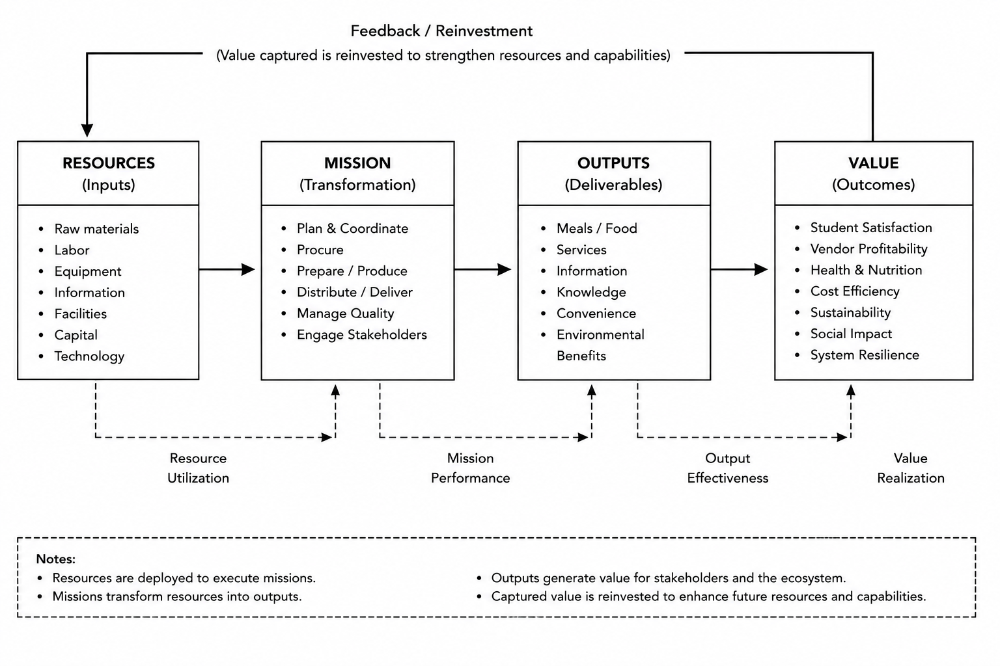

| Dimension | Baseline | Online Platform | MOEE | Simulation Indicator / Placeholder |
|---|---|---|---|---|
| Planning mechanism | Individual planning based on local history, intuition, and previous sales | Planning supported by online orders, transaction data, and limited demand visibility | Mission-oriented planning synchronized through PUDAL and MSRS recommendations | Planning accuracy improvement (%) |
| Coordination | No explicit ecosystem-level coordination; stakeholders act independently | Transaction-level coordination between users and vendors through a platform | Multi-stakeholder coordination among students, vendors, suppliers, university, operator, and regulator | Mission synchronization index |
| Information sharing | Fragmented and informal; information remains local to each stakeholder | Order, payment, and demand data are shared through the digital platform | Shared ecosystem state includes demand, capacity, RMOV accounts, PSKVE flows, scenarios, and metrics | Information completeness score |
| Optimization objective | Local survival and short-term stakeholder utility | Transaction efficiency, convenience, and sales growth | Ecosystem Value Index combining fulfillment, mission achievement, sustainability, satisfaction, profitability, and waste reduction | Average EVI |
| Control loop | Open-loop or weak feedback based on delayed observation | Partial feedback from digital transactions and user behavior | Closed-loop PUDAL cycle: Perception, Understanding, Decision, Action, Learning | Feedback response delay (time steps) |
| Recommendation capability | No formal recommendation system | Mostly single-user or transaction-oriented recommendations | Multi-Stakeholder Recommendation System generates coordinated recommendation vectors | Recommendation acceptance rate (%) |
| Mission Intensity Graph | Mission intensity emerges independently from each stakeholder decision | Mission intensity is partially informed by online demand signals | Mission intensity is explicitly synchronized across stakeholders | MIG alignment score |
| PSKVE exchange visibility | Products and payments are visible informally; service, knowledge, value, and environmental effects are mostly implicit | Products, services, and payments become digitally visible; knowledge and environmental effects remain limited | Product, Service, Knowledge, Value, and Environment exchanges are modeled explicitly | PSKVE ledger completeness |
| RMOV accounting | Resources, mission, outputs, and value are not systematically accounted | Outputs and financial value are partially captured through transactions | Each stakeholder maintains Resource, Mission, Output, and Value accounts | RMOV balance index |
| Sustainability treatment | Sustainability is incidental and usually reactive | Sustainability may be tracked as an additional feature but is not central | Sustainability is embedded in objective functions, scenarios, and EVI | Sustainability score |
| Resilience under disruption | Low; response depends on individual adaptation | Moderate; platform data helps adaptation but may not coordinate stakeholders | High potential; scenario engine and PUDAL support coordinated adaptation | Robustness index |
| Intelligence | Human intuition and local rules | Platform analytics and algorithmic matching | AI-assisted multi-agent reasoning, PUDAL control, MSRS policies, and digital twin simulation | Policy performance rank |
| Expected performance | Efficient only under stable and predictable conditions | Improved transaction efficiency and convenience | Improved mission achievement, sustainability, resilience, and ecosystem value | Improvement vs baseline (%) |
2 Konsep
3 Introduction
The shift toward mission-oriented economies requires a common architecture for engineering design, distributed intelligence, and financial management. Conventional linear models are useful for describing isolated input-output transformations, but they do not fully represent value co-creation among autonomous stakeholders whose timing, capacity, knowledge, and objectives are interdependent. Triune-Intelligence Smart Engineering (TISE) addresses this gap within Mission-Oriented Ecosystem Engineering (MOEE). Smart Engineering produces a PSKVE Exchange Engine, while Triune Intelligence drives the PUDAL Engine that controls those exchanges. Stakeholders remain autonomous, but their requirements, objective functions, exchange rules, timing, and scale can be coordinated around a shared mission.
Triune Intelligence combines three complementary sources: (1) Human/Natural Intelligence, including human judgment and knowledge derived from natural systems; (2) Crowd/Cultural/Collective Intelligence, including shared practices, institutional memory, and group coordination; and (3) Artificial Intelligence, including computational perception, prediction, recommendation, and optimization. TISE treats none of these sources as sufficient alone. PUDAL integrates their signals into accountable control decisions for the PSKVE Exchange Engine.
Campus food service is a small but complete example of such an ecosystem. It contains users, producers, suppliers, operators, regulators, physical resources, digital services, money flows, knowledge flows, environmental effects, and institutional missions. This makes it an appropriate reference system for developing and testing TISE through a Digital Twin Mini-Lab.
For stakeholder (i), a Mission Intensity Graph (MIG) is a time-indexed function
\[ I_i(t) \in [0,1], \qquad t \in [0,T], \]
where (I_i(t)) is the fraction of mission capacity (C_i) scheduled for use at time (t) over planning horizon (T). Mission output is
\[ O_i(t) = f_i\!\left(R_i(t),C_i,E_i(t)\right) I_i(t), \]
where (R_i(t)) denotes available resources and (E_i(t)) denotes the environmental conditions needed to operate mission assets. Thus, a stakeholder creates output by converting resources according to its MIG, subject to both capacity and environmental feasibility.
The paper compares three generations of ecosystem operation.

The three configurations have different validation purposes. The baseline establishes the existence and operational coherence of the ecosystem: user, source, regulator, and operator stakeholders; their missions and MIGs; their VOMR accounts; and the resulting wealth-creation cycle. Stakeholders execute independent MIGs, providing the reference trajectory against which coordinated models are evaluated.
The state-of-the-art (SOTA) configuration demonstrates the existence and operation of the PSKVE Exchange Engine under a prenegotiated smart contract. The contract encodes a fixed PUDAL-derived coordination policy, commitments, and objective function selected before a run; these remain fixed during execution. Comparing alternative contracts and objective functions tests whether engineered PSKVE coordination creates more value or wealth than the baseline, without yet claiming adaptive intelligence.
The TISE configuration adds adaptive cooperative coordination driven by Triune Intelligence. Human/Natural, Crowd/Cultural/Collective, and Artificial Intelligence signals allow the PUDAL Engine to facilitate revisions to stakeholder MIGs and exchange controls as conditions change. Cooperation remains subject to negotiated stakeholder constraints and participation. TISE is therefore evaluated not only by its value and wealth creation under normal conditions, but also by its ability to maintain mission performance, absorb shocks, recover, and reconfigure under disruptive scenarios.
3.1 Contributions
This paper contributes: (1) TISE as an architecture connecting Triune Intelligence and Smart Engineering; (2) a PSKVE Exchange Engine controlled by a Triune-Intelligence-driven PUDAL Engine; (3) a mathematical representation of mission execution using MIGs; (4) a Triple-Market Architecture that connects asset capitalization, liquidity, and operations; (5) VOMR accounting for systemic wealth; and (6) a Digital Twin Mini-Lab for scenario-based stress testing and controller selection.
4 Literature Review
The work relates to three streams of literature: decentralized operations and supply chains, digital platforms and recommendation systems, and mission-oriented service ecosystems.

| Literature Stream | Primary Focus | Typical Unit of Analysis | Main Contribution | Limitation for MOEE | MOEE Response | Relevant MOEE Concepts |
|---|---|---|---|---|---|---|
| Operations Management | Efficient allocation of resources, capacity, inventory, queues, and production decisions | Firm, facility, process, queue, inventory system | Provides formal models for efficiency, capacity planning, scheduling, and service operations | Usually optimizes local operational performance rather than multi-stakeholder mission alignment | Extends operational optimization into ecosystem-level mission coordination using PUDAL and MSRS | Mission Intensity Graph; PUDAL; EVI; Scenario Stress Testing |
| Supply Chain Management | Coordination of suppliers, producers, distributors, and customers across material and information flows | Supply chain network | Explains inter-organizational coordination, logistics, inventory flow, and disruption management | Often emphasizes product flow and cost/service trade-offs more than mission, value, knowledge, and environmental co-creation | Models broader PSKVE exchanges among stakeholders, including knowledge, value, and environmental impacts | PSKVE; RMOV; Scenario Engine; Sustainability Metrics |
| Online Food Ordering | Digital transactions, ordering convenience, platform mediation, and demand visibility | Platform-mediated transaction | Improves ordering efficiency, payment convenience, and data capture for vendors and users | Optimizes transactions but usually does not coordinate university mission, sustainability, nutrition, vendor viability, and resilience | Treats the online platform as an intermediate architecture and adds mission-oriented ecosystem control | Baseline-Online-MOEE Comparison; MSRS; EVI; Mission Achievement |
| Recommendation Systems | Matching users with items, services, or choices based on preference, history, and context | User-item interaction | Provides algorithmic approaches for personalized suggestions and decision support | Commonly optimizes individual user utility, click-through, or transaction success rather than multi-stakeholder value | Generalizes recommendation into a Multi-Stakeholder Recommendation System that issues coordinated recommendation vectors | MSRS; Recommendation Vector; Stakeholder Utility; Acceptance Probability |
| Multi-Agent Systems | Autonomous agents interacting, negotiating, coordinating, and adapting in a shared environment | Agent society or agent-based simulation | Provides a computational foundation for modeling autonomous stakeholders and emergent ecosystem behavior | May simulate agent behavior without explicit mission accounting, PSKVE exchange structure, or ecosystem-level value index | Embeds agents inside RMOV accounts, PSKVE exchanges, PUDAL control, and EVI-based evaluation | StakeholderAgent; RMOV; PSKVE Ledger; Digital Twin Mini-Lab |
| Digital Twins | Executable digital representation of a physical or organizational system for monitoring, simulation, and decision support | Physical asset, process, organization, or system replica | Enables simulation, what-if analysis, scenario testing, and performance monitoring | Often focuses on assets or processes rather than mission-oriented multi-stakeholder ecosystems | Uses the Digital Twin Mini-Lab as an ecosystem wind tunnel for stakeholder missions, scenarios, and policy comparison | Digital Twin Mini-Lab; Scenario Engine; Experiment Manager; Robustness Ranking |
| Service-Dominant Logic | Value co-creation through service exchange and resource integration | Service ecosystem and actor-to-actor exchange | Shifts value thinking from goods exchange to co-created value among actors | Strong conceptual foundation but often lacks executable engineering, simulation, and control mechanisms | Operationalizes value co-creation through PSKVE, RMOV accounts, PUDAL, MSRS, and measurable EVI | PSKVE; RMOV; EVI; Ecosystem Value Co-Creation |
| Stakeholder Theory | Stakeholder interests, responsibilities, legitimacy, and value distribution | Organization and its stakeholders | Provides normative and strategic basis for including multiple stakeholder interests | Often identifies stakeholders and interests but does not provide a computational coordination architecture | Represents stakeholders as autonomous agents with missions, resources, outputs, values, and decision variables | StakeholderAgent; RMOV; Utility Functions; Mission Dependency Matrix |
| Mission-Oriented Innovation | Coordinated innovation around societal missions and public value creation | Mission, policy program, innovation ecosystem | Frames innovation as collective action toward mission achievement rather than isolated market success | Frequently remains at policy or strategy level without detailed simulation of stakeholder missions and exchanges | Provides an engineering framework for turning missions into executable ecosystem models and stress-tested MSRS policies | MOEE Lifecycle; Mission Achievement; PUDAL; Digital Twin Mini-Lab |
| Comparison Dimension | Local Optimization | Transaction Optimization | Mission-Oriented Optimization | Remaining Gap Addressed by MOEE |
|---|---|---|---|---|
| Primary optimization paradigm | Optimize an individual process, facility, vendor, queue, or resource allocation problem | Optimize digital transactions, platform matching, ordering, payment, and convenience | Optimize multi-stakeholder mission achievement and ecosystem value | Existing approaches rarely integrate stakeholder missions, systemic value, sustainability, and resilience in one executable framework |
| Main decision maker | Individual manager, vendor, or operational unit | Digital platform, marketplace operator, or recommendation algorithm | PUDAL-controlled ecosystem governance with autonomous stakeholder agents | MOEE provides a coordination layer that respects stakeholder autonomy while aligning ecosystem-level missions |
| Stakeholder scope | One stakeholder or one organization | Usually users and providers mediated by a platform | Students, vendors, suppliers, delivery actors, university, operator, regulator, and external environment | MOEE expands analysis from dyadic transactions to full multi-stakeholder mission ecosystems |
| Value concept | Efficiency, cost reduction, throughput, profit, or utilization | Convenience, sales, conversion, retention, rating, and platform revenue | Systemic value combining mission achievement, satisfaction, sustainability, resilience, knowledge, and financial viability | MOEE formalizes systemic value through EVI and RMOV accounts |
| Information model | Local operational data and historical records | Platform transaction data, user behavior, order history, and payment records | Shared ecosystem state including demand, capacity, RMOV, PSKVE, scenarios, policies, and metrics | MOEE integrates operational, financial, mission, environmental, and learning data into one digital twin |
| Control mechanism | Manual adjustment, rule-based planning, or delayed feedback | Platform analytics, matching algorithms, and partial feedback from transactions | Closed-loop PUDAL: Perception, Understanding, Decision, Action, Learning | MOEE introduces explicit ecosystem control rather than relying only on market or platform feedback |
| Recommendation target | Usually one decision maker or one operational function | Usually the consumer, provider, or transaction pair | Recommendation vector for multiple stakeholders simultaneously | MOEE generalizes recommender systems into MSRS for coordinated ecosystem action |
| Mission representation | Mission is implicit or reduced to operational targets | Mission is often reduced to platform growth or transaction completion | Mission is explicit through stakeholder missions and Mission Intensity Graphs | MOEE makes mission intensity measurable, comparable, and synchronizable over time |
| Exchange representation | Material, labor, money, and output flows | Product, service, order, payment, and rating flows | PSKVE exchanges: Product, Service, Knowledge, Value, and Environment | MOEE captures non-transactional exchanges such as knowledge, public value, and environmental impact |
| Accounting framework | Cost, revenue, inventory, and utilization accounts | Orders, payments, ratings, commissions, and platform metrics | RMOV accounts: Resources, Mission, Outputs, and Value for each stakeholder | MOEE connects resources, mission execution, outputs, and value creation in a stakeholder-level accounting structure |
| Sustainability treatment | Often treated as a constraint or secondary metric | Often optional, indirect, or platform-specific | Embedded in objective functions, EVI, scenarios, and evaluation metrics | MOEE treats sustainability as a core ecosystem performance dimension |
| Resilience treatment | Local robustness or buffer capacity | Platform continuity, demand response, and supply-demand matching under disturbance | Scenario wind tunnel, stress testing, recovery analysis, and robustness ranking | MOEE evaluates ecosystem performance under disruptions rather than only under normal operating conditions |
| Engineering artifact | Optimization model, spreadsheet, operations dashboard, or simulation model | Digital platform, marketplace, recommender system, or analytics dashboard | Digital Twin Mini-Lab with agents, PUDAL, MSRS, scenarios, RMOV, PSKVE, and EVI | MOEE provides a reusable engineering artifact for design, simulation, evaluation, and policy selection |
| Validation strategy | Analytical results, operational KPIs, and local performance comparison | A/B testing, platform KPIs, adoption metrics, and transaction analytics | Comparative simulation of Baseline, Online Platform, and MOEE under multiple scenarios and policies | MOEE enables controlled comparison of ecosystem architectures before real-world deployment |
The research gap is that current approaches either optimize local operations or digital transactions. They rarely engineer coordinated mission plans for multiple stakeholders while jointly considering financial, operational, social, environmental, and governance objectives.
5 Problem Statement
The core problem is to design an ecosystem controller that can recommend coordinated actions to heterogeneous stakeholders without reducing the ecosystem to a single firm’s profit function or a single consumer’s preference function. The controller must align physical transformation, mission timing, and financial viability while respecting stakeholder autonomy and operating constraints.
Let stakeholders be indexed by \(i \in \mathcal{I}\). Each stakeholder maintains VOMR accounts: Value \(V_i(t)\), Output \(O_i(t)\), Mission \(M_i(t)\), and Resources \(R_i(t)\). VOMR is the reporting and accounting view; the underlying causal cycle proceeds from resources through mission execution to outputs and realized value, \(R \rightarrow M \rightarrow O \rightarrow V\). Stakeholders may create MIG proposals using historical, probabilistic, agent, or hybrid reasoning. The baseline commits these MIGs independently, SOTA coordinates them through a prenegotiated smart contract, and TISE coordinates them adaptively and cooperatively through a PUDAL-controlled MSRS informed by Human/Natural, Crowd/Cultural/Collective, and Artificial Intelligence.
The design objective is to maximize an Ecosystem Value Index:
\[ EVI(t) = \sum_k w_k z_k(t) \]
where \(z_k(t)\) are normalized metrics such as mission achievement, sustainability, satisfaction, profitability, waste reduction, and resilience.
The optimization is constrained by resource balances, mission-asset capacity, environmental feasibility, liquidity, and stakeholder participation. Consequently, a high EVI is meaningful only when the recommended configuration is operationally and financially feasible.
6 TISE Engineering Architecture
TISE stands for Triune-Intelligence Smart Engineering. Its Smart Engineering component produces the PSKVE Exchange Engine, which represents and executes exchanges of Products, Services, Knowledge, Values, and Environment. This multidimensional model recognizes that ecosystem utility extends beyond goods and money. The Environment category includes the physical, institutional, digital, and ecological conditions that enable or constrain mission-asset operation.
The PUDAL Engine closes the control loop around the PSKVE Exchange Engine. It perceives system state and anomalies, interprets stakeholder requirements and dependencies, recommends or updates coordinated MIGs, and learns from observed outcomes. Its control decisions are driven by Triune Intelligence rather than by artificial intelligence alone.
6.1 Triune Intelligence
Triune Intelligence integrates three distinct but interacting intelligence channels:
- Human/Natural Intelligence (HNI): human expertise, ethical judgment, lived experience, and principles or patterns learned from natural systems.
- Crowd/Cultural/Collective Intelligence (CCI): stakeholder participation, community knowledge, cultural norms, institutional memory, and emergent group coordination.
- Artificial Intelligence (AI): data-driven sensing, forecasting, anomaly detection, recommendation, simulation, and optimization.
Let the intelligence state supplied to PUDAL be
\[ \mathcal{T}(t) = \left[HNI(t), CCI(t), AI(t)\right]. \]
The PUDAL control action can then be represented as
\[ u(t) = \pi_{\mathrm{PUDAL}}\!\left(x(t),\mathcal{T}(t),\mathcal{P}(t)\right), \]
where \(x(t)\) is the observed ecosystem state and \(\mathcal{P}(t)\) contains negotiated mission requirements, policies, and constraints. The action \(u(t)\) configures MIGs and PSKVE exchange rules. Feedback from executed exchanges updates both the ecosystem state and the evidence available to the three intelligence channels.
6.2 Smart Engineering and PSKVE Exchange
Smart Engineering converts mission requirements and system knowledge into an operable PSKVE Exchange Engine. PUDAL controls this engine by selecting feasible exchange policies and mission intensities. When demand, supply, liquidity, or environmental conditions change, PUDAL can adjust mission intensity and exchange policies rather than allowing a local disruption to propagate unchecked through the ecosystem.
For a set of stakeholder MIGs \(\mathbf{I}(t) = [I_1(t),\ldots,I_n(t)]^\top\), the PUDAL Engine solves a constrained coordination problem of the form
\[ \mathbf{I}^{*} = \arg\max_{\mathbf{I}} \; \mathbb{E}\!\left[\sum_{t=0}^{T} EVI(t)\right] \]
subject to \(0 \le I_i(t) \le 1\), stakeholder capacity and resource constraints, mission dependencies, market-clearing rules, and minimum participation requirements. This formulation makes resilience a property of adaptive configuration rather than spare capacity alone.
6.3 Stakeholder MIG Reasoning
MIG creation remains a stakeholder function. Each stakeholder \(i\) generates a proposed intensity trajectory from its mission, observations, resources, capacity, and reasoning mode:
\[ \widehat{I}_i(t) = G_i\!\left(M_i, x_i(t), R_i(t), C_i; \rho_i, \theta_i\right), \]
where \(\rho_i\) identifies the reasoning mode and \(\theta_i\) contains its calibrated parameters. Three modes are supported:
- Fixed/historical reasoning uses a deterministic rule, expert-defined schedule, or replay or aggregate of historical MIG observations. It provides a transparent and reproducible reference.
- Probabilistic reasoning represents uncertainty explicitly by sampling or estimating \(I_i(t)\) from a conditional distribution, such as \(p(I_i(t) \mid x_i(t), \mathcal{H}_i)\), where \(\mathcal{H}_i\) is stakeholder history. Monte Carlo runs then quantify the distribution of mission and wealth outcomes.
- Agent reasoning lets an autonomous stakeholder agent construct or revise its MIG from goals, beliefs, observations, memory, constraints, and expected consequences. The implementation may use rule-based, belief-desire-intention, planning, reinforcement-learning, or language-model-based reasoning, provided its decisions remain auditable. Agent reasoning describes decision autonomy and is not synonymous with Artificial Intelligence; an agent may draw on any appropriate combination of Triune Intelligence sources.
The modes may be used independently or combined. A hybrid proposal can be written as
\[ \widehat{I}_i(t) = \operatorname{clip}_{[0,1]}\!\left( w_{iF} I_{iF}(t) + w_{iP} I_{iP}(t) + w_{iA} I_{iA}(t) \right), \qquad w_{iF}+w_{iP}+w_{iA}=1. \]
PUDAL does not erase this stakeholder reasoning. It evaluates stakeholder MIG proposals against negotiated policies and ecosystem constraints, then accepts them, recommends revisions, or coordinates them with other stakeholders. In SOTA, those coordination rules are fixed and prenegotiated; in TISE, Triune Intelligence allows the rules and recommendations to adapt to changing conditions.
6.4 Stakeholder MIG Setup and Coordination
The reasoning mode answers how a stakeholder creates a MIG proposal. A separate setup mode answers how stakeholder proposals are committed and coordinated across the ecosystem. Let \(\widehat{\mathbf{I}}(t)\) be the vector of stakeholder-created proposals and let \(\kappa\) denote one of three setup modes:
- Independent setup: each stakeholder commits its own MIG without cross-stakeholder negotiation, so \(I_i(t)=\widehat{I}_i(t)\). This is the baseline configuration.
- Prenegotiated smart contract: stakeholders negotiate commitments, constraints, an objective function, and a fixed coordination rule before execution. A smart contract then applies and enforces that agreement during the run. This is the SOTA configuration.
- Adaptive cooperative setup: stakeholders cooperate through the PUDAL Engine, which uses Triune Intelligence and current ecosystem feedback to recommend coordinated revisions during execution. This is the TISE configuration.
The realized MIG vector is therefore
\[ \mathbf{I}(t)= \mathcal{C}_{\kappa}\!\left( \widehat{\mathbf{I}}(t),x(t),\mathcal{P}(t),\mathcal{T}(t) \right), \]
where \(\mathcal{C}_{\kappa}\) is the selected coordination operator. For independent setup it is the identity operator; for smart-contract setup it is fixed by the prenegotiated agreement; and for adaptive cooperative setup it is updated through PUDAL subject to stakeholder consent, policies, and feasibility constraints. Separating \(\rho\) (reasoning) from \(\kappa\) (setup) permits, for example, probabilistic stakeholder reasoning under either independent, smart-contract, or adaptive cooperative coordination.

| Variable / Symbol | Name | Definition | Unit | Allowable Range | Equation / Rule | Interpretation | Campus Food Example | Simulation Placeholder |
|---|---|---|---|---|---|---|---|---|
| i | Stakeholder index | Index identifying a stakeholder agent in the ecosystem | dimensionless | i = 1, 2, …, N | i ∈ A, where A is the set of stakeholder agents | Distinguishes students, vendors, suppliers, delivery actors, university, operator, and regulator | i = Vendor_A or Students_1 | Defined by case configuration |
| t | Simulation time step | Discrete time index used to track mission intensity and ecosystem state | time step, day, or hour | t = 0, 1, …, T | t advances by Δt in each simulation step | Allows stakeholder missions to be represented as time-varying functions | t may represent one day of campus food operation | Default: daily step; can be changed to hourly |
| Δt | Time-step resolution | Duration represented by one simulation step | minutes, hours, or days | Δt > 0 | T_total = T × Δt | Determines the granularity of mission planning and synchronization | Δt = 1 day for strategic simulation or Δt = 1 hour for lunch-period simulation | [to be specified] |
| C_i | Stakeholder capacity | Maximum mission-relevant capacity of stakeholder i | meals/time step, deliveries/time step, policy actions/time step, normalized units | C_i ≥ 0 | C_i is specified by case parameters or calibration data | Defines the maximum feasible mission workload for a stakeholder | Vendor_A capacity = 180 meals/day | [calibrated by data] |
| M_i(t) | Mission intensity | Planned mission execution intensity of stakeholder i at time t | 0–1 normalized fraction of capacity | 0 ≤ M_i(t) ≤ 1; values >1 may represent overload in stress tests | M_i(t)=PlannedWork_i(t)/C_i | Measures how strongly a stakeholder commits capacity to its mission | M_vendor(t)=0.85 means vendor plans to use 85% of capacity | [computed per time step] |
| M_i^base(t) | Baseline mission intensity | Mission intensity generated by local, independent stakeholder planning | 0–1 normalized intensity | 0 ≤ M_i^base(t) ≤ 1 | M_i^base(t+1)=f_i(H_i(t),E_i(t)) | Represents independent stakeholder behavior without digital platform or PUDAL coordination | Vendor estimates production from yesterday’s sales | [baseline model output] |
| M_i^online(t) | Online-platform mission intensity | Mission intensity informed by platform transaction and demand signals | 0–1 normalized intensity | 0 ≤ M_i^online(t) ≤ 1 | M_i^online(t+1)=f_i(H_i(t),O_platform(t)) | Represents partially improved planning using digital transaction visibility | Vendor adjusts production using pre-order data | [online model output] |
| M_i^MOEE(t) | MOEE mission intensity | Mission intensity coordinated through PUDAL and MSRS | 0–1 normalized intensity | 0 ≤ M_i^MOEE(t) ≤ 1; overload values may be allowed for crisis scenarios | M_i^MOEE(t+1)=PUDAL_i(S(t),Rec_i(t),G(t)) | Represents mission execution after ecosystem-level coordination | Vendor, supplier, and delivery intensity are synchronized before demand surge | [MOEE model output] |
| W_i(t) | Mission workload | Actual planned workload implied by mission intensity | meals, deliveries, inspections, service units per time step | W_i(t) ≥ 0 | W_i(t)=M_i(t)×C_i | Converts normalized mission intensity into operational workload | If C_vendor=180 and M_vendor=0.80, W_vendor=144 meals | [computed] |
| R_i^req(t) | Required resources | Resources required by stakeholder i to execute mission intensity at time t | ingredient units, labor hours, IDR, compute units | R_i^req(t) ≥ 0 | R_i^req(t)=a_i×M_i(t)×C_i | Links mission intensity to resource requirements in the RMOV account | Higher vendor mission intensity requires more ingredients and labor | [computed from resource coefficients] |
| O_i(t) | Mission output | Output produced by stakeholder i at time t | meals, deliveries, policy actions, recommendations, reports | O_i(t) ≥ 0 | O_i(t)=η_i×M_i(t)×C_i | Connects mission execution to output production | Vendor output equals meals produced and served | [computed] |
| η_i | Mission productivity coefficient | Efficiency with which mission workload becomes useful output | output units per workload unit | η_i ≥ 0 | O_i(t)=η_i×W_i(t) | Captures stakeholder productivity or conversion efficiency | Vendor productivity declines when supply shock reduces ingredient quality | [calibrated or assumed] |
| a_i | Resource coefficient | Resource amount required per unit of mission workload | resource units per workload unit | a_i ≥ 0 | R_i^req(t)=a_i×W_i(t) | Determines how much resource is consumed when mission intensity increases | Ingredient units required per meal produced | [calibrated or assumed] |
| D(t) | Ecosystem demand | Total demand that must be served by the ecosystem at time t | meals/time step or service units/time step | D(t) ≥ 0 | D(t)=Σ_s D_s(t) | Represents external or user-side mission pressure on the ecosystem | Total student meal demand during lunch period | [scenario-dependent] |
| S(t) | Ecosystem state | State vector observed by PUDAL for coordination | mixed units | case-specific | S(t)={D(t),C_i,R_i,O_i,V_i,M_i,Scenario(t),Metrics(t)} | Collects the information needed for ecosystem-level decision making | Demand, vendor capacity, supplier availability, waste, satisfaction, and EVI | [observed each step] |
| Rec_i(t) | Stakeholder recommendation | Recommendation issued by MSRS to stakeholder i at time t | action plus optional target intensity | policy-specific | Rec(t)=MSRS(S(t),Policy_k) | Mechanism for influencing stakeholder mission intensity while preserving autonomy | Recommend Vendor_A to produce at 90% capacity | [generated by MSRS] |
| A_i(t) | Recommendation acceptance indicator | Whether stakeholder i accepts the MSRS recommendation | binary or probability | A_i(t) ∈ {0,1} or 0≤P(A_i)≤1 | P(A_i=1)=σ(αTrust_i+βBenefit_i−γCost_i) | Models stakeholder autonomy and willingness to follow ecosystem recommendations | Vendor accepts production recommendation if expected benefit exceeds cost | [computed or sampled] |
| ρ_M(t) | Mission synchronization index | Degree of alignment among stakeholder mission intensities at time t | 0–1 normalized score | 0 ≤ ρ_M(t) ≤ 1 | ρ_M(t)=1−NormalizedDispersion(M_1(t),…,M_N(t)) | Higher values indicate better synchronization across missions | High when vendor, supplier, and delivery missions peak together before lunch | [computed] |
| B_i(t) | Mission bottleneck indicator | Indicates whether stakeholder i constrains ecosystem mission achievement at time t | binary or normalized severity | 0 ≤ B_i(t) ≤ 1 | B_i(t)=max(0,D_ireq(t)−O_i(t))/max(1,D_ireq(t)) | Identifies stakeholders whose output is insufficient for downstream missions | Supplier bottleneck occurs when ingredient delivery is below vendor requirement | [computed] |
| G(t) | Mission goal vector | Target mission outcomes for the ecosystem at time t | mixed normalized targets | case-specific | G(t)={NutritionTarget,AffordabilityTarget,WasteTarget,EVI_Target,…} | Represents mission goals used by PUDAL and MSRS | Nutrition ≥ 0.75; WasteReduction ≥ 0.80; EVI ≥ 0.85 | [policy-defined] |
| EVI(t) | Ecosystem Value Index | Composite ecosystem performance score linked to mission intensity outcomes | 0–1 normalized score | 0 ≤ EVI(t) ≤ 1 | EVI(t)=Σ_k w_k Metric_k(t) | Measures whether synchronized mission intensity produces systemic value | EVI improves when fulfillment, satisfaction, sustainability, and mission achievement rise | [computed] |
6.5 VOMR Accounting View and Transformation Flow

| Stakeholder | RMOV Account | Symbol / Variable | Definition | Unit | Update Equation / Rule | Interpretation | Campus Food Example | Simulation Placeholder |
|---|---|---|---|---|---|---|---|---|
| Students | Resources | R_student(t) | Available student resources for obtaining meals | IDR, minutes, preference score | R_student(t+1)=R_student(t)-MealCost(t)-WaitingTimeCost(t) | Represents the budget, time, and information capacity students can use for food decisions | Meal budget decreases after payment; available time decreases while waiting in queue | [to be calibrated] |
| Students | Mission | M_student(t) | Student mission intensity for obtaining a suitable meal | 0–1 normalized intensity | M_student(t)=f(Hunger(t),Schedule(t),Budget(t),Recommendation(t)) | Measures how strongly students need or intend to obtain meals at time t | Mission intensity peaks during lunch and exam week | [to be calibrated] |
| Students | Outputs | O_student(t) | Student-generated outputs to the ecosystem | orders, feedback count, demand units | O_student(t)=Orders(t)+Feedback(t)+PreferenceSignal(t) | Represents demand and knowledge signals produced by students | Students place orders and submit ratings | [to be measured] |
| Students | Value | V_student(t) | Value received by students from the food ecosystem | normalized score | V_student(t)=w1Nutrition(t)+w2Affordability(t)+w3Convenience(t)+w4Satisfaction(t) | Captures health, satisfaction, convenience, affordability, and learning-readiness value | Higher nutrition and shorter waiting time increase student value | [to be computed] |
| Vendors | Resources | R_vendor(t) | Inputs available for meal production | ingredient units, labor hours, IDR | R_vendor(t+1)=R_vendor(t)+Delivery(t)-a_vendor*Q_vendor(t) | Represents ingredients, labor, kitchen capacity, and capital | Ingredients decrease as meals are produced and increase after supplier delivery | [to be calibrated] |
| Vendors | Mission | M_vendor(t) | Vendor production and service mission intensity | 0–1 normalized capacity utilization | M_vendor(t)=PlannedProduction(t)/Capacity_vendor | Shows the percentage of vendor capacity planned for mission execution | Vendor operates at 90% capacity during lunch peak | [to be simulated] |
| Vendors | Outputs | O_vendor(t) | Meals and services produced by the vendor | meals, service units | O_vendor(t)=min(M_vendor(t)*Capacity_vendor,AvailableResources(t)/a_vendor) | Represents the actual quantity of meals produced and service capacity delivered | Vendor produces 150 meals from available resources | [to be simulated] |
| Vendors | Value | V_vendor(t) | Financial and non-financial value received by the vendor | IDR, normalized reputation score | V_vendor(t+1)=V_vendor(t)+Revenue(t)-Cost(t)+ReputationGain(t)-Penalty(t) | Captures profit, business viability, reputation, and compliance effects | Profit increases when meals are sold and decreases when waste is high | [to be computed] |
| Suppliers | Resources | R_supplier(t) | Available supply inventory and logistics capacity | ingredient units, delivery slots, vehicle-hours | R_supplier(t+1)=R_supplier(t)+Procurement(t)-Delivery(t) | Represents stock and delivery capacity available to support vendors | Supplier stock decreases after delivering ingredients to vendors | [to be calibrated] |
| Suppliers | Mission | M_supplier(t) | Supplier mission intensity for fulfilling vendor demand | 0–1 normalized intensity | M_supplier(t)=ScheduledDelivery(t)/Capacity_supplier | Measures planned supply commitment relative to capacity | Supplier increases mission intensity before exam week | [to be simulated] |
| Suppliers | Outputs | O_supplier(t) | Delivered ingredients and supply information | ingredient units, delivery count, information records | O_supplier(t)=min(ScheduledDelivery(t),AvailableStock(t)) | Represents useful supply outputs received by vendors | Supplier delivers vegetables and rice to canteen vendors | [to be simulated] |
| Suppliers | Value | V_supplier(t) | Supplier value from transactions and relationship reliability | IDR, reliability score | V_supplier(t+1)=V_supplier(t)+Payment(t)-LogisticsCost(t)+ReliabilityGain(t) | Captures revenue, margin, and long-term relationship value | On-time delivery improves supplier reliability score | [to be computed] |
| Delivery | Resources | R_delivery(t) | Delivery resources available for meal or supply movement | riders, vehicles, delivery slots, energy units | R_delivery(t+1)=R_delivery(t)+AvailableCapacity(t)-UsedCapacity(t) | Represents logistics capacity and operational availability | Available riders decrease during lunch peak | [to be calibrated] |
| Delivery | Mission | M_delivery(t) | Delivery mission intensity for fulfilling logistics demand | 0–1 normalized intensity | M_delivery(t)=AssignedDeliveries(t)/Capacity_delivery | Measures logistics utilization and delivery commitment | Delivery intensity rises when online ordering increases | [to be simulated] |
| Delivery | Outputs | O_delivery(t) | Completed deliveries and routing information | deliveries, minutes saved, routing records | O_delivery(t)=CompletedDeliveries(t) | Represents delivered meals or supplies and logistics service output | Delivery actor completes 80 meal deliveries | [to be measured] |
| Delivery | Value | V_delivery(t) | Value received from delivery service | IDR, reliability score, emissions score | V_delivery(t+1)=V_delivery(t)+DeliveryFee(t)-OperatingCost(t)-EmissionPenalty(t) | Captures income, reliability, and environmental cost | More efficient routing increases delivery value | [to be computed] |
| University | Resources | R_univ(t) | Institutional resources for governing the ecosystem | IDR, facility units, policy instruments | R_univ(t+1)=R_univ(t)-Subsidy(t)-FacilityCost(t)+BudgetAllocation(t) | Represents subsidy budget, facilities, data access, and governance authority | University allocates subsidy to improve meal affordability | [to be calibrated] |
| University | Mission | M_univ(t) | University mission intensity for student welfare and campus sustainability | 0–1 normalized governance intensity | M_univ(t)=f(WelfareTarget(t),SustainabilityTarget(t),Budget(t)) | Measures institutional commitment to campus food mission | University increases governance intensity after food waste rises | [to be simulated] |
| University | Outputs | O_univ(t) | Governance outputs produced by the university | policies, subsidy decisions, facility allocations | O_univ(t)=PolicyActions(t)+SubsidyActions(t)+FacilityActions(t) | Represents institutional interventions that shape the ecosystem | University issues a plastic reduction policy | [to be recorded] |
| University | Value | V_univ(t) | Institutional and mission value generated by the food ecosystem | normalized mission score | V_univ(t)=w1StudentWelfare(t)+w2Sustainability(t)+w3VendorViability(t)+w4Reputation(t) | Captures campus welfare, reputation, mission achievement, and sustainability | Higher student satisfaction and lower waste increase university value | [to be computed] |
| Operator | Resources | R_operator(t) | Digital Twin Mini-Lab and coordination resources | data records, compute units, model assets, staff-hours | R_operator(t+1)=R_operator(t)+DataIn(t)-ComputeUse(t)-MaintenanceCost(t) | Represents data, software, models, dashboards, and computational capacity | Operator receives demand data and uses compute resources to run MSRS | [to be calibrated] |
| Operator | Mission | M_operator(t) | Operator mission intensity for monitoring, simulation, recommendation, and reporting | 0–1 normalized coordination intensity | M_operator(t)=RecommendationFrequency(t)/MaxFrequency | Measures how intensively the operator coordinates the ecosystem | Operator increases recommendation frequency during multi-shock scenario | [to be simulated] |
| Operator | Outputs | O_operator(t) | Digital coordination outputs | recommendations, reports, dashboards, simulations | O_operator(t)=Recommendations(t)+Reports(t)+ScenarioRuns(t) | Represents decision-support artifacts produced by the operator | PUDAL generates vendor production recommendations | [to be recorded] |
| Operator | Value | V_operator(t) | Coordination value generated by the operator | normalized contribution score | V_operator(t)=EVI_with_operator(t)-EVI_without_operator(t) | Measures how much the digital coordination layer improves ecosystem performance | Operator value is high when MSRS reduces waste and shortage simultaneously | [to be computed] |
| Regulator | Resources | R_reg(t) | Regulatory authority and enforcement capacity | inspection slots, rules, sanction capacity | R_reg(t+1)=R_reg(t)+PolicyCapacity(t)-InspectionUse(t) | Represents rules, inspection capacity, standards, and enforcement resources | Regulator has limited inspection capacity per week | [to be calibrated] |
| Regulator | Mission | M_reg(t) | Regulatory mission intensity for safety, fairness, and sustainability compliance | 0–1 normalized regulatory intensity | M_reg(t)=InspectionIntensity(t)+ComplianceMonitoringIntensity(t) | Measures how strongly regulatory control is applied | Regulatory intensity rises after safety risk increases | [to be simulated] |
| Regulator | Outputs | O_reg(t) | Regulatory outputs | inspections, certifications, warnings, penalties | O_reg(t)=Inspections(t)+Certifications(t)+Sanctions(t) | Represents compliance actions that shape stakeholder behavior | Regulator certifies vendors meeting hygiene standards | [to be recorded] |
| Regulator | Value | V_reg(t) | Public value from regulation | normalized trust, safety, and compliance score | V_reg(t)=w1Safety(t)+w2Fairness(t)+w3Compliance(t)+w4Sustainability(t) | Captures trust, safety, fairness, and environmental compliance | Food safety compliance improves public trust | [to be computed] |
6.6 PUDAL Control of the PSKVE Exchange Engine

| PUDAL Stage | Purpose | Primary Inputs | Internal Processing / Algorithms | Primary Outputs | Example Variables | Decision Questions Supported | Contribution to Coordination | Campus Food Example | Simulation Placeholder |
|---|---|---|---|---|---|---|---|---|---|
| Perception | Observe the current ecosystem state from stakeholders, transactions, scenarios, and metrics | Demand, orders, vendor capacity, supplier stock, delivery capacity, RMOV accounts, PSKVE ledger, scenario state, historical metrics | Data collection, validation, aggregation, normalization, anomaly detection, state-vector construction | Observed ecosystem state S(t) | D(t), C_i, R_i(t), O_i(t), V_i(t), M_i(t), waste(t), satisfaction(t) | What is happening now? Which stakeholders are overloaded, underused, or at risk? | Creates shared situational awareness across stakeholders | Collect lunch demand, vendor production, supplier delivery status, and student queue signals | Observed state completeness score |
| Understanding | Interpret the perceived state, predict consequences, and identify risks or opportunities | Observed state S(t), historical trends, scenario parameters, stakeholder models, mission goals G(t) | Demand forecasting, bottleneck detection, shortage-risk estimation, waste-risk estimation, mission-dependency analysis, scenario projection | Interpreted state, predicted demand, predicted bottlenecks, risk indicators, opportunity indicators | D_hat(t+1), shortage_risk(t), waste_risk(t), bottleneck_i(t), demand_pressure(t) | What will happen next if no intervention is made? Where are the critical mission dependencies? | Transforms raw data into actionable ecosystem knowledge | Predict that exam week will create a demand surge and supplier bottleneck | Prediction accuracy (%) |
| Decision | Select coordinated recommendations or policies that improve ecosystem value and mission achievement | Interpreted state, predicted risks, candidate MSRS policies, stakeholder utilities, constraints, EVI weights | Multi-objective optimization, rule-based policy selection, MSRS recommendation generation, constraint checking, trade-off analysis | Recommendation vector Rec(t) and selected policy π_k | Rec_student(t), Rec_vendor(t), Rec_supplier(t), Rec_operator(t), Rec_regulator(t), π_k | Which recommendations should be issued to which stakeholders? Which policy is best under this scenario? | Converts ecosystem understanding into coordinated stakeholder-level actions | Recommend vendors to adjust production, suppliers to advance delivery, and students to choose less congested vendors | Expected EVI improvement |
| Action | Deliver recommendations to stakeholders and execute accepted actions in the ecosystem | Recommendation vector Rec(t), stakeholder acceptance probabilities, operational constraints | Recommendation dispatch, stakeholder acceptance model, action execution, mission intensity update, RMOV update, PSKVE exchange recording | Accepted actions A_i(t), updated mission intensities M_i(t), executed outputs O_i(t) | A_i(t), P_accept_i(t), M_i_new(t), Q_vendor(t), Delivery_supplier(t) | Which stakeholders accepted recommendations? What actions were actually executed? | Implements the coordinated plan while preserving stakeholder autonomy | Vendor_A accepts recommendation to produce at 90% capacity; Supplier_1 advances delivery | Recommendation acceptance rate (%) |
| Learning | Evaluate outcomes, update models, and improve future recommendations | Executed actions, realized demand, served meals, waste, profit, satisfaction, mission achievement, EVI, stakeholder feedback | Outcome evaluation, error analysis, policy scoring, model update, weight adjustment, reinforcement or adaptive learning placeholder | Updated policy knowledge, updated parameters, performance log, robustness evidence | EVI(t), MA(t), waste(t), profit(t), prediction_error(t), policy_score_k(t) | Did the intervention improve the ecosystem? What should be changed next time? | Enables continuous improvement and ecosystem adaptation across scenarios | After observing reduced waste but lower satisfaction, the system adjusts EVI weights or recommendation policy | Policy improvement rate |
| Cross-stage integration | Maintain coherence among perception, understanding, decision, action, and learning over time | All PUDAL stage outputs, ecosystem goals, stakeholder constraints, scenario library | Closed-loop control, experiment management, scenario comparison, robustness ranking, audit logging | Coordinated ecosystem trajectory, experimental history, scenario-policy performance table | S(t), Rec(t), A(t), Metrics(t), RI_k, EVI_bar_k | Which ecosystem architecture and MSRS policy is robust across scenarios? | Turns local stakeholder operations into a controlled mission-oriented ecosystem | Compare Baseline, Online Platform, and MOEE under normal, inflation, and multi-shock scenarios | Robustness index |

7 Triple-Market Financial Architecture
Within TISE, the Triple-Market Architecture maps the PSKVE Exchange Engine to economic reality by separating three markets that perform different functions while exchanging consistent VOMR signals. The Triple-Market Architecture is therefore a financial subsystem of TISE, not the expansion of the TISE acronym.
- The Stock Market capitalizes fixed mission assets and records their ownership and long-term financing on the balance sheet.
- The Financial Market supplies liquidity, credit, and bonds for short-term operations and is reflected in cash-flow accounts.
- The Resource–Output (R–O) Market prices and clears the operational transformation of resources into outputs and is reflected in the income statement.
This separation prevents an operational surplus from being confused with liquidity or asset appreciation. At the same time, PUDAL coordinates the three markets: asset capacity constrains feasible MIGs, liquidity constrains when missions can execute, and R–O market prices influence which transformations generate sustainable value.
7.1 VOMR Accounting and Systemic Wealth
VOMR tracks Value, Output, Mission, and Resources for each stakeholder and for the ecosystem in aggregate. For stakeholder \(i\), the realized change in the Value account over an accounting interval is
\[ \Delta V_i = \operatorname{Revenue}_i - \operatorname{Cost}_i, \]
with
\[ \operatorname{Revenue}_i = \sum_{o \in \mathcal{O}_i} p_o O_{io}, \qquad \operatorname{Cost}_i = \sum_{r \in \mathcal{R}_i} p_r R_{ir}. \]
Here, \(p_o\) and \(p_r\) are transaction prices discovered in the relevant markets. The resulting \(\Delta V_i\) is the realized financial margin of a transformation cycle, not the entirety of systemic wealth. TISE also retains mission achievement, nonfinancial PSKVE exchanges, externalities, resilience, and changes in mission-asset capacity in the Ecosystem Value Index. Aggregate systemic value can therefore be represented as
\[ \Delta V_{\mathrm{sys}} = \sum_{i \in \mathcal{I}} \Delta V_i + \Phi(\mathbf{z}), \]
where \(\Phi(\mathbf{z})\) converts agreed nonfinancial mission outcomes and externalities into a transparent system-level adjustment. Keeping \(\Phi\) explicit prevents collective value from being silently equated with the sum of stakeholder profits.
8 Campus Food Service Ecosystem
The reference ecosystem contains four functional stakeholder classes:
- User stakeholders consume or benefit from ecosystem outputs; in the campus case, students are the primary users.
- Source stakeholders provide resources and outputs; these include vendors, producers, and suppliers.
- Regulator stakeholders define or enforce policies, safety requirements, sustainability targets, and participation constraints; these include university administration and public regulators.
- Operator stakeholders enable, schedule, and settle ecosystem activity; these include campus service operators, delivery services, and digital-platform operators.
A real organization may occupy more than one class, but each simulated role has explicit missions, a MIG, VOMR accounts, and PSKVE exchange interfaces. The baseline model validates that these elements form a functioning ecosystem and produce an observable wealth-creation cycle before coordination benefits are attributed to SOTA or TISE control.

| Stakeholder | Mission | Resources | Expected Outputs | Value Generated | Objectives | Constraints | Decision Variables | Relevant RMOV Accounts | Relevant PSKVE Exchanges |
|---|---|---|---|---|---|---|---|---|---|
| Students | Obtain affordable, nutritious, convenient, and timely meals that support learning and well-being | Money, time, appetite, dietary preferences, mobility, information access | Meal demand, payment, feedback, preference signals, consumption behavior | Health, satisfaction, learning readiness, campus participation, demand information for vendors | Maximize satisfaction, nutrition, affordability, convenience, and reduced waiting time | Budget, class schedule, queue time, dietary restrictions, menu availability | Meal choice, vendor choice, order time, budget allocation, feedback submission | R: budget/time; M: meal acquisition; O: demand/feedback; V: satisfaction/health | Receives Product/Service; provides Value/Knowledge |
| Vendors | Prepare and sell meals while maintaining financial viability, service quality, and campus mission alignment | Ingredients, labor, kitchen equipment, working capital, menu knowledge, vendor space | Prepared meals, service capacity, menu information, sales data, waste data | Profit, employment, food availability, service quality, contribution to campus welfare | Maximize profit, demand fulfillment, utilization, food quality, and customer satisfaction while minimizing waste | Capacity, ingredient availability, labor availability, food safety rules, cost inflation, demand uncertainty | Production quantity, menu mix, price, opening hours, staffing, procurement quantity | R: ingredients/labor/capital; M: food production; O: meals; V: profit/reputation | Receives Product/Knowledge; provides Product/Service; generates Environmental impact |
| Suppliers | Deliver reliable, affordable, and quality inputs to vendors according to ecosystem demand | Raw materials, transport capacity, inventory, supplier network, market price information | Ingredient deliveries, availability information, price signals, supply reliability | Supply continuity, vendor readiness, reduced shortage risk, supplier revenue | Maximize delivery reliability, sales volume, inventory turnover, and supplier margin | Stock availability, logistics capacity, lead time, price volatility, perishability | Delivery quantity, delivery timing, price, inventory allocation, sourcing decision | R: stock/logistics; M: supply delivery; O: delivered ingredients; V: revenue/reliability | Provides Product/Knowledge; receives Value |
| Delivery | Move meals or supplies efficiently between stakeholders when required by the operating model | Vehicles, riders, routing information, time, fuel or energy, delivery platform access | Delivered meals, delivered ingredients, delivery time data, service availability | Convenience, reduced travel time, logistics flexibility, improved access to food | Maximize delivery reliability, route efficiency, service coverage, and income while minimizing delay | Route congestion, delivery capacity, weather, fuel cost, service radius, time windows | Route selection, delivery assignment, delivery timing, fleet allocation | R: vehicles/time/energy; M: delivery service; O: completed deliveries; V: fee/reliability | Provides Service; receives Value; affects Environment |
| University | Ensure the campus food ecosystem supports student welfare, learning productivity, fairness, and institutional goals | Policy authority, campus facilities, subsidy budget, data access, governance structure | Policies, subsidies, facility allocation, mission targets, evaluation criteria | Campus welfare, institutional reputation, healthier students, better learning environment | Maximize student welfare, nutrition, affordability, vendor viability, sustainability, and mission achievement | Budget, regulations, fairness, institutional priorities, infrastructure limits | Subsidy level, vendor allocation, operating rules, nutrition targets, sustainability rules | R: budget/facilities/authority; M: campus welfare governance; O: policies/subsidies; V: mission achievement | Provides Value/Knowledge/Environment governance; receives Knowledge/mission outcomes |
| Operator | Operate the Digital Twin Mini-Lab, data infrastructure, PUDAL cycle, and MSRS coordination mechanism | Software platform, data pipeline, models, dashboard, computing resources, operational knowledge | Recommendations, reports, dashboards, scenario analyses, performance monitoring | Coordination, decision support, transparency, reproducible experiments, ecosystem learning | Maximize quality of recommendations, system reliability, transparency, and ecosystem performance | Data quality, model validity, computing capacity, privacy, stakeholder adoption | Policy selection, scenario configuration, model parameters, recommendation frequency, dashboard design | R: data/software/models; M: ecosystem coordination; O: recommendations/reports; V: improved EVI | Receives Knowledge; provides Knowledge/Service |
| Regulator | Ensure compliance, safety, fairness, sustainability, and accountability within the food ecosystem | Rules, inspection authority, standards, sanctions, certification mechanisms | Compliance rules, safety standards, inspections, penalties, certifications | Food safety, fairness, trust, risk reduction, environmental compliance | Maximize compliance, safety, fairness, transparency, and public value | Legal scope, enforcement capacity, institutional rules, data availability | Inspection intensity, rule thresholds, penalty level, certification criteria, reporting requirements | R: authority/standards; M: regulation; O: compliance actions; V: trust/safety | Provides Knowledge/Value governance; receives Knowledge/compliance data |
| Source Stakeholder | Target Stakeholder | Product (P) | Service (S) | Knowledge (K) | Value (V) | Environment (E) | Direction | Representative Example |
|---|---|---|---|---|---|---|---|---|
| Students | Vendors | Meal demand; consumed food volume | Queue participation; service usage | Preferences, ratings, complaints, demand signals | Payment, loyalty, reputation effect | Packaging disposal behavior; food waste behavior | Students → Vendors | Students buy meals and provide feedback that informs vendor planning |
| Vendors | Students | Meals, drinks, menu items | Cooking, serving, order fulfillment | Menu information, nutrition information, waiting-time information | Satisfaction, health contribution, convenience | Packaging, waste, sustainable menu choices | Vendors → Students | Vendors provide nutritious meals and service quality to students |
| Suppliers | Vendors | Ingredients, raw materials, packaging materials | Delivery, procurement support, stock replenishment | Price information, availability information, quality information | Supply reliability, input quality, credit terms | Sourcing footprint, packaging footprint, spoilage risk | Suppliers → Vendors | Suppliers deliver rice, vegetables, meat, and packaging to vendors |
| Vendors | Suppliers | Purchase orders, returned materials when applicable | Forecast sharing, supplier coordination | Demand forecast, inventory status, quality feedback | Payment, repeat orders, supplier relationship value | Waste information, sustainable sourcing request | Vendors → Suppliers | Vendors send forecasted ingredient needs before exam week |
| Delivery | Students | Delivered meals | Last-mile meal delivery | Estimated delivery time, order tracking | Convenience, time saving | Transport emissions, packaging handling | Delivery → Students | Delivery service brings pre-ordered meals to student locations |
| Students | Delivery | Delivery request | Service demand | Location, time preference, service rating | Delivery fee, platform rating | Preference for low-emission delivery where available | Students → Delivery | Students request delivery and rate delivery quality |
| Delivery | Vendors | Meal pickup flow | Order pickup and dispatch service | Pickup time, delivery capacity, routing constraint | Expanded vendor reach, delivery fee settlement | Transport impact and packaging pressure | Delivery → Vendors | Delivery actors pick up meals from vendors and distribute them to students |
| Vendors | Delivery | Prepared meals for dispatch | Packaging and handover process | Order readiness, pickup queue, menu availability | Delivery commission or service payment | Packaging volume and waste potential | Vendors → Delivery | Vendors notify delivery actors when orders are ready |
| University | Vendors | Facility access, stall allocation, subsidy instruments | Governance support, campus infrastructure support | Policy guidance, nutrition target, sustainability target | Legitimacy, business opportunity, subsidy support | Waste policy, plastic reduction rule, energy-use guidance | University → Vendors | University sets nutrition and waste-reduction guidelines for vendors |
| Vendors | University | Meal availability and service capacity | Campus food service delivery | Sales data, waste data, student feedback, capacity reports | Contribution to campus welfare and institutional mission | Reported food waste, packaging waste, energy use | Vendors → University | Vendors report daily demand, waste, and service performance to the university |
| University | Students | Subsidy, food facilities, access rights | Student welfare support, nutrition program | Food policy, health guidance, sustainability campaign | Affordability, welfare, learning readiness | Campus sustainability norms and waste-reduction rules | University → Students | University provides meal subsidies or nutrition campaigns |
| Students | University | Demand for campus welfare services | Participation in campus food programs | Satisfaction feedback, complaints, dietary needs | Institutional legitimacy, student well-being evidence | Waste behavior data, sustainability participation | Students → University | Students provide feedback that informs campus food policy |
| Operator | Students | Recommendation output | Decision support, demand steering | Menu recommendation, waiting-time recommendation, nutrition suggestion | Improved satisfaction and reduced search cost | Recommendation toward low-waste or sustainable choices | Operator → Students | MSRS recommends vendors with shorter queues and healthier meals |
| Operator | Vendors | Production recommendation | Demand forecasting and planning support | Demand prediction, target mission intensity, menu mix signal | Improved profit, reduced shortage, reduced waste | Waste-reduction recommendation | Operator → Vendors | PUDAL recommends production levels for each vendor |
| Operator | Suppliers | Delivery and stock recommendation | Supply synchronization support | Forecasted demand, vendor production plan, delivery timing | Improved inventory turnover and supply reliability | Reduced spoilage and unnecessary transport | Operator → Suppliers | MSRS recommends earlier ingredient delivery before demand surge |
| Operator | University | Policy report, simulation output | Dashboard, scenario analysis, monitoring support | EVI, mission achievement, sustainability, robustness analysis | Improved governance and policy quality | Waste and carbon-related performance indicators | Operator → University | Operator provides dashboard evidence for subsidy and vendor policy |
| Students | Operator | Usage data, order signal | Participation in digital service | Preference data, feedback, behavior data | Data value for better recommendations | Waste-related behavior signals | Students → Operator | Students’ order patterns help the MSRS estimate demand |
| Vendors | Operator | Sales and production data | Participation in coordinated planning | Inventory, production, shortage, leftover, waste, price data | Operational data value | Food waste and packaging data | Vendors → Operator | Vendors submit production and waste data to the Mini-Lab |
| Suppliers | Operator | Supply availability data | Supply coordination participation | Stock, price, lead time, delivery capacity | Supply-side data value | Sourcing and spoilage indicators | Suppliers → Operator | Suppliers report available stock and delivery constraints |
| Regulator | Vendors | Certification, compliance status | Inspection, compliance guidance | Food safety rules, hygiene standards, labeling requirements | Legitimacy, trust, risk reduction | Waste-handling and environmental compliance requirements | Regulator → Vendors | Regulator defines food safety and hygiene rules |
| Vendors | Regulator | Compliance evidence | Inspection cooperation | Hygiene records, sourcing records, incident reports | Trust, compliance value, reduced sanction risk | Waste-handling records and environmental reports | Vendors → Regulator | Vendors provide compliance data during inspection |
| Regulator | University | Regulatory approval and compliance framework | Policy supervision and advisory | Legal requirements, safety standards, environmental standards | Institutional legitimacy and risk reduction | Environmental compliance requirements | Regulator → University | Regulator informs university of updated food-safety standards |
| University | Regulator | Institutional reports | Compliance cooperation | Campus policy, vendor registry, food program performance | Accountability and public trust | Campus waste and sustainability reports | University → Regulator | University reports vendor compliance and sustainability performance |
| Regulator | Operator | Compliance constraints | Governance constraints for recommendation design | Safety thresholds, fairness requirements, audit criteria | Legitimate and accountable recommendation policy | Environmental performance thresholds | Regulator → Operator | Regulator constrains MSRS recommendations to satisfy safety and fairness rules |
| Operator | Regulator | Audit report, compliance dashboard | Monitoring support | Simulation results, risk indicators, anomaly detection | Improved regulatory oversight | Waste and sustainability indicators | Operator → Regulator | Operator provides scenario-based evidence for regulatory monitoring |
| Source Stakeholder | Target Stakeholder | Dependency Type | Source Output Required by Target | Target Mission Affected | Dependency Strength | Synchronization Requirement | Potential Bottleneck / Risk | PUDAL / MSRS Coordination Mechanism | Example |
|---|---|---|---|---|---|---|---|---|---|
| Students | Vendors | Demand dependency | Meal demand, order timing, preference signals | Meal production and service planning | High | High during breakfast and lunch peaks | Uncertain demand causes shortage or overproduction | Demand forecasting and vendor production recommendation | Exam week demand surge requires vendors to increase mission intensity |
| Vendors | Students | Service-output dependency | Available meals, menu diversity, service speed, nutrition quality | Obtain affordable, nutritious, timely meals | High | High during meal periods | Insufficient meals or long queues reduce student satisfaction | Student routing recommendation and vendor capacity balancing | Students are directed to vendors with available capacity and shorter queues |
| Suppliers | Vendors | Resource-input dependency | Ingredients, packaging, stock availability, delivery reliability | Meal preparation and production capacity | High | High before production windows | Late or insufficient supply limits vendor output | Supply synchronization recommendation and delivery timing adjustment | Supplier delivery must precede vendor lunch production |
| Vendors | Suppliers | Forecast dependency | Ingredient orders, production forecast, inventory feedback | Procurement, inventory allocation, and delivery scheduling | Medium-High | Medium to high depending on perishability | Poor forecast causes stockout, overstock, or spoilage | Forecast sharing through operator dashboard | Vendor demand forecast helps supplier prepare extra ingredients |
| Delivery | Students | Logistics-service dependency | Meal delivery, delivery time estimate, delivery reliability | Access meals without leaving study or activity location | Medium | High when online orders are used | Delivery delay reduces convenience and meal quality | Delivery assignment and routing recommendation | Delivery capacity is increased during rainy lunch period |
| Vendors | Delivery | Pickup-readiness dependency | Prepared meals, order readiness time, packaging readiness | Efficient dispatch and delivery completion | Medium | High for online and delivery-based models | Unready orders create rider idle time and route delay | Pickup time recommendation and order batching | Vendor readiness signals allow delivery actors to reduce waiting time |
| Delivery | Vendors | Distribution-capacity dependency | Pickup capacity, delivery availability, route coverage | Expand service reach and fulfill online orders | Medium | Medium to high during digital ordering peaks | Low delivery capacity limits vendor sales and student convenience | Delivery capacity forecast and vendor order acceptance recommendation | Vendor limits online orders when delivery capacity is constrained |
| University | Vendors | Governance and facility dependency | Facility access, operating rules, subsidy policy, nutrition target | Vendor viability, compliance, menu design, and service operations | Medium-High | Medium; policy changes must precede operational changes | Unclear rules or inadequate facilities reduce vendor performance | Policy scenario simulation and subsidy recommendation | University subsidy helps vendors maintain affordable healthy meals |
| Vendors | University | Mission-outcome dependency | Meal availability, waste data, nutrition performance, service quality | Student welfare, campus sustainability, institutional reputation | High | Medium; reporting can be daily or weekly | Poor vendor performance weakens university welfare mission | Performance dashboard and mission achievement monitoring | High waste triggers university intervention |
| Students | University | Feedback and welfare-signal dependency | Satisfaction feedback, complaint reports, dietary needs, affordability signals | Policy design, subsidy allocation, student welfare governance | Medium | Medium; near-real-time during incidents | Missing feedback leads to misaligned policy | Feedback collection and welfare metric monitoring | Low affordability score triggers subsidy review |
| University | Students | Welfare-support dependency | Subsidy, facilities, food policy, nutrition guidance | Affordable and healthy meal access | Medium | Medium; stronger during crisis or inflation | Insufficient subsidy reduces affordability | Subsidy simulation and student affordability recommendation | Inflation scenario requires temporary university subsidy |
| Operator | Vendors | Recommendation dependency | Demand forecast, target production intensity, waste-reduction advice | Production planning and mission intensity selection | High in MOEE model | High before production decisions | Poor recommendation causes overproduction or shortage | MSRS vendor recommendation vector | Operator recommends Vendor_A to produce at 90% capacity |
| Operator | Students | Choice-support dependency | Vendor recommendation, menu recommendation, queue information | Meal choice, waiting time, nutrition, satisfaction | Medium-High in MOEE model | High during meal decision windows | Bad routing may overload one vendor | Student routing and menu recommendation | Students are recommended a healthier vendor with lower queue |
| Operator | Suppliers | Supply-coordination dependency | Forecasted demand, vendor plan, supply timing recommendation | Delivery scheduling and inventory allocation | High in MOEE model | High before procurement and delivery | Unsynchronized supply creates stockout or spoilage | Supplier recommendation vector | Supplier is advised to increase morning delivery before demand surge |
| Operator | University | Decision-support dependency | Scenario results, EVI, mission achievement, sustainability score | Governance, policy selection, subsidy allocation | High in MOEE model | Medium; high during crisis | Without simulation evidence, policy may be reactive | Digital Twin Mini-Lab reports | Scenario heatmap supports choosing the best policy under multi-shock |
| Operator | Regulator | Monitoring-support dependency | Compliance dashboard, risk indicators, anomaly detection | Food safety, fairness, and environmental compliance | Medium | Medium; high during incidents | Delayed compliance data weakens regulatory response | Regulatory monitoring dashboard | Waste anomaly report triggers inspection |
| Regulator | Vendors | Compliance dependency | Safety rules, hygiene standards, environmental constraints | Meal production, menu labeling, waste handling | Medium-High | Medium; rules must be known before operations | Noncompliance may suspend vendor operations | Compliance-aware recommendation constraints | MSRS does not recommend a menu option that violates labeling rules |
| Regulator | Operator | Constraint dependency | Legal thresholds, fairness constraints, safety standards | Recommendation design and scenario evaluation | High | Medium; must be encoded before policy execution | Unencoded constraints make recommendations unsafe or illegitimate | Constraint-aware MSRS policy | Operator uses regulator thresholds in recommendation policy |
| University | Operator | Governance-objective dependency | Mission goals, subsidy rules, policy priorities, data permission | Digital twin configuration, objective weighting, dashboard design | High | Medium; high before experiment configuration | Unclear mission goals produce meaningless EVI optimization | Goal vector and EVI weight configuration | University sets nutrition and affordability weights for EVI |
| Regulator | University | Institutional-compliance dependency | Regulations, audit requirements, safety and environmental standards | Campus governance and vendor policy | Medium | Medium; high during policy change | Noncompliance creates institutional risk | Regulatory scenario and policy compliance check | University adjusts vendor policy after new food-safety rule |
9 Digital Twin Mini-Lab
The Digital Twin Mini-Lab is the executable research instrument for evaluating ecosystem architectures. It simulates agents, the three markets, scenarios, recommendation policies, VOMR accounts, and performance metrics. The same scenario can therefore be executed under baseline, SOTA, and TISE coordination to isolate the effect of system architecture.
9.1 Python Reference Implementation
The mathematical model is implemented as a reusable object-oriented Python package in simulation/. A Stakeholder owns mission assets, maintains VOMR accounts, and creates a proposed MIG through a pluggable MIGReasoner. Implementations include HistoricalReasoner, ProbabilisticReasoner, AgentReasoner, and HybridReasoner. A separate MIGCoordinator implements IndependentCoordinator, SmartContractCoordinator, or AdaptivePUDALCoordinator, keeping stakeholder reasoning distinct from ecosystem setup. StockMarket, FinancialMarket, and ResourceOutputMarket objects expose price and availability signals to the PSKVEExchangeEngine. A TriuneIntelligence object combines Human/Natural, Crowd/Cultural/Collective, and Artificial Intelligence signals for adaptive PUDAL coordination.
Agent reasoning is provider-neutral. The JSONAgentProvider interface has adapters for a local Ollama chat service, the OpenAI Responses API, and the DeepSeek chat-completions API, plus fake and heuristic providers for reproducible offline testing. Credentials and model identifiers are supplied through environment variables rather than embedded in the model. Provider errors are explicit, with optional auditable heuristic fallback selected by the experiment configuration.
At each simulation step, the engine (1) observes VOMR state and market signals, (2) asks each stakeholder reasoner to create a MIG proposal, (3) applies the selected setup operator—independent commitment, fixed smart-contract coordination, or adaptive cooperative PUDAL coordination—(4) validates the resulting MIGs against capacity, environmental, and financial constraints, (5) executes feasible exchanges through the PSKVE Exchange Engine, (6) settles transactions and updates VOMR accounts, and (7) records EVI and resilience metrics. Triune Intelligence is gathered when adaptive PUDAL coordination is active. This separation permits each reasoning mode to be compared under each setup mode without embedding coordination logic into stakeholder agents.

| Module ID | Software Module | Responsibility | Main Inputs | Main Outputs | Core Classes / Files | Related MOEE Concept | Interacts With | Streamlit / UI Role | Reuse Potential |
|---|---|---|---|---|---|---|---|---|---|
| M01 | Stakeholder Agent Core | Represent autonomous stakeholders with mission planning, recommendation reception, action decision, execution, and memory | Ecosystem state S(t), scenario state, recommendation Rec_i(t), stakeholder parameters | Mission intensity M_i(t), accepted action A_i(t), executed workload, updated local state | StakeholderAgent; Recommendation; core/agent.py | Stakeholder autonomy; Mission Intensity Graph; RMOV | Ecosystem Container; PUDAL Controller; MSRS Engine; Metrics Engine | Displayed as stakeholder configuration and simulation state | High; subclass for GRACE, water distribution, smart loan, healthcare, and other cases |
| M02 | RMOV Account Module | Maintain Resource, Mission, Output, and Value accounts for each stakeholder | Resource changes, mission intensity, produced outputs, value gains/losses | Updated RMOV account state for each stakeholder | RMOVAccount; core/accounts.py | RMOV accounting | Stakeholder Agent Core; Metrics Engine; PSKVE Ledger | Can be displayed as stakeholder account table | High; generic for all MOEE domains |
| M03 | Mission Intensity Graph Module | Store and retrieve time-varying mission intensity values for stakeholders | Planned mission intensity, accepted recommendations, time step t | Mission intensity series M_i(t) | MissionIntensityGraph; core/mission.py | Mission Intensity Graph | Stakeholder Agent Core; PUDAL Controller; Metrics Engine | Can generate mission intensity plots and synchronization charts | High; reusable across all cases |
| M04 | PSKVE Exchange Ledger | Record Product, Service, Knowledge, Value, and Environment exchanges among stakeholders | Exchange records generated during execution | PSKVE ledger table and exchange history | PSKVEExchange; ExchangeLedger; core/exchange.py | PSKVE exchange model | Ecosystem Container; Stakeholder Agents; Metrics Engine | Can be displayed as exchange log or stakeholder network table | High; exchange categories remain stable across domains |
| M05 | Scenario Engine | Apply disturbances and scenario conditions to the ecosystem during simulation | Scenario name, base state, time step t, scenario parameters | Scenario-adjusted state variables such as demand multiplier, cost multiplier, supply multiplier, and capacity multiplier | Scenario; SCENARIOS; core/scenario.py | Scenario wind tunnel; stress testing | Simulation Runner; Ecosystem Container; Metrics Engine | Scenario selection widget and scenario comparison table | High; new domains can define additional scenario libraries |
| M06 | MSRS Policy Engine | Generate multi-stakeholder recommendation vectors according to selected policy objectives | Interpreted ecosystem state, policy name, stakeholder list, objective weights | Recommendation vector Rec(t)={Rec_i(t)} | MSRSPolicy; BalancedEVIPolicy; CostFirstPolicy; NutritionFirstPolicy; WasteFirstPolicy; core/msrs.py | Multi-Stakeholder Recommendation System | PUDAL Controller; Stakeholder Agents; Metrics Engine | Policy selection widget and recommendation summary | High; policies can be replaced or extended for each domain |
| M07 | PUDAL Controller | Coordinate Perception, Understanding, Decision, Action, and Learning stages | Ecosystem state S(t), MSRS policy, previous outcomes, mission goals | Recommendations, action dispatch, learning log, interpreted state | PUDALController; core/pudal.py | PUDAL closed-loop control | Ecosystem Container; MSRS Policy Engine; Stakeholder Agents; Metrics Engine | Can show PUDAL log, recommendation flow, and decision trace | High; central coordination layer for all cases |
| M08 | Metrics Engine | Compute normalized performance metrics and Ecosystem Value Index | Domain outcomes, demand, served output, waste, profit, satisfaction, nutrition, scenario state | Fulfillment, waste reduction score, profitability score, sustainability, mission achievement, EVI | MetricsEngine; core/metrics.py | EVI; mission achievement; sustainability; robustness | Ecosystem Container; Simulation Runner; Dashboard | Summary metrics, time-series plots, downloadable results | Medium-High; common metrics reusable, domain metrics extendable |
| M09 | Ecosystem Container | Hold agents, ledger, controller, context, history, and the step-by-step simulation loop | Agents, scenario-adjusted state, model type, controller, domain case configuration | Simulation history rows, domain outcomes, updated stakeholder states | Ecosystem; core/ecosystem.py | Mission-oriented ecosystem as executable system | All core modules | Provides backend state for dashboard and experiments | High; inherited by all domain cases |
| M10 | Simulation Runner | Execute one or more simulation runs across models, scenarios, policies, and time horizons | Ecosystem factory, model, scenario, policy, number of time steps | Simulation result dataframe, multi-run experiment results | SimulationRunner; core/simulation.py | Experiment manager; baseline-online-MOEE comparison | Scenario Engine; Ecosystem Container; Metrics Engine | Runs simulations when user clicks Run | High; case-agnostic experiment runner |
| M11 | Campus Food Case Builder | Instantiate the campus food ecosystem with students, vendors, suppliers, operator, university, and regulator | Campus food configuration, model type, policy name | Configured CampusFoodCase ecosystem instance | CampusFoodCase; make_campus_food_ecosystem; cases/campus_food/case.py | Reference ecosystem; domain-specific digital twin | Ecosystem Container; Campus Food Agents; PUDAL Controller | Default case loaded by the dashboard | Medium; specific to campus food, but serves as template for other cases |
| M12 | Campus Food Agent Layer | Define domain-specific stakeholder behavior for students, vendors, suppliers, university, operator, and regulator | Campus demand, capacity, costs, price, nutrition score, recommendation, scenario state | Meal demand, production quantity, supply capacity, policy action, regulatory action, stakeholder outputs | StudentAgent; VendorAgent; SupplierAgent; UniversityAgent; OperatorAgent; RegulatorAgent; cases/campus_food/agents.py | Domain-specific stakeholder missions | Campus Food Case Builder; Ecosystem Container; PUDAL Controller | Provides stakeholder behavior behind simulation results | Low-Medium; behavior is domain-specific but subclassing pattern is reusable |
| M13 | Configuration Module | Store default case parameters such as vendor capacity, nutrition score, unit cost, price, and stakeholder counts | Manual parameter values or future YAML/JSON configuration | Case configuration dictionary | DEFAULT_CONFIG; cases/campus_food/config.py | Case parameterization and calibration | Campus Food Case Builder; Simulation Runner; Dashboard | Future editable parameter panel | Medium-High; should become generic YAML/JSON configuration in later versions |
| M14 | Streamlit Dashboard | Provide interactive user interface for model, scenario, policy, and time-horizon selection | User selections, simulation parameters, generated result tables | Summary table, time-series plots, detailed result table, downloadable CSV | app_campus_food.py; apps/app_campus_food.py | Digital Twin Mini-Lab interface | Simulation Runner; Metrics Engine; Campus Food Case Builder | Primary UI layer | Medium; can evolve into generic app with selectable cases |
| M15 | Command-Line Runner | Run simulations from terminal for reproducible experiments and batch execution | CLI arguments: model, scenario, policy, days, output path | Printed summary and optional CSV file | run_campus_food.py; scripts/run_campus_food.py | Reproducible experiment execution | Simulation Runner; Campus Food Case Builder | Not used directly; supports non-interactive experiments | Medium-High; can be generalized to all cases |
| M16 | Result Export Module | Save detailed simulation results for paper tables, figures, and external analysis | Simulation dataframe and selected output path | CSV files for results and summaries | CSV export in Simulation Runner, CLI runner, and Streamlit app | Reproducible research; paper-ready artifact generation | Simulation Runner; Dashboard; External analysis scripts | Download CSV button | High; applicable to all cases and experiments |
| M17 | Testing Module | Provide smoke tests to verify that the simulation runs and produces key outputs | Test configuration and simulation runner | Pass/fail test result | test_smoke.py; tests/test_smoke.py | Software reliability and reproducibility | Simulation Runner; Campus Food Case Builder | Not used directly; supports quality assurance | High; should expand for every new case |
| M18 | Documentation and Case Template | Explain architecture, roadmap, and steps for creating new MOEE cases | Framework design, example implementation, extension notes | Architecture documentation, roadmap, new-case template | docs/architecture.md; docs/roadmap.md; examples/create_new_case_template.md | Methodology transfer and domain generalization | Developers, instructors, researchers | Not used directly; can be linked from future dashboard | High; essential for scaling to GRACE, water, smart loan, and other ecosystems |

9.2 Digital-Twin Specification Tables
The following tables connect the Mini-Lab’s theoretical constructs to observables, delimit the claims supported by the current evidence, and specify the online-update, sustainability, experimental-fairness, calibration, and validation contracts.
| Theoretical Construct | Digital-Twin State or Mechanism | Observable Operational Data | Current Synthetic Implementation | Calibration Method | Validation Criterion | Claim Enabled |
|---|---|---|---|---|---|---|
| Stakeholder mission | Mission definition; target output; MIG intensity | Approved service objectives; stakeholder commitments; observed target attainment | Role-specific mission and target_output_per_step | Stakeholder workshops and retrospective target estimation | Construct coverage and out-of-sample mission-achievement error | The twin represents heterogeneous stakeholder objectives |
| Resources | VOMR resource account; replenishment; capacity constraint | Inventory; staff hours; equipment availability; budget; service capacity | Per-step resource replenishment and nonnegative feasibility constraint | State estimation from inventory and capacity records | Resource-balance error and zero overdraft violations | The twin captures resource feasibility |
| Outputs | VOMR output account; PSKVE transformation | Meals produced and served; completed services; compliance actions | Capacity- and resource-limited output_created | Fit transformation coefficients to operational input-output pairs | Output trajectory error by stakeholder and time window | The twin captures operational production |
| Value | VOMR value account; value and cost coefficients | Revenue; cost; satisfaction; welfare; compliance and environmental value proxies | Output revenue less resource cost | Financial records plus stakeholder-validated nonfinancial scales | Residual error and sensitivity to value assumptions | The twin compares encoded value consequences |
| PSKVE exchange | Product-Service-Knowledge-Value-Environment exchange representation | Transactions; services; information messages; payments; waste and emission observations | PSKVE-focused mission metadata and exchange execution | Process mining and stakeholder-validated exchange mapping | Exchange coverage and conservation/plausibility checks | The twin represents multidimensional ecosystem exchange |
| Mission intensity | MIG proposal; coordinated intensity; executed intensity | Planned effort; production intent; policy intensity; observed action | Historical probabilistic agentic and hybrid proposals bounded to [0,1] | Estimate latent intensity from planned and executed action traces | Predictive fit and temporal alignment with observed actions | The twin captures time-varying mission commitment |
| Autonomy and trust | Autonomy profile; utility; accept/veto gate | Recommendation; acceptance/rejection; reason code; observed compliance | Role-specific trust sensitivity cost utility threshold and intervention bound | Hierarchical behavioral calibration using consented response logs | Probability calibration rejection prediction and violation rate | The twin represents stakeholder agency rather than automatic compliance |
| Sustainability | Economic social environmental operational and governance metrics | Cost; viability; resource use; waste; emissions; fairness; autonomy outcomes | Value fairness resource efficiency retention and autonomy metrics; environmental extensions marked separately | Metric-specific calibration and stakeholder weighting workshop | Convergent validity and transparent component reporting | The twin measures multiple sustainability dimensions |
| Disruption | Scenario state and market availability modifiers | Supply delay; outage; demand surge; price shock; policy event | Normal recurring severe-supply and volatile-demand profiles | Event-log estimation of frequency severity duration and recovery | Event detection precision and disrupted trajectory error | The twin stress-tests resilience |
| MOE objective achievement | Mission aggregation; minimum-stakeholder outcome; fairness and retention | Stakeholder outcome panel and agreed mission criteria | Average and minimum mission achievement mission fairness and retention | Prespecified aggregation with stakeholder-reviewed thresholds | Agreement with component outcomes and robustness across weights | The twin measures encoded ecosystem objective achievement |
| Proposed Claim | Supporting Equation or Module | Experiment or Artifact | Current Evidence Level | Principal Threat | Wording Permitted in Paper |
|---|---|---|---|---|---|
| MOE constructs can be represented in one executable state-transition architecture | models.py; engine.py; VOMR and MIG definitions | Architecture figures; construct-observable map; code inspection | Conceptual plus computational | Construct omission or ambiguous operationalization | The artifact provides an executable representation of the specified MOE constructs |
| The twin obeys resource and intensity constraints | VOMRAccount.post_transformation; clamp; constrained coordinators | Automated constraint and end-to-end tests | Computational verification | Tests may not cover every state combination | All tested runs satisfy the encoded feasibility invariants |
| The twin distinguishes coordination architectures | Independent SmartContract ConstrainedOptimization and AdaptivePUDAL coordinators | Matched-seed factorial experiment | Experimental viability | Comparators may encode unequal assumptions or information | Architectures produce distinguishable outcomes under matched encoded conditions |
| Adaptive coordination improves mission achievement | AdaptivePUDALCoordinator; mission achievement metric | Paired comparisons and confidence intervals | Simulation evidence pending final-sized runs | Heuristic advantage and parameter dependence | TISE improves the simulated outcome only where final paired evidence supports the statement |
| The model captures sustainability | Component sustainability metrics and PSKVE environmental focus | Metric table sensitivity analysis and scenario results | Partial computational operationalization | Environmental and social proxies lack field calibration | The twin measures specified sustainability proxies; it does not yet establish real environmental impact |
| Stakeholder autonomy is preserved | autonomy.py accept/veto gate and intervention safeguards | Acceptance utility violation and executed-intensity audit records | Computational verification plus simulation evidence | Behavioral coefficients are assumed | Stakeholders retain an implemented veto under the encoded acceptance model |
| The twin can be updated using real operational data | Online update contract and recorded audit fields | Calibration pipeline design and reproducibility roadmap | Architectural readiness | No live data connection or field calibration yet | The architecture defines an update pathway suitable for future implementation |
| The digital twin is accurate for a real campus | Future calibration and prospective validation ladder | Retrospective and shadow-mode validation not yet performed | Not established | Simulation-to-reality gap | Not claimable in the current paper |
| Recommendations improve real campus outcomes safely | Future governed pilot with rollback | Prospective controlled deployment not yet performed | Not established | Behavioral adaptation unintended effects and governance risk | Not claimable in the current paper |
| State or Parameter | Data Source | Update Frequency | Estimator or Update Method | Admissible Bounds | Drift Test | Rollback Condition | Provenance Record | Responsible Stakeholder |
|---|---|---|---|---|---|---|---|---|
| Demand state | Orders; unmet requests; aggregated footfall | 5-15 minutes or service interval | Robust moving estimate or state-space filter | [0,1] normalized; nonnegative raw demand | Forecast residual and distribution shift | Missingness or residual exceeds approved threshold | Source timestamp schema version and aggregation rule | Operator with data steward |
| Capacity | Service completions; staffing; equipment status | Per shift or detected status change | Bounded recursive estimate | Positive and within certified physical capacity | Output-capacity residual | Abrupt unsupported change or infeasible prediction | Sensor/log identifiers estimator version and confidence | Vendor or source owner |
| Resource replenishment | Inventory receipts; stock counts; budget postings | Per transaction or inventory cycle | Inventory balance reconciliation | Nonnegative; bounded by storage or budget | Balance residual and unexplained loss | Negative balance or reconciliation failure | Transaction IDs correction history and approver | Source and operator |
| Mission target | Approved service level; policy commitment; stakeholder agreement | Review cycle; not automatically online | Governed parameter revision | Positive and within feasible planning range | Persistent target-outcome mismatch | No stakeholder approval or feasibility failure | Decision minutes rationale effective date and version | Mission owner and regulator |
| Cost and value coefficients | Invoices; prices; subsidies; audited outcome valuation | Daily to accounting period | Constrained regression or audited update | Plausible domain range with sign restrictions | Financial residual and parameter instability | Audit mismatch or sensitivity changes conclusions materially | Data period estimator diagnostics and approval | Vendor university finance and researcher |
| Disruption state | Delay; outage; policy event; supply alert | Event-driven | Change-point or corroborated event classifier | [0,1] severity and finite duration | False-alarm and detection-lag monitoring | Uncorroborated high-severity event | Event sources classifier version and confidence | Operator and affected source |
| Trust and acceptance | Recommendation; response; veto reason; executed action | After each recommendation; aggregate periodically | Calibrated hierarchical logistic model | Probability [0,1]; role-level privacy thresholds | Calibration error and subgroup drift | Consent failure subgroup harm or severe miscalibration | Pseudonymous event model version and consent basis | Stakeholder representative and ethics/data steward |
| Controller weights | Shadow-mode outcomes; constraint and fairness metrics | Scheduled governance review | Offline constrained optimization with holdout evaluation | Prespecified simplex/range and safety constraints | Outcome fairness and violation drift | Safety regression or primary outcome deterioration | Candidate version evidence report approval and rollback target | Governance board |
| Sustainability Dimension | Metric | Formula | Unit or Range | Aggregation Level | Direction of Improvement | Data Requirement | Known Limitation |
|---|---|---|---|---|---|---|---|
| Economic | Total stakeholder value | Sum of latest stakeholder VOMR value | Model value units | Ecosystem | Maximize | Revenue cost and value coefficients | Nonfinancial value coefficients require normative calibration |
| Economic | Stakeholder viability | Minimum or thresholded stakeholder value/mission outcome | Score [0,1] | Stakeholder and ecosystem | Maximize | Stakeholder-specific viability threshold | Thresholds can hide distributional differences |
| Operational | Resource efficiency | Total output created / total resource used | Output per resource | Ecosystem | Maximize | Resource use and output records | Equal coefficients in the current case make this metric uninformative until calibrated |
| Operational | Average mission achievement | Mean of bounded output-to-target achievement | Score [0,1] | Step stakeholder and run | Maximize | Output and mission target | Averages can conceal a harmed stakeholder |
| Social | Minimum stakeholder achievement | Minimum stakeholder mean mission achievement | Score [0,1] | Run | Maximize | Stakeholder mission outcomes | Sensitive to stakeholder grouping and target definitions |
| Social | Mission fairness | Jain index over stakeholder mission achievement | Score [0,1] | Run | Maximize | Stakeholder mean achievement | High equality can coexist with uniformly poor outcomes |
| Governance | Recommendation acceptance rate | Accepted changed recommendations / changed recommendations | Rate [0,1] | Run and role | Context dependent | Recommendation and response records | High acceptance may reflect coercion unless autonomy safeguards are also reported |
| Governance | Autonomy violation rate | Recommendations violating utility/intervention safeguard / changed recommendations | Rate [0,1] | Run and role | Minimize | Utility threshold intervention bound and recommendation log | Safeguards are model assumptions pending stakeholder validation |
| Governance | Mean autonomy loss | Mean absolute recommended minus proposed intensity | Intensity [0,1] | Run and role | Minimize subject to mission outcomes | Proposed and recommended intensities | Absolute change does not capture every form of burden |
| Resilience | Mission retention | Disrupted-step mission achievement / overall mission achievement | Ratio | Run | Maximize | Disruption labels and step outcomes | Can exceed one and depends on scenario timing |
| Resilience | Recovery time | Steps from shock until metric returns to prespecified band | Time steps | Event and run | Minimize | Shock onset and recovery threshold | Undefined for no recovery or oscillatory behavior |
| Environmental | Waste burden | Leftover spoilage and packaging waste | kg meals or normalized score | Step stakeholder and run | Minimize | Measured waste by category | Not implemented in the minimal engine at field fidelity |
| Environmental | Carbon proxy | Activity-specific quantity times emission factor | kg CO2e or normalized score | Step and run | Minimize | Energy transport food and waste activity data | Proxy depends strongly on system boundary and emission factors |
| Factor | Levels | Held-Constant Variables | Randomization or Matching | Output Metrics | Validity Rationale |
|---|---|---|---|---|---|
| Coordination architecture | Independent; fixed smart contract; constrained optimization; adaptive TISE | Stakeholders missions capacities scenarios reasoning seed and horizon | Every architecture receives the same scenario reasoning and seed cell | Mission value fairness autonomy retention and efficiency | Isolates the implemented coordination mechanism |
| Stakeholder reasoning | Historical; probabilistic; optional agentic/hybrid extension | Architecture scenario parameter set and horizon | Matched architecture-scenario cells | Proposed intensity distribution and downstream outcomes | Separates local reasoning from ecosystem coordination |
| Scenario | Normal; recurring shock; severe supply shock; volatile demand | Stakeholder definitions and architecture parameters | Identical scenario profile across architectures | Normal and disrupted mission/value/autonomy outcomes | Tests response to controlled operating conditions |
| Random seed | 0 through N-1 prespecified | All deterministic configuration | Same seed paired across architectures | Run-level paired differences | Reduces variance and enables paired inference |
| Simulation horizon | 24 steps primary; alternatives in sensitivity checks | Time resolution and scenario cycling | Common within each comparison | Cumulative value mission and recovery | Prevents unequal exposure to demand or disruption |
| Stakeholder autonomy profile | Role-specific trust sensitivity cost and intervention bounds | Common profile by role across architectures | Same seed controls probabilistic acceptance | Acceptance utility loss and violations | Prevents favorable acceptance assumptions for TISE |
| Information access | Demand disruption resources roles and market signals as declared | Same observable state for coordinated comparators unless an ablation removes one signal | Information set logged per treatment | Performance and ablation effects | Makes comparator information parity auditable |
| Computational budget | Same horizon and stakeholder count; runtime reported separately | Hardware and implementation environment | Repeated timing by architecture and size | Runtime and solution quality | Prevents hidden scalability cost from being ignored |
| Primary outcome | Average mission achievement under recurring disruption | Metric definition fixed before final runs | One prespecified TISE-versus-strongest-comparator test | Paired mean difference interval effect size and corrected test | Reduces selective reporting |
| Secondary outcomes | Minimum achievement fairness total value autonomy retention efficiency | Primary design and seeds | Reported as secondary with multiplicity control where inferential | Component metrics | Shows trade-offs without multiplying headline claims |
| Stage | Objective | Required Data | Success Criterion | Failure Response | Claim Permitted | Governance Approval |
|---|---|---|---|---|---|---|
| Conceptual validation | Confirm relevant actors missions exchanges and outcomes | Stakeholder workshops process documents and domain literature | No material stakeholder or mission omission under review | Revise boundary constructs and exchange map | The model has stakeholder-reviewed conceptual scope | Research team plus stakeholder representatives |
| Code verification | Confirm implementation matches specification | Test fixtures invariants and reproducible configurations | All declared accounting constraint and audit tests pass | Fix implementation and rerun full regression suite | The code correctly executes encoded rules | Software/research lead |
| Synthetic-data validation | Confirm expected behavior in controlled cases | Designed scenarios with known qualitative or quantitative responses | Direction bounds and conservation behavior match prespecification | Diagnose equations parameters or test design | The model is experimentally viable under synthetic conditions | Research team |
| Retrospective calibration | Estimate parameters from past operations | Time-aligned demand capacity resource cost outcome and response data | Prespecified holdout error and uncertainty targets are met | Revise model class collect data or narrow intended use | The twin is calibrated for the historical setting and period | Data owner ethics oversight and research lead |
| Prospective shadow-mode validation | Test live predictions without operational influence | Streaming observations plus frozen twin predictions | Drift forecast fairness and acceptance calibration remain within limits | Suspend update investigate drift and rollback model version | The twin has prospective predictive validity for the tested context | Operational owner and monitoring board |
| Limited recommendation pilot | Evaluate recommendations with human approval veto and rollback | Shadow evidence intervention logs responses outcomes and adverse events | Primary outcome improves or remains acceptable with no safety/autonomy breach | Stop pilot restore prior policy and conduct incident review | Limited field effectiveness under governed pilot conditions | Ethics/governance board and affected stakeholder representatives |
| Operational deployment | Maintain synchronized useful and governable twin | Continuous data quality residual safety fairness and outcome monitoring | Sustained criteria plus successful periodic revalidation | Automatic safe mode rollback and model review | Context-bounded operational validity while monitoring remains active | Accountable system owner and standing governance body |
10 Multi-Stakeholder Recommendation Systems
The PUDAL controller operates an MSRS that generates a recommendation vector for all stakeholders.

| Stakeholder | Recommendation Symbol | Recommendation Type | Recommended Action | Target Variable | Optimization Objective | Expected Benefit | Implementation Cost / Burden | Acceptance Factors | Monitoring Variables | Example Recommendation | Simulation Placeholder |
|---|---|---|---|---|---|---|---|---|---|---|---|
| Students | Rec_student(t) | Choice and routing recommendation | Select vendor, menu, order time, or delivery option that improves satisfaction and reduces congestion | Vendor choice, menu choice, order timing, queue choice | Maximize satisfaction, nutrition, affordability, and convenience while reducing waiting time | Shorter queue, better nutrition, higher satisfaction, better demand distribution | Small behavioral adjustment; possible preference compromise | Trust in recommendation, menu preference, price sensitivity, distance, habit, perceived benefit | Waiting time, satisfaction score, nutrition score, affordability score, choice acceptance rate | Choose Vendor_B at 12:15 because queue is shorter and nutrition score is acceptable | Student recommendation acceptance rate (%) |
| Vendors | Rec_vendor(t) | Production and menu-mix recommendation | Adjust production quantity, menu mix, price promotion, staffing, and preparation timing | Production quantity Q_v(t), mission intensity M_v(t), menu mix, staffing level | Maximize demand fulfillment, profit, food quality, and utilization while minimizing waste | Higher sales, lower leftover, lower shortage, better capacity utilization | Ingredient cost, labor adjustment, menu preparation complexity, autonomy cost | Expected profit, trust in MSRS, risk tolerance, ingredient availability, labor availability | Meals produced, meals served, leftover, waste, profit, vendor utilization, recommendation acceptance | Produce 165 meals and increase healthy-menu share by 10% during exam week | Vendor production error reduction (%) |
| Suppliers | Rec_supplier(t) | Supply and delivery synchronization recommendation | Adjust ingredient delivery quantity, delivery timing, stock allocation, and sourcing plan | Delivery quantity, delivery time, stock allocation, supply mission intensity M_s(t) | Maximize supply reliability and inventory turnover while minimizing stockout and spoilage | Reduced supplier bottleneck, improved vendor readiness, lower spoilage, better delivery utilization | Logistics cost, early delivery cost, inventory holding cost, routing adjustment | Delivery feasibility, expected revenue, logistics capacity, stock availability, relationship trust | Delivery reliability, stockout rate, supplier utilization, spoilage, delivery delay | Advance vegetable delivery by one time step and increase quantity by 15% before lunch surge | Supplier reliability score |
| Delivery | Rec_delivery(t) | Routing and capacity allocation recommendation | Assign delivery routes, adjust delivery capacity, batch orders, or redirect riders to high-demand zones | Route assignment, delivery batch size, delivery timing, delivery mission intensity M_d(t) | Minimize delivery delay and idle time while maximizing coverage and service reliability | Lower delivery time, better order fulfillment, reduced rider idle time, improved online service quality | Route change cost, fuel or energy cost, rider workload, coordination burden | Route feasibility, rider availability, expected fee, traffic condition, delivery platform trust | Delivery time, completed deliveries, route efficiency, rider utilization, delivery satisfaction | Allocate two additional riders to the north campus route during lunch peak | Average delivery delay (minutes) |
| University | Rec_university(t) | Policy and governance recommendation | Adjust subsidy, vendor allocation, nutrition target, sustainability rule, or facility support | Subsidy level, policy constraint, facility allocation, EVI weights, nutrition target | Maximize student welfare, mission achievement, affordability, sustainability, and vendor viability | Improved institutional mission, better affordability, healthier meals, reduced ecosystem risk | Budget cost, administrative complexity, fairness concerns, policy approval time | Budget availability, institutional priority, evidence quality, stakeholder fairness, regulatory alignment | Mission achievement, affordability, student satisfaction, vendor viability, sustainability score, EVI | Increase temporary meal subsidy by 10% under inflation scenario to preserve affordability | Policy impact on EVI |
| Operator | Rec_operator(t) | System configuration and experiment recommendation | Select MSRS policy, adjust model parameters, run scenario tests, update dashboard, or trigger alerts | Policy π_k, scenario set, EVI weights, recommendation frequency, model parameters | Improve recommendation quality, robustness, transparency, and learning across scenarios | Better coordination, stronger evidence, improved experiment reproducibility, faster response to disruption | Compute cost, model maintenance, data validation effort, dashboard complexity | Data quality, model confidence, stakeholder trust, computational feasibility, governance approval | Prediction error, policy rank, robustness index, recommendation acceptance, dashboard usage | Run multi-shock scenario and switch from cost-first to balanced-EVI policy | Robustness ranking improvement |
| Regulator | Rec_regulator(t) | Compliance and oversight recommendation | Adjust inspection priority, compliance threshold, audit frequency, or safety-warning trigger | Inspection intensity, compliance threshold, audit priority, penalty level | Maximize safety, fairness, compliance, trust, and environmental accountability | Reduced safety risk, improved trust, better compliance, lower institutional risk | Inspection cost, enforcement workload, administrative burden, stakeholder resistance | Legal authority, risk evidence, audit capacity, institutional support, urgency of incident | Compliance rate, safety incidents, audit findings, environmental violations, trust score | Prioritize inspection for vendors with repeated waste and hygiene anomalies | Compliance risk reduction (%) |
| All stakeholders | Rec(t) = {Rec_i(t)} | Coordinated recommendation vector | Synchronize stakeholder actions across demand, production, supply, delivery, governance, and regulation | M_i(t), Q_i(t), A_i(t), RMOV_i(t), PSKVE flows, EVI(t) | Maximize ecosystem value subject to stakeholder constraints, mission goals, and scenario conditions | Higher mission achievement, improved sustainability, better resilience, reduced systemic inefficiency | Coordination cost, data-sharing cost, autonomy cost, computational cost | Trust, perceived fairness, expected benefit, implementation cost, governance legitimacy | EVI, mission synchronization index, acceptance rate, waste reduction, resilience, satisfaction, profit | Students shift demand, vendors adjust production, suppliers advance delivery, university activates subsidy | System-level EVI improvement (%) |
| Policy ID | MSRS Policy Name | Primary Objective | Mathematical Objective Function | Main Stakeholder Priority | Recommendation Logic | Strengths | Weaknesses | Computational Complexity | Best-Fit Scenarios | Key Metrics to Monitor | Risk / Trade-off | Simulation Placeholder |
|---|---|---|---|---|---|---|---|---|---|---|---|---|
| P01 | Cost-First Policy | Minimize total operating cost across vendors, suppliers, delivery, and university support | min C_total(t)=C_vendor(t)+C_supplier(t)+C_delivery(t)+C_university(t) | University, vendors, suppliers | Recommend lower-cost menus, reduced production buffers, cost-efficient suppliers, and minimal subsidy use | Improves cost control and may protect vendor margins under stable demand | May reduce nutrition, satisfaction, redundancy, and resilience | Low | Stable operation, low budget availability, inflation monitoring | Total cost, vendor profit, affordability, satisfaction, nutrition score, EVI | Overemphasis on cost can create hidden mission failure | [average cost reduction %] |
| P02 | Profit-First Policy | Maximize vendor and supplier financial viability | max Π_total(t)=Σ_v Π_v(t)+Σ_s Π_s(t) | Vendors, suppliers, delivery actors | Recommend production, pricing, and demand routing that increase sales and reduce unprofitable operations | Improves business continuity and stakeholder willingness to participate | May increase price and reduce affordability for students | Low-Medium | Vendor exit risk, low sales periods, semester break | Vendor profit, supplier revenue, student affordability, demand fulfillment, EVI | Vendor viability may be improved at the expense of student welfare | [profit improvement %] |
| P03 | Student Satisfaction-First Policy | Maximize student satisfaction and meal access quality | max Sat_student(t)=w1Affordability+w2Nutrition+w3Convenience+w4(1-WaitingTime) | Students | Recommend vendors, menus, order times, and delivery options that improve convenience, nutrition, and queue experience | Improves user adoption, perceived service quality, and campus welfare | May overload popular vendors or increase vendor cost | Medium | Lunch peak, exam week, high complaint periods | Satisfaction, waiting time, nutrition, affordability, vendor utilization, EVI | Optimizing student experience alone may reduce vendor sustainability | [satisfaction improvement score] |
| P04 | Nutrition-First Policy | Maximize nutritional quality and health-related mission achievement | max Nutrition(t)=Σ_v S_v(t)*n_v / Σ_v S_v(t) | Students, university, regulator | Recommend healthier menus, nutrition-aware student routing, and supplier choices that support better ingredients | Aligns strongly with student welfare and institutional mission | May increase cost and reduce short-term student acceptance if preferences differ | Medium | Nutrition policy, health campaign, welfare-oriented intervention | Nutrition score, satisfaction, affordability, vendor profit, mission achievement | Healthier options may be less affordable or less preferred without subsidy | [nutrition score increase] |
| P05 | Waste-First Policy | Minimize raw food waste, leftover meals, and environmental burden | min W(t)=Σ_v ρ_v*max(Q_v(t)-D_v(t),0) | University, vendors, regulator, environment | Recommend conservative production, better demand forecasting, menu substitution, and redistribution of surplus | Improves sustainability and reduces unnecessary cost | May increase shortage risk if demand is underestimated | Medium | Semester break, plastic ban, sustainability campaign, low-demand uncertainty | Waste reduction score, shortage, satisfaction, vendor profit, sustainability | Very low waste may mean insufficient buffer capacity | [waste reduction %] |
| P06 | Affordability-First Policy | Maximize student affordability and protect low-income student access | max Affordability(t)=1−AvgMealPrice(t)/StudentBudget(t) | Students, university | Recommend low-cost menu options, targeted subsidy, price-sensitive vendor routing, and cost-sharing mechanisms | Supports equity and student welfare during cost pressure | May reduce vendor profit or require higher university subsidy | Medium | Inflation, scholarship meal expansion, cost shock | Affordability, subsidy cost, vendor profit, student satisfaction, EVI | Affordability gains may depend on limited subsidy budget | [affordability improvement score] |
| P07 | Fairness-First Policy | Balance benefit distribution across students, vendors, and service locations | min Inequality(t)=Var(U_student(t))+Var(Π_vendor(t))+Var(Access_location(t)) | Students, vendors, university, regulator | Distribute demand and support so that no group is systematically disadvantaged | Improves legitimacy, trust, and long-term participation | May sacrifice short-term efficiency or profit maximization | Medium-High | New vendor entry, vendor exit, equity-sensitive subsidy policy | Fairness index, vendor profit variance, access equity, satisfaction, EVI | Fair distribution may reduce performance of the most efficient vendors | [fairness index] |
| P08 | Resilience-First Policy | Maximize ability to maintain service under disruption and recover quickly | max Resilience=1−Σ_t|Perf_normal(t)−Perf_shock(t)|/Σ_t Perf_normal(t) | All stakeholders | Maintain buffers, diversify supply, distribute demand, and activate backup capacity under stress | Performs well under uncertainty, shocks, and compound disruptions | May increase cost and reduce efficiency under normal conditions | High | Supply shock, vendor failure, power outage, pandemic, multi-shock crisis | Resilience, recovery time, shortage, EVI, sustainability, cost | Robustness requires redundancy, which may appear inefficient in normal operation | [robustness index] |
| P09 | Sustainability-First Policy | Maximize environmental and social sustainability outcomes | max SI(t)=w1WasteReduction(t)+w2LowCarbon(t)+w3ReuseRate(t)+w4SocialValue(t) | University, regulator, environment, students | Recommend low-waste production, sustainable sourcing, low-emission delivery, and reusable packaging | Aligns with institutional sustainability and regulatory objectives | Can increase cost or require behavior change | Medium-High | Plastic ban, carbon tax, sustainability campaign, environmental reporting | Sustainability score, waste, emissions proxy, affordability, satisfaction | Sustainability improvements may require subsidy or stakeholder incentives | [sustainability score] |
| P10 | Compliance-First Policy | Ensure safety, hygiene, fairness, and regulatory compliance before optimizing other objectives | max Compliance(t), subject to Safety(t)≥θ_safety and Fairness(t)≥θ_fairness | Regulator, university, students | Filter or constrain all recommendations using safety, hygiene, labeling, and environmental rules | Reduces institutional risk and protects public trust | May constrain operational flexibility and reduce short-term performance | Medium | Food safety incident, regulatory audit, new compliance rule | Compliance rate, safety incidents, trust score, vendor viability, EVI | Strict compliance constraints can reduce menu diversity or vendor participation | [compliance risk reduction %] |
| P11 | Balanced EVI Policy | Maximize overall Ecosystem Value Index using weighted multi-objective optimization | max EVI(t)=Σ_k w_k Metric_k(t) | All stakeholders | Balance fulfillment, mission achievement, sustainability, satisfaction, profitability, and waste reduction | Provides balanced trade-off across stakeholders and mission dimensions | Requires careful weight selection and may be less transparent than single-objective policies | Medium-High | General MOEE operation, policy comparison, normal-to-disrupted conditions | EVI, mission achievement, sustainability, satisfaction, profit, waste reduction | Poorly chosen weights can hide stakeholder-specific harm | [average EVI] |
| P12 | Adaptive Scenario-Aware Policy | Select or blend MSRS policies dynamically according to scenario state and observed performance | π*(t)=argmax_π E[EVI(t+1)|S(t),Scenario(t),π] | All stakeholders | Switch between cost, nutrition, waste, resilience, fairness, or balanced policies based on scenario diagnosis | Most flexible and potentially strongest under changing conditions | Requires reliable scenario detection, learning, and governance oversight | High | Multi-shock crisis, long-term adaptive operation, uncertain environments | Policy switching accuracy, EVI, robustness, acceptance rate, prediction error | Adaptive behavior may be difficult to explain or audit | [adaptive policy improvement %] |
| Stakeholder | Utility Symbol | Utility Function | Optimization Objective | Key Variables | Weighting Factors | Constraints | Expected Conflicts | Contribution to EVI | Campus Food Example | Simulation Placeholder |
|---|---|---|---|---|---|---|---|---|---|---|
| Students | U_student(t) | U_student(t)=w1Nutrition(t)+w2Affordability(t)+w3Convenience(t)+w4(1-WaitingTimeNorm(t))+w5*MenuFit(t) | Maximize student welfare, satisfaction, nutrition, affordability, and convenience | Nutrition score, meal price, student budget, waiting time, travel distance, menu preference, delivery option | w1 nutrition; w2 affordability; w3 convenience; w4 waiting-time reduction; w5 preference fit | Budget limit, class schedule, dietary restriction, menu availability, queue capacity | May conflict with vendor profit, waste minimization, and fairness if many students choose the same vendor | Student satisfaction, nutrition, affordability, and mission achievement | Students prefer a vendor that is healthy, affordable, and has short queue time | [student utility score] |
| Vendors | U_vendor(t) | U_vendor(t)=w1Profit(t)+w2Utilization(t)+w3Reputation(t)-w4Waste(t)-w5*CompliancePenalty(t) | Maximize profit, utilization, reputation, and service quality while minimizing waste and penalties | Revenue, cost, production quantity, served meals, leftover, waste, rating, compliance status | w1 profit; w2 capacity utilization; w3 reputation; w4 waste penalty; w5 compliance penalty | Production capacity, ingredient availability, labor availability, food safety rules, price sensitivity | May conflict with student affordability, nutrition targets, and sustainability if profit dominates | Vendor viability, fulfillment, waste reduction, satisfaction, and ecosystem resilience | Vendor balances producing enough meals with avoiding unsold leftovers | [vendor utility score] |
| Suppliers | U_supplier(t) | U_supplier(t)=w1Revenue(t)+w2Reliability(t)+w3InventoryTurnover(t)-w4Spoilage(t)-w5*LogisticsCost(t) | Maximize supply revenue, reliability, and turnover while minimizing spoilage and logistics cost | Delivered quantity, delivery time, stock level, spoilage, supplier cost, vendor orders | w1 revenue; w2 reliability; w3 inventory turnover; w4 spoilage penalty; w5 logistics cost | Stock availability, delivery capacity, lead time, perishability, procurement cost | May conflict with vendor cost reduction and sustainability if frequent deliveries increase cost or emissions | Supply reliability, resilience, vendor readiness, and sustainability | Supplier chooses delivery timing that supports vendor production while avoiding spoilage | [supplier utility score] |
| Delivery | U_delivery(t) | U_delivery(t)=w1DeliveryFee(t)+w2RouteEfficiency(t)+w3Reliability(t)-w4Delay(t)-w5*EmissionCost(t) | Maximize delivery income, route efficiency, and reliability while minimizing delay and environmental cost | Completed deliveries, route distance, delivery delay, rider utilization, delivery fee, emission proxy | w1 delivery fee; w2 route efficiency; w3 reliability; w4 delay penalty; w5 emission cost | Rider availability, vehicle capacity, route congestion, weather, service radius, order readiness | May conflict with student convenience, vendor readiness, and sustainability if delivery demand is poorly synchronized | Convenience, service reliability, fulfillment, and sustainability | Delivery routes are batched to reduce delay and transport burden | [delivery utility score] |
| University | U_university(t) | U_university(t)=w1StudentWelfare(t)+w2MissionAchievement(t)+w3Sustainability(t)+w4VendorViability(t)-w5*SubsidyCost(t) | Maximize campus welfare, institutional mission, sustainability, and vendor viability under budget constraints | Student satisfaction, affordability, nutrition, vendor profit, waste reduction, subsidy budget, EVI | w1 student welfare; w2 mission achievement; w3 sustainability; w4 vendor viability; w5 subsidy cost | Budget, fairness, governance rules, infrastructure limits, institutional priorities | May conflict with vendor profit if strict rules are imposed, or with budget if subsidies are increased | Mission achievement, affordability, sustainability, fairness, and resilience | University adjusts subsidy to preserve affordability during inflation | [university utility score] |
| Operator | U_operator(t) | U_operator(t)=w1EVI(t)+w2RecommendationAcceptance(t)+w3PredictionAccuracy(t)+w4Transparency(t)-w5*ComputeCost(t) | Maximize ecosystem coordination quality, recommendation usefulness, predictive accuracy, and transparency | EVI, acceptance rate, prediction error, policy robustness, dashboard use, compute cost | w1 EVI gain; w2 acceptance rate; w3 prediction accuracy; w4 transparency; w5 compute cost | Data quality, computing capacity, privacy rules, model validity, stakeholder trust | May conflict with stakeholder autonomy or regulatory expectations if recommendations are opaque | Coordination effectiveness, robustness, learning quality, and evidence-based decision support | Operator selects balanced-EVI policy when multi-shock scenario reduces performance | [operator utility score] |
| Regulator | U_regulator(t) | U_regulator(t)=w1Safety(t)+w2Compliance(t)+w3Fairness(t)+w4Trust(t)+w5Sustainability(t)-w6EnforcementCost(t) | Maximize safety, compliance, fairness, trust, and environmental accountability while minimizing enforcement cost | Compliance rate, safety incidents, inspection frequency, fairness score, trust score, environmental violations | w1 safety; w2 compliance; w3 fairness; w4 trust; w5 sustainability; w6 enforcement cost | Legal authority, inspection capacity, institutional policy, data availability, audit requirements | May conflict with vendor flexibility and cost efficiency when strict compliance thresholds are applied | Safety, trust, legitimacy, fairness, and environmental compliance | Regulator prioritizes inspection for vendors with repeated hygiene or waste anomalies | [regulator utility score] |
| Environment / Ecosystem Commons | U_environment(t) | U_environment(t)=w1WasteReduction(t)+w2LowEmission(t)+w3ReuseRate(t)+w4ResourceEfficiency(t) | Maximize environmental sustainability and reduce negative externalities | Food waste, packaging waste, emission proxy, reusable packaging rate, resource efficiency | w1 waste reduction; w2 low emission; w3 reuse; w4 resource efficiency | Available sustainable alternatives, cost, behavior adoption, regulatory support | May conflict with affordability, vendor cost, and convenience if green alternatives are expensive | Sustainability score, waste reduction score, and environmental component of mission achievement | Plastic ban reduces packaging waste but may increase packaging cost | [environment utility score] |
| Whole Ecosystem | U_ecosystem(t) | U_ecosystem(t)=Σ_i α_i*U_i(t), subject to mission, fairness, sustainability, and resilience constraints | Maximize coordinated multi-stakeholder value rather than any single stakeholder utility alone | All stakeholder utilities, EVI, mission achievement, robustness, fairness, sustainability | α_i stakeholder weights; β_k metric weights in EVI | Minimum satisfaction, minimum vendor viability, minimum safety, budget limit, waste threshold | Requires trade-off management among affordability, profit, sustainability, resilience, and compliance | Defines the aggregation logic for ecosystem-level evaluation and MSRS policy comparison | Balanced-EVI policy chooses a solution that is not individually optimal for all stakeholders but improves total ecosystem value | [ecosystem utility / EVI] |
11 Experimental Design
The experiment crosses scenarios, objective functions, stakeholder MIG-reasoning modes, and MIG-setup modes. Fixed/historical, probabilistic, agent, and selected hybrid reasoners form one factor. Independent, prenegotiated smart-contract, and adaptive cooperative PUDAL setup form a second factor and correspond to baseline, SOTA, and TISE respectively. This factorial separation reveals whether an improvement comes from richer stakeholder reasoning, from fixed contractual coordination, or from adaptive Triune Intelligence. Because the three ecosystem models make progressively stronger claims, evaluation follows a staged validation logic.
11.1 Validation Questions
VQ1—Baseline existence and coherence. Do user, source, regulator, and operator stakeholders execute their missions through valid MIGs, balanced VOMR accounts, and observable wealth creation without centralized coordination?
VQ2—SOTA engineered coordination. Does the PSKVE Exchange Engine operate correctly under a prenegotiated smart contract encoding a fixed PUDAL-derived policy, and do different fixed objective functions improve value or wealth creation relative to the baseline?
VQ3—TISE adaptive value creation. Under normal conditions, does the Triune-Intelligence-driven PUDAL Engine equal or exceed the best fixed SOTA policy in mission achievement and value or wealth creation?
VQ4—TISE resilience. Under disruptive scenarios, does TISE retain more mission performance, incur less cumulative loss, recover faster, or reconfigure more effectively than baseline and fixed-policy SOTA models?
The baseline must pass VQ1 before comparative claims are interpreted. SOTA must pass functional PSKVE and fixed-control checks before improvements are attributed to coordination. TISE is supported only if it performs competitively under normal conditions and demonstrates a measurable resilience advantage under disruption.

| Scenario ID | Scenario Name | Disturbance Type | Description | Disturbance Magnitude | Affected Stakeholders | Expected Consequences | Key State Variables | Recovery Objective | Difficulty Level | Primary Metrics | MSRS / PUDAL Response | Campus Food Example | Simulation Placeholder |
|---|---|---|---|---|---|---|---|---|---|---|---|---|---|
| S00 | Normal Operation | Reference condition | Typical campus food operation without major disruption | None | All stakeholders | Stable demand, normal production, ordinary waste and queue patterns | demand_multiplier=1.00; cost_multiplier=1.00; supply_multiplier=1.00; capacity_multiplier=1.00 | Maintain baseline mission achievement and EVI | Low | EVI, satisfaction, profit, waste reduction, fulfillment | Use as reference scenario for calibration and model comparison | Regular teaching week with predictable lunch demand | Reference result |
| S01 | Lunch Demand Surge | Demand shock | Sudden increase in student meal demand during lunch period | Demand +25% to +50% | Students, Vendors, Suppliers, Delivery, Operator | Longer queues, higher shortage risk, higher vendor utilization | demand_multiplier=1.25–1.50 | Fulfill additional demand without excessive waste or waiting time | Medium | Fulfillment, waiting time, satisfaction, vendor utilization, EVI | Increase vendor mission intensity, redirect students, synchronize supply and delivery | Unexpected campus event creates extra lunch demand | [to be simulated] |
| S02 | Exam Week | Predictable demand surge | Sustained increase in food demand due to exam schedules and longer campus stay | Demand +30% to +60% | Students, Vendors, Suppliers, University, Operator | Higher meal demand, stronger peak loads, risk of shortage and student dissatisfaction | demand_multiplier=1.30–1.60 | Maintain affordability, nutrition, and short waiting time during peak academic stress | Medium | Mission achievement, satisfaction, nutrition, shortage, EVI | Pre-plan production, advance supplier delivery, issue student routing recommendations | Students remain longer on campus and need more meals during exams | [to be simulated] |
| S03 | Semester Break | Demand reduction | Reduced student presence lowers food demand | Demand -30% to -60% | Vendors, Suppliers, Delivery, University | Overproduction risk, low vendor utilization, lower supplier turnover | demand_multiplier=0.40–0.70 | Reduce waste while preserving minimum vendor viability | Low-Medium | Waste reduction, profit, utilization, vendor viability | Recommend lower production, reduced delivery schedule, temporary menu adjustment | Campus population drops after final exams | [to be simulated] |
| S04 | Inflation | Cost shock | Ingredient and operating costs increase while student budgets remain limited | Cost +20% to +50% | Students, Vendors, Suppliers, University | Reduced affordability, lower vendor margin, pressure to increase prices | cost_multiplier=1.20–1.50 | Maintain affordability and vendor viability | Medium | Affordability, profit, satisfaction, mission achievement, EVI | Recommend subsidy, menu substitution, supplier renegotiation, cost-sensitive routing | Rice, oil, and meat prices increase significantly | [to be simulated] |
| S05 | Supply Chain Disruption | Supply shock | Ingredient supply becomes limited or delayed | Supply -20% to -50% | Suppliers, Vendors, Students, Operator | Ingredient shortages, reduced menu availability, lower meal production | supply_multiplier=0.50–0.80 | Avoid critical stockout and maintain essential meal availability | High | Shortage, fulfillment, nutrition, supplier reliability, EVI | Recommend menu substitution, supplier reallocation, production prioritization | Supplier cannot deliver vegetables due to external disruption | [to be simulated] |
| S06 | Vendor Failure | Capacity shock | One or more vendors cannot operate due to illness, equipment failure, or closure | Capacity -20% to -40% | Vendors, Students, Delivery, University, Operator | Capacity shortage, longer queues, demand redistribution, lower menu diversity | capacity_multiplier=0.60–0.80 | Redistribute demand and preserve minimum service level | High | Fulfillment, waiting time, satisfaction, resilience, EVI | Redirect students, increase production at remaining vendors, activate backup vendors | Popular vendor closes unexpectedly during lunch period | [to be simulated] |
| S07 | Equipment Failure | Operational shock | Kitchen or payment equipment failure reduces vendor throughput | Affected vendor capacity -20% to -70% | Vendors, Students, Operator | Queue formation, slower service, lower production, possible wasted ingredients | vendor_specific_capacity_multiplier=0.30–0.80 | Minimize queue and reroute demand to functioning capacity | Medium-High | Waiting time, shortage, utilization, satisfaction | Issue rerouting recommendations and adjust production plans of other vendors | Rice cooker or payment terminal fails at Vendor_A | [to be simulated] |
| S08 | Power or Internet Outage | Infrastructure shock | Digital services or food production infrastructure are temporarily unavailable | Digital availability 0% to 50%; capacity -10% to -40% | Operator, Vendors, Students, Delivery | Online ordering disruption, payment delay, lower recommendation effectiveness | platform_availability=0.00–0.50; capacity_multiplier=0.60–0.90 | Maintain fallback operations and essential food service | High | Service continuity, resilience, satisfaction, EVI | Switch to fallback policy, reduce dependence on online data, prioritize essential operations | Campus internet outage disables online ordering dashboard | [to be simulated] |
| S09 | Pandemic or Health Restriction | Health and capacity shock | Health protocols reduce physical capacity and change demand patterns | Demand -20% to +20%; capacity -30% to -60% | Students, Vendors, Delivery, University, Regulator | Reduced seating, higher delivery dependence, compliance burden, changed demand timing | capacity_multiplier=0.40–0.70; delivery_demand_multiplier=1.30–2.00 | Maintain safe food access and compliance | High | Safety compliance, delivery reliability, satisfaction, mission achievement | Increase delivery recommendations, stagger demand, enforce compliance constraints | Physical distancing reduces canteen capacity | [to be simulated] |
| S10 | Food Safety Incident | Trust and regulation shock | Food safety issue reduces trust and triggers regulatory intervention | Affected vendor demand -40% to -90%; inspection intensity +50% | Vendors, Students, University, Regulator, Operator | Demand shift, reputational damage, compliance cost, vendor suspension risk | trust_multiplier=0.10–0.60; regulatory_intensity=1.50 | Restore safety, trust, and service continuity | High | Trust score, compliance rate, satisfaction, vendor viability, EVI | Redirect demand, trigger inspection, recommend corrective action, monitor trust recovery | A vendor receives repeated hygiene complaints | [to be simulated] |
| S11 | New Vendor Entry | Structural change | A new vendor enters the ecosystem, increasing capacity and menu diversity | Capacity +10% to +30% | Vendors, Students, Suppliers, University, Operator | More competition, changed demand distribution, possible lower queues | vendor_count+1; capacity_multiplier=1.10–1.30 | Integrate new vendor while preserving fairness and viability | Medium | Demand distribution, vendor profit, satisfaction, menu diversity | Rebalance student recommendations and supplier allocation | Healthy-food vendor opens on campus | [to be simulated] |
| S12 | Vendor Exit | Structural capacity loss | A vendor leaves the ecosystem permanently or temporarily | Capacity -10% to -30% | Students, Vendors, Suppliers, University, Operator | Lower diversity, reduced capacity, demand redistribution, supplier contract adjustment | vendor_count-1; capacity_multiplier=0.70–0.90 | Maintain service level and prevent overload of remaining vendors | Medium-High | Fulfillment, queue time, vendor utilization, satisfaction | Redistribute demand, identify replacement vendor, adjust supplier plans | Vendor_B closes at end of semester | [to be simulated] |
| S13 | Nutrition Policy | Policy intervention | University introduces minimum nutrition or healthy-menu requirements | Nutrition target +10% to +30%; cost +5% to +20% | Students, Vendors, Suppliers, University | Improved nutrition but possible cost increase and menu adaptation burden | nutrition_target=0.70–0.90; cost_multiplier=1.05–1.20 | Improve nutrition without reducing affordability or vendor viability | Medium | Nutrition score, affordability, profit, satisfaction, mission achievement | Recommend healthy menu mix, subsidy, supplier adjustment | University requires healthier meal options | [to be simulated] |
| S14 | Plastic Ban | Environmental policy intervention | Single-use plastic packaging is restricted or banned | Packaging cost +5% to +25%; plastic waste -50% to -90% | Vendors, Delivery, Students, University, Regulator | Lower plastic waste, higher packaging cost, operational adjustment | packaging_cost_multiplier=1.05–1.25; plastic_waste_multiplier=0.10–0.50 | Reduce environmental impact while preserving service efficiency | Medium | Sustainability, waste reduction, affordability, vendor profit | Recommend reusable packaging, menu packaging redesign, subsidy if needed | Campus prohibits single-use plastic containers | [to be simulated] |
| S15 | Carbon Tax | Environmental cost shock | Carbon-related costs are applied to logistics, energy use, or food sourcing | Emission cost +10% to +40% | Suppliers, Delivery, Vendors, University | Higher operating cost, incentive for low-emission routing and sourcing | emission_cost_multiplier=1.10–1.40 | Reduce carbon impact while maintaining affordability and service reliability | Medium-High | CO2 proxy, sustainability, affordability, profit, EVI | Recommend low-carbon suppliers, route optimization, menu substitution | Delivery and sourcing routes are penalized for high emissions | [to be simulated] |
| S16 | Scholarship Meal Expansion | Welfare policy intervention | University expands meal support for low-income students | Subsidized demand +10% to +40% | Students, Vendors, University, Operator | Improved affordability and welfare, increased demand, subsidy budget pressure | subsidy_multiplier=1.10–1.40; demand_multiplier=1.05–1.25 | Improve equity while maintaining budget and vendor viability | Medium | Affordability, equity proxy, mission achievement, budget use, EVI | Recommend targeted subsidies and production planning | University provides meal vouchers to scholarship students | [to be simulated] |
| S17 | Preference Shift | Behavioral demand shift | Students shift preference toward healthier, cheaper, faster, or trending meals | Vendor demand share shift ±10% to ±40% | Students, Vendors, Suppliers, Operator | Unbalanced vendor utilization, menu mismatch, potential waste in unpopular items | preference_weight_change=0.10–0.40 | Adapt menu and production to new demand patterns | Medium | Demand forecast accuracy, waste, satisfaction, vendor utilization | Update menu recommendation, vendor production, and supplier allocation | Students suddenly prefer healthy bowls over fried meals | [to be simulated] |
| S18 | Extreme Weather | Environmental disruption | Heavy rain or extreme heat changes mobility, demand, delivery, and supply reliability | On-site demand -10% to -40%; delivery demand +20% to +80%; logistics capacity -10% to -30% | Students, Delivery, Vendors, Suppliers | More delivery requests, supply delay, lower walk-in demand, route congestion | walkin_demand_multiplier=0.60–0.90; delivery_demand_multiplier=1.20–1.80 | Maintain access and reduce delay during environmental disruption | Medium-High | Delivery reliability, satisfaction, fulfillment, resilience | Shift to delivery-aware recommendations and route planning | Heavy rain reduces canteen visits but increases food delivery demand | [to be simulated] |
| S19 | AI Forecasting Upgrade | Technology intervention | Improved forecasting model is introduced into the operator layer | Forecast error -10% to -40% | Operator, Vendors, Suppliers, University | Better production planning, reduced waste and shortage, higher trust in MSRS | forecast_error_multiplier=0.60–0.90; trust_multiplier=1.05–1.20 | Improve recommendation accuracy and stakeholder acceptance | Low-Medium | Prediction accuracy, waste reduction, acceptance rate, EVI | Use improved forecast in PUDAL Understanding stage | AI model predicts lunch demand more accurately from calendar and weather data | [to be simulated] |
| S20 | Multi-Shock Crisis | Compound disruption | Demand surge, cost increase, supply reduction, and capacity loss occur together | Demand +25%; cost +30%; supply -30%; capacity -20% | All stakeholders | High shortage risk, affordability stress, vendor margin pressure, coordination burden | demand_multiplier=1.25; cost_multiplier=1.30; supply_multiplier=0.70; capacity_multiplier=0.80 | Preserve essential service, mission achievement, and resilience under systemic stress | Very High | Robustness index, EVI, resilience, mission achievement, shortage, affordability | Activate balanced-EVI policy, prioritize essential meals, recommend subsidy, synchronize production and supply | Exam week coincides with inflation, supplier delay, and vendor equipment failure | [to be simulated] |
| Experiment ID | Phase | Ecosystem Model ID | Ecosystem Model | Model Description | MSRS Status | MSRS Policy ID | MSRS Policy | Scenario ID | Scenario Name | Scenario Type | Scenario Difficulty | Simulation Horizon | Time Step Resolution | Repetitions | Random Seed Set | Controlled Variables | Independent Variables | Dependent Metrics | Statistical Test | Comparison Reference | Expected Analysis Output | Paper Table / Figure Link | Result Placeholder |
|---|---|---|---|---|---|---|---|---|---|---|---|---|---|---|---|---|---|---|---|---|---|---|---|
| E001 | Calibration | M1 | Baseline | Traditional decentralized ecosystem | No MSRS | P00 | Not Applicable | S00 | Normal Operation | Reference condition | Low | 30, 60, or 180 time steps [placeholder] | Daily in v0.1; hourly extension planned | n = 30 stochastic repetitions [placeholder] | Seeds 1–30 [placeholder] | Same demand baseline, stakeholder capacities, cost parameters, and scenario magnitude across comparable runs | Model type; MSRS policy; scenario type; scenario magnitude | EVI; mission achievement; fulfillment; satisfaction; nutrition; waste reduction; raw waste; vendor profit; affordability; sustainability; resilience; robustness index; recommendation acceptance rate | ANOVA or Kruskal-Wallis across models/policies; paired t-test or Wilcoxon for pairwise comparison [placeholder] | Self reference | Mean, standard deviation, confidence interval, percentage improvement, robustness ranking | Tables 18–20; Figures 12–18 | [to be filled after simulation] |
| E002 | Calibration | M2 | Online Platform | Digital transaction platform ecosystem | No MSRS | P00 | Not Applicable | S00 | Normal Operation | Reference condition | Low | 30, 60, or 180 time steps [placeholder] | Daily in v0.1; hourly extension planned | n = 30 stochastic repetitions [placeholder] | Seeds 1–30 [placeholder] | Same demand baseline, stakeholder capacities, cost parameters, and scenario magnitude across comparable runs | Model type; MSRS policy; scenario type; scenario magnitude | EVI; mission achievement; fulfillment; satisfaction; nutrition; waste reduction; raw waste; vendor profit; affordability; sustainability; resilience; robustness index; recommendation acceptance rate | ANOVA or Kruskal-Wallis across models/policies; paired t-test or Wilcoxon for pairwise comparison [placeholder] | Compare against Baseline and Online Platform under same scenario | Mean, standard deviation, confidence interval, percentage improvement, robustness ranking | Tables 18–20; Figures 12–18 | [to be filled after simulation] |
| E003 | Calibration | M3 | MOEE / TISE | PUDAL-controlled mission-oriented ecosystem | MSRS active | P01 | Cost-First Policy | S00 | Normal Operation | Reference condition | Low | 30, 60, or 180 time steps [placeholder] | Daily in v0.1; hourly extension planned | n = 30 stochastic repetitions [placeholder] | Seeds 1–30 [placeholder] | Same demand baseline, stakeholder capacities, cost parameters, and scenario magnitude across comparable runs | Model type; MSRS policy; scenario type; scenario magnitude | EVI; mission achievement; fulfillment; satisfaction; nutrition; waste reduction; raw waste; vendor profit; affordability; sustainability; resilience; robustness index; recommendation acceptance rate | ANOVA or Kruskal-Wallis across models/policies; paired t-test or Wilcoxon for pairwise comparison [placeholder] | Compare policy result against Baseline, Online Platform, and other MSRS policies | Mean, standard deviation, confidence interval, percentage improvement, robustness ranking | Tables 18–20; Figures 12–18 | [to be filled after simulation] |
| E004 | Calibration | M3 | MOEE / TISE | PUDAL-controlled mission-oriented ecosystem | MSRS active | P02 | Profit-First Policy | S00 | Normal Operation | Reference condition | Low | 30, 60, or 180 time steps [placeholder] | Daily in v0.1; hourly extension planned | n = 30 stochastic repetitions [placeholder] | Seeds 1–30 [placeholder] | Same demand baseline, stakeholder capacities, cost parameters, and scenario magnitude across comparable runs | Model type; MSRS policy; scenario type; scenario magnitude | EVI; mission achievement; fulfillment; satisfaction; nutrition; waste reduction; raw waste; vendor profit; affordability; sustainability; resilience; robustness index; recommendation acceptance rate | ANOVA or Kruskal-Wallis across models/policies; paired t-test or Wilcoxon for pairwise comparison [placeholder] | Compare policy result against Baseline, Online Platform, and other MSRS policies | Mean, standard deviation, confidence interval, percentage improvement, robustness ranking | Tables 18–20; Figures 12–18 | [to be filled after simulation] |
| E005 | Calibration | M3 | MOEE / TISE | PUDAL-controlled mission-oriented ecosystem | MSRS active | P03 | Student Satisfaction-First Policy | S00 | Normal Operation | Reference condition | Low | 30, 60, or 180 time steps [placeholder] | Daily in v0.1; hourly extension planned | n = 30 stochastic repetitions [placeholder] | Seeds 1–30 [placeholder] | Same demand baseline, stakeholder capacities, cost parameters, and scenario magnitude across comparable runs | Model type; MSRS policy; scenario type; scenario magnitude | EVI; mission achievement; fulfillment; satisfaction; nutrition; waste reduction; raw waste; vendor profit; affordability; sustainability; resilience; robustness index; recommendation acceptance rate | ANOVA or Kruskal-Wallis across models/policies; paired t-test or Wilcoxon for pairwise comparison [placeholder] | Compare policy result against Baseline, Online Platform, and other MSRS policies | Mean, standard deviation, confidence interval, percentage improvement, robustness ranking | Tables 18–20; Figures 12–18 | [to be filled after simulation] |
| E006 | Calibration | M3 | MOEE / TISE | PUDAL-controlled mission-oriented ecosystem | MSRS active | P04 | Nutrition-First Policy | S00 | Normal Operation | Reference condition | Low | 30, 60, or 180 time steps [placeholder] | Daily in v0.1; hourly extension planned | n = 30 stochastic repetitions [placeholder] | Seeds 1–30 [placeholder] | Same demand baseline, stakeholder capacities, cost parameters, and scenario magnitude across comparable runs | Model type; MSRS policy; scenario type; scenario magnitude | EVI; mission achievement; fulfillment; satisfaction; nutrition; waste reduction; raw waste; vendor profit; affordability; sustainability; resilience; robustness index; recommendation acceptance rate | ANOVA or Kruskal-Wallis across models/policies; paired t-test or Wilcoxon for pairwise comparison [placeholder] | Compare policy result against Baseline, Online Platform, and other MSRS policies | Mean, standard deviation, confidence interval, percentage improvement, robustness ranking | Tables 18–20; Figures 12–18 | [to be filled after simulation] |
| E007 | Calibration | M3 | MOEE / TISE | PUDAL-controlled mission-oriented ecosystem | MSRS active | P05 | Waste-First Policy | S00 | Normal Operation | Reference condition | Low | 30, 60, or 180 time steps [placeholder] | Daily in v0.1; hourly extension planned | n = 30 stochastic repetitions [placeholder] | Seeds 1–30 [placeholder] | Same demand baseline, stakeholder capacities, cost parameters, and scenario magnitude across comparable runs | Model type; MSRS policy; scenario type; scenario magnitude | EVI; mission achievement; fulfillment; satisfaction; nutrition; waste reduction; raw waste; vendor profit; affordability; sustainability; resilience; robustness index; recommendation acceptance rate | ANOVA or Kruskal-Wallis across models/policies; paired t-test or Wilcoxon for pairwise comparison [placeholder] | Compare policy result against Baseline, Online Platform, and other MSRS policies | Mean, standard deviation, confidence interval, percentage improvement, robustness ranking | Tables 18–20; Figures 12–18 | [to be filled after simulation] |
| E008 | Calibration | M3 | MOEE / TISE | PUDAL-controlled mission-oriented ecosystem | MSRS active | P06 | Affordability-First Policy | S00 | Normal Operation | Reference condition | Low | 30, 60, or 180 time steps [placeholder] | Daily in v0.1; hourly extension planned | n = 30 stochastic repetitions [placeholder] | Seeds 1–30 [placeholder] | Same demand baseline, stakeholder capacities, cost parameters, and scenario magnitude across comparable runs | Model type; MSRS policy; scenario type; scenario magnitude | EVI; mission achievement; fulfillment; satisfaction; nutrition; waste reduction; raw waste; vendor profit; affordability; sustainability; resilience; robustness index; recommendation acceptance rate | ANOVA or Kruskal-Wallis across models/policies; paired t-test or Wilcoxon for pairwise comparison [placeholder] | Compare policy result against Baseline, Online Platform, and other MSRS policies | Mean, standard deviation, confidence interval, percentage improvement, robustness ranking | Tables 18–20; Figures 12–18 | [to be filled after simulation] |
| E009 | Calibration | M3 | MOEE / TISE | PUDAL-controlled mission-oriented ecosystem | MSRS active | P07 | Fairness-First Policy | S00 | Normal Operation | Reference condition | Low | 30, 60, or 180 time steps [placeholder] | Daily in v0.1; hourly extension planned | n = 30 stochastic repetitions [placeholder] | Seeds 1–30 [placeholder] | Same demand baseline, stakeholder capacities, cost parameters, and scenario magnitude across comparable runs | Model type; MSRS policy; scenario type; scenario magnitude | EVI; mission achievement; fulfillment; satisfaction; nutrition; waste reduction; raw waste; vendor profit; affordability; sustainability; resilience; robustness index; recommendation acceptance rate | ANOVA or Kruskal-Wallis across models/policies; paired t-test or Wilcoxon for pairwise comparison [placeholder] | Compare policy result against Baseline, Online Platform, and other MSRS policies | Mean, standard deviation, confidence interval, percentage improvement, robustness ranking | Tables 18–20; Figures 12–18 | [to be filled after simulation] |
| E010 | Calibration | M3 | MOEE / TISE | PUDAL-controlled mission-oriented ecosystem | MSRS active | P08 | Resilience-First Policy | S00 | Normal Operation | Reference condition | Low | 30, 60, or 180 time steps [placeholder] | Daily in v0.1; hourly extension planned | n = 30 stochastic repetitions [placeholder] | Seeds 1–30 [placeholder] | Same demand baseline, stakeholder capacities, cost parameters, and scenario magnitude across comparable runs | Model type; MSRS policy; scenario type; scenario magnitude | EVI; mission achievement; fulfillment; satisfaction; nutrition; waste reduction; raw waste; vendor profit; affordability; sustainability; resilience; robustness index; recommendation acceptance rate | ANOVA or Kruskal-Wallis across models/policies; paired t-test or Wilcoxon for pairwise comparison [placeholder] | Compare policy result against Baseline, Online Platform, and other MSRS policies | Mean, standard deviation, confidence interval, percentage improvement, robustness ranking | Tables 18–20; Figures 12–18 | [to be filled after simulation] |
| E011 | Calibration | M3 | MOEE / TISE | PUDAL-controlled mission-oriented ecosystem | MSRS active | P09 | Sustainability-First Policy | S00 | Normal Operation | Reference condition | Low | 30, 60, or 180 time steps [placeholder] | Daily in v0.1; hourly extension planned | n = 30 stochastic repetitions [placeholder] | Seeds 1–30 [placeholder] | Same demand baseline, stakeholder capacities, cost parameters, and scenario magnitude across comparable runs | Model type; MSRS policy; scenario type; scenario magnitude | EVI; mission achievement; fulfillment; satisfaction; nutrition; waste reduction; raw waste; vendor profit; affordability; sustainability; resilience; robustness index; recommendation acceptance rate | ANOVA or Kruskal-Wallis across models/policies; paired t-test or Wilcoxon for pairwise comparison [placeholder] | Compare policy result against Baseline, Online Platform, and other MSRS policies | Mean, standard deviation, confidence interval, percentage improvement, robustness ranking | Tables 18–20; Figures 12–18 | [to be filled after simulation] |
| E012 | Calibration | M3 | MOEE / TISE | PUDAL-controlled mission-oriented ecosystem | MSRS active | P10 | Compliance-First Policy | S00 | Normal Operation | Reference condition | Low | 30, 60, or 180 time steps [placeholder] | Daily in v0.1; hourly extension planned | n = 30 stochastic repetitions [placeholder] | Seeds 1–30 [placeholder] | Same demand baseline, stakeholder capacities, cost parameters, and scenario magnitude across comparable runs | Model type; MSRS policy; scenario type; scenario magnitude | EVI; mission achievement; fulfillment; satisfaction; nutrition; waste reduction; raw waste; vendor profit; affordability; sustainability; resilience; robustness index; recommendation acceptance rate | ANOVA or Kruskal-Wallis across models/policies; paired t-test or Wilcoxon for pairwise comparison [placeholder] | Compare policy result against Baseline, Online Platform, and other MSRS policies | Mean, standard deviation, confidence interval, percentage improvement, robustness ranking | Tables 18–20; Figures 12–18 | [to be filled after simulation] |
| E013 | Calibration | M3 | MOEE / TISE | PUDAL-controlled mission-oriented ecosystem | MSRS active | P11 | Balanced EVI Policy | S00 | Normal Operation | Reference condition | Low | 30, 60, or 180 time steps [placeholder] | Daily in v0.1; hourly extension planned | n = 30 stochastic repetitions [placeholder] | Seeds 1–30 [placeholder] | Same demand baseline, stakeholder capacities, cost parameters, and scenario magnitude across comparable runs | Model type; MSRS policy; scenario type; scenario magnitude | EVI; mission achievement; fulfillment; satisfaction; nutrition; waste reduction; raw waste; vendor profit; affordability; sustainability; resilience; robustness index; recommendation acceptance rate | ANOVA or Kruskal-Wallis across models/policies; paired t-test or Wilcoxon for pairwise comparison [placeholder] | Compare policy result against Baseline, Online Platform, and other MSRS policies | Mean, standard deviation, confidence interval, percentage improvement, robustness ranking | Tables 18–20; Figures 12–18 | [to be filled after simulation] |
| E014 | Calibration | M3 | MOEE / TISE | PUDAL-controlled mission-oriented ecosystem | MSRS active | P12 | Adaptive Scenario-Aware Policy | S00 | Normal Operation | Reference condition | Low | 30, 60, or 180 time steps [placeholder] | Daily in v0.1; hourly extension planned | n = 30 stochastic repetitions [placeholder] | Seeds 1–30 [placeholder] | Same demand baseline, stakeholder capacities, cost parameters, and scenario magnitude across comparable runs | Model type; MSRS policy; scenario type; scenario magnitude | EVI; mission achievement; fulfillment; satisfaction; nutrition; waste reduction; raw waste; vendor profit; affordability; sustainability; resilience; robustness index; recommendation acceptance rate | ANOVA or Kruskal-Wallis across models/policies; paired t-test or Wilcoxon for pairwise comparison [placeholder] | Compare policy result against Baseline, Online Platform, and other MSRS policies | Mean, standard deviation, confidence interval, percentage improvement, robustness ranking | Tables 18–20; Figures 12–18 | [to be filled after simulation] |
| E015 | Stress Test | M1 | Baseline | Traditional decentralized ecosystem | No MSRS | P00 | Not Applicable | S01 | Lunch Demand Surge | Demand shock | Medium | 30, 60, or 180 time steps [placeholder] | Daily in v0.1; hourly extension planned | n = 30 stochastic repetitions [placeholder] | Seeds 1–30 [placeholder] | Same demand baseline, stakeholder capacities, cost parameters, and scenario magnitude across comparable runs | Model type; MSRS policy; scenario type; scenario magnitude | EVI; mission achievement; fulfillment; satisfaction; nutrition; waste reduction; raw waste; vendor profit; affordability; sustainability; resilience; robustness index; recommendation acceptance rate | ANOVA or Kruskal-Wallis across models/policies; paired t-test or Wilcoxon for pairwise comparison [placeholder] | Compare against Baseline and Online Platform under same scenario | Mean, standard deviation, confidence interval, percentage improvement, robustness ranking | Tables 18–20; Figures 12–18 | [to be filled after simulation] |
| E016 | Stress Test | M2 | Online Platform | Digital transaction platform ecosystem | No MSRS | P00 | Not Applicable | S01 | Lunch Demand Surge | Demand shock | Medium | 30, 60, or 180 time steps [placeholder] | Daily in v0.1; hourly extension planned | n = 30 stochastic repetitions [placeholder] | Seeds 1–30 [placeholder] | Same demand baseline, stakeholder capacities, cost parameters, and scenario magnitude across comparable runs | Model type; MSRS policy; scenario type; scenario magnitude | EVI; mission achievement; fulfillment; satisfaction; nutrition; waste reduction; raw waste; vendor profit; affordability; sustainability; resilience; robustness index; recommendation acceptance rate | ANOVA or Kruskal-Wallis across models/policies; paired t-test or Wilcoxon for pairwise comparison [placeholder] | Compare against Baseline and Online Platform under same scenario | Mean, standard deviation, confidence interval, percentage improvement, robustness ranking | Tables 18–20; Figures 12–18 | [to be filled after simulation] |
| E017 | Stress Test | M3 | MOEE / TISE | PUDAL-controlled mission-oriented ecosystem | MSRS active | P01 | Cost-First Policy | S01 | Lunch Demand Surge | Demand shock | Medium | 30, 60, or 180 time steps [placeholder] | Daily in v0.1; hourly extension planned | n = 30 stochastic repetitions [placeholder] | Seeds 1–30 [placeholder] | Same demand baseline, stakeholder capacities, cost parameters, and scenario magnitude across comparable runs | Model type; MSRS policy; scenario type; scenario magnitude | EVI; mission achievement; fulfillment; satisfaction; nutrition; waste reduction; raw waste; vendor profit; affordability; sustainability; resilience; robustness index; recommendation acceptance rate | ANOVA or Kruskal-Wallis across models/policies; paired t-test or Wilcoxon for pairwise comparison [placeholder] | Compare policy result against Baseline, Online Platform, and other MSRS policies | Mean, standard deviation, confidence interval, percentage improvement, robustness ranking | Tables 18–20; Figures 12–18 | [to be filled after simulation] |
| E018 | Stress Test | M3 | MOEE / TISE | PUDAL-controlled mission-oriented ecosystem | MSRS active | P02 | Profit-First Policy | S01 | Lunch Demand Surge | Demand shock | Medium | 30, 60, or 180 time steps [placeholder] | Daily in v0.1; hourly extension planned | n = 30 stochastic repetitions [placeholder] | Seeds 1–30 [placeholder] | Same demand baseline, stakeholder capacities, cost parameters, and scenario magnitude across comparable runs | Model type; MSRS policy; scenario type; scenario magnitude | EVI; mission achievement; fulfillment; satisfaction; nutrition; waste reduction; raw waste; vendor profit; affordability; sustainability; resilience; robustness index; recommendation acceptance rate | ANOVA or Kruskal-Wallis across models/policies; paired t-test or Wilcoxon for pairwise comparison [placeholder] | Compare policy result against Baseline, Online Platform, and other MSRS policies | Mean, standard deviation, confidence interval, percentage improvement, robustness ranking | Tables 18–20; Figures 12–18 | [to be filled after simulation] |
| E019 | Stress Test | M3 | MOEE / TISE | PUDAL-controlled mission-oriented ecosystem | MSRS active | P03 | Student Satisfaction-First Policy | S01 | Lunch Demand Surge | Demand shock | Medium | 30, 60, or 180 time steps [placeholder] | Daily in v0.1; hourly extension planned | n = 30 stochastic repetitions [placeholder] | Seeds 1–30 [placeholder] | Same demand baseline, stakeholder capacities, cost parameters, and scenario magnitude across comparable runs | Model type; MSRS policy; scenario type; scenario magnitude | EVI; mission achievement; fulfillment; satisfaction; nutrition; waste reduction; raw waste; vendor profit; affordability; sustainability; resilience; robustness index; recommendation acceptance rate | ANOVA or Kruskal-Wallis across models/policies; paired t-test or Wilcoxon for pairwise comparison [placeholder] | Compare policy result against Baseline, Online Platform, and other MSRS policies | Mean, standard deviation, confidence interval, percentage improvement, robustness ranking | Tables 18–20; Figures 12–18 | [to be filled after simulation] |
| E020 | Stress Test | M3 | MOEE / TISE | PUDAL-controlled mission-oriented ecosystem | MSRS active | P04 | Nutrition-First Policy | S01 | Lunch Demand Surge | Demand shock | Medium | 30, 60, or 180 time steps [placeholder] | Daily in v0.1; hourly extension planned | n = 30 stochastic repetitions [placeholder] | Seeds 1–30 [placeholder] | Same demand baseline, stakeholder capacities, cost parameters, and scenario magnitude across comparable runs | Model type; MSRS policy; scenario type; scenario magnitude | EVI; mission achievement; fulfillment; satisfaction; nutrition; waste reduction; raw waste; vendor profit; affordability; sustainability; resilience; robustness index; recommendation acceptance rate | ANOVA or Kruskal-Wallis across models/policies; paired t-test or Wilcoxon for pairwise comparison [placeholder] | Compare policy result against Baseline, Online Platform, and other MSRS policies | Mean, standard deviation, confidence interval, percentage improvement, robustness ranking | Tables 18–20; Figures 12–18 | [to be filled after simulation] |
| E021 | Stress Test | M3 | MOEE / TISE | PUDAL-controlled mission-oriented ecosystem | MSRS active | P05 | Waste-First Policy | S01 | Lunch Demand Surge | Demand shock | Medium | 30, 60, or 180 time steps [placeholder] | Daily in v0.1; hourly extension planned | n = 30 stochastic repetitions [placeholder] | Seeds 1–30 [placeholder] | Same demand baseline, stakeholder capacities, cost parameters, and scenario magnitude across comparable runs | Model type; MSRS policy; scenario type; scenario magnitude | EVI; mission achievement; fulfillment; satisfaction; nutrition; waste reduction; raw waste; vendor profit; affordability; sustainability; resilience; robustness index; recommendation acceptance rate | ANOVA or Kruskal-Wallis across models/policies; paired t-test or Wilcoxon for pairwise comparison [placeholder] | Compare policy result against Baseline, Online Platform, and other MSRS policies | Mean, standard deviation, confidence interval, percentage improvement, robustness ranking | Tables 18–20; Figures 12–18 | [to be filled after simulation] |
| E022 | Stress Test | M3 | MOEE / TISE | PUDAL-controlled mission-oriented ecosystem | MSRS active | P06 | Affordability-First Policy | S01 | Lunch Demand Surge | Demand shock | Medium | 30, 60, or 180 time steps [placeholder] | Daily in v0.1; hourly extension planned | n = 30 stochastic repetitions [placeholder] | Seeds 1–30 [placeholder] | Same demand baseline, stakeholder capacities, cost parameters, and scenario magnitude across comparable runs | Model type; MSRS policy; scenario type; scenario magnitude | EVI; mission achievement; fulfillment; satisfaction; nutrition; waste reduction; raw waste; vendor profit; affordability; sustainability; resilience; robustness index; recommendation acceptance rate | ANOVA or Kruskal-Wallis across models/policies; paired t-test or Wilcoxon for pairwise comparison [placeholder] | Compare policy result against Baseline, Online Platform, and other MSRS policies | Mean, standard deviation, confidence interval, percentage improvement, robustness ranking | Tables 18–20; Figures 12–18 | [to be filled after simulation] |
| E023 | Stress Test | M3 | MOEE / TISE | PUDAL-controlled mission-oriented ecosystem | MSRS active | P07 | Fairness-First Policy | S01 | Lunch Demand Surge | Demand shock | Medium | 30, 60, or 180 time steps [placeholder] | Daily in v0.1; hourly extension planned | n = 30 stochastic repetitions [placeholder] | Seeds 1–30 [placeholder] | Same demand baseline, stakeholder capacities, cost parameters, and scenario magnitude across comparable runs | Model type; MSRS policy; scenario type; scenario magnitude | EVI; mission achievement; fulfillment; satisfaction; nutrition; waste reduction; raw waste; vendor profit; affordability; sustainability; resilience; robustness index; recommendation acceptance rate | ANOVA or Kruskal-Wallis across models/policies; paired t-test or Wilcoxon for pairwise comparison [placeholder] | Compare policy result against Baseline, Online Platform, and other MSRS policies | Mean, standard deviation, confidence interval, percentage improvement, robustness ranking | Tables 18–20; Figures 12–18 | [to be filled after simulation] |
| E024 | Stress Test | M3 | MOEE / TISE | PUDAL-controlled mission-oriented ecosystem | MSRS active | P08 | Resilience-First Policy | S01 | Lunch Demand Surge | Demand shock | Medium | 30, 60, or 180 time steps [placeholder] | Daily in v0.1; hourly extension planned | n = 30 stochastic repetitions [placeholder] | Seeds 1–30 [placeholder] | Same demand baseline, stakeholder capacities, cost parameters, and scenario magnitude across comparable runs | Model type; MSRS policy; scenario type; scenario magnitude | EVI; mission achievement; fulfillment; satisfaction; nutrition; waste reduction; raw waste; vendor profit; affordability; sustainability; resilience; robustness index; recommendation acceptance rate | ANOVA or Kruskal-Wallis across models/policies; paired t-test or Wilcoxon for pairwise comparison [placeholder] | Compare policy result against Baseline, Online Platform, and other MSRS policies | Mean, standard deviation, confidence interval, percentage improvement, robustness ranking | Tables 18–20; Figures 12–18 | [to be filled after simulation] |
| E025 | Stress Test | M3 | MOEE / TISE | PUDAL-controlled mission-oriented ecosystem | MSRS active | P09 | Sustainability-First Policy | S01 | Lunch Demand Surge | Demand shock | Medium | 30, 60, or 180 time steps [placeholder] | Daily in v0.1; hourly extension planned | n = 30 stochastic repetitions [placeholder] | Seeds 1–30 [placeholder] | Same demand baseline, stakeholder capacities, cost parameters, and scenario magnitude across comparable runs | Model type; MSRS policy; scenario type; scenario magnitude | EVI; mission achievement; fulfillment; satisfaction; nutrition; waste reduction; raw waste; vendor profit; affordability; sustainability; resilience; robustness index; recommendation acceptance rate | ANOVA or Kruskal-Wallis across models/policies; paired t-test or Wilcoxon for pairwise comparison [placeholder] | Compare policy result against Baseline, Online Platform, and other MSRS policies | Mean, standard deviation, confidence interval, percentage improvement, robustness ranking | Tables 18–20; Figures 12–18 | [to be filled after simulation] |
| E026 | Stress Test | M3 | MOEE / TISE | PUDAL-controlled mission-oriented ecosystem | MSRS active | P10 | Compliance-First Policy | S01 | Lunch Demand Surge | Demand shock | Medium | 30, 60, or 180 time steps [placeholder] | Daily in v0.1; hourly extension planned | n = 30 stochastic repetitions [placeholder] | Seeds 1–30 [placeholder] | Same demand baseline, stakeholder capacities, cost parameters, and scenario magnitude across comparable runs | Model type; MSRS policy; scenario type; scenario magnitude | EVI; mission achievement; fulfillment; satisfaction; nutrition; waste reduction; raw waste; vendor profit; affordability; sustainability; resilience; robustness index; recommendation acceptance rate | ANOVA or Kruskal-Wallis across models/policies; paired t-test or Wilcoxon for pairwise comparison [placeholder] | Compare policy result against Baseline, Online Platform, and other MSRS policies | Mean, standard deviation, confidence interval, percentage improvement, robustness ranking | Tables 18–20; Figures 12–18 | [to be filled after simulation] |
| E027 | Stress Test | M3 | MOEE / TISE | PUDAL-controlled mission-oriented ecosystem | MSRS active | P11 | Balanced EVI Policy | S01 | Lunch Demand Surge | Demand shock | Medium | 30, 60, or 180 time steps [placeholder] | Daily in v0.1; hourly extension planned | n = 30 stochastic repetitions [placeholder] | Seeds 1–30 [placeholder] | Same demand baseline, stakeholder capacities, cost parameters, and scenario magnitude across comparable runs | Model type; MSRS policy; scenario type; scenario magnitude | EVI; mission achievement; fulfillment; satisfaction; nutrition; waste reduction; raw waste; vendor profit; affordability; sustainability; resilience; robustness index; recommendation acceptance rate | ANOVA or Kruskal-Wallis across models/policies; paired t-test or Wilcoxon for pairwise comparison [placeholder] | Compare policy result against Baseline, Online Platform, and other MSRS policies | Mean, standard deviation, confidence interval, percentage improvement, robustness ranking | Tables 18–20; Figures 12–18 | [to be filled after simulation] |
| E028 | Stress Test | M3 | MOEE / TISE | PUDAL-controlled mission-oriented ecosystem | MSRS active | P12 | Adaptive Scenario-Aware Policy | S01 | Lunch Demand Surge | Demand shock | Medium | 30, 60, or 180 time steps [placeholder] | Daily in v0.1; hourly extension planned | n = 30 stochastic repetitions [placeholder] | Seeds 1–30 [placeholder] | Same demand baseline, stakeholder capacities, cost parameters, and scenario magnitude across comparable runs | Model type; MSRS policy; scenario type; scenario magnitude | EVI; mission achievement; fulfillment; satisfaction; nutrition; waste reduction; raw waste; vendor profit; affordability; sustainability; resilience; robustness index; recommendation acceptance rate | ANOVA or Kruskal-Wallis across models/policies; paired t-test or Wilcoxon for pairwise comparison [placeholder] | Compare policy result against Baseline, Online Platform, and other MSRS policies | Mean, standard deviation, confidence interval, percentage improvement, robustness ranking | Tables 18–20; Figures 12–18 | [to be filled after simulation] |
| E029 | Scenario Test | M1 | Baseline | Traditional decentralized ecosystem | No MSRS | P00 | Not Applicable | S02 | Exam Week | Predictable demand surge | Medium | 30, 60, or 180 time steps [placeholder] | Daily in v0.1; hourly extension planned | n = 30 stochastic repetitions [placeholder] | Seeds 1–30 [placeholder] | Same demand baseline, stakeholder capacities, cost parameters, and scenario magnitude across comparable runs | Model type; MSRS policy; scenario type; scenario magnitude | EVI; mission achievement; fulfillment; satisfaction; nutrition; waste reduction; raw waste; vendor profit; affordability; sustainability; resilience; robustness index; recommendation acceptance rate | ANOVA or Kruskal-Wallis across models/policies; paired t-test or Wilcoxon for pairwise comparison [placeholder] | Compare against Baseline and Online Platform under same scenario | Mean, standard deviation, confidence interval, percentage improvement, robustness ranking | Tables 18–20; Figures 12–18 | [to be filled after simulation] |
| E030 | Scenario Test | M2 | Online Platform | Digital transaction platform ecosystem | No MSRS | P00 | Not Applicable | S02 | Exam Week | Predictable demand surge | Medium | 30, 60, or 180 time steps [placeholder] | Daily in v0.1; hourly extension planned | n = 30 stochastic repetitions [placeholder] | Seeds 1–30 [placeholder] | Same demand baseline, stakeholder capacities, cost parameters, and scenario magnitude across comparable runs | Model type; MSRS policy; scenario type; scenario magnitude | EVI; mission achievement; fulfillment; satisfaction; nutrition; waste reduction; raw waste; vendor profit; affordability; sustainability; resilience; robustness index; recommendation acceptance rate | ANOVA or Kruskal-Wallis across models/policies; paired t-test or Wilcoxon for pairwise comparison [placeholder] | Compare against Baseline and Online Platform under same scenario | Mean, standard deviation, confidence interval, percentage improvement, robustness ranking | Tables 18–20; Figures 12–18 | [to be filled after simulation] |
| E031 | Scenario Test | M3 | MOEE / TISE | PUDAL-controlled mission-oriented ecosystem | MSRS active | P01 | Cost-First Policy | S02 | Exam Week | Predictable demand surge | Medium | 30, 60, or 180 time steps [placeholder] | Daily in v0.1; hourly extension planned | n = 30 stochastic repetitions [placeholder] | Seeds 1–30 [placeholder] | Same demand baseline, stakeholder capacities, cost parameters, and scenario magnitude across comparable runs | Model type; MSRS policy; scenario type; scenario magnitude | EVI; mission achievement; fulfillment; satisfaction; nutrition; waste reduction; raw waste; vendor profit; affordability; sustainability; resilience; robustness index; recommendation acceptance rate | ANOVA or Kruskal-Wallis across models/policies; paired t-test or Wilcoxon for pairwise comparison [placeholder] | Compare policy result against Baseline, Online Platform, and other MSRS policies | Mean, standard deviation, confidence interval, percentage improvement, robustness ranking | Tables 18–20; Figures 12–18 | [to be filled after simulation] |
| E032 | Scenario Test | M3 | MOEE / TISE | PUDAL-controlled mission-oriented ecosystem | MSRS active | P02 | Profit-First Policy | S02 | Exam Week | Predictable demand surge | Medium | 30, 60, or 180 time steps [placeholder] | Daily in v0.1; hourly extension planned | n = 30 stochastic repetitions [placeholder] | Seeds 1–30 [placeholder] | Same demand baseline, stakeholder capacities, cost parameters, and scenario magnitude across comparable runs | Model type; MSRS policy; scenario type; scenario magnitude | EVI; mission achievement; fulfillment; satisfaction; nutrition; waste reduction; raw waste; vendor profit; affordability; sustainability; resilience; robustness index; recommendation acceptance rate | ANOVA or Kruskal-Wallis across models/policies; paired t-test or Wilcoxon for pairwise comparison [placeholder] | Compare policy result against Baseline, Online Platform, and other MSRS policies | Mean, standard deviation, confidence interval, percentage improvement, robustness ranking | Tables 18–20; Figures 12–18 | [to be filled after simulation] |
| E033 | Scenario Test | M3 | MOEE / TISE | PUDAL-controlled mission-oriented ecosystem | MSRS active | P03 | Student Satisfaction-First Policy | S02 | Exam Week | Predictable demand surge | Medium | 30, 60, or 180 time steps [placeholder] | Daily in v0.1; hourly extension planned | n = 30 stochastic repetitions [placeholder] | Seeds 1–30 [placeholder] | Same demand baseline, stakeholder capacities, cost parameters, and scenario magnitude across comparable runs | Model type; MSRS policy; scenario type; scenario magnitude | EVI; mission achievement; fulfillment; satisfaction; nutrition; waste reduction; raw waste; vendor profit; affordability; sustainability; resilience; robustness index; recommendation acceptance rate | ANOVA or Kruskal-Wallis across models/policies; paired t-test or Wilcoxon for pairwise comparison [placeholder] | Compare policy result against Baseline, Online Platform, and other MSRS policies | Mean, standard deviation, confidence interval, percentage improvement, robustness ranking | Tables 18–20; Figures 12–18 | [to be filled after simulation] |
| E034 | Scenario Test | M3 | MOEE / TISE | PUDAL-controlled mission-oriented ecosystem | MSRS active | P04 | Nutrition-First Policy | S02 | Exam Week | Predictable demand surge | Medium | 30, 60, or 180 time steps [placeholder] | Daily in v0.1; hourly extension planned | n = 30 stochastic repetitions [placeholder] | Seeds 1–30 [placeholder] | Same demand baseline, stakeholder capacities, cost parameters, and scenario magnitude across comparable runs | Model type; MSRS policy; scenario type; scenario magnitude | EVI; mission achievement; fulfillment; satisfaction; nutrition; waste reduction; raw waste; vendor profit; affordability; sustainability; resilience; robustness index; recommendation acceptance rate | ANOVA or Kruskal-Wallis across models/policies; paired t-test or Wilcoxon for pairwise comparison [placeholder] | Compare policy result against Baseline, Online Platform, and other MSRS policies | Mean, standard deviation, confidence interval, percentage improvement, robustness ranking | Tables 18–20; Figures 12–18 | [to be filled after simulation] |
| E035 | Scenario Test | M3 | MOEE / TISE | PUDAL-controlled mission-oriented ecosystem | MSRS active | P05 | Waste-First Policy | S02 | Exam Week | Predictable demand surge | Medium | 30, 60, or 180 time steps [placeholder] | Daily in v0.1; hourly extension planned | n = 30 stochastic repetitions [placeholder] | Seeds 1–30 [placeholder] | Same demand baseline, stakeholder capacities, cost parameters, and scenario magnitude across comparable runs | Model type; MSRS policy; scenario type; scenario magnitude | EVI; mission achievement; fulfillment; satisfaction; nutrition; waste reduction; raw waste; vendor profit; affordability; sustainability; resilience; robustness index; recommendation acceptance rate | ANOVA or Kruskal-Wallis across models/policies; paired t-test or Wilcoxon for pairwise comparison [placeholder] | Compare policy result against Baseline, Online Platform, and other MSRS policies | Mean, standard deviation, confidence interval, percentage improvement, robustness ranking | Tables 18–20; Figures 12–18 | [to be filled after simulation] |
| E036 | Scenario Test | M3 | MOEE / TISE | PUDAL-controlled mission-oriented ecosystem | MSRS active | P06 | Affordability-First Policy | S02 | Exam Week | Predictable demand surge | Medium | 30, 60, or 180 time steps [placeholder] | Daily in v0.1; hourly extension planned | n = 30 stochastic repetitions [placeholder] | Seeds 1–30 [placeholder] | Same demand baseline, stakeholder capacities, cost parameters, and scenario magnitude across comparable runs | Model type; MSRS policy; scenario type; scenario magnitude | EVI; mission achievement; fulfillment; satisfaction; nutrition; waste reduction; raw waste; vendor profit; affordability; sustainability; resilience; robustness index; recommendation acceptance rate | ANOVA or Kruskal-Wallis across models/policies; paired t-test or Wilcoxon for pairwise comparison [placeholder] | Compare policy result against Baseline, Online Platform, and other MSRS policies | Mean, standard deviation, confidence interval, percentage improvement, robustness ranking | Tables 18–20; Figures 12–18 | [to be filled after simulation] |
| E037 | Scenario Test | M3 | MOEE / TISE | PUDAL-controlled mission-oriented ecosystem | MSRS active | P07 | Fairness-First Policy | S02 | Exam Week | Predictable demand surge | Medium | 30, 60, or 180 time steps [placeholder] | Daily in v0.1; hourly extension planned | n = 30 stochastic repetitions [placeholder] | Seeds 1–30 [placeholder] | Same demand baseline, stakeholder capacities, cost parameters, and scenario magnitude across comparable runs | Model type; MSRS policy; scenario type; scenario magnitude | EVI; mission achievement; fulfillment; satisfaction; nutrition; waste reduction; raw waste; vendor profit; affordability; sustainability; resilience; robustness index; recommendation acceptance rate | ANOVA or Kruskal-Wallis across models/policies; paired t-test or Wilcoxon for pairwise comparison [placeholder] | Compare policy result against Baseline, Online Platform, and other MSRS policies | Mean, standard deviation, confidence interval, percentage improvement, robustness ranking | Tables 18–20; Figures 12–18 | [to be filled after simulation] |
| E038 | Scenario Test | M3 | MOEE / TISE | PUDAL-controlled mission-oriented ecosystem | MSRS active | P08 | Resilience-First Policy | S02 | Exam Week | Predictable demand surge | Medium | 30, 60, or 180 time steps [placeholder] | Daily in v0.1; hourly extension planned | n = 30 stochastic repetitions [placeholder] | Seeds 1–30 [placeholder] | Same demand baseline, stakeholder capacities, cost parameters, and scenario magnitude across comparable runs | Model type; MSRS policy; scenario type; scenario magnitude | EVI; mission achievement; fulfillment; satisfaction; nutrition; waste reduction; raw waste; vendor profit; affordability; sustainability; resilience; robustness index; recommendation acceptance rate | ANOVA or Kruskal-Wallis across models/policies; paired t-test or Wilcoxon for pairwise comparison [placeholder] | Compare policy result against Baseline, Online Platform, and other MSRS policies | Mean, standard deviation, confidence interval, percentage improvement, robustness ranking | Tables 18–20; Figures 12–18 | [to be filled after simulation] |
| E039 | Scenario Test | M3 | MOEE / TISE | PUDAL-controlled mission-oriented ecosystem | MSRS active | P09 | Sustainability-First Policy | S02 | Exam Week | Predictable demand surge | Medium | 30, 60, or 180 time steps [placeholder] | Daily in v0.1; hourly extension planned | n = 30 stochastic repetitions [placeholder] | Seeds 1–30 [placeholder] | Same demand baseline, stakeholder capacities, cost parameters, and scenario magnitude across comparable runs | Model type; MSRS policy; scenario type; scenario magnitude | EVI; mission achievement; fulfillment; satisfaction; nutrition; waste reduction; raw waste; vendor profit; affordability; sustainability; resilience; robustness index; recommendation acceptance rate | ANOVA or Kruskal-Wallis across models/policies; paired t-test or Wilcoxon for pairwise comparison [placeholder] | Compare policy result against Baseline, Online Platform, and other MSRS policies | Mean, standard deviation, confidence interval, percentage improvement, robustness ranking | Tables 18–20; Figures 12–18 | [to be filled after simulation] |
| E040 | Scenario Test | M3 | MOEE / TISE | PUDAL-controlled mission-oriented ecosystem | MSRS active | P10 | Compliance-First Policy | S02 | Exam Week | Predictable demand surge | Medium | 30, 60, or 180 time steps [placeholder] | Daily in v0.1; hourly extension planned | n = 30 stochastic repetitions [placeholder] | Seeds 1–30 [placeholder] | Same demand baseline, stakeholder capacities, cost parameters, and scenario magnitude across comparable runs | Model type; MSRS policy; scenario type; scenario magnitude | EVI; mission achievement; fulfillment; satisfaction; nutrition; waste reduction; raw waste; vendor profit; affordability; sustainability; resilience; robustness index; recommendation acceptance rate | ANOVA or Kruskal-Wallis across models/policies; paired t-test or Wilcoxon for pairwise comparison [placeholder] | Compare policy result against Baseline, Online Platform, and other MSRS policies | Mean, standard deviation, confidence interval, percentage improvement, robustness ranking | Tables 18–20; Figures 12–18 | [to be filled after simulation] |
| E041 | Scenario Test | M3 | MOEE / TISE | PUDAL-controlled mission-oriented ecosystem | MSRS active | P11 | Balanced EVI Policy | S02 | Exam Week | Predictable demand surge | Medium | 30, 60, or 180 time steps [placeholder] | Daily in v0.1; hourly extension planned | n = 30 stochastic repetitions [placeholder] | Seeds 1–30 [placeholder] | Same demand baseline, stakeholder capacities, cost parameters, and scenario magnitude across comparable runs | Model type; MSRS policy; scenario type; scenario magnitude | EVI; mission achievement; fulfillment; satisfaction; nutrition; waste reduction; raw waste; vendor profit; affordability; sustainability; resilience; robustness index; recommendation acceptance rate | ANOVA or Kruskal-Wallis across models/policies; paired t-test or Wilcoxon for pairwise comparison [placeholder] | Compare policy result against Baseline, Online Platform, and other MSRS policies | Mean, standard deviation, confidence interval, percentage improvement, robustness ranking | Tables 18–20; Figures 12–18 | [to be filled after simulation] |
| E042 | Scenario Test | M3 | MOEE / TISE | PUDAL-controlled mission-oriented ecosystem | MSRS active | P12 | Adaptive Scenario-Aware Policy | S02 | Exam Week | Predictable demand surge | Medium | 30, 60, or 180 time steps [placeholder] | Daily in v0.1; hourly extension planned | n = 30 stochastic repetitions [placeholder] | Seeds 1–30 [placeholder] | Same demand baseline, stakeholder capacities, cost parameters, and scenario magnitude across comparable runs | Model type; MSRS policy; scenario type; scenario magnitude | EVI; mission achievement; fulfillment; satisfaction; nutrition; waste reduction; raw waste; vendor profit; affordability; sustainability; resilience; robustness index; recommendation acceptance rate | ANOVA or Kruskal-Wallis across models/policies; paired t-test or Wilcoxon for pairwise comparison [placeholder] | Compare policy result against Baseline, Online Platform, and other MSRS policies | Mean, standard deviation, confidence interval, percentage improvement, robustness ranking | Tables 18–20; Figures 12–18 | [to be filled after simulation] |
| E043 | Scenario Test | M1 | Baseline | Traditional decentralized ecosystem | No MSRS | P00 | Not Applicable | S03 | Semester Break | Demand reduction | Low-Medium | 30, 60, or 180 time steps [placeholder] | Daily in v0.1; hourly extension planned | n = 30 stochastic repetitions [placeholder] | Seeds 1–30 [placeholder] | Same demand baseline, stakeholder capacities, cost parameters, and scenario magnitude across comparable runs | Model type; MSRS policy; scenario type; scenario magnitude | EVI; mission achievement; fulfillment; satisfaction; nutrition; waste reduction; raw waste; vendor profit; affordability; sustainability; resilience; robustness index; recommendation acceptance rate | ANOVA or Kruskal-Wallis across models/policies; paired t-test or Wilcoxon for pairwise comparison [placeholder] | Compare against Baseline and Online Platform under same scenario | Mean, standard deviation, confidence interval, percentage improvement, robustness ranking | Tables 18–20; Figures 12–18 | [to be filled after simulation] |
| E044 | Scenario Test | M2 | Online Platform | Digital transaction platform ecosystem | No MSRS | P00 | Not Applicable | S03 | Semester Break | Demand reduction | Low-Medium | 30, 60, or 180 time steps [placeholder] | Daily in v0.1; hourly extension planned | n = 30 stochastic repetitions [placeholder] | Seeds 1–30 [placeholder] | Same demand baseline, stakeholder capacities, cost parameters, and scenario magnitude across comparable runs | Model type; MSRS policy; scenario type; scenario magnitude | EVI; mission achievement; fulfillment; satisfaction; nutrition; waste reduction; raw waste; vendor profit; affordability; sustainability; resilience; robustness index; recommendation acceptance rate | ANOVA or Kruskal-Wallis across models/policies; paired t-test or Wilcoxon for pairwise comparison [placeholder] | Compare against Baseline and Online Platform under same scenario | Mean, standard deviation, confidence interval, percentage improvement, robustness ranking | Tables 18–20; Figures 12–18 | [to be filled after simulation] |
| E045 | Scenario Test | M3 | MOEE / TISE | PUDAL-controlled mission-oriented ecosystem | MSRS active | P01 | Cost-First Policy | S03 | Semester Break | Demand reduction | Low-Medium | 30, 60, or 180 time steps [placeholder] | Daily in v0.1; hourly extension planned | n = 30 stochastic repetitions [placeholder] | Seeds 1–30 [placeholder] | Same demand baseline, stakeholder capacities, cost parameters, and scenario magnitude across comparable runs | Model type; MSRS policy; scenario type; scenario magnitude | EVI; mission achievement; fulfillment; satisfaction; nutrition; waste reduction; raw waste; vendor profit; affordability; sustainability; resilience; robustness index; recommendation acceptance rate | ANOVA or Kruskal-Wallis across models/policies; paired t-test or Wilcoxon for pairwise comparison [placeholder] | Compare policy result against Baseline, Online Platform, and other MSRS policies | Mean, standard deviation, confidence interval, percentage improvement, robustness ranking | Tables 18–20; Figures 12–18 | [to be filled after simulation] |
| E046 | Scenario Test | M3 | MOEE / TISE | PUDAL-controlled mission-oriented ecosystem | MSRS active | P02 | Profit-First Policy | S03 | Semester Break | Demand reduction | Low-Medium | 30, 60, or 180 time steps [placeholder] | Daily in v0.1; hourly extension planned | n = 30 stochastic repetitions [placeholder] | Seeds 1–30 [placeholder] | Same demand baseline, stakeholder capacities, cost parameters, and scenario magnitude across comparable runs | Model type; MSRS policy; scenario type; scenario magnitude | EVI; mission achievement; fulfillment; satisfaction; nutrition; waste reduction; raw waste; vendor profit; affordability; sustainability; resilience; robustness index; recommendation acceptance rate | ANOVA or Kruskal-Wallis across models/policies; paired t-test or Wilcoxon for pairwise comparison [placeholder] | Compare policy result against Baseline, Online Platform, and other MSRS policies | Mean, standard deviation, confidence interval, percentage improvement, robustness ranking | Tables 18–20; Figures 12–18 | [to be filled after simulation] |
| E047 | Scenario Test | M3 | MOEE / TISE | PUDAL-controlled mission-oriented ecosystem | MSRS active | P03 | Student Satisfaction-First Policy | S03 | Semester Break | Demand reduction | Low-Medium | 30, 60, or 180 time steps [placeholder] | Daily in v0.1; hourly extension planned | n = 30 stochastic repetitions [placeholder] | Seeds 1–30 [placeholder] | Same demand baseline, stakeholder capacities, cost parameters, and scenario magnitude across comparable runs | Model type; MSRS policy; scenario type; scenario magnitude | EVI; mission achievement; fulfillment; satisfaction; nutrition; waste reduction; raw waste; vendor profit; affordability; sustainability; resilience; robustness index; recommendation acceptance rate | ANOVA or Kruskal-Wallis across models/policies; paired t-test or Wilcoxon for pairwise comparison [placeholder] | Compare policy result against Baseline, Online Platform, and other MSRS policies | Mean, standard deviation, confidence interval, percentage improvement, robustness ranking | Tables 18–20; Figures 12–18 | [to be filled after simulation] |
| E048 | Scenario Test | M3 | MOEE / TISE | PUDAL-controlled mission-oriented ecosystem | MSRS active | P04 | Nutrition-First Policy | S03 | Semester Break | Demand reduction | Low-Medium | 30, 60, or 180 time steps [placeholder] | Daily in v0.1; hourly extension planned | n = 30 stochastic repetitions [placeholder] | Seeds 1–30 [placeholder] | Same demand baseline, stakeholder capacities, cost parameters, and scenario magnitude across comparable runs | Model type; MSRS policy; scenario type; scenario magnitude | EVI; mission achievement; fulfillment; satisfaction; nutrition; waste reduction; raw waste; vendor profit; affordability; sustainability; resilience; robustness index; recommendation acceptance rate | ANOVA or Kruskal-Wallis across models/policies; paired t-test or Wilcoxon for pairwise comparison [placeholder] | Compare policy result against Baseline, Online Platform, and other MSRS policies | Mean, standard deviation, confidence interval, percentage improvement, robustness ranking | Tables 18–20; Figures 12–18 | [to be filled after simulation] |
| E049 | Scenario Test | M3 | MOEE / TISE | PUDAL-controlled mission-oriented ecosystem | MSRS active | P05 | Waste-First Policy | S03 | Semester Break | Demand reduction | Low-Medium | 30, 60, or 180 time steps [placeholder] | Daily in v0.1; hourly extension planned | n = 30 stochastic repetitions [placeholder] | Seeds 1–30 [placeholder] | Same demand baseline, stakeholder capacities, cost parameters, and scenario magnitude across comparable runs | Model type; MSRS policy; scenario type; scenario magnitude | EVI; mission achievement; fulfillment; satisfaction; nutrition; waste reduction; raw waste; vendor profit; affordability; sustainability; resilience; robustness index; recommendation acceptance rate | ANOVA or Kruskal-Wallis across models/policies; paired t-test or Wilcoxon for pairwise comparison [placeholder] | Compare policy result against Baseline, Online Platform, and other MSRS policies | Mean, standard deviation, confidence interval, percentage improvement, robustness ranking | Tables 18–20; Figures 12–18 | [to be filled after simulation] |
| E050 | Scenario Test | M3 | MOEE / TISE | PUDAL-controlled mission-oriented ecosystem | MSRS active | P06 | Affordability-First Policy | S03 | Semester Break | Demand reduction | Low-Medium | 30, 60, or 180 time steps [placeholder] | Daily in v0.1; hourly extension planned | n = 30 stochastic repetitions [placeholder] | Seeds 1–30 [placeholder] | Same demand baseline, stakeholder capacities, cost parameters, and scenario magnitude across comparable runs | Model type; MSRS policy; scenario type; scenario magnitude | EVI; mission achievement; fulfillment; satisfaction; nutrition; waste reduction; raw waste; vendor profit; affordability; sustainability; resilience; robustness index; recommendation acceptance rate | ANOVA or Kruskal-Wallis across models/policies; paired t-test or Wilcoxon for pairwise comparison [placeholder] | Compare policy result against Baseline, Online Platform, and other MSRS policies | Mean, standard deviation, confidence interval, percentage improvement, robustness ranking | Tables 18–20; Figures 12–18 | [to be filled after simulation] |
| E051 | Scenario Test | M3 | MOEE / TISE | PUDAL-controlled mission-oriented ecosystem | MSRS active | P07 | Fairness-First Policy | S03 | Semester Break | Demand reduction | Low-Medium | 30, 60, or 180 time steps [placeholder] | Daily in v0.1; hourly extension planned | n = 30 stochastic repetitions [placeholder] | Seeds 1–30 [placeholder] | Same demand baseline, stakeholder capacities, cost parameters, and scenario magnitude across comparable runs | Model type; MSRS policy; scenario type; scenario magnitude | EVI; mission achievement; fulfillment; satisfaction; nutrition; waste reduction; raw waste; vendor profit; affordability; sustainability; resilience; robustness index; recommendation acceptance rate | ANOVA or Kruskal-Wallis across models/policies; paired t-test or Wilcoxon for pairwise comparison [placeholder] | Compare policy result against Baseline, Online Platform, and other MSRS policies | Mean, standard deviation, confidence interval, percentage improvement, robustness ranking | Tables 18–20; Figures 12–18 | [to be filled after simulation] |
| E052 | Scenario Test | M3 | MOEE / TISE | PUDAL-controlled mission-oriented ecosystem | MSRS active | P08 | Resilience-First Policy | S03 | Semester Break | Demand reduction | Low-Medium | 30, 60, or 180 time steps [placeholder] | Daily in v0.1; hourly extension planned | n = 30 stochastic repetitions [placeholder] | Seeds 1–30 [placeholder] | Same demand baseline, stakeholder capacities, cost parameters, and scenario magnitude across comparable runs | Model type; MSRS policy; scenario type; scenario magnitude | EVI; mission achievement; fulfillment; satisfaction; nutrition; waste reduction; raw waste; vendor profit; affordability; sustainability; resilience; robustness index; recommendation acceptance rate | ANOVA or Kruskal-Wallis across models/policies; paired t-test or Wilcoxon for pairwise comparison [placeholder] | Compare policy result against Baseline, Online Platform, and other MSRS policies | Mean, standard deviation, confidence interval, percentage improvement, robustness ranking | Tables 18–20; Figures 12–18 | [to be filled after simulation] |
| E053 | Scenario Test | M3 | MOEE / TISE | PUDAL-controlled mission-oriented ecosystem | MSRS active | P09 | Sustainability-First Policy | S03 | Semester Break | Demand reduction | Low-Medium | 30, 60, or 180 time steps [placeholder] | Daily in v0.1; hourly extension planned | n = 30 stochastic repetitions [placeholder] | Seeds 1–30 [placeholder] | Same demand baseline, stakeholder capacities, cost parameters, and scenario magnitude across comparable runs | Model type; MSRS policy; scenario type; scenario magnitude | EVI; mission achievement; fulfillment; satisfaction; nutrition; waste reduction; raw waste; vendor profit; affordability; sustainability; resilience; robustness index; recommendation acceptance rate | ANOVA or Kruskal-Wallis across models/policies; paired t-test or Wilcoxon for pairwise comparison [placeholder] | Compare policy result against Baseline, Online Platform, and other MSRS policies | Mean, standard deviation, confidence interval, percentage improvement, robustness ranking | Tables 18–20; Figures 12–18 | [to be filled after simulation] |
| E054 | Scenario Test | M3 | MOEE / TISE | PUDAL-controlled mission-oriented ecosystem | MSRS active | P10 | Compliance-First Policy | S03 | Semester Break | Demand reduction | Low-Medium | 30, 60, or 180 time steps [placeholder] | Daily in v0.1; hourly extension planned | n = 30 stochastic repetitions [placeholder] | Seeds 1–30 [placeholder] | Same demand baseline, stakeholder capacities, cost parameters, and scenario magnitude across comparable runs | Model type; MSRS policy; scenario type; scenario magnitude | EVI; mission achievement; fulfillment; satisfaction; nutrition; waste reduction; raw waste; vendor profit; affordability; sustainability; resilience; robustness index; recommendation acceptance rate | ANOVA or Kruskal-Wallis across models/policies; paired t-test or Wilcoxon for pairwise comparison [placeholder] | Compare policy result against Baseline, Online Platform, and other MSRS policies | Mean, standard deviation, confidence interval, percentage improvement, robustness ranking | Tables 18–20; Figures 12–18 | [to be filled after simulation] |
| E055 | Scenario Test | M3 | MOEE / TISE | PUDAL-controlled mission-oriented ecosystem | MSRS active | P11 | Balanced EVI Policy | S03 | Semester Break | Demand reduction | Low-Medium | 30, 60, or 180 time steps [placeholder] | Daily in v0.1; hourly extension planned | n = 30 stochastic repetitions [placeholder] | Seeds 1–30 [placeholder] | Same demand baseline, stakeholder capacities, cost parameters, and scenario magnitude across comparable runs | Model type; MSRS policy; scenario type; scenario magnitude | EVI; mission achievement; fulfillment; satisfaction; nutrition; waste reduction; raw waste; vendor profit; affordability; sustainability; resilience; robustness index; recommendation acceptance rate | ANOVA or Kruskal-Wallis across models/policies; paired t-test or Wilcoxon for pairwise comparison [placeholder] | Compare policy result against Baseline, Online Platform, and other MSRS policies | Mean, standard deviation, confidence interval, percentage improvement, robustness ranking | Tables 18–20; Figures 12–18 | [to be filled after simulation] |
| E056 | Scenario Test | M3 | MOEE / TISE | PUDAL-controlled mission-oriented ecosystem | MSRS active | P12 | Adaptive Scenario-Aware Policy | S03 | Semester Break | Demand reduction | Low-Medium | 30, 60, or 180 time steps [placeholder] | Daily in v0.1; hourly extension planned | n = 30 stochastic repetitions [placeholder] | Seeds 1–30 [placeholder] | Same demand baseline, stakeholder capacities, cost parameters, and scenario magnitude across comparable runs | Model type; MSRS policy; scenario type; scenario magnitude | EVI; mission achievement; fulfillment; satisfaction; nutrition; waste reduction; raw waste; vendor profit; affordability; sustainability; resilience; robustness index; recommendation acceptance rate | ANOVA or Kruskal-Wallis across models/policies; paired t-test or Wilcoxon for pairwise comparison [placeholder] | Compare policy result against Baseline, Online Platform, and other MSRS policies | Mean, standard deviation, confidence interval, percentage improvement, robustness ranking | Tables 18–20; Figures 12–18 | [to be filled after simulation] |
| E057 | Stress Test | M1 | Baseline | Traditional decentralized ecosystem | No MSRS | P00 | Not Applicable | S04 | Inflation | Cost shock | Medium | 30, 60, or 180 time steps [placeholder] | Daily in v0.1; hourly extension planned | n = 30 stochastic repetitions [placeholder] | Seeds 1–30 [placeholder] | Same demand baseline, stakeholder capacities, cost parameters, and scenario magnitude across comparable runs | Model type; MSRS policy; scenario type; scenario magnitude | EVI; mission achievement; fulfillment; satisfaction; nutrition; waste reduction; raw waste; vendor profit; affordability; sustainability; resilience; robustness index; recommendation acceptance rate | ANOVA or Kruskal-Wallis across models/policies; paired t-test or Wilcoxon for pairwise comparison [placeholder] | Compare against Baseline and Online Platform under same scenario | Mean, standard deviation, confidence interval, percentage improvement, robustness ranking | Tables 18–20; Figures 12–18 | [to be filled after simulation] |
| E058 | Stress Test | M2 | Online Platform | Digital transaction platform ecosystem | No MSRS | P00 | Not Applicable | S04 | Inflation | Cost shock | Medium | 30, 60, or 180 time steps [placeholder] | Daily in v0.1; hourly extension planned | n = 30 stochastic repetitions [placeholder] | Seeds 1–30 [placeholder] | Same demand baseline, stakeholder capacities, cost parameters, and scenario magnitude across comparable runs | Model type; MSRS policy; scenario type; scenario magnitude | EVI; mission achievement; fulfillment; satisfaction; nutrition; waste reduction; raw waste; vendor profit; affordability; sustainability; resilience; robustness index; recommendation acceptance rate | ANOVA or Kruskal-Wallis across models/policies; paired t-test or Wilcoxon for pairwise comparison [placeholder] | Compare against Baseline and Online Platform under same scenario | Mean, standard deviation, confidence interval, percentage improvement, robustness ranking | Tables 18–20; Figures 12–18 | [to be filled after simulation] |
| E059 | Stress Test | M3 | MOEE / TISE | PUDAL-controlled mission-oriented ecosystem | MSRS active | P01 | Cost-First Policy | S04 | Inflation | Cost shock | Medium | 30, 60, or 180 time steps [placeholder] | Daily in v0.1; hourly extension planned | n = 30 stochastic repetitions [placeholder] | Seeds 1–30 [placeholder] | Same demand baseline, stakeholder capacities, cost parameters, and scenario magnitude across comparable runs | Model type; MSRS policy; scenario type; scenario magnitude | EVI; mission achievement; fulfillment; satisfaction; nutrition; waste reduction; raw waste; vendor profit; affordability; sustainability; resilience; robustness index; recommendation acceptance rate | ANOVA or Kruskal-Wallis across models/policies; paired t-test or Wilcoxon for pairwise comparison [placeholder] | Compare policy result against Baseline, Online Platform, and other MSRS policies | Mean, standard deviation, confidence interval, percentage improvement, robustness ranking | Tables 18–20; Figures 12–18 | [to be filled after simulation] |
| E060 | Stress Test | M3 | MOEE / TISE | PUDAL-controlled mission-oriented ecosystem | MSRS active | P02 | Profit-First Policy | S04 | Inflation | Cost shock | Medium | 30, 60, or 180 time steps [placeholder] | Daily in v0.1; hourly extension planned | n = 30 stochastic repetitions [placeholder] | Seeds 1–30 [placeholder] | Same demand baseline, stakeholder capacities, cost parameters, and scenario magnitude across comparable runs | Model type; MSRS policy; scenario type; scenario magnitude | EVI; mission achievement; fulfillment; satisfaction; nutrition; waste reduction; raw waste; vendor profit; affordability; sustainability; resilience; robustness index; recommendation acceptance rate | ANOVA or Kruskal-Wallis across models/policies; paired t-test or Wilcoxon for pairwise comparison [placeholder] | Compare policy result against Baseline, Online Platform, and other MSRS policies | Mean, standard deviation, confidence interval, percentage improvement, robustness ranking | Tables 18–20; Figures 12–18 | [to be filled after simulation] |
| E061 | Stress Test | M3 | MOEE / TISE | PUDAL-controlled mission-oriented ecosystem | MSRS active | P03 | Student Satisfaction-First Policy | S04 | Inflation | Cost shock | Medium | 30, 60, or 180 time steps [placeholder] | Daily in v0.1; hourly extension planned | n = 30 stochastic repetitions [placeholder] | Seeds 1–30 [placeholder] | Same demand baseline, stakeholder capacities, cost parameters, and scenario magnitude across comparable runs | Model type; MSRS policy; scenario type; scenario magnitude | EVI; mission achievement; fulfillment; satisfaction; nutrition; waste reduction; raw waste; vendor profit; affordability; sustainability; resilience; robustness index; recommendation acceptance rate | ANOVA or Kruskal-Wallis across models/policies; paired t-test or Wilcoxon for pairwise comparison [placeholder] | Compare policy result against Baseline, Online Platform, and other MSRS policies | Mean, standard deviation, confidence interval, percentage improvement, robustness ranking | Tables 18–20; Figures 12–18 | [to be filled after simulation] |
| E062 | Stress Test | M3 | MOEE / TISE | PUDAL-controlled mission-oriented ecosystem | MSRS active | P04 | Nutrition-First Policy | S04 | Inflation | Cost shock | Medium | 30, 60, or 180 time steps [placeholder] | Daily in v0.1; hourly extension planned | n = 30 stochastic repetitions [placeholder] | Seeds 1–30 [placeholder] | Same demand baseline, stakeholder capacities, cost parameters, and scenario magnitude across comparable runs | Model type; MSRS policy; scenario type; scenario magnitude | EVI; mission achievement; fulfillment; satisfaction; nutrition; waste reduction; raw waste; vendor profit; affordability; sustainability; resilience; robustness index; recommendation acceptance rate | ANOVA or Kruskal-Wallis across models/policies; paired t-test or Wilcoxon for pairwise comparison [placeholder] | Compare policy result against Baseline, Online Platform, and other MSRS policies | Mean, standard deviation, confidence interval, percentage improvement, robustness ranking | Tables 18–20; Figures 12–18 | [to be filled after simulation] |
| E063 | Stress Test | M3 | MOEE / TISE | PUDAL-controlled mission-oriented ecosystem | MSRS active | P05 | Waste-First Policy | S04 | Inflation | Cost shock | Medium | 30, 60, or 180 time steps [placeholder] | Daily in v0.1; hourly extension planned | n = 30 stochastic repetitions [placeholder] | Seeds 1–30 [placeholder] | Same demand baseline, stakeholder capacities, cost parameters, and scenario magnitude across comparable runs | Model type; MSRS policy; scenario type; scenario magnitude | EVI; mission achievement; fulfillment; satisfaction; nutrition; waste reduction; raw waste; vendor profit; affordability; sustainability; resilience; robustness index; recommendation acceptance rate | ANOVA or Kruskal-Wallis across models/policies; paired t-test or Wilcoxon for pairwise comparison [placeholder] | Compare policy result against Baseline, Online Platform, and other MSRS policies | Mean, standard deviation, confidence interval, percentage improvement, robustness ranking | Tables 18–20; Figures 12–18 | [to be filled after simulation] |
| E064 | Stress Test | M3 | MOEE / TISE | PUDAL-controlled mission-oriented ecosystem | MSRS active | P06 | Affordability-First Policy | S04 | Inflation | Cost shock | Medium | 30, 60, or 180 time steps [placeholder] | Daily in v0.1; hourly extension planned | n = 30 stochastic repetitions [placeholder] | Seeds 1–30 [placeholder] | Same demand baseline, stakeholder capacities, cost parameters, and scenario magnitude across comparable runs | Model type; MSRS policy; scenario type; scenario magnitude | EVI; mission achievement; fulfillment; satisfaction; nutrition; waste reduction; raw waste; vendor profit; affordability; sustainability; resilience; robustness index; recommendation acceptance rate | ANOVA or Kruskal-Wallis across models/policies; paired t-test or Wilcoxon for pairwise comparison [placeholder] | Compare policy result against Baseline, Online Platform, and other MSRS policies | Mean, standard deviation, confidence interval, percentage improvement, robustness ranking | Tables 18–20; Figures 12–18 | [to be filled after simulation] |
| E065 | Stress Test | M3 | MOEE / TISE | PUDAL-controlled mission-oriented ecosystem | MSRS active | P07 | Fairness-First Policy | S04 | Inflation | Cost shock | Medium | 30, 60, or 180 time steps [placeholder] | Daily in v0.1; hourly extension planned | n = 30 stochastic repetitions [placeholder] | Seeds 1–30 [placeholder] | Same demand baseline, stakeholder capacities, cost parameters, and scenario magnitude across comparable runs | Model type; MSRS policy; scenario type; scenario magnitude | EVI; mission achievement; fulfillment; satisfaction; nutrition; waste reduction; raw waste; vendor profit; affordability; sustainability; resilience; robustness index; recommendation acceptance rate | ANOVA or Kruskal-Wallis across models/policies; paired t-test or Wilcoxon for pairwise comparison [placeholder] | Compare policy result against Baseline, Online Platform, and other MSRS policies | Mean, standard deviation, confidence interval, percentage improvement, robustness ranking | Tables 18–20; Figures 12–18 | [to be filled after simulation] |
| E066 | Stress Test | M3 | MOEE / TISE | PUDAL-controlled mission-oriented ecosystem | MSRS active | P08 | Resilience-First Policy | S04 | Inflation | Cost shock | Medium | 30, 60, or 180 time steps [placeholder] | Daily in v0.1; hourly extension planned | n = 30 stochastic repetitions [placeholder] | Seeds 1–30 [placeholder] | Same demand baseline, stakeholder capacities, cost parameters, and scenario magnitude across comparable runs | Model type; MSRS policy; scenario type; scenario magnitude | EVI; mission achievement; fulfillment; satisfaction; nutrition; waste reduction; raw waste; vendor profit; affordability; sustainability; resilience; robustness index; recommendation acceptance rate | ANOVA or Kruskal-Wallis across models/policies; paired t-test or Wilcoxon for pairwise comparison [placeholder] | Compare policy result against Baseline, Online Platform, and other MSRS policies | Mean, standard deviation, confidence interval, percentage improvement, robustness ranking | Tables 18–20; Figures 12–18 | [to be filled after simulation] |
| E067 | Stress Test | M3 | MOEE / TISE | PUDAL-controlled mission-oriented ecosystem | MSRS active | P09 | Sustainability-First Policy | S04 | Inflation | Cost shock | Medium | 30, 60, or 180 time steps [placeholder] | Daily in v0.1; hourly extension planned | n = 30 stochastic repetitions [placeholder] | Seeds 1–30 [placeholder] | Same demand baseline, stakeholder capacities, cost parameters, and scenario magnitude across comparable runs | Model type; MSRS policy; scenario type; scenario magnitude | EVI; mission achievement; fulfillment; satisfaction; nutrition; waste reduction; raw waste; vendor profit; affordability; sustainability; resilience; robustness index; recommendation acceptance rate | ANOVA or Kruskal-Wallis across models/policies; paired t-test or Wilcoxon for pairwise comparison [placeholder] | Compare policy result against Baseline, Online Platform, and other MSRS policies | Mean, standard deviation, confidence interval, percentage improvement, robustness ranking | Tables 18–20; Figures 12–18 | [to be filled after simulation] |
| E068 | Stress Test | M3 | MOEE / TISE | PUDAL-controlled mission-oriented ecosystem | MSRS active | P10 | Compliance-First Policy | S04 | Inflation | Cost shock | Medium | 30, 60, or 180 time steps [placeholder] | Daily in v0.1; hourly extension planned | n = 30 stochastic repetitions [placeholder] | Seeds 1–30 [placeholder] | Same demand baseline, stakeholder capacities, cost parameters, and scenario magnitude across comparable runs | Model type; MSRS policy; scenario type; scenario magnitude | EVI; mission achievement; fulfillment; satisfaction; nutrition; waste reduction; raw waste; vendor profit; affordability; sustainability; resilience; robustness index; recommendation acceptance rate | ANOVA or Kruskal-Wallis across models/policies; paired t-test or Wilcoxon for pairwise comparison [placeholder] | Compare policy result against Baseline, Online Platform, and other MSRS policies | Mean, standard deviation, confidence interval, percentage improvement, robustness ranking | Tables 18–20; Figures 12–18 | [to be filled after simulation] |
| E069 | Stress Test | M3 | MOEE / TISE | PUDAL-controlled mission-oriented ecosystem | MSRS active | P11 | Balanced EVI Policy | S04 | Inflation | Cost shock | Medium | 30, 60, or 180 time steps [placeholder] | Daily in v0.1; hourly extension planned | n = 30 stochastic repetitions [placeholder] | Seeds 1–30 [placeholder] | Same demand baseline, stakeholder capacities, cost parameters, and scenario magnitude across comparable runs | Model type; MSRS policy; scenario type; scenario magnitude | EVI; mission achievement; fulfillment; satisfaction; nutrition; waste reduction; raw waste; vendor profit; affordability; sustainability; resilience; robustness index; recommendation acceptance rate | ANOVA or Kruskal-Wallis across models/policies; paired t-test or Wilcoxon for pairwise comparison [placeholder] | Compare policy result against Baseline, Online Platform, and other MSRS policies | Mean, standard deviation, confidence interval, percentage improvement, robustness ranking | Tables 18–20; Figures 12–18 | [to be filled after simulation] |
| E070 | Stress Test | M3 | MOEE / TISE | PUDAL-controlled mission-oriented ecosystem | MSRS active | P12 | Adaptive Scenario-Aware Policy | S04 | Inflation | Cost shock | Medium | 30, 60, or 180 time steps [placeholder] | Daily in v0.1; hourly extension planned | n = 30 stochastic repetitions [placeholder] | Seeds 1–30 [placeholder] | Same demand baseline, stakeholder capacities, cost parameters, and scenario magnitude across comparable runs | Model type; MSRS policy; scenario type; scenario magnitude | EVI; mission achievement; fulfillment; satisfaction; nutrition; waste reduction; raw waste; vendor profit; affordability; sustainability; resilience; robustness index; recommendation acceptance rate | ANOVA or Kruskal-Wallis across models/policies; paired t-test or Wilcoxon for pairwise comparison [placeholder] | Compare policy result against Baseline, Online Platform, and other MSRS policies | Mean, standard deviation, confidence interval, percentage improvement, robustness ranking | Tables 18–20; Figures 12–18 | [to be filled after simulation] |
| E071 | Stress Test | M1 | Baseline | Traditional decentralized ecosystem | No MSRS | P00 | Not Applicable | S05 | Supply Chain Disruption | Supply shock | High | 30, 60, or 180 time steps [placeholder] | Daily in v0.1; hourly extension planned | n = 30 stochastic repetitions [placeholder] | Seeds 1–30 [placeholder] | Same demand baseline, stakeholder capacities, cost parameters, and scenario magnitude across comparable runs | Model type; MSRS policy; scenario type; scenario magnitude | EVI; mission achievement; fulfillment; satisfaction; nutrition; waste reduction; raw waste; vendor profit; affordability; sustainability; resilience; robustness index; recommendation acceptance rate | ANOVA or Kruskal-Wallis across models/policies; paired t-test or Wilcoxon for pairwise comparison [placeholder] | Compare against Baseline and Online Platform under same scenario | Mean, standard deviation, confidence interval, percentage improvement, robustness ranking | Tables 18–20; Figures 12–18 | [to be filled after simulation] |
| E072 | Stress Test | M2 | Online Platform | Digital transaction platform ecosystem | No MSRS | P00 | Not Applicable | S05 | Supply Chain Disruption | Supply shock | High | 30, 60, or 180 time steps [placeholder] | Daily in v0.1; hourly extension planned | n = 30 stochastic repetitions [placeholder] | Seeds 1–30 [placeholder] | Same demand baseline, stakeholder capacities, cost parameters, and scenario magnitude across comparable runs | Model type; MSRS policy; scenario type; scenario magnitude | EVI; mission achievement; fulfillment; satisfaction; nutrition; waste reduction; raw waste; vendor profit; affordability; sustainability; resilience; robustness index; recommendation acceptance rate | ANOVA or Kruskal-Wallis across models/policies; paired t-test or Wilcoxon for pairwise comparison [placeholder] | Compare against Baseline and Online Platform under same scenario | Mean, standard deviation, confidence interval, percentage improvement, robustness ranking | Tables 18–20; Figures 12–18 | [to be filled after simulation] |
| E073 | Stress Test | M3 | MOEE / TISE | PUDAL-controlled mission-oriented ecosystem | MSRS active | P01 | Cost-First Policy | S05 | Supply Chain Disruption | Supply shock | High | 30, 60, or 180 time steps [placeholder] | Daily in v0.1; hourly extension planned | n = 30 stochastic repetitions [placeholder] | Seeds 1–30 [placeholder] | Same demand baseline, stakeholder capacities, cost parameters, and scenario magnitude across comparable runs | Model type; MSRS policy; scenario type; scenario magnitude | EVI; mission achievement; fulfillment; satisfaction; nutrition; waste reduction; raw waste; vendor profit; affordability; sustainability; resilience; robustness index; recommendation acceptance rate | ANOVA or Kruskal-Wallis across models/policies; paired t-test or Wilcoxon for pairwise comparison [placeholder] | Compare policy result against Baseline, Online Platform, and other MSRS policies | Mean, standard deviation, confidence interval, percentage improvement, robustness ranking | Tables 18–20; Figures 12–18 | [to be filled after simulation] |
| E074 | Stress Test | M3 | MOEE / TISE | PUDAL-controlled mission-oriented ecosystem | MSRS active | P02 | Profit-First Policy | S05 | Supply Chain Disruption | Supply shock | High | 30, 60, or 180 time steps [placeholder] | Daily in v0.1; hourly extension planned | n = 30 stochastic repetitions [placeholder] | Seeds 1–30 [placeholder] | Same demand baseline, stakeholder capacities, cost parameters, and scenario magnitude across comparable runs | Model type; MSRS policy; scenario type; scenario magnitude | EVI; mission achievement; fulfillment; satisfaction; nutrition; waste reduction; raw waste; vendor profit; affordability; sustainability; resilience; robustness index; recommendation acceptance rate | ANOVA or Kruskal-Wallis across models/policies; paired t-test or Wilcoxon for pairwise comparison [placeholder] | Compare policy result against Baseline, Online Platform, and other MSRS policies | Mean, standard deviation, confidence interval, percentage improvement, robustness ranking | Tables 18–20; Figures 12–18 | [to be filled after simulation] |
| E075 | Stress Test | M3 | MOEE / TISE | PUDAL-controlled mission-oriented ecosystem | MSRS active | P03 | Student Satisfaction-First Policy | S05 | Supply Chain Disruption | Supply shock | High | 30, 60, or 180 time steps [placeholder] | Daily in v0.1; hourly extension planned | n = 30 stochastic repetitions [placeholder] | Seeds 1–30 [placeholder] | Same demand baseline, stakeholder capacities, cost parameters, and scenario magnitude across comparable runs | Model type; MSRS policy; scenario type; scenario magnitude | EVI; mission achievement; fulfillment; satisfaction; nutrition; waste reduction; raw waste; vendor profit; affordability; sustainability; resilience; robustness index; recommendation acceptance rate | ANOVA or Kruskal-Wallis across models/policies; paired t-test or Wilcoxon for pairwise comparison [placeholder] | Compare policy result against Baseline, Online Platform, and other MSRS policies | Mean, standard deviation, confidence interval, percentage improvement, robustness ranking | Tables 18–20; Figures 12–18 | [to be filled after simulation] |
| E076 | Stress Test | M3 | MOEE / TISE | PUDAL-controlled mission-oriented ecosystem | MSRS active | P04 | Nutrition-First Policy | S05 | Supply Chain Disruption | Supply shock | High | 30, 60, or 180 time steps [placeholder] | Daily in v0.1; hourly extension planned | n = 30 stochastic repetitions [placeholder] | Seeds 1–30 [placeholder] | Same demand baseline, stakeholder capacities, cost parameters, and scenario magnitude across comparable runs | Model type; MSRS policy; scenario type; scenario magnitude | EVI; mission achievement; fulfillment; satisfaction; nutrition; waste reduction; raw waste; vendor profit; affordability; sustainability; resilience; robustness index; recommendation acceptance rate | ANOVA or Kruskal-Wallis across models/policies; paired t-test or Wilcoxon for pairwise comparison [placeholder] | Compare policy result against Baseline, Online Platform, and other MSRS policies | Mean, standard deviation, confidence interval, percentage improvement, robustness ranking | Tables 18–20; Figures 12–18 | [to be filled after simulation] |
| E077 | Stress Test | M3 | MOEE / TISE | PUDAL-controlled mission-oriented ecosystem | MSRS active | P05 | Waste-First Policy | S05 | Supply Chain Disruption | Supply shock | High | 30, 60, or 180 time steps [placeholder] | Daily in v0.1; hourly extension planned | n = 30 stochastic repetitions [placeholder] | Seeds 1–30 [placeholder] | Same demand baseline, stakeholder capacities, cost parameters, and scenario magnitude across comparable runs | Model type; MSRS policy; scenario type; scenario magnitude | EVI; mission achievement; fulfillment; satisfaction; nutrition; waste reduction; raw waste; vendor profit; affordability; sustainability; resilience; robustness index; recommendation acceptance rate | ANOVA or Kruskal-Wallis across models/policies; paired t-test or Wilcoxon for pairwise comparison [placeholder] | Compare policy result against Baseline, Online Platform, and other MSRS policies | Mean, standard deviation, confidence interval, percentage improvement, robustness ranking | Tables 18–20; Figures 12–18 | [to be filled after simulation] |
| E078 | Stress Test | M3 | MOEE / TISE | PUDAL-controlled mission-oriented ecosystem | MSRS active | P06 | Affordability-First Policy | S05 | Supply Chain Disruption | Supply shock | High | 30, 60, or 180 time steps [placeholder] | Daily in v0.1; hourly extension planned | n = 30 stochastic repetitions [placeholder] | Seeds 1–30 [placeholder] | Same demand baseline, stakeholder capacities, cost parameters, and scenario magnitude across comparable runs | Model type; MSRS policy; scenario type; scenario magnitude | EVI; mission achievement; fulfillment; satisfaction; nutrition; waste reduction; raw waste; vendor profit; affordability; sustainability; resilience; robustness index; recommendation acceptance rate | ANOVA or Kruskal-Wallis across models/policies; paired t-test or Wilcoxon for pairwise comparison [placeholder] | Compare policy result against Baseline, Online Platform, and other MSRS policies | Mean, standard deviation, confidence interval, percentage improvement, robustness ranking | Tables 18–20; Figures 12–18 | [to be filled after simulation] |
| E079 | Stress Test | M3 | MOEE / TISE | PUDAL-controlled mission-oriented ecosystem | MSRS active | P07 | Fairness-First Policy | S05 | Supply Chain Disruption | Supply shock | High | 30, 60, or 180 time steps [placeholder] | Daily in v0.1; hourly extension planned | n = 30 stochastic repetitions [placeholder] | Seeds 1–30 [placeholder] | Same demand baseline, stakeholder capacities, cost parameters, and scenario magnitude across comparable runs | Model type; MSRS policy; scenario type; scenario magnitude | EVI; mission achievement; fulfillment; satisfaction; nutrition; waste reduction; raw waste; vendor profit; affordability; sustainability; resilience; robustness index; recommendation acceptance rate | ANOVA or Kruskal-Wallis across models/policies; paired t-test or Wilcoxon for pairwise comparison [placeholder] | Compare policy result against Baseline, Online Platform, and other MSRS policies | Mean, standard deviation, confidence interval, percentage improvement, robustness ranking | Tables 18–20; Figures 12–18 | [to be filled after simulation] |
| E080 | Stress Test | M3 | MOEE / TISE | PUDAL-controlled mission-oriented ecosystem | MSRS active | P08 | Resilience-First Policy | S05 | Supply Chain Disruption | Supply shock | High | 30, 60, or 180 time steps [placeholder] | Daily in v0.1; hourly extension planned | n = 30 stochastic repetitions [placeholder] | Seeds 1–30 [placeholder] | Same demand baseline, stakeholder capacities, cost parameters, and scenario magnitude across comparable runs | Model type; MSRS policy; scenario type; scenario magnitude | EVI; mission achievement; fulfillment; satisfaction; nutrition; waste reduction; raw waste; vendor profit; affordability; sustainability; resilience; robustness index; recommendation acceptance rate | ANOVA or Kruskal-Wallis across models/policies; paired t-test or Wilcoxon for pairwise comparison [placeholder] | Compare policy result against Baseline, Online Platform, and other MSRS policies | Mean, standard deviation, confidence interval, percentage improvement, robustness ranking | Tables 18–20; Figures 12–18 | [to be filled after simulation] |
| E081 | Stress Test | M3 | MOEE / TISE | PUDAL-controlled mission-oriented ecosystem | MSRS active | P09 | Sustainability-First Policy | S05 | Supply Chain Disruption | Supply shock | High | 30, 60, or 180 time steps [placeholder] | Daily in v0.1; hourly extension planned | n = 30 stochastic repetitions [placeholder] | Seeds 1–30 [placeholder] | Same demand baseline, stakeholder capacities, cost parameters, and scenario magnitude across comparable runs | Model type; MSRS policy; scenario type; scenario magnitude | EVI; mission achievement; fulfillment; satisfaction; nutrition; waste reduction; raw waste; vendor profit; affordability; sustainability; resilience; robustness index; recommendation acceptance rate | ANOVA or Kruskal-Wallis across models/policies; paired t-test or Wilcoxon for pairwise comparison [placeholder] | Compare policy result against Baseline, Online Platform, and other MSRS policies | Mean, standard deviation, confidence interval, percentage improvement, robustness ranking | Tables 18–20; Figures 12–18 | [to be filled after simulation] |
| E082 | Stress Test | M3 | MOEE / TISE | PUDAL-controlled mission-oriented ecosystem | MSRS active | P10 | Compliance-First Policy | S05 | Supply Chain Disruption | Supply shock | High | 30, 60, or 180 time steps [placeholder] | Daily in v0.1; hourly extension planned | n = 30 stochastic repetitions [placeholder] | Seeds 1–30 [placeholder] | Same demand baseline, stakeholder capacities, cost parameters, and scenario magnitude across comparable runs | Model type; MSRS policy; scenario type; scenario magnitude | EVI; mission achievement; fulfillment; satisfaction; nutrition; waste reduction; raw waste; vendor profit; affordability; sustainability; resilience; robustness index; recommendation acceptance rate | ANOVA or Kruskal-Wallis across models/policies; paired t-test or Wilcoxon for pairwise comparison [placeholder] | Compare policy result against Baseline, Online Platform, and other MSRS policies | Mean, standard deviation, confidence interval, percentage improvement, robustness ranking | Tables 18–20; Figures 12–18 | [to be filled after simulation] |
| E083 | Stress Test | M3 | MOEE / TISE | PUDAL-controlled mission-oriented ecosystem | MSRS active | P11 | Balanced EVI Policy | S05 | Supply Chain Disruption | Supply shock | High | 30, 60, or 180 time steps [placeholder] | Daily in v0.1; hourly extension planned | n = 30 stochastic repetitions [placeholder] | Seeds 1–30 [placeholder] | Same demand baseline, stakeholder capacities, cost parameters, and scenario magnitude across comparable runs | Model type; MSRS policy; scenario type; scenario magnitude | EVI; mission achievement; fulfillment; satisfaction; nutrition; waste reduction; raw waste; vendor profit; affordability; sustainability; resilience; robustness index; recommendation acceptance rate | ANOVA or Kruskal-Wallis across models/policies; paired t-test or Wilcoxon for pairwise comparison [placeholder] | Compare policy result against Baseline, Online Platform, and other MSRS policies | Mean, standard deviation, confidence interval, percentage improvement, robustness ranking | Tables 18–20; Figures 12–18 | [to be filled after simulation] |
| E084 | Stress Test | M3 | MOEE / TISE | PUDAL-controlled mission-oriented ecosystem | MSRS active | P12 | Adaptive Scenario-Aware Policy | S05 | Supply Chain Disruption | Supply shock | High | 30, 60, or 180 time steps [placeholder] | Daily in v0.1; hourly extension planned | n = 30 stochastic repetitions [placeholder] | Seeds 1–30 [placeholder] | Same demand baseline, stakeholder capacities, cost parameters, and scenario magnitude across comparable runs | Model type; MSRS policy; scenario type; scenario magnitude | EVI; mission achievement; fulfillment; satisfaction; nutrition; waste reduction; raw waste; vendor profit; affordability; sustainability; resilience; robustness index; recommendation acceptance rate | ANOVA or Kruskal-Wallis across models/policies; paired t-test or Wilcoxon for pairwise comparison [placeholder] | Compare policy result against Baseline, Online Platform, and other MSRS policies | Mean, standard deviation, confidence interval, percentage improvement, robustness ranking | Tables 18–20; Figures 12–18 | [to be filled after simulation] |
| E085 | Stress Test | M1 | Baseline | Traditional decentralized ecosystem | No MSRS | P00 | Not Applicable | S06 | Vendor Failure | Capacity shock | High | 30, 60, or 180 time steps [placeholder] | Daily in v0.1; hourly extension planned | n = 30 stochastic repetitions [placeholder] | Seeds 1–30 [placeholder] | Same demand baseline, stakeholder capacities, cost parameters, and scenario magnitude across comparable runs | Model type; MSRS policy; scenario type; scenario magnitude | EVI; mission achievement; fulfillment; satisfaction; nutrition; waste reduction; raw waste; vendor profit; affordability; sustainability; resilience; robustness index; recommendation acceptance rate | ANOVA or Kruskal-Wallis across models/policies; paired t-test or Wilcoxon for pairwise comparison [placeholder] | Compare against Baseline and Online Platform under same scenario | Mean, standard deviation, confidence interval, percentage improvement, robustness ranking | Tables 18–20; Figures 12–18 | [to be filled after simulation] |
| E086 | Stress Test | M2 | Online Platform | Digital transaction platform ecosystem | No MSRS | P00 | Not Applicable | S06 | Vendor Failure | Capacity shock | High | 30, 60, or 180 time steps [placeholder] | Daily in v0.1; hourly extension planned | n = 30 stochastic repetitions [placeholder] | Seeds 1–30 [placeholder] | Same demand baseline, stakeholder capacities, cost parameters, and scenario magnitude across comparable runs | Model type; MSRS policy; scenario type; scenario magnitude | EVI; mission achievement; fulfillment; satisfaction; nutrition; waste reduction; raw waste; vendor profit; affordability; sustainability; resilience; robustness index; recommendation acceptance rate | ANOVA or Kruskal-Wallis across models/policies; paired t-test or Wilcoxon for pairwise comparison [placeholder] | Compare against Baseline and Online Platform under same scenario | Mean, standard deviation, confidence interval, percentage improvement, robustness ranking | Tables 18–20; Figures 12–18 | [to be filled after simulation] |
| E087 | Stress Test | M3 | MOEE / TISE | PUDAL-controlled mission-oriented ecosystem | MSRS active | P01 | Cost-First Policy | S06 | Vendor Failure | Capacity shock | High | 30, 60, or 180 time steps [placeholder] | Daily in v0.1; hourly extension planned | n = 30 stochastic repetitions [placeholder] | Seeds 1–30 [placeholder] | Same demand baseline, stakeholder capacities, cost parameters, and scenario magnitude across comparable runs | Model type; MSRS policy; scenario type; scenario magnitude | EVI; mission achievement; fulfillment; satisfaction; nutrition; waste reduction; raw waste; vendor profit; affordability; sustainability; resilience; robustness index; recommendation acceptance rate | ANOVA or Kruskal-Wallis across models/policies; paired t-test or Wilcoxon for pairwise comparison [placeholder] | Compare policy result against Baseline, Online Platform, and other MSRS policies | Mean, standard deviation, confidence interval, percentage improvement, robustness ranking | Tables 18–20; Figures 12–18 | [to be filled after simulation] |
| E088 | Stress Test | M3 | MOEE / TISE | PUDAL-controlled mission-oriented ecosystem | MSRS active | P02 | Profit-First Policy | S06 | Vendor Failure | Capacity shock | High | 30, 60, or 180 time steps [placeholder] | Daily in v0.1; hourly extension planned | n = 30 stochastic repetitions [placeholder] | Seeds 1–30 [placeholder] | Same demand baseline, stakeholder capacities, cost parameters, and scenario magnitude across comparable runs | Model type; MSRS policy; scenario type; scenario magnitude | EVI; mission achievement; fulfillment; satisfaction; nutrition; waste reduction; raw waste; vendor profit; affordability; sustainability; resilience; robustness index; recommendation acceptance rate | ANOVA or Kruskal-Wallis across models/policies; paired t-test or Wilcoxon for pairwise comparison [placeholder] | Compare policy result against Baseline, Online Platform, and other MSRS policies | Mean, standard deviation, confidence interval, percentage improvement, robustness ranking | Tables 18–20; Figures 12–18 | [to be filled after simulation] |
| E089 | Stress Test | M3 | MOEE / TISE | PUDAL-controlled mission-oriented ecosystem | MSRS active | P03 | Student Satisfaction-First Policy | S06 | Vendor Failure | Capacity shock | High | 30, 60, or 180 time steps [placeholder] | Daily in v0.1; hourly extension planned | n = 30 stochastic repetitions [placeholder] | Seeds 1–30 [placeholder] | Same demand baseline, stakeholder capacities, cost parameters, and scenario magnitude across comparable runs | Model type; MSRS policy; scenario type; scenario magnitude | EVI; mission achievement; fulfillment; satisfaction; nutrition; waste reduction; raw waste; vendor profit; affordability; sustainability; resilience; robustness index; recommendation acceptance rate | ANOVA or Kruskal-Wallis across models/policies; paired t-test or Wilcoxon for pairwise comparison [placeholder] | Compare policy result against Baseline, Online Platform, and other MSRS policies | Mean, standard deviation, confidence interval, percentage improvement, robustness ranking | Tables 18–20; Figures 12–18 | [to be filled after simulation] |
| E090 | Stress Test | M3 | MOEE / TISE | PUDAL-controlled mission-oriented ecosystem | MSRS active | P04 | Nutrition-First Policy | S06 | Vendor Failure | Capacity shock | High | 30, 60, or 180 time steps [placeholder] | Daily in v0.1; hourly extension planned | n = 30 stochastic repetitions [placeholder] | Seeds 1–30 [placeholder] | Same demand baseline, stakeholder capacities, cost parameters, and scenario magnitude across comparable runs | Model type; MSRS policy; scenario type; scenario magnitude | EVI; mission achievement; fulfillment; satisfaction; nutrition; waste reduction; raw waste; vendor profit; affordability; sustainability; resilience; robustness index; recommendation acceptance rate | ANOVA or Kruskal-Wallis across models/policies; paired t-test or Wilcoxon for pairwise comparison [placeholder] | Compare policy result against Baseline, Online Platform, and other MSRS policies | Mean, standard deviation, confidence interval, percentage improvement, robustness ranking | Tables 18–20; Figures 12–18 | [to be filled after simulation] |
| E091 | Stress Test | M3 | MOEE / TISE | PUDAL-controlled mission-oriented ecosystem | MSRS active | P05 | Waste-First Policy | S06 | Vendor Failure | Capacity shock | High | 30, 60, or 180 time steps [placeholder] | Daily in v0.1; hourly extension planned | n = 30 stochastic repetitions [placeholder] | Seeds 1–30 [placeholder] | Same demand baseline, stakeholder capacities, cost parameters, and scenario magnitude across comparable runs | Model type; MSRS policy; scenario type; scenario magnitude | EVI; mission achievement; fulfillment; satisfaction; nutrition; waste reduction; raw waste; vendor profit; affordability; sustainability; resilience; robustness index; recommendation acceptance rate | ANOVA or Kruskal-Wallis across models/policies; paired t-test or Wilcoxon for pairwise comparison [placeholder] | Compare policy result against Baseline, Online Platform, and other MSRS policies | Mean, standard deviation, confidence interval, percentage improvement, robustness ranking | Tables 18–20; Figures 12–18 | [to be filled after simulation] |
| E092 | Stress Test | M3 | MOEE / TISE | PUDAL-controlled mission-oriented ecosystem | MSRS active | P06 | Affordability-First Policy | S06 | Vendor Failure | Capacity shock | High | 30, 60, or 180 time steps [placeholder] | Daily in v0.1; hourly extension planned | n = 30 stochastic repetitions [placeholder] | Seeds 1–30 [placeholder] | Same demand baseline, stakeholder capacities, cost parameters, and scenario magnitude across comparable runs | Model type; MSRS policy; scenario type; scenario magnitude | EVI; mission achievement; fulfillment; satisfaction; nutrition; waste reduction; raw waste; vendor profit; affordability; sustainability; resilience; robustness index; recommendation acceptance rate | ANOVA or Kruskal-Wallis across models/policies; paired t-test or Wilcoxon for pairwise comparison [placeholder] | Compare policy result against Baseline, Online Platform, and other MSRS policies | Mean, standard deviation, confidence interval, percentage improvement, robustness ranking | Tables 18–20; Figures 12–18 | [to be filled after simulation] |
| E093 | Stress Test | M3 | MOEE / TISE | PUDAL-controlled mission-oriented ecosystem | MSRS active | P07 | Fairness-First Policy | S06 | Vendor Failure | Capacity shock | High | 30, 60, or 180 time steps [placeholder] | Daily in v0.1; hourly extension planned | n = 30 stochastic repetitions [placeholder] | Seeds 1–30 [placeholder] | Same demand baseline, stakeholder capacities, cost parameters, and scenario magnitude across comparable runs | Model type; MSRS policy; scenario type; scenario magnitude | EVI; mission achievement; fulfillment; satisfaction; nutrition; waste reduction; raw waste; vendor profit; affordability; sustainability; resilience; robustness index; recommendation acceptance rate | ANOVA or Kruskal-Wallis across models/policies; paired t-test or Wilcoxon for pairwise comparison [placeholder] | Compare policy result against Baseline, Online Platform, and other MSRS policies | Mean, standard deviation, confidence interval, percentage improvement, robustness ranking | Tables 18–20; Figures 12–18 | [to be filled after simulation] |
| E094 | Stress Test | M3 | MOEE / TISE | PUDAL-controlled mission-oriented ecosystem | MSRS active | P08 | Resilience-First Policy | S06 | Vendor Failure | Capacity shock | High | 30, 60, or 180 time steps [placeholder] | Daily in v0.1; hourly extension planned | n = 30 stochastic repetitions [placeholder] | Seeds 1–30 [placeholder] | Same demand baseline, stakeholder capacities, cost parameters, and scenario magnitude across comparable runs | Model type; MSRS policy; scenario type; scenario magnitude | EVI; mission achievement; fulfillment; satisfaction; nutrition; waste reduction; raw waste; vendor profit; affordability; sustainability; resilience; robustness index; recommendation acceptance rate | ANOVA or Kruskal-Wallis across models/policies; paired t-test or Wilcoxon for pairwise comparison [placeholder] | Compare policy result against Baseline, Online Platform, and other MSRS policies | Mean, standard deviation, confidence interval, percentage improvement, robustness ranking | Tables 18–20; Figures 12–18 | [to be filled after simulation] |
| E095 | Stress Test | M3 | MOEE / TISE | PUDAL-controlled mission-oriented ecosystem | MSRS active | P09 | Sustainability-First Policy | S06 | Vendor Failure | Capacity shock | High | 30, 60, or 180 time steps [placeholder] | Daily in v0.1; hourly extension planned | n = 30 stochastic repetitions [placeholder] | Seeds 1–30 [placeholder] | Same demand baseline, stakeholder capacities, cost parameters, and scenario magnitude across comparable runs | Model type; MSRS policy; scenario type; scenario magnitude | EVI; mission achievement; fulfillment; satisfaction; nutrition; waste reduction; raw waste; vendor profit; affordability; sustainability; resilience; robustness index; recommendation acceptance rate | ANOVA or Kruskal-Wallis across models/policies; paired t-test or Wilcoxon for pairwise comparison [placeholder] | Compare policy result against Baseline, Online Platform, and other MSRS policies | Mean, standard deviation, confidence interval, percentage improvement, robustness ranking | Tables 18–20; Figures 12–18 | [to be filled after simulation] |
| E096 | Stress Test | M3 | MOEE / TISE | PUDAL-controlled mission-oriented ecosystem | MSRS active | P10 | Compliance-First Policy | S06 | Vendor Failure | Capacity shock | High | 30, 60, or 180 time steps [placeholder] | Daily in v0.1; hourly extension planned | n = 30 stochastic repetitions [placeholder] | Seeds 1–30 [placeholder] | Same demand baseline, stakeholder capacities, cost parameters, and scenario magnitude across comparable runs | Model type; MSRS policy; scenario type; scenario magnitude | EVI; mission achievement; fulfillment; satisfaction; nutrition; waste reduction; raw waste; vendor profit; affordability; sustainability; resilience; robustness index; recommendation acceptance rate | ANOVA or Kruskal-Wallis across models/policies; paired t-test or Wilcoxon for pairwise comparison [placeholder] | Compare policy result against Baseline, Online Platform, and other MSRS policies | Mean, standard deviation, confidence interval, percentage improvement, robustness ranking | Tables 18–20; Figures 12–18 | [to be filled after simulation] |
| E097 | Stress Test | M3 | MOEE / TISE | PUDAL-controlled mission-oriented ecosystem | MSRS active | P11 | Balanced EVI Policy | S06 | Vendor Failure | Capacity shock | High | 30, 60, or 180 time steps [placeholder] | Daily in v0.1; hourly extension planned | n = 30 stochastic repetitions [placeholder] | Seeds 1–30 [placeholder] | Same demand baseline, stakeholder capacities, cost parameters, and scenario magnitude across comparable runs | Model type; MSRS policy; scenario type; scenario magnitude | EVI; mission achievement; fulfillment; satisfaction; nutrition; waste reduction; raw waste; vendor profit; affordability; sustainability; resilience; robustness index; recommendation acceptance rate | ANOVA or Kruskal-Wallis across models/policies; paired t-test or Wilcoxon for pairwise comparison [placeholder] | Compare policy result against Baseline, Online Platform, and other MSRS policies | Mean, standard deviation, confidence interval, percentage improvement, robustness ranking | Tables 18–20; Figures 12–18 | [to be filled after simulation] |
| E098 | Stress Test | M3 | MOEE / TISE | PUDAL-controlled mission-oriented ecosystem | MSRS active | P12 | Adaptive Scenario-Aware Policy | S06 | Vendor Failure | Capacity shock | High | 30, 60, or 180 time steps [placeholder] | Daily in v0.1; hourly extension planned | n = 30 stochastic repetitions [placeholder] | Seeds 1–30 [placeholder] | Same demand baseline, stakeholder capacities, cost parameters, and scenario magnitude across comparable runs | Model type; MSRS policy; scenario type; scenario magnitude | EVI; mission achievement; fulfillment; satisfaction; nutrition; waste reduction; raw waste; vendor profit; affordability; sustainability; resilience; robustness index; recommendation acceptance rate | ANOVA or Kruskal-Wallis across models/policies; paired t-test or Wilcoxon for pairwise comparison [placeholder] | Compare policy result against Baseline, Online Platform, and other MSRS policies | Mean, standard deviation, confidence interval, percentage improvement, robustness ranking | Tables 18–20; Figures 12–18 | [to be filled after simulation] |
| E099 | Stress Test | M1 | Baseline | Traditional decentralized ecosystem | No MSRS | P00 | Not Applicable | S07 | Equipment Failure | Operational shock | Medium-High | 30, 60, or 180 time steps [placeholder] | Daily in v0.1; hourly extension planned | n = 30 stochastic repetitions [placeholder] | Seeds 1–30 [placeholder] | Same demand baseline, stakeholder capacities, cost parameters, and scenario magnitude across comparable runs | Model type; MSRS policy; scenario type; scenario magnitude | EVI; mission achievement; fulfillment; satisfaction; nutrition; waste reduction; raw waste; vendor profit; affordability; sustainability; resilience; robustness index; recommendation acceptance rate | ANOVA or Kruskal-Wallis across models/policies; paired t-test or Wilcoxon for pairwise comparison [placeholder] | Compare against Baseline and Online Platform under same scenario | Mean, standard deviation, confidence interval, percentage improvement, robustness ranking | Tables 18–20; Figures 12–18 | [to be filled after simulation] |
| E100 | Stress Test | M2 | Online Platform | Digital transaction platform ecosystem | No MSRS | P00 | Not Applicable | S07 | Equipment Failure | Operational shock | Medium-High | 30, 60, or 180 time steps [placeholder] | Daily in v0.1; hourly extension planned | n = 30 stochastic repetitions [placeholder] | Seeds 1–30 [placeholder] | Same demand baseline, stakeholder capacities, cost parameters, and scenario magnitude across comparable runs | Model type; MSRS policy; scenario type; scenario magnitude | EVI; mission achievement; fulfillment; satisfaction; nutrition; waste reduction; raw waste; vendor profit; affordability; sustainability; resilience; robustness index; recommendation acceptance rate | ANOVA or Kruskal-Wallis across models/policies; paired t-test or Wilcoxon for pairwise comparison [placeholder] | Compare against Baseline and Online Platform under same scenario | Mean, standard deviation, confidence interval, percentage improvement, robustness ranking | Tables 18–20; Figures 12–18 | [to be filled after simulation] |
| E101 | Stress Test | M3 | MOEE / TISE | PUDAL-controlled mission-oriented ecosystem | MSRS active | P01 | Cost-First Policy | S07 | Equipment Failure | Operational shock | Medium-High | 30, 60, or 180 time steps [placeholder] | Daily in v0.1; hourly extension planned | n = 30 stochastic repetitions [placeholder] | Seeds 1–30 [placeholder] | Same demand baseline, stakeholder capacities, cost parameters, and scenario magnitude across comparable runs | Model type; MSRS policy; scenario type; scenario magnitude | EVI; mission achievement; fulfillment; satisfaction; nutrition; waste reduction; raw waste; vendor profit; affordability; sustainability; resilience; robustness index; recommendation acceptance rate | ANOVA or Kruskal-Wallis across models/policies; paired t-test or Wilcoxon for pairwise comparison [placeholder] | Compare policy result against Baseline, Online Platform, and other MSRS policies | Mean, standard deviation, confidence interval, percentage improvement, robustness ranking | Tables 18–20; Figures 12–18 | [to be filled after simulation] |
| E102 | Stress Test | M3 | MOEE / TISE | PUDAL-controlled mission-oriented ecosystem | MSRS active | P02 | Profit-First Policy | S07 | Equipment Failure | Operational shock | Medium-High | 30, 60, or 180 time steps [placeholder] | Daily in v0.1; hourly extension planned | n = 30 stochastic repetitions [placeholder] | Seeds 1–30 [placeholder] | Same demand baseline, stakeholder capacities, cost parameters, and scenario magnitude across comparable runs | Model type; MSRS policy; scenario type; scenario magnitude | EVI; mission achievement; fulfillment; satisfaction; nutrition; waste reduction; raw waste; vendor profit; affordability; sustainability; resilience; robustness index; recommendation acceptance rate | ANOVA or Kruskal-Wallis across models/policies; paired t-test or Wilcoxon for pairwise comparison [placeholder] | Compare policy result against Baseline, Online Platform, and other MSRS policies | Mean, standard deviation, confidence interval, percentage improvement, robustness ranking | Tables 18–20; Figures 12–18 | [to be filled after simulation] |
| E103 | Stress Test | M3 | MOEE / TISE | PUDAL-controlled mission-oriented ecosystem | MSRS active | P03 | Student Satisfaction-First Policy | S07 | Equipment Failure | Operational shock | Medium-High | 30, 60, or 180 time steps [placeholder] | Daily in v0.1; hourly extension planned | n = 30 stochastic repetitions [placeholder] | Seeds 1–30 [placeholder] | Same demand baseline, stakeholder capacities, cost parameters, and scenario magnitude across comparable runs | Model type; MSRS policy; scenario type; scenario magnitude | EVI; mission achievement; fulfillment; satisfaction; nutrition; waste reduction; raw waste; vendor profit; affordability; sustainability; resilience; robustness index; recommendation acceptance rate | ANOVA or Kruskal-Wallis across models/policies; paired t-test or Wilcoxon for pairwise comparison [placeholder] | Compare policy result against Baseline, Online Platform, and other MSRS policies | Mean, standard deviation, confidence interval, percentage improvement, robustness ranking | Tables 18–20; Figures 12–18 | [to be filled after simulation] |
| E104 | Stress Test | M3 | MOEE / TISE | PUDAL-controlled mission-oriented ecosystem | MSRS active | P04 | Nutrition-First Policy | S07 | Equipment Failure | Operational shock | Medium-High | 30, 60, or 180 time steps [placeholder] | Daily in v0.1; hourly extension planned | n = 30 stochastic repetitions [placeholder] | Seeds 1–30 [placeholder] | Same demand baseline, stakeholder capacities, cost parameters, and scenario magnitude across comparable runs | Model type; MSRS policy; scenario type; scenario magnitude | EVI; mission achievement; fulfillment; satisfaction; nutrition; waste reduction; raw waste; vendor profit; affordability; sustainability; resilience; robustness index; recommendation acceptance rate | ANOVA or Kruskal-Wallis across models/policies; paired t-test or Wilcoxon for pairwise comparison [placeholder] | Compare policy result against Baseline, Online Platform, and other MSRS policies | Mean, standard deviation, confidence interval, percentage improvement, robustness ranking | Tables 18–20; Figures 12–18 | [to be filled after simulation] |
| E105 | Stress Test | M3 | MOEE / TISE | PUDAL-controlled mission-oriented ecosystem | MSRS active | P05 | Waste-First Policy | S07 | Equipment Failure | Operational shock | Medium-High | 30, 60, or 180 time steps [placeholder] | Daily in v0.1; hourly extension planned | n = 30 stochastic repetitions [placeholder] | Seeds 1–30 [placeholder] | Same demand baseline, stakeholder capacities, cost parameters, and scenario magnitude across comparable runs | Model type; MSRS policy; scenario type; scenario magnitude | EVI; mission achievement; fulfillment; satisfaction; nutrition; waste reduction; raw waste; vendor profit; affordability; sustainability; resilience; robustness index; recommendation acceptance rate | ANOVA or Kruskal-Wallis across models/policies; paired t-test or Wilcoxon for pairwise comparison [placeholder] | Compare policy result against Baseline, Online Platform, and other MSRS policies | Mean, standard deviation, confidence interval, percentage improvement, robustness ranking | Tables 18–20; Figures 12–18 | [to be filled after simulation] |
| E106 | Stress Test | M3 | MOEE / TISE | PUDAL-controlled mission-oriented ecosystem | MSRS active | P06 | Affordability-First Policy | S07 | Equipment Failure | Operational shock | Medium-High | 30, 60, or 180 time steps [placeholder] | Daily in v0.1; hourly extension planned | n = 30 stochastic repetitions [placeholder] | Seeds 1–30 [placeholder] | Same demand baseline, stakeholder capacities, cost parameters, and scenario magnitude across comparable runs | Model type; MSRS policy; scenario type; scenario magnitude | EVI; mission achievement; fulfillment; satisfaction; nutrition; waste reduction; raw waste; vendor profit; affordability; sustainability; resilience; robustness index; recommendation acceptance rate | ANOVA or Kruskal-Wallis across models/policies; paired t-test or Wilcoxon for pairwise comparison [placeholder] | Compare policy result against Baseline, Online Platform, and other MSRS policies | Mean, standard deviation, confidence interval, percentage improvement, robustness ranking | Tables 18–20; Figures 12–18 | [to be filled after simulation] |
| E107 | Stress Test | M3 | MOEE / TISE | PUDAL-controlled mission-oriented ecosystem | MSRS active | P07 | Fairness-First Policy | S07 | Equipment Failure | Operational shock | Medium-High | 30, 60, or 180 time steps [placeholder] | Daily in v0.1; hourly extension planned | n = 30 stochastic repetitions [placeholder] | Seeds 1–30 [placeholder] | Same demand baseline, stakeholder capacities, cost parameters, and scenario magnitude across comparable runs | Model type; MSRS policy; scenario type; scenario magnitude | EVI; mission achievement; fulfillment; satisfaction; nutrition; waste reduction; raw waste; vendor profit; affordability; sustainability; resilience; robustness index; recommendation acceptance rate | ANOVA or Kruskal-Wallis across models/policies; paired t-test or Wilcoxon for pairwise comparison [placeholder] | Compare policy result against Baseline, Online Platform, and other MSRS policies | Mean, standard deviation, confidence interval, percentage improvement, robustness ranking | Tables 18–20; Figures 12–18 | [to be filled after simulation] |
| E108 | Stress Test | M3 | MOEE / TISE | PUDAL-controlled mission-oriented ecosystem | MSRS active | P08 | Resilience-First Policy | S07 | Equipment Failure | Operational shock | Medium-High | 30, 60, or 180 time steps [placeholder] | Daily in v0.1; hourly extension planned | n = 30 stochastic repetitions [placeholder] | Seeds 1–30 [placeholder] | Same demand baseline, stakeholder capacities, cost parameters, and scenario magnitude across comparable runs | Model type; MSRS policy; scenario type; scenario magnitude | EVI; mission achievement; fulfillment; satisfaction; nutrition; waste reduction; raw waste; vendor profit; affordability; sustainability; resilience; robustness index; recommendation acceptance rate | ANOVA or Kruskal-Wallis across models/policies; paired t-test or Wilcoxon for pairwise comparison [placeholder] | Compare policy result against Baseline, Online Platform, and other MSRS policies | Mean, standard deviation, confidence interval, percentage improvement, robustness ranking | Tables 18–20; Figures 12–18 | [to be filled after simulation] |
| E109 | Stress Test | M3 | MOEE / TISE | PUDAL-controlled mission-oriented ecosystem | MSRS active | P09 | Sustainability-First Policy | S07 | Equipment Failure | Operational shock | Medium-High | 30, 60, or 180 time steps [placeholder] | Daily in v0.1; hourly extension planned | n = 30 stochastic repetitions [placeholder] | Seeds 1–30 [placeholder] | Same demand baseline, stakeholder capacities, cost parameters, and scenario magnitude across comparable runs | Model type; MSRS policy; scenario type; scenario magnitude | EVI; mission achievement; fulfillment; satisfaction; nutrition; waste reduction; raw waste; vendor profit; affordability; sustainability; resilience; robustness index; recommendation acceptance rate | ANOVA or Kruskal-Wallis across models/policies; paired t-test or Wilcoxon for pairwise comparison [placeholder] | Compare policy result against Baseline, Online Platform, and other MSRS policies | Mean, standard deviation, confidence interval, percentage improvement, robustness ranking | Tables 18–20; Figures 12–18 | [to be filled after simulation] |
| E110 | Stress Test | M3 | MOEE / TISE | PUDAL-controlled mission-oriented ecosystem | MSRS active | P10 | Compliance-First Policy | S07 | Equipment Failure | Operational shock | Medium-High | 30, 60, or 180 time steps [placeholder] | Daily in v0.1; hourly extension planned | n = 30 stochastic repetitions [placeholder] | Seeds 1–30 [placeholder] | Same demand baseline, stakeholder capacities, cost parameters, and scenario magnitude across comparable runs | Model type; MSRS policy; scenario type; scenario magnitude | EVI; mission achievement; fulfillment; satisfaction; nutrition; waste reduction; raw waste; vendor profit; affordability; sustainability; resilience; robustness index; recommendation acceptance rate | ANOVA or Kruskal-Wallis across models/policies; paired t-test or Wilcoxon for pairwise comparison [placeholder] | Compare policy result against Baseline, Online Platform, and other MSRS policies | Mean, standard deviation, confidence interval, percentage improvement, robustness ranking | Tables 18–20; Figures 12–18 | [to be filled after simulation] |
| E111 | Stress Test | M3 | MOEE / TISE | PUDAL-controlled mission-oriented ecosystem | MSRS active | P11 | Balanced EVI Policy | S07 | Equipment Failure | Operational shock | Medium-High | 30, 60, or 180 time steps [placeholder] | Daily in v0.1; hourly extension planned | n = 30 stochastic repetitions [placeholder] | Seeds 1–30 [placeholder] | Same demand baseline, stakeholder capacities, cost parameters, and scenario magnitude across comparable runs | Model type; MSRS policy; scenario type; scenario magnitude | EVI; mission achievement; fulfillment; satisfaction; nutrition; waste reduction; raw waste; vendor profit; affordability; sustainability; resilience; robustness index; recommendation acceptance rate | ANOVA or Kruskal-Wallis across models/policies; paired t-test or Wilcoxon for pairwise comparison [placeholder] | Compare policy result against Baseline, Online Platform, and other MSRS policies | Mean, standard deviation, confidence interval, percentage improvement, robustness ranking | Tables 18–20; Figures 12–18 | [to be filled after simulation] |
| E112 | Stress Test | M3 | MOEE / TISE | PUDAL-controlled mission-oriented ecosystem | MSRS active | P12 | Adaptive Scenario-Aware Policy | S07 | Equipment Failure | Operational shock | Medium-High | 30, 60, or 180 time steps [placeholder] | Daily in v0.1; hourly extension planned | n = 30 stochastic repetitions [placeholder] | Seeds 1–30 [placeholder] | Same demand baseline, stakeholder capacities, cost parameters, and scenario magnitude across comparable runs | Model type; MSRS policy; scenario type; scenario magnitude | EVI; mission achievement; fulfillment; satisfaction; nutrition; waste reduction; raw waste; vendor profit; affordability; sustainability; resilience; robustness index; recommendation acceptance rate | ANOVA or Kruskal-Wallis across models/policies; paired t-test or Wilcoxon for pairwise comparison [placeholder] | Compare policy result against Baseline, Online Platform, and other MSRS policies | Mean, standard deviation, confidence interval, percentage improvement, robustness ranking | Tables 18–20; Figures 12–18 | [to be filled after simulation] |
| E113 | Stress Test | M1 | Baseline | Traditional decentralized ecosystem | No MSRS | P00 | Not Applicable | S08 | Power or Internet Outage | Infrastructure shock | High | 30, 60, or 180 time steps [placeholder] | Daily in v0.1; hourly extension planned | n = 30 stochastic repetitions [placeholder] | Seeds 1–30 [placeholder] | Same demand baseline, stakeholder capacities, cost parameters, and scenario magnitude across comparable runs | Model type; MSRS policy; scenario type; scenario magnitude | EVI; mission achievement; fulfillment; satisfaction; nutrition; waste reduction; raw waste; vendor profit; affordability; sustainability; resilience; robustness index; recommendation acceptance rate | ANOVA or Kruskal-Wallis across models/policies; paired t-test or Wilcoxon for pairwise comparison [placeholder] | Compare against Baseline and Online Platform under same scenario | Mean, standard deviation, confidence interval, percentage improvement, robustness ranking | Tables 18–20; Figures 12–18 | [to be filled after simulation] |
| E114 | Stress Test | M2 | Online Platform | Digital transaction platform ecosystem | No MSRS | P00 | Not Applicable | S08 | Power or Internet Outage | Infrastructure shock | High | 30, 60, or 180 time steps [placeholder] | Daily in v0.1; hourly extension planned | n = 30 stochastic repetitions [placeholder] | Seeds 1–30 [placeholder] | Same demand baseline, stakeholder capacities, cost parameters, and scenario magnitude across comparable runs | Model type; MSRS policy; scenario type; scenario magnitude | EVI; mission achievement; fulfillment; satisfaction; nutrition; waste reduction; raw waste; vendor profit; affordability; sustainability; resilience; robustness index; recommendation acceptance rate | ANOVA or Kruskal-Wallis across models/policies; paired t-test or Wilcoxon for pairwise comparison [placeholder] | Compare against Baseline and Online Platform under same scenario | Mean, standard deviation, confidence interval, percentage improvement, robustness ranking | Tables 18–20; Figures 12–18 | [to be filled after simulation] |
| E115 | Stress Test | M3 | MOEE / TISE | PUDAL-controlled mission-oriented ecosystem | MSRS active | P01 | Cost-First Policy | S08 | Power or Internet Outage | Infrastructure shock | High | 30, 60, or 180 time steps [placeholder] | Daily in v0.1; hourly extension planned | n = 30 stochastic repetitions [placeholder] | Seeds 1–30 [placeholder] | Same demand baseline, stakeholder capacities, cost parameters, and scenario magnitude across comparable runs | Model type; MSRS policy; scenario type; scenario magnitude | EVI; mission achievement; fulfillment; satisfaction; nutrition; waste reduction; raw waste; vendor profit; affordability; sustainability; resilience; robustness index; recommendation acceptance rate | ANOVA or Kruskal-Wallis across models/policies; paired t-test or Wilcoxon for pairwise comparison [placeholder] | Compare policy result against Baseline, Online Platform, and other MSRS policies | Mean, standard deviation, confidence interval, percentage improvement, robustness ranking | Tables 18–20; Figures 12–18 | [to be filled after simulation] |
| E116 | Stress Test | M3 | MOEE / TISE | PUDAL-controlled mission-oriented ecosystem | MSRS active | P02 | Profit-First Policy | S08 | Power or Internet Outage | Infrastructure shock | High | 30, 60, or 180 time steps [placeholder] | Daily in v0.1; hourly extension planned | n = 30 stochastic repetitions [placeholder] | Seeds 1–30 [placeholder] | Same demand baseline, stakeholder capacities, cost parameters, and scenario magnitude across comparable runs | Model type; MSRS policy; scenario type; scenario magnitude | EVI; mission achievement; fulfillment; satisfaction; nutrition; waste reduction; raw waste; vendor profit; affordability; sustainability; resilience; robustness index; recommendation acceptance rate | ANOVA or Kruskal-Wallis across models/policies; paired t-test or Wilcoxon for pairwise comparison [placeholder] | Compare policy result against Baseline, Online Platform, and other MSRS policies | Mean, standard deviation, confidence interval, percentage improvement, robustness ranking | Tables 18–20; Figures 12–18 | [to be filled after simulation] |
| E117 | Stress Test | M3 | MOEE / TISE | PUDAL-controlled mission-oriented ecosystem | MSRS active | P03 | Student Satisfaction-First Policy | S08 | Power or Internet Outage | Infrastructure shock | High | 30, 60, or 180 time steps [placeholder] | Daily in v0.1; hourly extension planned | n = 30 stochastic repetitions [placeholder] | Seeds 1–30 [placeholder] | Same demand baseline, stakeholder capacities, cost parameters, and scenario magnitude across comparable runs | Model type; MSRS policy; scenario type; scenario magnitude | EVI; mission achievement; fulfillment; satisfaction; nutrition; waste reduction; raw waste; vendor profit; affordability; sustainability; resilience; robustness index; recommendation acceptance rate | ANOVA or Kruskal-Wallis across models/policies; paired t-test or Wilcoxon for pairwise comparison [placeholder] | Compare policy result against Baseline, Online Platform, and other MSRS policies | Mean, standard deviation, confidence interval, percentage improvement, robustness ranking | Tables 18–20; Figures 12–18 | [to be filled after simulation] |
| E118 | Stress Test | M3 | MOEE / TISE | PUDAL-controlled mission-oriented ecosystem | MSRS active | P04 | Nutrition-First Policy | S08 | Power or Internet Outage | Infrastructure shock | High | 30, 60, or 180 time steps [placeholder] | Daily in v0.1; hourly extension planned | n = 30 stochastic repetitions [placeholder] | Seeds 1–30 [placeholder] | Same demand baseline, stakeholder capacities, cost parameters, and scenario magnitude across comparable runs | Model type; MSRS policy; scenario type; scenario magnitude | EVI; mission achievement; fulfillment; satisfaction; nutrition; waste reduction; raw waste; vendor profit; affordability; sustainability; resilience; robustness index; recommendation acceptance rate | ANOVA or Kruskal-Wallis across models/policies; paired t-test or Wilcoxon for pairwise comparison [placeholder] | Compare policy result against Baseline, Online Platform, and other MSRS policies | Mean, standard deviation, confidence interval, percentage improvement, robustness ranking | Tables 18–20; Figures 12–18 | [to be filled after simulation] |
| E119 | Stress Test | M3 | MOEE / TISE | PUDAL-controlled mission-oriented ecosystem | MSRS active | P05 | Waste-First Policy | S08 | Power or Internet Outage | Infrastructure shock | High | 30, 60, or 180 time steps [placeholder] | Daily in v0.1; hourly extension planned | n = 30 stochastic repetitions [placeholder] | Seeds 1–30 [placeholder] | Same demand baseline, stakeholder capacities, cost parameters, and scenario magnitude across comparable runs | Model type; MSRS policy; scenario type; scenario magnitude | EVI; mission achievement; fulfillment; satisfaction; nutrition; waste reduction; raw waste; vendor profit; affordability; sustainability; resilience; robustness index; recommendation acceptance rate | ANOVA or Kruskal-Wallis across models/policies; paired t-test or Wilcoxon for pairwise comparison [placeholder] | Compare policy result against Baseline, Online Platform, and other MSRS policies | Mean, standard deviation, confidence interval, percentage improvement, robustness ranking | Tables 18–20; Figures 12–18 | [to be filled after simulation] |
| E120 | Stress Test | M3 | MOEE / TISE | PUDAL-controlled mission-oriented ecosystem | MSRS active | P06 | Affordability-First Policy | S08 | Power or Internet Outage | Infrastructure shock | High | 30, 60, or 180 time steps [placeholder] | Daily in v0.1; hourly extension planned | n = 30 stochastic repetitions [placeholder] | Seeds 1–30 [placeholder] | Same demand baseline, stakeholder capacities, cost parameters, and scenario magnitude across comparable runs | Model type; MSRS policy; scenario type; scenario magnitude | EVI; mission achievement; fulfillment; satisfaction; nutrition; waste reduction; raw waste; vendor profit; affordability; sustainability; resilience; robustness index; recommendation acceptance rate | ANOVA or Kruskal-Wallis across models/policies; paired t-test or Wilcoxon for pairwise comparison [placeholder] | Compare policy result against Baseline, Online Platform, and other MSRS policies | Mean, standard deviation, confidence interval, percentage improvement, robustness ranking | Tables 18–20; Figures 12–18 | [to be filled after simulation] |
| E121 | Stress Test | M3 | MOEE / TISE | PUDAL-controlled mission-oriented ecosystem | MSRS active | P07 | Fairness-First Policy | S08 | Power or Internet Outage | Infrastructure shock | High | 30, 60, or 180 time steps [placeholder] | Daily in v0.1; hourly extension planned | n = 30 stochastic repetitions [placeholder] | Seeds 1–30 [placeholder] | Same demand baseline, stakeholder capacities, cost parameters, and scenario magnitude across comparable runs | Model type; MSRS policy; scenario type; scenario magnitude | EVI; mission achievement; fulfillment; satisfaction; nutrition; waste reduction; raw waste; vendor profit; affordability; sustainability; resilience; robustness index; recommendation acceptance rate | ANOVA or Kruskal-Wallis across models/policies; paired t-test or Wilcoxon for pairwise comparison [placeholder] | Compare policy result against Baseline, Online Platform, and other MSRS policies | Mean, standard deviation, confidence interval, percentage improvement, robustness ranking | Tables 18–20; Figures 12–18 | [to be filled after simulation] |
| E122 | Stress Test | M3 | MOEE / TISE | PUDAL-controlled mission-oriented ecosystem | MSRS active | P08 | Resilience-First Policy | S08 | Power or Internet Outage | Infrastructure shock | High | 30, 60, or 180 time steps [placeholder] | Daily in v0.1; hourly extension planned | n = 30 stochastic repetitions [placeholder] | Seeds 1–30 [placeholder] | Same demand baseline, stakeholder capacities, cost parameters, and scenario magnitude across comparable runs | Model type; MSRS policy; scenario type; scenario magnitude | EVI; mission achievement; fulfillment; satisfaction; nutrition; waste reduction; raw waste; vendor profit; affordability; sustainability; resilience; robustness index; recommendation acceptance rate | ANOVA or Kruskal-Wallis across models/policies; paired t-test or Wilcoxon for pairwise comparison [placeholder] | Compare policy result against Baseline, Online Platform, and other MSRS policies | Mean, standard deviation, confidence interval, percentage improvement, robustness ranking | Tables 18–20; Figures 12–18 | [to be filled after simulation] |
| E123 | Stress Test | M3 | MOEE / TISE | PUDAL-controlled mission-oriented ecosystem | MSRS active | P09 | Sustainability-First Policy | S08 | Power or Internet Outage | Infrastructure shock | High | 30, 60, or 180 time steps [placeholder] | Daily in v0.1; hourly extension planned | n = 30 stochastic repetitions [placeholder] | Seeds 1–30 [placeholder] | Same demand baseline, stakeholder capacities, cost parameters, and scenario magnitude across comparable runs | Model type; MSRS policy; scenario type; scenario magnitude | EVI; mission achievement; fulfillment; satisfaction; nutrition; waste reduction; raw waste; vendor profit; affordability; sustainability; resilience; robustness index; recommendation acceptance rate | ANOVA or Kruskal-Wallis across models/policies; paired t-test or Wilcoxon for pairwise comparison [placeholder] | Compare policy result against Baseline, Online Platform, and other MSRS policies | Mean, standard deviation, confidence interval, percentage improvement, robustness ranking | Tables 18–20; Figures 12–18 | [to be filled after simulation] |
| E124 | Stress Test | M3 | MOEE / TISE | PUDAL-controlled mission-oriented ecosystem | MSRS active | P10 | Compliance-First Policy | S08 | Power or Internet Outage | Infrastructure shock | High | 30, 60, or 180 time steps [placeholder] | Daily in v0.1; hourly extension planned | n = 30 stochastic repetitions [placeholder] | Seeds 1–30 [placeholder] | Same demand baseline, stakeholder capacities, cost parameters, and scenario magnitude across comparable runs | Model type; MSRS policy; scenario type; scenario magnitude | EVI; mission achievement; fulfillment; satisfaction; nutrition; waste reduction; raw waste; vendor profit; affordability; sustainability; resilience; robustness index; recommendation acceptance rate | ANOVA or Kruskal-Wallis across models/policies; paired t-test or Wilcoxon for pairwise comparison [placeholder] | Compare policy result against Baseline, Online Platform, and other MSRS policies | Mean, standard deviation, confidence interval, percentage improvement, robustness ranking | Tables 18–20; Figures 12–18 | [to be filled after simulation] |
| E125 | Stress Test | M3 | MOEE / TISE | PUDAL-controlled mission-oriented ecosystem | MSRS active | P11 | Balanced EVI Policy | S08 | Power or Internet Outage | Infrastructure shock | High | 30, 60, or 180 time steps [placeholder] | Daily in v0.1; hourly extension planned | n = 30 stochastic repetitions [placeholder] | Seeds 1–30 [placeholder] | Same demand baseline, stakeholder capacities, cost parameters, and scenario magnitude across comparable runs | Model type; MSRS policy; scenario type; scenario magnitude | EVI; mission achievement; fulfillment; satisfaction; nutrition; waste reduction; raw waste; vendor profit; affordability; sustainability; resilience; robustness index; recommendation acceptance rate | ANOVA or Kruskal-Wallis across models/policies; paired t-test or Wilcoxon for pairwise comparison [placeholder] | Compare policy result against Baseline, Online Platform, and other MSRS policies | Mean, standard deviation, confidence interval, percentage improvement, robustness ranking | Tables 18–20; Figures 12–18 | [to be filled after simulation] |
| E126 | Stress Test | M3 | MOEE / TISE | PUDAL-controlled mission-oriented ecosystem | MSRS active | P12 | Adaptive Scenario-Aware Policy | S08 | Power or Internet Outage | Infrastructure shock | High | 30, 60, or 180 time steps [placeholder] | Daily in v0.1; hourly extension planned | n = 30 stochastic repetitions [placeholder] | Seeds 1–30 [placeholder] | Same demand baseline, stakeholder capacities, cost parameters, and scenario magnitude across comparable runs | Model type; MSRS policy; scenario type; scenario magnitude | EVI; mission achievement; fulfillment; satisfaction; nutrition; waste reduction; raw waste; vendor profit; affordability; sustainability; resilience; robustness index; recommendation acceptance rate | ANOVA or Kruskal-Wallis across models/policies; paired t-test or Wilcoxon for pairwise comparison [placeholder] | Compare policy result against Baseline, Online Platform, and other MSRS policies | Mean, standard deviation, confidence interval, percentage improvement, robustness ranking | Tables 18–20; Figures 12–18 | [to be filled after simulation] |
| E127 | Stress Test | M1 | Baseline | Traditional decentralized ecosystem | No MSRS | P00 | Not Applicable | S09 | Pandemic or Health Restriction | Health and capacity shock | High | 30, 60, or 180 time steps [placeholder] | Daily in v0.1; hourly extension planned | n = 30 stochastic repetitions [placeholder] | Seeds 1–30 [placeholder] | Same demand baseline, stakeholder capacities, cost parameters, and scenario magnitude across comparable runs | Model type; MSRS policy; scenario type; scenario magnitude | EVI; mission achievement; fulfillment; satisfaction; nutrition; waste reduction; raw waste; vendor profit; affordability; sustainability; resilience; robustness index; recommendation acceptance rate | ANOVA or Kruskal-Wallis across models/policies; paired t-test or Wilcoxon for pairwise comparison [placeholder] | Compare against Baseline and Online Platform under same scenario | Mean, standard deviation, confidence interval, percentage improvement, robustness ranking | Tables 18–20; Figures 12–18 | [to be filled after simulation] |
| E128 | Stress Test | M2 | Online Platform | Digital transaction platform ecosystem | No MSRS | P00 | Not Applicable | S09 | Pandemic or Health Restriction | Health and capacity shock | High | 30, 60, or 180 time steps [placeholder] | Daily in v0.1; hourly extension planned | n = 30 stochastic repetitions [placeholder] | Seeds 1–30 [placeholder] | Same demand baseline, stakeholder capacities, cost parameters, and scenario magnitude across comparable runs | Model type; MSRS policy; scenario type; scenario magnitude | EVI; mission achievement; fulfillment; satisfaction; nutrition; waste reduction; raw waste; vendor profit; affordability; sustainability; resilience; robustness index; recommendation acceptance rate | ANOVA or Kruskal-Wallis across models/policies; paired t-test or Wilcoxon for pairwise comparison [placeholder] | Compare against Baseline and Online Platform under same scenario | Mean, standard deviation, confidence interval, percentage improvement, robustness ranking | Tables 18–20; Figures 12–18 | [to be filled after simulation] |
| E129 | Stress Test | M3 | MOEE / TISE | PUDAL-controlled mission-oriented ecosystem | MSRS active | P01 | Cost-First Policy | S09 | Pandemic or Health Restriction | Health and capacity shock | High | 30, 60, or 180 time steps [placeholder] | Daily in v0.1; hourly extension planned | n = 30 stochastic repetitions [placeholder] | Seeds 1–30 [placeholder] | Same demand baseline, stakeholder capacities, cost parameters, and scenario magnitude across comparable runs | Model type; MSRS policy; scenario type; scenario magnitude | EVI; mission achievement; fulfillment; satisfaction; nutrition; waste reduction; raw waste; vendor profit; affordability; sustainability; resilience; robustness index; recommendation acceptance rate | ANOVA or Kruskal-Wallis across models/policies; paired t-test or Wilcoxon for pairwise comparison [placeholder] | Compare policy result against Baseline, Online Platform, and other MSRS policies | Mean, standard deviation, confidence interval, percentage improvement, robustness ranking | Tables 18–20; Figures 12–18 | [to be filled after simulation] |
| E130 | Stress Test | M3 | MOEE / TISE | PUDAL-controlled mission-oriented ecosystem | MSRS active | P02 | Profit-First Policy | S09 | Pandemic or Health Restriction | Health and capacity shock | High | 30, 60, or 180 time steps [placeholder] | Daily in v0.1; hourly extension planned | n = 30 stochastic repetitions [placeholder] | Seeds 1–30 [placeholder] | Same demand baseline, stakeholder capacities, cost parameters, and scenario magnitude across comparable runs | Model type; MSRS policy; scenario type; scenario magnitude | EVI; mission achievement; fulfillment; satisfaction; nutrition; waste reduction; raw waste; vendor profit; affordability; sustainability; resilience; robustness index; recommendation acceptance rate | ANOVA or Kruskal-Wallis across models/policies; paired t-test or Wilcoxon for pairwise comparison [placeholder] | Compare policy result against Baseline, Online Platform, and other MSRS policies | Mean, standard deviation, confidence interval, percentage improvement, robustness ranking | Tables 18–20; Figures 12–18 | [to be filled after simulation] |
| E131 | Stress Test | M3 | MOEE / TISE | PUDAL-controlled mission-oriented ecosystem | MSRS active | P03 | Student Satisfaction-First Policy | S09 | Pandemic or Health Restriction | Health and capacity shock | High | 30, 60, or 180 time steps [placeholder] | Daily in v0.1; hourly extension planned | n = 30 stochastic repetitions [placeholder] | Seeds 1–30 [placeholder] | Same demand baseline, stakeholder capacities, cost parameters, and scenario magnitude across comparable runs | Model type; MSRS policy; scenario type; scenario magnitude | EVI; mission achievement; fulfillment; satisfaction; nutrition; waste reduction; raw waste; vendor profit; affordability; sustainability; resilience; robustness index; recommendation acceptance rate | ANOVA or Kruskal-Wallis across models/policies; paired t-test or Wilcoxon for pairwise comparison [placeholder] | Compare policy result against Baseline, Online Platform, and other MSRS policies | Mean, standard deviation, confidence interval, percentage improvement, robustness ranking | Tables 18–20; Figures 12–18 | [to be filled after simulation] |
| E132 | Stress Test | M3 | MOEE / TISE | PUDAL-controlled mission-oriented ecosystem | MSRS active | P04 | Nutrition-First Policy | S09 | Pandemic or Health Restriction | Health and capacity shock | High | 30, 60, or 180 time steps [placeholder] | Daily in v0.1; hourly extension planned | n = 30 stochastic repetitions [placeholder] | Seeds 1–30 [placeholder] | Same demand baseline, stakeholder capacities, cost parameters, and scenario magnitude across comparable runs | Model type; MSRS policy; scenario type; scenario magnitude | EVI; mission achievement; fulfillment; satisfaction; nutrition; waste reduction; raw waste; vendor profit; affordability; sustainability; resilience; robustness index; recommendation acceptance rate | ANOVA or Kruskal-Wallis across models/policies; paired t-test or Wilcoxon for pairwise comparison [placeholder] | Compare policy result against Baseline, Online Platform, and other MSRS policies | Mean, standard deviation, confidence interval, percentage improvement, robustness ranking | Tables 18–20; Figures 12–18 | [to be filled after simulation] |
| E133 | Stress Test | M3 | MOEE / TISE | PUDAL-controlled mission-oriented ecosystem | MSRS active | P05 | Waste-First Policy | S09 | Pandemic or Health Restriction | Health and capacity shock | High | 30, 60, or 180 time steps [placeholder] | Daily in v0.1; hourly extension planned | n = 30 stochastic repetitions [placeholder] | Seeds 1–30 [placeholder] | Same demand baseline, stakeholder capacities, cost parameters, and scenario magnitude across comparable runs | Model type; MSRS policy; scenario type; scenario magnitude | EVI; mission achievement; fulfillment; satisfaction; nutrition; waste reduction; raw waste; vendor profit; affordability; sustainability; resilience; robustness index; recommendation acceptance rate | ANOVA or Kruskal-Wallis across models/policies; paired t-test or Wilcoxon for pairwise comparison [placeholder] | Compare policy result against Baseline, Online Platform, and other MSRS policies | Mean, standard deviation, confidence interval, percentage improvement, robustness ranking | Tables 18–20; Figures 12–18 | [to be filled after simulation] |
| E134 | Stress Test | M3 | MOEE / TISE | PUDAL-controlled mission-oriented ecosystem | MSRS active | P06 | Affordability-First Policy | S09 | Pandemic or Health Restriction | Health and capacity shock | High | 30, 60, or 180 time steps [placeholder] | Daily in v0.1; hourly extension planned | n = 30 stochastic repetitions [placeholder] | Seeds 1–30 [placeholder] | Same demand baseline, stakeholder capacities, cost parameters, and scenario magnitude across comparable runs | Model type; MSRS policy; scenario type; scenario magnitude | EVI; mission achievement; fulfillment; satisfaction; nutrition; waste reduction; raw waste; vendor profit; affordability; sustainability; resilience; robustness index; recommendation acceptance rate | ANOVA or Kruskal-Wallis across models/policies; paired t-test or Wilcoxon for pairwise comparison [placeholder] | Compare policy result against Baseline, Online Platform, and other MSRS policies | Mean, standard deviation, confidence interval, percentage improvement, robustness ranking | Tables 18–20; Figures 12–18 | [to be filled after simulation] |
| E135 | Stress Test | M3 | MOEE / TISE | PUDAL-controlled mission-oriented ecosystem | MSRS active | P07 | Fairness-First Policy | S09 | Pandemic or Health Restriction | Health and capacity shock | High | 30, 60, or 180 time steps [placeholder] | Daily in v0.1; hourly extension planned | n = 30 stochastic repetitions [placeholder] | Seeds 1–30 [placeholder] | Same demand baseline, stakeholder capacities, cost parameters, and scenario magnitude across comparable runs | Model type; MSRS policy; scenario type; scenario magnitude | EVI; mission achievement; fulfillment; satisfaction; nutrition; waste reduction; raw waste; vendor profit; affordability; sustainability; resilience; robustness index; recommendation acceptance rate | ANOVA or Kruskal-Wallis across models/policies; paired t-test or Wilcoxon for pairwise comparison [placeholder] | Compare policy result against Baseline, Online Platform, and other MSRS policies | Mean, standard deviation, confidence interval, percentage improvement, robustness ranking | Tables 18–20; Figures 12–18 | [to be filled after simulation] |
| E136 | Stress Test | M3 | MOEE / TISE | PUDAL-controlled mission-oriented ecosystem | MSRS active | P08 | Resilience-First Policy | S09 | Pandemic or Health Restriction | Health and capacity shock | High | 30, 60, or 180 time steps [placeholder] | Daily in v0.1; hourly extension planned | n = 30 stochastic repetitions [placeholder] | Seeds 1–30 [placeholder] | Same demand baseline, stakeholder capacities, cost parameters, and scenario magnitude across comparable runs | Model type; MSRS policy; scenario type; scenario magnitude | EVI; mission achievement; fulfillment; satisfaction; nutrition; waste reduction; raw waste; vendor profit; affordability; sustainability; resilience; robustness index; recommendation acceptance rate | ANOVA or Kruskal-Wallis across models/policies; paired t-test or Wilcoxon for pairwise comparison [placeholder] | Compare policy result against Baseline, Online Platform, and other MSRS policies | Mean, standard deviation, confidence interval, percentage improvement, robustness ranking | Tables 18–20; Figures 12–18 | [to be filled after simulation] |
| E137 | Stress Test | M3 | MOEE / TISE | PUDAL-controlled mission-oriented ecosystem | MSRS active | P09 | Sustainability-First Policy | S09 | Pandemic or Health Restriction | Health and capacity shock | High | 30, 60, or 180 time steps [placeholder] | Daily in v0.1; hourly extension planned | n = 30 stochastic repetitions [placeholder] | Seeds 1–30 [placeholder] | Same demand baseline, stakeholder capacities, cost parameters, and scenario magnitude across comparable runs | Model type; MSRS policy; scenario type; scenario magnitude | EVI; mission achievement; fulfillment; satisfaction; nutrition; waste reduction; raw waste; vendor profit; affordability; sustainability; resilience; robustness index; recommendation acceptance rate | ANOVA or Kruskal-Wallis across models/policies; paired t-test or Wilcoxon for pairwise comparison [placeholder] | Compare policy result against Baseline, Online Platform, and other MSRS policies | Mean, standard deviation, confidence interval, percentage improvement, robustness ranking | Tables 18–20; Figures 12–18 | [to be filled after simulation] |
| E138 | Stress Test | M3 | MOEE / TISE | PUDAL-controlled mission-oriented ecosystem | MSRS active | P10 | Compliance-First Policy | S09 | Pandemic or Health Restriction | Health and capacity shock | High | 30, 60, or 180 time steps [placeholder] | Daily in v0.1; hourly extension planned | n = 30 stochastic repetitions [placeholder] | Seeds 1–30 [placeholder] | Same demand baseline, stakeholder capacities, cost parameters, and scenario magnitude across comparable runs | Model type; MSRS policy; scenario type; scenario magnitude | EVI; mission achievement; fulfillment; satisfaction; nutrition; waste reduction; raw waste; vendor profit; affordability; sustainability; resilience; robustness index; recommendation acceptance rate | ANOVA or Kruskal-Wallis across models/policies; paired t-test or Wilcoxon for pairwise comparison [placeholder] | Compare policy result against Baseline, Online Platform, and other MSRS policies | Mean, standard deviation, confidence interval, percentage improvement, robustness ranking | Tables 18–20; Figures 12–18 | [to be filled after simulation] |
| E139 | Stress Test | M3 | MOEE / TISE | PUDAL-controlled mission-oriented ecosystem | MSRS active | P11 | Balanced EVI Policy | S09 | Pandemic or Health Restriction | Health and capacity shock | High | 30, 60, or 180 time steps [placeholder] | Daily in v0.1; hourly extension planned | n = 30 stochastic repetitions [placeholder] | Seeds 1–30 [placeholder] | Same demand baseline, stakeholder capacities, cost parameters, and scenario magnitude across comparable runs | Model type; MSRS policy; scenario type; scenario magnitude | EVI; mission achievement; fulfillment; satisfaction; nutrition; waste reduction; raw waste; vendor profit; affordability; sustainability; resilience; robustness index; recommendation acceptance rate | ANOVA or Kruskal-Wallis across models/policies; paired t-test or Wilcoxon for pairwise comparison [placeholder] | Compare policy result against Baseline, Online Platform, and other MSRS policies | Mean, standard deviation, confidence interval, percentage improvement, robustness ranking | Tables 18–20; Figures 12–18 | [to be filled after simulation] |
| E140 | Stress Test | M3 | MOEE / TISE | PUDAL-controlled mission-oriented ecosystem | MSRS active | P12 | Adaptive Scenario-Aware Policy | S09 | Pandemic or Health Restriction | Health and capacity shock | High | 30, 60, or 180 time steps [placeholder] | Daily in v0.1; hourly extension planned | n = 30 stochastic repetitions [placeholder] | Seeds 1–30 [placeholder] | Same demand baseline, stakeholder capacities, cost parameters, and scenario magnitude across comparable runs | Model type; MSRS policy; scenario type; scenario magnitude | EVI; mission achievement; fulfillment; satisfaction; nutrition; waste reduction; raw waste; vendor profit; affordability; sustainability; resilience; robustness index; recommendation acceptance rate | ANOVA or Kruskal-Wallis across models/policies; paired t-test or Wilcoxon for pairwise comparison [placeholder] | Compare policy result against Baseline, Online Platform, and other MSRS policies | Mean, standard deviation, confidence interval, percentage improvement, robustness ranking | Tables 18–20; Figures 12–18 | [to be filled after simulation] |
| E141 | Stress Test | M1 | Baseline | Traditional decentralized ecosystem | No MSRS | P00 | Not Applicable | S10 | Food Safety Incident | Trust and regulation shock | High | 30, 60, or 180 time steps [placeholder] | Daily in v0.1; hourly extension planned | n = 30 stochastic repetitions [placeholder] | Seeds 1–30 [placeholder] | Same demand baseline, stakeholder capacities, cost parameters, and scenario magnitude across comparable runs | Model type; MSRS policy; scenario type; scenario magnitude | EVI; mission achievement; fulfillment; satisfaction; nutrition; waste reduction; raw waste; vendor profit; affordability; sustainability; resilience; robustness index; recommendation acceptance rate | ANOVA or Kruskal-Wallis across models/policies; paired t-test or Wilcoxon for pairwise comparison [placeholder] | Compare against Baseline and Online Platform under same scenario | Mean, standard deviation, confidence interval, percentage improvement, robustness ranking | Tables 18–20; Figures 12–18 | [to be filled after simulation] |
| E142 | Stress Test | M2 | Online Platform | Digital transaction platform ecosystem | No MSRS | P00 | Not Applicable | S10 | Food Safety Incident | Trust and regulation shock | High | 30, 60, or 180 time steps [placeholder] | Daily in v0.1; hourly extension planned | n = 30 stochastic repetitions [placeholder] | Seeds 1–30 [placeholder] | Same demand baseline, stakeholder capacities, cost parameters, and scenario magnitude across comparable runs | Model type; MSRS policy; scenario type; scenario magnitude | EVI; mission achievement; fulfillment; satisfaction; nutrition; waste reduction; raw waste; vendor profit; affordability; sustainability; resilience; robustness index; recommendation acceptance rate | ANOVA or Kruskal-Wallis across models/policies; paired t-test or Wilcoxon for pairwise comparison [placeholder] | Compare against Baseline and Online Platform under same scenario | Mean, standard deviation, confidence interval, percentage improvement, robustness ranking | Tables 18–20; Figures 12–18 | [to be filled after simulation] |
| E143 | Stress Test | M3 | MOEE / TISE | PUDAL-controlled mission-oriented ecosystem | MSRS active | P01 | Cost-First Policy | S10 | Food Safety Incident | Trust and regulation shock | High | 30, 60, or 180 time steps [placeholder] | Daily in v0.1; hourly extension planned | n = 30 stochastic repetitions [placeholder] | Seeds 1–30 [placeholder] | Same demand baseline, stakeholder capacities, cost parameters, and scenario magnitude across comparable runs | Model type; MSRS policy; scenario type; scenario magnitude | EVI; mission achievement; fulfillment; satisfaction; nutrition; waste reduction; raw waste; vendor profit; affordability; sustainability; resilience; robustness index; recommendation acceptance rate | ANOVA or Kruskal-Wallis across models/policies; paired t-test or Wilcoxon for pairwise comparison [placeholder] | Compare policy result against Baseline, Online Platform, and other MSRS policies | Mean, standard deviation, confidence interval, percentage improvement, robustness ranking | Tables 18–20; Figures 12–18 | [to be filled after simulation] |
| E144 | Stress Test | M3 | MOEE / TISE | PUDAL-controlled mission-oriented ecosystem | MSRS active | P02 | Profit-First Policy | S10 | Food Safety Incident | Trust and regulation shock | High | 30, 60, or 180 time steps [placeholder] | Daily in v0.1; hourly extension planned | n = 30 stochastic repetitions [placeholder] | Seeds 1–30 [placeholder] | Same demand baseline, stakeholder capacities, cost parameters, and scenario magnitude across comparable runs | Model type; MSRS policy; scenario type; scenario magnitude | EVI; mission achievement; fulfillment; satisfaction; nutrition; waste reduction; raw waste; vendor profit; affordability; sustainability; resilience; robustness index; recommendation acceptance rate | ANOVA or Kruskal-Wallis across models/policies; paired t-test or Wilcoxon for pairwise comparison [placeholder] | Compare policy result against Baseline, Online Platform, and other MSRS policies | Mean, standard deviation, confidence interval, percentage improvement, robustness ranking | Tables 18–20; Figures 12–18 | [to be filled after simulation] |
| E145 | Stress Test | M3 | MOEE / TISE | PUDAL-controlled mission-oriented ecosystem | MSRS active | P03 | Student Satisfaction-First Policy | S10 | Food Safety Incident | Trust and regulation shock | High | 30, 60, or 180 time steps [placeholder] | Daily in v0.1; hourly extension planned | n = 30 stochastic repetitions [placeholder] | Seeds 1–30 [placeholder] | Same demand baseline, stakeholder capacities, cost parameters, and scenario magnitude across comparable runs | Model type; MSRS policy; scenario type; scenario magnitude | EVI; mission achievement; fulfillment; satisfaction; nutrition; waste reduction; raw waste; vendor profit; affordability; sustainability; resilience; robustness index; recommendation acceptance rate | ANOVA or Kruskal-Wallis across models/policies; paired t-test or Wilcoxon for pairwise comparison [placeholder] | Compare policy result against Baseline, Online Platform, and other MSRS policies | Mean, standard deviation, confidence interval, percentage improvement, robustness ranking | Tables 18–20; Figures 12–18 | [to be filled after simulation] |
| E146 | Stress Test | M3 | MOEE / TISE | PUDAL-controlled mission-oriented ecosystem | MSRS active | P04 | Nutrition-First Policy | S10 | Food Safety Incident | Trust and regulation shock | High | 30, 60, or 180 time steps [placeholder] | Daily in v0.1; hourly extension planned | n = 30 stochastic repetitions [placeholder] | Seeds 1–30 [placeholder] | Same demand baseline, stakeholder capacities, cost parameters, and scenario magnitude across comparable runs | Model type; MSRS policy; scenario type; scenario magnitude | EVI; mission achievement; fulfillment; satisfaction; nutrition; waste reduction; raw waste; vendor profit; affordability; sustainability; resilience; robustness index; recommendation acceptance rate | ANOVA or Kruskal-Wallis across models/policies; paired t-test or Wilcoxon for pairwise comparison [placeholder] | Compare policy result against Baseline, Online Platform, and other MSRS policies | Mean, standard deviation, confidence interval, percentage improvement, robustness ranking | Tables 18–20; Figures 12–18 | [to be filled after simulation] |
| E147 | Stress Test | M3 | MOEE / TISE | PUDAL-controlled mission-oriented ecosystem | MSRS active | P05 | Waste-First Policy | S10 | Food Safety Incident | Trust and regulation shock | High | 30, 60, or 180 time steps [placeholder] | Daily in v0.1; hourly extension planned | n = 30 stochastic repetitions [placeholder] | Seeds 1–30 [placeholder] | Same demand baseline, stakeholder capacities, cost parameters, and scenario magnitude across comparable runs | Model type; MSRS policy; scenario type; scenario magnitude | EVI; mission achievement; fulfillment; satisfaction; nutrition; waste reduction; raw waste; vendor profit; affordability; sustainability; resilience; robustness index; recommendation acceptance rate | ANOVA or Kruskal-Wallis across models/policies; paired t-test or Wilcoxon for pairwise comparison [placeholder] | Compare policy result against Baseline, Online Platform, and other MSRS policies | Mean, standard deviation, confidence interval, percentage improvement, robustness ranking | Tables 18–20; Figures 12–18 | [to be filled after simulation] |
| E148 | Stress Test | M3 | MOEE / TISE | PUDAL-controlled mission-oriented ecosystem | MSRS active | P06 | Affordability-First Policy | S10 | Food Safety Incident | Trust and regulation shock | High | 30, 60, or 180 time steps [placeholder] | Daily in v0.1; hourly extension planned | n = 30 stochastic repetitions [placeholder] | Seeds 1–30 [placeholder] | Same demand baseline, stakeholder capacities, cost parameters, and scenario magnitude across comparable runs | Model type; MSRS policy; scenario type; scenario magnitude | EVI; mission achievement; fulfillment; satisfaction; nutrition; waste reduction; raw waste; vendor profit; affordability; sustainability; resilience; robustness index; recommendation acceptance rate | ANOVA or Kruskal-Wallis across models/policies; paired t-test or Wilcoxon for pairwise comparison [placeholder] | Compare policy result against Baseline, Online Platform, and other MSRS policies | Mean, standard deviation, confidence interval, percentage improvement, robustness ranking | Tables 18–20; Figures 12–18 | [to be filled after simulation] |
| E149 | Stress Test | M3 | MOEE / TISE | PUDAL-controlled mission-oriented ecosystem | MSRS active | P07 | Fairness-First Policy | S10 | Food Safety Incident | Trust and regulation shock | High | 30, 60, or 180 time steps [placeholder] | Daily in v0.1; hourly extension planned | n = 30 stochastic repetitions [placeholder] | Seeds 1–30 [placeholder] | Same demand baseline, stakeholder capacities, cost parameters, and scenario magnitude across comparable runs | Model type; MSRS policy; scenario type; scenario magnitude | EVI; mission achievement; fulfillment; satisfaction; nutrition; waste reduction; raw waste; vendor profit; affordability; sustainability; resilience; robustness index; recommendation acceptance rate | ANOVA or Kruskal-Wallis across models/policies; paired t-test or Wilcoxon for pairwise comparison [placeholder] | Compare policy result against Baseline, Online Platform, and other MSRS policies | Mean, standard deviation, confidence interval, percentage improvement, robustness ranking | Tables 18–20; Figures 12–18 | [to be filled after simulation] |
| E150 | Stress Test | M3 | MOEE / TISE | PUDAL-controlled mission-oriented ecosystem | MSRS active | P08 | Resilience-First Policy | S10 | Food Safety Incident | Trust and regulation shock | High | 30, 60, or 180 time steps [placeholder] | Daily in v0.1; hourly extension planned | n = 30 stochastic repetitions [placeholder] | Seeds 1–30 [placeholder] | Same demand baseline, stakeholder capacities, cost parameters, and scenario magnitude across comparable runs | Model type; MSRS policy; scenario type; scenario magnitude | EVI; mission achievement; fulfillment; satisfaction; nutrition; waste reduction; raw waste; vendor profit; affordability; sustainability; resilience; robustness index; recommendation acceptance rate | ANOVA or Kruskal-Wallis across models/policies; paired t-test or Wilcoxon for pairwise comparison [placeholder] | Compare policy result against Baseline, Online Platform, and other MSRS policies | Mean, standard deviation, confidence interval, percentage improvement, robustness ranking | Tables 18–20; Figures 12–18 | [to be filled after simulation] |
| E151 | Stress Test | M3 | MOEE / TISE | PUDAL-controlled mission-oriented ecosystem | MSRS active | P09 | Sustainability-First Policy | S10 | Food Safety Incident | Trust and regulation shock | High | 30, 60, or 180 time steps [placeholder] | Daily in v0.1; hourly extension planned | n = 30 stochastic repetitions [placeholder] | Seeds 1–30 [placeholder] | Same demand baseline, stakeholder capacities, cost parameters, and scenario magnitude across comparable runs | Model type; MSRS policy; scenario type; scenario magnitude | EVI; mission achievement; fulfillment; satisfaction; nutrition; waste reduction; raw waste; vendor profit; affordability; sustainability; resilience; robustness index; recommendation acceptance rate | ANOVA or Kruskal-Wallis across models/policies; paired t-test or Wilcoxon for pairwise comparison [placeholder] | Compare policy result against Baseline, Online Platform, and other MSRS policies | Mean, standard deviation, confidence interval, percentage improvement, robustness ranking | Tables 18–20; Figures 12–18 | [to be filled after simulation] |
| E152 | Stress Test | M3 | MOEE / TISE | PUDAL-controlled mission-oriented ecosystem | MSRS active | P10 | Compliance-First Policy | S10 | Food Safety Incident | Trust and regulation shock | High | 30, 60, or 180 time steps [placeholder] | Daily in v0.1; hourly extension planned | n = 30 stochastic repetitions [placeholder] | Seeds 1–30 [placeholder] | Same demand baseline, stakeholder capacities, cost parameters, and scenario magnitude across comparable runs | Model type; MSRS policy; scenario type; scenario magnitude | EVI; mission achievement; fulfillment; satisfaction; nutrition; waste reduction; raw waste; vendor profit; affordability; sustainability; resilience; robustness index; recommendation acceptance rate | ANOVA or Kruskal-Wallis across models/policies; paired t-test or Wilcoxon for pairwise comparison [placeholder] | Compare policy result against Baseline, Online Platform, and other MSRS policies | Mean, standard deviation, confidence interval, percentage improvement, robustness ranking | Tables 18–20; Figures 12–18 | [to be filled after simulation] |
| E153 | Stress Test | M3 | MOEE / TISE | PUDAL-controlled mission-oriented ecosystem | MSRS active | P11 | Balanced EVI Policy | S10 | Food Safety Incident | Trust and regulation shock | High | 30, 60, or 180 time steps [placeholder] | Daily in v0.1; hourly extension planned | n = 30 stochastic repetitions [placeholder] | Seeds 1–30 [placeholder] | Same demand baseline, stakeholder capacities, cost parameters, and scenario magnitude across comparable runs | Model type; MSRS policy; scenario type; scenario magnitude | EVI; mission achievement; fulfillment; satisfaction; nutrition; waste reduction; raw waste; vendor profit; affordability; sustainability; resilience; robustness index; recommendation acceptance rate | ANOVA or Kruskal-Wallis across models/policies; paired t-test or Wilcoxon for pairwise comparison [placeholder] | Compare policy result against Baseline, Online Platform, and other MSRS policies | Mean, standard deviation, confidence interval, percentage improvement, robustness ranking | Tables 18–20; Figures 12–18 | [to be filled after simulation] |
| E154 | Stress Test | M3 | MOEE / TISE | PUDAL-controlled mission-oriented ecosystem | MSRS active | P12 | Adaptive Scenario-Aware Policy | S10 | Food Safety Incident | Trust and regulation shock | High | 30, 60, or 180 time steps [placeholder] | Daily in v0.1; hourly extension planned | n = 30 stochastic repetitions [placeholder] | Seeds 1–30 [placeholder] | Same demand baseline, stakeholder capacities, cost parameters, and scenario magnitude across comparable runs | Model type; MSRS policy; scenario type; scenario magnitude | EVI; mission achievement; fulfillment; satisfaction; nutrition; waste reduction; raw waste; vendor profit; affordability; sustainability; resilience; robustness index; recommendation acceptance rate | ANOVA or Kruskal-Wallis across models/policies; paired t-test or Wilcoxon for pairwise comparison [placeholder] | Compare policy result against Baseline, Online Platform, and other MSRS policies | Mean, standard deviation, confidence interval, percentage improvement, robustness ranking | Tables 18–20; Figures 12–18 | [to be filled after simulation] |
| E155 | Scenario Test | M1 | Baseline | Traditional decentralized ecosystem | No MSRS | P00 | Not Applicable | S11 | New Vendor Entry | Structural change | Medium | 30, 60, or 180 time steps [placeholder] | Daily in v0.1; hourly extension planned | n = 30 stochastic repetitions [placeholder] | Seeds 1–30 [placeholder] | Same demand baseline, stakeholder capacities, cost parameters, and scenario magnitude across comparable runs | Model type; MSRS policy; scenario type; scenario magnitude | EVI; mission achievement; fulfillment; satisfaction; nutrition; waste reduction; raw waste; vendor profit; affordability; sustainability; resilience; robustness index; recommendation acceptance rate | ANOVA or Kruskal-Wallis across models/policies; paired t-test or Wilcoxon for pairwise comparison [placeholder] | Compare against Baseline and Online Platform under same scenario | Mean, standard deviation, confidence interval, percentage improvement, robustness ranking | Tables 18–20; Figures 12–18 | [to be filled after simulation] |
| E156 | Scenario Test | M2 | Online Platform | Digital transaction platform ecosystem | No MSRS | P00 | Not Applicable | S11 | New Vendor Entry | Structural change | Medium | 30, 60, or 180 time steps [placeholder] | Daily in v0.1; hourly extension planned | n = 30 stochastic repetitions [placeholder] | Seeds 1–30 [placeholder] | Same demand baseline, stakeholder capacities, cost parameters, and scenario magnitude across comparable runs | Model type; MSRS policy; scenario type; scenario magnitude | EVI; mission achievement; fulfillment; satisfaction; nutrition; waste reduction; raw waste; vendor profit; affordability; sustainability; resilience; robustness index; recommendation acceptance rate | ANOVA or Kruskal-Wallis across models/policies; paired t-test or Wilcoxon for pairwise comparison [placeholder] | Compare against Baseline and Online Platform under same scenario | Mean, standard deviation, confidence interval, percentage improvement, robustness ranking | Tables 18–20; Figures 12–18 | [to be filled after simulation] |
| E157 | Scenario Test | M3 | MOEE / TISE | PUDAL-controlled mission-oriented ecosystem | MSRS active | P01 | Cost-First Policy | S11 | New Vendor Entry | Structural change | Medium | 30, 60, or 180 time steps [placeholder] | Daily in v0.1; hourly extension planned | n = 30 stochastic repetitions [placeholder] | Seeds 1–30 [placeholder] | Same demand baseline, stakeholder capacities, cost parameters, and scenario magnitude across comparable runs | Model type; MSRS policy; scenario type; scenario magnitude | EVI; mission achievement; fulfillment; satisfaction; nutrition; waste reduction; raw waste; vendor profit; affordability; sustainability; resilience; robustness index; recommendation acceptance rate | ANOVA or Kruskal-Wallis across models/policies; paired t-test or Wilcoxon for pairwise comparison [placeholder] | Compare policy result against Baseline, Online Platform, and other MSRS policies | Mean, standard deviation, confidence interval, percentage improvement, robustness ranking | Tables 18–20; Figures 12–18 | [to be filled after simulation] |
| E158 | Scenario Test | M3 | MOEE / TISE | PUDAL-controlled mission-oriented ecosystem | MSRS active | P02 | Profit-First Policy | S11 | New Vendor Entry | Structural change | Medium | 30, 60, or 180 time steps [placeholder] | Daily in v0.1; hourly extension planned | n = 30 stochastic repetitions [placeholder] | Seeds 1–30 [placeholder] | Same demand baseline, stakeholder capacities, cost parameters, and scenario magnitude across comparable runs | Model type; MSRS policy; scenario type; scenario magnitude | EVI; mission achievement; fulfillment; satisfaction; nutrition; waste reduction; raw waste; vendor profit; affordability; sustainability; resilience; robustness index; recommendation acceptance rate | ANOVA or Kruskal-Wallis across models/policies; paired t-test or Wilcoxon for pairwise comparison [placeholder] | Compare policy result against Baseline, Online Platform, and other MSRS policies | Mean, standard deviation, confidence interval, percentage improvement, robustness ranking | Tables 18–20; Figures 12–18 | [to be filled after simulation] |
| E159 | Scenario Test | M3 | MOEE / TISE | PUDAL-controlled mission-oriented ecosystem | MSRS active | P03 | Student Satisfaction-First Policy | S11 | New Vendor Entry | Structural change | Medium | 30, 60, or 180 time steps [placeholder] | Daily in v0.1; hourly extension planned | n = 30 stochastic repetitions [placeholder] | Seeds 1–30 [placeholder] | Same demand baseline, stakeholder capacities, cost parameters, and scenario magnitude across comparable runs | Model type; MSRS policy; scenario type; scenario magnitude | EVI; mission achievement; fulfillment; satisfaction; nutrition; waste reduction; raw waste; vendor profit; affordability; sustainability; resilience; robustness index; recommendation acceptance rate | ANOVA or Kruskal-Wallis across models/policies; paired t-test or Wilcoxon for pairwise comparison [placeholder] | Compare policy result against Baseline, Online Platform, and other MSRS policies | Mean, standard deviation, confidence interval, percentage improvement, robustness ranking | Tables 18–20; Figures 12–18 | [to be filled after simulation] |
| E160 | Scenario Test | M3 | MOEE / TISE | PUDAL-controlled mission-oriented ecosystem | MSRS active | P04 | Nutrition-First Policy | S11 | New Vendor Entry | Structural change | Medium | 30, 60, or 180 time steps [placeholder] | Daily in v0.1; hourly extension planned | n = 30 stochastic repetitions [placeholder] | Seeds 1–30 [placeholder] | Same demand baseline, stakeholder capacities, cost parameters, and scenario magnitude across comparable runs | Model type; MSRS policy; scenario type; scenario magnitude | EVI; mission achievement; fulfillment; satisfaction; nutrition; waste reduction; raw waste; vendor profit; affordability; sustainability; resilience; robustness index; recommendation acceptance rate | ANOVA or Kruskal-Wallis across models/policies; paired t-test or Wilcoxon for pairwise comparison [placeholder] | Compare policy result against Baseline, Online Platform, and other MSRS policies | Mean, standard deviation, confidence interval, percentage improvement, robustness ranking | Tables 18–20; Figures 12–18 | [to be filled after simulation] |
| E161 | Scenario Test | M3 | MOEE / TISE | PUDAL-controlled mission-oriented ecosystem | MSRS active | P05 | Waste-First Policy | S11 | New Vendor Entry | Structural change | Medium | 30, 60, or 180 time steps [placeholder] | Daily in v0.1; hourly extension planned | n = 30 stochastic repetitions [placeholder] | Seeds 1–30 [placeholder] | Same demand baseline, stakeholder capacities, cost parameters, and scenario magnitude across comparable runs | Model type; MSRS policy; scenario type; scenario magnitude | EVI; mission achievement; fulfillment; satisfaction; nutrition; waste reduction; raw waste; vendor profit; affordability; sustainability; resilience; robustness index; recommendation acceptance rate | ANOVA or Kruskal-Wallis across models/policies; paired t-test or Wilcoxon for pairwise comparison [placeholder] | Compare policy result against Baseline, Online Platform, and other MSRS policies | Mean, standard deviation, confidence interval, percentage improvement, robustness ranking | Tables 18–20; Figures 12–18 | [to be filled after simulation] |
| E162 | Scenario Test | M3 | MOEE / TISE | PUDAL-controlled mission-oriented ecosystem | MSRS active | P06 | Affordability-First Policy | S11 | New Vendor Entry | Structural change | Medium | 30, 60, or 180 time steps [placeholder] | Daily in v0.1; hourly extension planned | n = 30 stochastic repetitions [placeholder] | Seeds 1–30 [placeholder] | Same demand baseline, stakeholder capacities, cost parameters, and scenario magnitude across comparable runs | Model type; MSRS policy; scenario type; scenario magnitude | EVI; mission achievement; fulfillment; satisfaction; nutrition; waste reduction; raw waste; vendor profit; affordability; sustainability; resilience; robustness index; recommendation acceptance rate | ANOVA or Kruskal-Wallis across models/policies; paired t-test or Wilcoxon for pairwise comparison [placeholder] | Compare policy result against Baseline, Online Platform, and other MSRS policies | Mean, standard deviation, confidence interval, percentage improvement, robustness ranking | Tables 18–20; Figures 12–18 | [to be filled after simulation] |
| E163 | Scenario Test | M3 | MOEE / TISE | PUDAL-controlled mission-oriented ecosystem | MSRS active | P07 | Fairness-First Policy | S11 | New Vendor Entry | Structural change | Medium | 30, 60, or 180 time steps [placeholder] | Daily in v0.1; hourly extension planned | n = 30 stochastic repetitions [placeholder] | Seeds 1–30 [placeholder] | Same demand baseline, stakeholder capacities, cost parameters, and scenario magnitude across comparable runs | Model type; MSRS policy; scenario type; scenario magnitude | EVI; mission achievement; fulfillment; satisfaction; nutrition; waste reduction; raw waste; vendor profit; affordability; sustainability; resilience; robustness index; recommendation acceptance rate | ANOVA or Kruskal-Wallis across models/policies; paired t-test or Wilcoxon for pairwise comparison [placeholder] | Compare policy result against Baseline, Online Platform, and other MSRS policies | Mean, standard deviation, confidence interval, percentage improvement, robustness ranking | Tables 18–20; Figures 12–18 | [to be filled after simulation] |
| E164 | Scenario Test | M3 | MOEE / TISE | PUDAL-controlled mission-oriented ecosystem | MSRS active | P08 | Resilience-First Policy | S11 | New Vendor Entry | Structural change | Medium | 30, 60, or 180 time steps [placeholder] | Daily in v0.1; hourly extension planned | n = 30 stochastic repetitions [placeholder] | Seeds 1–30 [placeholder] | Same demand baseline, stakeholder capacities, cost parameters, and scenario magnitude across comparable runs | Model type; MSRS policy; scenario type; scenario magnitude | EVI; mission achievement; fulfillment; satisfaction; nutrition; waste reduction; raw waste; vendor profit; affordability; sustainability; resilience; robustness index; recommendation acceptance rate | ANOVA or Kruskal-Wallis across models/policies; paired t-test or Wilcoxon for pairwise comparison [placeholder] | Compare policy result against Baseline, Online Platform, and other MSRS policies | Mean, standard deviation, confidence interval, percentage improvement, robustness ranking | Tables 18–20; Figures 12–18 | [to be filled after simulation] |
| E165 | Scenario Test | M3 | MOEE / TISE | PUDAL-controlled mission-oriented ecosystem | MSRS active | P09 | Sustainability-First Policy | S11 | New Vendor Entry | Structural change | Medium | 30, 60, or 180 time steps [placeholder] | Daily in v0.1; hourly extension planned | n = 30 stochastic repetitions [placeholder] | Seeds 1–30 [placeholder] | Same demand baseline, stakeholder capacities, cost parameters, and scenario magnitude across comparable runs | Model type; MSRS policy; scenario type; scenario magnitude | EVI; mission achievement; fulfillment; satisfaction; nutrition; waste reduction; raw waste; vendor profit; affordability; sustainability; resilience; robustness index; recommendation acceptance rate | ANOVA or Kruskal-Wallis across models/policies; paired t-test or Wilcoxon for pairwise comparison [placeholder] | Compare policy result against Baseline, Online Platform, and other MSRS policies | Mean, standard deviation, confidence interval, percentage improvement, robustness ranking | Tables 18–20; Figures 12–18 | [to be filled after simulation] |
| E166 | Scenario Test | M3 | MOEE / TISE | PUDAL-controlled mission-oriented ecosystem | MSRS active | P10 | Compliance-First Policy | S11 | New Vendor Entry | Structural change | Medium | 30, 60, or 180 time steps [placeholder] | Daily in v0.1; hourly extension planned | n = 30 stochastic repetitions [placeholder] | Seeds 1–30 [placeholder] | Same demand baseline, stakeholder capacities, cost parameters, and scenario magnitude across comparable runs | Model type; MSRS policy; scenario type; scenario magnitude | EVI; mission achievement; fulfillment; satisfaction; nutrition; waste reduction; raw waste; vendor profit; affordability; sustainability; resilience; robustness index; recommendation acceptance rate | ANOVA or Kruskal-Wallis across models/policies; paired t-test or Wilcoxon for pairwise comparison [placeholder] | Compare policy result against Baseline, Online Platform, and other MSRS policies | Mean, standard deviation, confidence interval, percentage improvement, robustness ranking | Tables 18–20; Figures 12–18 | [to be filled after simulation] |
| E167 | Scenario Test | M3 | MOEE / TISE | PUDAL-controlled mission-oriented ecosystem | MSRS active | P11 | Balanced EVI Policy | S11 | New Vendor Entry | Structural change | Medium | 30, 60, or 180 time steps [placeholder] | Daily in v0.1; hourly extension planned | n = 30 stochastic repetitions [placeholder] | Seeds 1–30 [placeholder] | Same demand baseline, stakeholder capacities, cost parameters, and scenario magnitude across comparable runs | Model type; MSRS policy; scenario type; scenario magnitude | EVI; mission achievement; fulfillment; satisfaction; nutrition; waste reduction; raw waste; vendor profit; affordability; sustainability; resilience; robustness index; recommendation acceptance rate | ANOVA or Kruskal-Wallis across models/policies; paired t-test or Wilcoxon for pairwise comparison [placeholder] | Compare policy result against Baseline, Online Platform, and other MSRS policies | Mean, standard deviation, confidence interval, percentage improvement, robustness ranking | Tables 18–20; Figures 12–18 | [to be filled after simulation] |
| E168 | Scenario Test | M3 | MOEE / TISE | PUDAL-controlled mission-oriented ecosystem | MSRS active | P12 | Adaptive Scenario-Aware Policy | S11 | New Vendor Entry | Structural change | Medium | 30, 60, or 180 time steps [placeholder] | Daily in v0.1; hourly extension planned | n = 30 stochastic repetitions [placeholder] | Seeds 1–30 [placeholder] | Same demand baseline, stakeholder capacities, cost parameters, and scenario magnitude across comparable runs | Model type; MSRS policy; scenario type; scenario magnitude | EVI; mission achievement; fulfillment; satisfaction; nutrition; waste reduction; raw waste; vendor profit; affordability; sustainability; resilience; robustness index; recommendation acceptance rate | ANOVA or Kruskal-Wallis across models/policies; paired t-test or Wilcoxon for pairwise comparison [placeholder] | Compare policy result against Baseline, Online Platform, and other MSRS policies | Mean, standard deviation, confidence interval, percentage improvement, robustness ranking | Tables 18–20; Figures 12–18 | [to be filled after simulation] |
| E169 | Scenario Test | M1 | Baseline | Traditional decentralized ecosystem | No MSRS | P00 | Not Applicable | S12 | Vendor Exit | Structural capacity loss | Medium-High | 30, 60, or 180 time steps [placeholder] | Daily in v0.1; hourly extension planned | n = 30 stochastic repetitions [placeholder] | Seeds 1–30 [placeholder] | Same demand baseline, stakeholder capacities, cost parameters, and scenario magnitude across comparable runs | Model type; MSRS policy; scenario type; scenario magnitude | EVI; mission achievement; fulfillment; satisfaction; nutrition; waste reduction; raw waste; vendor profit; affordability; sustainability; resilience; robustness index; recommendation acceptance rate | ANOVA or Kruskal-Wallis across models/policies; paired t-test or Wilcoxon for pairwise comparison [placeholder] | Compare against Baseline and Online Platform under same scenario | Mean, standard deviation, confidence interval, percentage improvement, robustness ranking | Tables 18–20; Figures 12–18 | [to be filled after simulation] |
| E170 | Scenario Test | M2 | Online Platform | Digital transaction platform ecosystem | No MSRS | P00 | Not Applicable | S12 | Vendor Exit | Structural capacity loss | Medium-High | 30, 60, or 180 time steps [placeholder] | Daily in v0.1; hourly extension planned | n = 30 stochastic repetitions [placeholder] | Seeds 1–30 [placeholder] | Same demand baseline, stakeholder capacities, cost parameters, and scenario magnitude across comparable runs | Model type; MSRS policy; scenario type; scenario magnitude | EVI; mission achievement; fulfillment; satisfaction; nutrition; waste reduction; raw waste; vendor profit; affordability; sustainability; resilience; robustness index; recommendation acceptance rate | ANOVA or Kruskal-Wallis across models/policies; paired t-test or Wilcoxon for pairwise comparison [placeholder] | Compare against Baseline and Online Platform under same scenario | Mean, standard deviation, confidence interval, percentage improvement, robustness ranking | Tables 18–20; Figures 12–18 | [to be filled after simulation] |
| E171 | Scenario Test | M3 | MOEE / TISE | PUDAL-controlled mission-oriented ecosystem | MSRS active | P01 | Cost-First Policy | S12 | Vendor Exit | Structural capacity loss | Medium-High | 30, 60, or 180 time steps [placeholder] | Daily in v0.1; hourly extension planned | n = 30 stochastic repetitions [placeholder] | Seeds 1–30 [placeholder] | Same demand baseline, stakeholder capacities, cost parameters, and scenario magnitude across comparable runs | Model type; MSRS policy; scenario type; scenario magnitude | EVI; mission achievement; fulfillment; satisfaction; nutrition; waste reduction; raw waste; vendor profit; affordability; sustainability; resilience; robustness index; recommendation acceptance rate | ANOVA or Kruskal-Wallis across models/policies; paired t-test or Wilcoxon for pairwise comparison [placeholder] | Compare policy result against Baseline, Online Platform, and other MSRS policies | Mean, standard deviation, confidence interval, percentage improvement, robustness ranking | Tables 18–20; Figures 12–18 | [to be filled after simulation] |
| E172 | Scenario Test | M3 | MOEE / TISE | PUDAL-controlled mission-oriented ecosystem | MSRS active | P02 | Profit-First Policy | S12 | Vendor Exit | Structural capacity loss | Medium-High | 30, 60, or 180 time steps [placeholder] | Daily in v0.1; hourly extension planned | n = 30 stochastic repetitions [placeholder] | Seeds 1–30 [placeholder] | Same demand baseline, stakeholder capacities, cost parameters, and scenario magnitude across comparable runs | Model type; MSRS policy; scenario type; scenario magnitude | EVI; mission achievement; fulfillment; satisfaction; nutrition; waste reduction; raw waste; vendor profit; affordability; sustainability; resilience; robustness index; recommendation acceptance rate | ANOVA or Kruskal-Wallis across models/policies; paired t-test or Wilcoxon for pairwise comparison [placeholder] | Compare policy result against Baseline, Online Platform, and other MSRS policies | Mean, standard deviation, confidence interval, percentage improvement, robustness ranking | Tables 18–20; Figures 12–18 | [to be filled after simulation] |
| E173 | Scenario Test | M3 | MOEE / TISE | PUDAL-controlled mission-oriented ecosystem | MSRS active | P03 | Student Satisfaction-First Policy | S12 | Vendor Exit | Structural capacity loss | Medium-High | 30, 60, or 180 time steps [placeholder] | Daily in v0.1; hourly extension planned | n = 30 stochastic repetitions [placeholder] | Seeds 1–30 [placeholder] | Same demand baseline, stakeholder capacities, cost parameters, and scenario magnitude across comparable runs | Model type; MSRS policy; scenario type; scenario magnitude | EVI; mission achievement; fulfillment; satisfaction; nutrition; waste reduction; raw waste; vendor profit; affordability; sustainability; resilience; robustness index; recommendation acceptance rate | ANOVA or Kruskal-Wallis across models/policies; paired t-test or Wilcoxon for pairwise comparison [placeholder] | Compare policy result against Baseline, Online Platform, and other MSRS policies | Mean, standard deviation, confidence interval, percentage improvement, robustness ranking | Tables 18–20; Figures 12–18 | [to be filled after simulation] |
| E174 | Scenario Test | M3 | MOEE / TISE | PUDAL-controlled mission-oriented ecosystem | MSRS active | P04 | Nutrition-First Policy | S12 | Vendor Exit | Structural capacity loss | Medium-High | 30, 60, or 180 time steps [placeholder] | Daily in v0.1; hourly extension planned | n = 30 stochastic repetitions [placeholder] | Seeds 1–30 [placeholder] | Same demand baseline, stakeholder capacities, cost parameters, and scenario magnitude across comparable runs | Model type; MSRS policy; scenario type; scenario magnitude | EVI; mission achievement; fulfillment; satisfaction; nutrition; waste reduction; raw waste; vendor profit; affordability; sustainability; resilience; robustness index; recommendation acceptance rate | ANOVA or Kruskal-Wallis across models/policies; paired t-test or Wilcoxon for pairwise comparison [placeholder] | Compare policy result against Baseline, Online Platform, and other MSRS policies | Mean, standard deviation, confidence interval, percentage improvement, robustness ranking | Tables 18–20; Figures 12–18 | [to be filled after simulation] |
| E175 | Scenario Test | M3 | MOEE / TISE | PUDAL-controlled mission-oriented ecosystem | MSRS active | P05 | Waste-First Policy | S12 | Vendor Exit | Structural capacity loss | Medium-High | 30, 60, or 180 time steps [placeholder] | Daily in v0.1; hourly extension planned | n = 30 stochastic repetitions [placeholder] | Seeds 1–30 [placeholder] | Same demand baseline, stakeholder capacities, cost parameters, and scenario magnitude across comparable runs | Model type; MSRS policy; scenario type; scenario magnitude | EVI; mission achievement; fulfillment; satisfaction; nutrition; waste reduction; raw waste; vendor profit; affordability; sustainability; resilience; robustness index; recommendation acceptance rate | ANOVA or Kruskal-Wallis across models/policies; paired t-test or Wilcoxon for pairwise comparison [placeholder] | Compare policy result against Baseline, Online Platform, and other MSRS policies | Mean, standard deviation, confidence interval, percentage improvement, robustness ranking | Tables 18–20; Figures 12–18 | [to be filled after simulation] |
| E176 | Scenario Test | M3 | MOEE / TISE | PUDAL-controlled mission-oriented ecosystem | MSRS active | P06 | Affordability-First Policy | S12 | Vendor Exit | Structural capacity loss | Medium-High | 30, 60, or 180 time steps [placeholder] | Daily in v0.1; hourly extension planned | n = 30 stochastic repetitions [placeholder] | Seeds 1–30 [placeholder] | Same demand baseline, stakeholder capacities, cost parameters, and scenario magnitude across comparable runs | Model type; MSRS policy; scenario type; scenario magnitude | EVI; mission achievement; fulfillment; satisfaction; nutrition; waste reduction; raw waste; vendor profit; affordability; sustainability; resilience; robustness index; recommendation acceptance rate | ANOVA or Kruskal-Wallis across models/policies; paired t-test or Wilcoxon for pairwise comparison [placeholder] | Compare policy result against Baseline, Online Platform, and other MSRS policies | Mean, standard deviation, confidence interval, percentage improvement, robustness ranking | Tables 18–20; Figures 12–18 | [to be filled after simulation] |
| E177 | Scenario Test | M3 | MOEE / TISE | PUDAL-controlled mission-oriented ecosystem | MSRS active | P07 | Fairness-First Policy | S12 | Vendor Exit | Structural capacity loss | Medium-High | 30, 60, or 180 time steps [placeholder] | Daily in v0.1; hourly extension planned | n = 30 stochastic repetitions [placeholder] | Seeds 1–30 [placeholder] | Same demand baseline, stakeholder capacities, cost parameters, and scenario magnitude across comparable runs | Model type; MSRS policy; scenario type; scenario magnitude | EVI; mission achievement; fulfillment; satisfaction; nutrition; waste reduction; raw waste; vendor profit; affordability; sustainability; resilience; robustness index; recommendation acceptance rate | ANOVA or Kruskal-Wallis across models/policies; paired t-test or Wilcoxon for pairwise comparison [placeholder] | Compare policy result against Baseline, Online Platform, and other MSRS policies | Mean, standard deviation, confidence interval, percentage improvement, robustness ranking | Tables 18–20; Figures 12–18 | [to be filled after simulation] |
| E178 | Scenario Test | M3 | MOEE / TISE | PUDAL-controlled mission-oriented ecosystem | MSRS active | P08 | Resilience-First Policy | S12 | Vendor Exit | Structural capacity loss | Medium-High | 30, 60, or 180 time steps [placeholder] | Daily in v0.1; hourly extension planned | n = 30 stochastic repetitions [placeholder] | Seeds 1–30 [placeholder] | Same demand baseline, stakeholder capacities, cost parameters, and scenario magnitude across comparable runs | Model type; MSRS policy; scenario type; scenario magnitude | EVI; mission achievement; fulfillment; satisfaction; nutrition; waste reduction; raw waste; vendor profit; affordability; sustainability; resilience; robustness index; recommendation acceptance rate | ANOVA or Kruskal-Wallis across models/policies; paired t-test or Wilcoxon for pairwise comparison [placeholder] | Compare policy result against Baseline, Online Platform, and other MSRS policies | Mean, standard deviation, confidence interval, percentage improvement, robustness ranking | Tables 18–20; Figures 12–18 | [to be filled after simulation] |
| E179 | Scenario Test | M3 | MOEE / TISE | PUDAL-controlled mission-oriented ecosystem | MSRS active | P09 | Sustainability-First Policy | S12 | Vendor Exit | Structural capacity loss | Medium-High | 30, 60, or 180 time steps [placeholder] | Daily in v0.1; hourly extension planned | n = 30 stochastic repetitions [placeholder] | Seeds 1–30 [placeholder] | Same demand baseline, stakeholder capacities, cost parameters, and scenario magnitude across comparable runs | Model type; MSRS policy; scenario type; scenario magnitude | EVI; mission achievement; fulfillment; satisfaction; nutrition; waste reduction; raw waste; vendor profit; affordability; sustainability; resilience; robustness index; recommendation acceptance rate | ANOVA or Kruskal-Wallis across models/policies; paired t-test or Wilcoxon for pairwise comparison [placeholder] | Compare policy result against Baseline, Online Platform, and other MSRS policies | Mean, standard deviation, confidence interval, percentage improvement, robustness ranking | Tables 18–20; Figures 12–18 | [to be filled after simulation] |
| E180 | Scenario Test | M3 | MOEE / TISE | PUDAL-controlled mission-oriented ecosystem | MSRS active | P10 | Compliance-First Policy | S12 | Vendor Exit | Structural capacity loss | Medium-High | 30, 60, or 180 time steps [placeholder] | Daily in v0.1; hourly extension planned | n = 30 stochastic repetitions [placeholder] | Seeds 1–30 [placeholder] | Same demand baseline, stakeholder capacities, cost parameters, and scenario magnitude across comparable runs | Model type; MSRS policy; scenario type; scenario magnitude | EVI; mission achievement; fulfillment; satisfaction; nutrition; waste reduction; raw waste; vendor profit; affordability; sustainability; resilience; robustness index; recommendation acceptance rate | ANOVA or Kruskal-Wallis across models/policies; paired t-test or Wilcoxon for pairwise comparison [placeholder] | Compare policy result against Baseline, Online Platform, and other MSRS policies | Mean, standard deviation, confidence interval, percentage improvement, robustness ranking | Tables 18–20; Figures 12–18 | [to be filled after simulation] |
| E181 | Scenario Test | M3 | MOEE / TISE | PUDAL-controlled mission-oriented ecosystem | MSRS active | P11 | Balanced EVI Policy | S12 | Vendor Exit | Structural capacity loss | Medium-High | 30, 60, or 180 time steps [placeholder] | Daily in v0.1; hourly extension planned | n = 30 stochastic repetitions [placeholder] | Seeds 1–30 [placeholder] | Same demand baseline, stakeholder capacities, cost parameters, and scenario magnitude across comparable runs | Model type; MSRS policy; scenario type; scenario magnitude | EVI; mission achievement; fulfillment; satisfaction; nutrition; waste reduction; raw waste; vendor profit; affordability; sustainability; resilience; robustness index; recommendation acceptance rate | ANOVA or Kruskal-Wallis across models/policies; paired t-test or Wilcoxon for pairwise comparison [placeholder] | Compare policy result against Baseline, Online Platform, and other MSRS policies | Mean, standard deviation, confidence interval, percentage improvement, robustness ranking | Tables 18–20; Figures 12–18 | [to be filled after simulation] |
| E182 | Scenario Test | M3 | MOEE / TISE | PUDAL-controlled mission-oriented ecosystem | MSRS active | P12 | Adaptive Scenario-Aware Policy | S12 | Vendor Exit | Structural capacity loss | Medium-High | 30, 60, or 180 time steps [placeholder] | Daily in v0.1; hourly extension planned | n = 30 stochastic repetitions [placeholder] | Seeds 1–30 [placeholder] | Same demand baseline, stakeholder capacities, cost parameters, and scenario magnitude across comparable runs | Model type; MSRS policy; scenario type; scenario magnitude | EVI; mission achievement; fulfillment; satisfaction; nutrition; waste reduction; raw waste; vendor profit; affordability; sustainability; resilience; robustness index; recommendation acceptance rate | ANOVA or Kruskal-Wallis across models/policies; paired t-test or Wilcoxon for pairwise comparison [placeholder] | Compare policy result against Baseline, Online Platform, and other MSRS policies | Mean, standard deviation, confidence interval, percentage improvement, robustness ranking | Tables 18–20; Figures 12–18 | [to be filled after simulation] |
| E183 | Scenario Test | M1 | Baseline | Traditional decentralized ecosystem | No MSRS | P00 | Not Applicable | S13 | Nutrition Policy | Policy intervention | Medium | 30, 60, or 180 time steps [placeholder] | Daily in v0.1; hourly extension planned | n = 30 stochastic repetitions [placeholder] | Seeds 1–30 [placeholder] | Same demand baseline, stakeholder capacities, cost parameters, and scenario magnitude across comparable runs | Model type; MSRS policy; scenario type; scenario magnitude | EVI; mission achievement; fulfillment; satisfaction; nutrition; waste reduction; raw waste; vendor profit; affordability; sustainability; resilience; robustness index; recommendation acceptance rate | ANOVA or Kruskal-Wallis across models/policies; paired t-test or Wilcoxon for pairwise comparison [placeholder] | Compare against Baseline and Online Platform under same scenario | Mean, standard deviation, confidence interval, percentage improvement, robustness ranking | Tables 18–20; Figures 12–18 | [to be filled after simulation] |
| E184 | Scenario Test | M2 | Online Platform | Digital transaction platform ecosystem | No MSRS | P00 | Not Applicable | S13 | Nutrition Policy | Policy intervention | Medium | 30, 60, or 180 time steps [placeholder] | Daily in v0.1; hourly extension planned | n = 30 stochastic repetitions [placeholder] | Seeds 1–30 [placeholder] | Same demand baseline, stakeholder capacities, cost parameters, and scenario magnitude across comparable runs | Model type; MSRS policy; scenario type; scenario magnitude | EVI; mission achievement; fulfillment; satisfaction; nutrition; waste reduction; raw waste; vendor profit; affordability; sustainability; resilience; robustness index; recommendation acceptance rate | ANOVA or Kruskal-Wallis across models/policies; paired t-test or Wilcoxon for pairwise comparison [placeholder] | Compare against Baseline and Online Platform under same scenario | Mean, standard deviation, confidence interval, percentage improvement, robustness ranking | Tables 18–20; Figures 12–18 | [to be filled after simulation] |
| E185 | Scenario Test | M3 | MOEE / TISE | PUDAL-controlled mission-oriented ecosystem | MSRS active | P01 | Cost-First Policy | S13 | Nutrition Policy | Policy intervention | Medium | 30, 60, or 180 time steps [placeholder] | Daily in v0.1; hourly extension planned | n = 30 stochastic repetitions [placeholder] | Seeds 1–30 [placeholder] | Same demand baseline, stakeholder capacities, cost parameters, and scenario magnitude across comparable runs | Model type; MSRS policy; scenario type; scenario magnitude | EVI; mission achievement; fulfillment; satisfaction; nutrition; waste reduction; raw waste; vendor profit; affordability; sustainability; resilience; robustness index; recommendation acceptance rate | ANOVA or Kruskal-Wallis across models/policies; paired t-test or Wilcoxon for pairwise comparison [placeholder] | Compare policy result against Baseline, Online Platform, and other MSRS policies | Mean, standard deviation, confidence interval, percentage improvement, robustness ranking | Tables 18–20; Figures 12–18 | [to be filled after simulation] |
| E186 | Scenario Test | M3 | MOEE / TISE | PUDAL-controlled mission-oriented ecosystem | MSRS active | P02 | Profit-First Policy | S13 | Nutrition Policy | Policy intervention | Medium | 30, 60, or 180 time steps [placeholder] | Daily in v0.1; hourly extension planned | n = 30 stochastic repetitions [placeholder] | Seeds 1–30 [placeholder] | Same demand baseline, stakeholder capacities, cost parameters, and scenario magnitude across comparable runs | Model type; MSRS policy; scenario type; scenario magnitude | EVI; mission achievement; fulfillment; satisfaction; nutrition; waste reduction; raw waste; vendor profit; affordability; sustainability; resilience; robustness index; recommendation acceptance rate | ANOVA or Kruskal-Wallis across models/policies; paired t-test or Wilcoxon for pairwise comparison [placeholder] | Compare policy result against Baseline, Online Platform, and other MSRS policies | Mean, standard deviation, confidence interval, percentage improvement, robustness ranking | Tables 18–20; Figures 12–18 | [to be filled after simulation] |
| E187 | Scenario Test | M3 | MOEE / TISE | PUDAL-controlled mission-oriented ecosystem | MSRS active | P03 | Student Satisfaction-First Policy | S13 | Nutrition Policy | Policy intervention | Medium | 30, 60, or 180 time steps [placeholder] | Daily in v0.1; hourly extension planned | n = 30 stochastic repetitions [placeholder] | Seeds 1–30 [placeholder] | Same demand baseline, stakeholder capacities, cost parameters, and scenario magnitude across comparable runs | Model type; MSRS policy; scenario type; scenario magnitude | EVI; mission achievement; fulfillment; satisfaction; nutrition; waste reduction; raw waste; vendor profit; affordability; sustainability; resilience; robustness index; recommendation acceptance rate | ANOVA or Kruskal-Wallis across models/policies; paired t-test or Wilcoxon for pairwise comparison [placeholder] | Compare policy result against Baseline, Online Platform, and other MSRS policies | Mean, standard deviation, confidence interval, percentage improvement, robustness ranking | Tables 18–20; Figures 12–18 | [to be filled after simulation] |
| E188 | Scenario Test | M3 | MOEE / TISE | PUDAL-controlled mission-oriented ecosystem | MSRS active | P04 | Nutrition-First Policy | S13 | Nutrition Policy | Policy intervention | Medium | 30, 60, or 180 time steps [placeholder] | Daily in v0.1; hourly extension planned | n = 30 stochastic repetitions [placeholder] | Seeds 1–30 [placeholder] | Same demand baseline, stakeholder capacities, cost parameters, and scenario magnitude across comparable runs | Model type; MSRS policy; scenario type; scenario magnitude | EVI; mission achievement; fulfillment; satisfaction; nutrition; waste reduction; raw waste; vendor profit; affordability; sustainability; resilience; robustness index; recommendation acceptance rate | ANOVA or Kruskal-Wallis across models/policies; paired t-test or Wilcoxon for pairwise comparison [placeholder] | Compare policy result against Baseline, Online Platform, and other MSRS policies | Mean, standard deviation, confidence interval, percentage improvement, robustness ranking | Tables 18–20; Figures 12–18 | [to be filled after simulation] |
| E189 | Scenario Test | M3 | MOEE / TISE | PUDAL-controlled mission-oriented ecosystem | MSRS active | P05 | Waste-First Policy | S13 | Nutrition Policy | Policy intervention | Medium | 30, 60, or 180 time steps [placeholder] | Daily in v0.1; hourly extension planned | n = 30 stochastic repetitions [placeholder] | Seeds 1–30 [placeholder] | Same demand baseline, stakeholder capacities, cost parameters, and scenario magnitude across comparable runs | Model type; MSRS policy; scenario type; scenario magnitude | EVI; mission achievement; fulfillment; satisfaction; nutrition; waste reduction; raw waste; vendor profit; affordability; sustainability; resilience; robustness index; recommendation acceptance rate | ANOVA or Kruskal-Wallis across models/policies; paired t-test or Wilcoxon for pairwise comparison [placeholder] | Compare policy result against Baseline, Online Platform, and other MSRS policies | Mean, standard deviation, confidence interval, percentage improvement, robustness ranking | Tables 18–20; Figures 12–18 | [to be filled after simulation] |
| E190 | Scenario Test | M3 | MOEE / TISE | PUDAL-controlled mission-oriented ecosystem | MSRS active | P06 | Affordability-First Policy | S13 | Nutrition Policy | Policy intervention | Medium | 30, 60, or 180 time steps [placeholder] | Daily in v0.1; hourly extension planned | n = 30 stochastic repetitions [placeholder] | Seeds 1–30 [placeholder] | Same demand baseline, stakeholder capacities, cost parameters, and scenario magnitude across comparable runs | Model type; MSRS policy; scenario type; scenario magnitude | EVI; mission achievement; fulfillment; satisfaction; nutrition; waste reduction; raw waste; vendor profit; affordability; sustainability; resilience; robustness index; recommendation acceptance rate | ANOVA or Kruskal-Wallis across models/policies; paired t-test or Wilcoxon for pairwise comparison [placeholder] | Compare policy result against Baseline, Online Platform, and other MSRS policies | Mean, standard deviation, confidence interval, percentage improvement, robustness ranking | Tables 18–20; Figures 12–18 | [to be filled after simulation] |
| E191 | Scenario Test | M3 | MOEE / TISE | PUDAL-controlled mission-oriented ecosystem | MSRS active | P07 | Fairness-First Policy | S13 | Nutrition Policy | Policy intervention | Medium | 30, 60, or 180 time steps [placeholder] | Daily in v0.1; hourly extension planned | n = 30 stochastic repetitions [placeholder] | Seeds 1–30 [placeholder] | Same demand baseline, stakeholder capacities, cost parameters, and scenario magnitude across comparable runs | Model type; MSRS policy; scenario type; scenario magnitude | EVI; mission achievement; fulfillment; satisfaction; nutrition; waste reduction; raw waste; vendor profit; affordability; sustainability; resilience; robustness index; recommendation acceptance rate | ANOVA or Kruskal-Wallis across models/policies; paired t-test or Wilcoxon for pairwise comparison [placeholder] | Compare policy result against Baseline, Online Platform, and other MSRS policies | Mean, standard deviation, confidence interval, percentage improvement, robustness ranking | Tables 18–20; Figures 12–18 | [to be filled after simulation] |
| E192 | Scenario Test | M3 | MOEE / TISE | PUDAL-controlled mission-oriented ecosystem | MSRS active | P08 | Resilience-First Policy | S13 | Nutrition Policy | Policy intervention | Medium | 30, 60, or 180 time steps [placeholder] | Daily in v0.1; hourly extension planned | n = 30 stochastic repetitions [placeholder] | Seeds 1–30 [placeholder] | Same demand baseline, stakeholder capacities, cost parameters, and scenario magnitude across comparable runs | Model type; MSRS policy; scenario type; scenario magnitude | EVI; mission achievement; fulfillment; satisfaction; nutrition; waste reduction; raw waste; vendor profit; affordability; sustainability; resilience; robustness index; recommendation acceptance rate | ANOVA or Kruskal-Wallis across models/policies; paired t-test or Wilcoxon for pairwise comparison [placeholder] | Compare policy result against Baseline, Online Platform, and other MSRS policies | Mean, standard deviation, confidence interval, percentage improvement, robustness ranking | Tables 18–20; Figures 12–18 | [to be filled after simulation] |
| E193 | Scenario Test | M3 | MOEE / TISE | PUDAL-controlled mission-oriented ecosystem | MSRS active | P09 | Sustainability-First Policy | S13 | Nutrition Policy | Policy intervention | Medium | 30, 60, or 180 time steps [placeholder] | Daily in v0.1; hourly extension planned | n = 30 stochastic repetitions [placeholder] | Seeds 1–30 [placeholder] | Same demand baseline, stakeholder capacities, cost parameters, and scenario magnitude across comparable runs | Model type; MSRS policy; scenario type; scenario magnitude | EVI; mission achievement; fulfillment; satisfaction; nutrition; waste reduction; raw waste; vendor profit; affordability; sustainability; resilience; robustness index; recommendation acceptance rate | ANOVA or Kruskal-Wallis across models/policies; paired t-test or Wilcoxon for pairwise comparison [placeholder] | Compare policy result against Baseline, Online Platform, and other MSRS policies | Mean, standard deviation, confidence interval, percentage improvement, robustness ranking | Tables 18–20; Figures 12–18 | [to be filled after simulation] |
| E194 | Scenario Test | M3 | MOEE / TISE | PUDAL-controlled mission-oriented ecosystem | MSRS active | P10 | Compliance-First Policy | S13 | Nutrition Policy | Policy intervention | Medium | 30, 60, or 180 time steps [placeholder] | Daily in v0.1; hourly extension planned | n = 30 stochastic repetitions [placeholder] | Seeds 1–30 [placeholder] | Same demand baseline, stakeholder capacities, cost parameters, and scenario magnitude across comparable runs | Model type; MSRS policy; scenario type; scenario magnitude | EVI; mission achievement; fulfillment; satisfaction; nutrition; waste reduction; raw waste; vendor profit; affordability; sustainability; resilience; robustness index; recommendation acceptance rate | ANOVA or Kruskal-Wallis across models/policies; paired t-test or Wilcoxon for pairwise comparison [placeholder] | Compare policy result against Baseline, Online Platform, and other MSRS policies | Mean, standard deviation, confidence interval, percentage improvement, robustness ranking | Tables 18–20; Figures 12–18 | [to be filled after simulation] |
| E195 | Scenario Test | M3 | MOEE / TISE | PUDAL-controlled mission-oriented ecosystem | MSRS active | P11 | Balanced EVI Policy | S13 | Nutrition Policy | Policy intervention | Medium | 30, 60, or 180 time steps [placeholder] | Daily in v0.1; hourly extension planned | n = 30 stochastic repetitions [placeholder] | Seeds 1–30 [placeholder] | Same demand baseline, stakeholder capacities, cost parameters, and scenario magnitude across comparable runs | Model type; MSRS policy; scenario type; scenario magnitude | EVI; mission achievement; fulfillment; satisfaction; nutrition; waste reduction; raw waste; vendor profit; affordability; sustainability; resilience; robustness index; recommendation acceptance rate | ANOVA or Kruskal-Wallis across models/policies; paired t-test or Wilcoxon for pairwise comparison [placeholder] | Compare policy result against Baseline, Online Platform, and other MSRS policies | Mean, standard deviation, confidence interval, percentage improvement, robustness ranking | Tables 18–20; Figures 12–18 | [to be filled after simulation] |
| E196 | Scenario Test | M3 | MOEE / TISE | PUDAL-controlled mission-oriented ecosystem | MSRS active | P12 | Adaptive Scenario-Aware Policy | S13 | Nutrition Policy | Policy intervention | Medium | 30, 60, or 180 time steps [placeholder] | Daily in v0.1; hourly extension planned | n = 30 stochastic repetitions [placeholder] | Seeds 1–30 [placeholder] | Same demand baseline, stakeholder capacities, cost parameters, and scenario magnitude across comparable runs | Model type; MSRS policy; scenario type; scenario magnitude | EVI; mission achievement; fulfillment; satisfaction; nutrition; waste reduction; raw waste; vendor profit; affordability; sustainability; resilience; robustness index; recommendation acceptance rate | ANOVA or Kruskal-Wallis across models/policies; paired t-test or Wilcoxon for pairwise comparison [placeholder] | Compare policy result against Baseline, Online Platform, and other MSRS policies | Mean, standard deviation, confidence interval, percentage improvement, robustness ranking | Tables 18–20; Figures 12–18 | [to be filled after simulation] |
| E197 | Scenario Test | M1 | Baseline | Traditional decentralized ecosystem | No MSRS | P00 | Not Applicable | S14 | Plastic Ban | Environmental policy intervention | Medium | 30, 60, or 180 time steps [placeholder] | Daily in v0.1; hourly extension planned | n = 30 stochastic repetitions [placeholder] | Seeds 1–30 [placeholder] | Same demand baseline, stakeholder capacities, cost parameters, and scenario magnitude across comparable runs | Model type; MSRS policy; scenario type; scenario magnitude | EVI; mission achievement; fulfillment; satisfaction; nutrition; waste reduction; raw waste; vendor profit; affordability; sustainability; resilience; robustness index; recommendation acceptance rate | ANOVA or Kruskal-Wallis across models/policies; paired t-test or Wilcoxon for pairwise comparison [placeholder] | Compare against Baseline and Online Platform under same scenario | Mean, standard deviation, confidence interval, percentage improvement, robustness ranking | Tables 18–20; Figures 12–18 | [to be filled after simulation] |
| E198 | Scenario Test | M2 | Online Platform | Digital transaction platform ecosystem | No MSRS | P00 | Not Applicable | S14 | Plastic Ban | Environmental policy intervention | Medium | 30, 60, or 180 time steps [placeholder] | Daily in v0.1; hourly extension planned | n = 30 stochastic repetitions [placeholder] | Seeds 1–30 [placeholder] | Same demand baseline, stakeholder capacities, cost parameters, and scenario magnitude across comparable runs | Model type; MSRS policy; scenario type; scenario magnitude | EVI; mission achievement; fulfillment; satisfaction; nutrition; waste reduction; raw waste; vendor profit; affordability; sustainability; resilience; robustness index; recommendation acceptance rate | ANOVA or Kruskal-Wallis across models/policies; paired t-test or Wilcoxon for pairwise comparison [placeholder] | Compare against Baseline and Online Platform under same scenario | Mean, standard deviation, confidence interval, percentage improvement, robustness ranking | Tables 18–20; Figures 12–18 | [to be filled after simulation] |
| E199 | Scenario Test | M3 | MOEE / TISE | PUDAL-controlled mission-oriented ecosystem | MSRS active | P01 | Cost-First Policy | S14 | Plastic Ban | Environmental policy intervention | Medium | 30, 60, or 180 time steps [placeholder] | Daily in v0.1; hourly extension planned | n = 30 stochastic repetitions [placeholder] | Seeds 1–30 [placeholder] | Same demand baseline, stakeholder capacities, cost parameters, and scenario magnitude across comparable runs | Model type; MSRS policy; scenario type; scenario magnitude | EVI; mission achievement; fulfillment; satisfaction; nutrition; waste reduction; raw waste; vendor profit; affordability; sustainability; resilience; robustness index; recommendation acceptance rate | ANOVA or Kruskal-Wallis across models/policies; paired t-test or Wilcoxon for pairwise comparison [placeholder] | Compare policy result against Baseline, Online Platform, and other MSRS policies | Mean, standard deviation, confidence interval, percentage improvement, robustness ranking | Tables 18–20; Figures 12–18 | [to be filled after simulation] |
| E200 | Scenario Test | M3 | MOEE / TISE | PUDAL-controlled mission-oriented ecosystem | MSRS active | P02 | Profit-First Policy | S14 | Plastic Ban | Environmental policy intervention | Medium | 30, 60, or 180 time steps [placeholder] | Daily in v0.1; hourly extension planned | n = 30 stochastic repetitions [placeholder] | Seeds 1–30 [placeholder] | Same demand baseline, stakeholder capacities, cost parameters, and scenario magnitude across comparable runs | Model type; MSRS policy; scenario type; scenario magnitude | EVI; mission achievement; fulfillment; satisfaction; nutrition; waste reduction; raw waste; vendor profit; affordability; sustainability; resilience; robustness index; recommendation acceptance rate | ANOVA or Kruskal-Wallis across models/policies; paired t-test or Wilcoxon for pairwise comparison [placeholder] | Compare policy result against Baseline, Online Platform, and other MSRS policies | Mean, standard deviation, confidence interval, percentage improvement, robustness ranking | Tables 18–20; Figures 12–18 | [to be filled after simulation] |
| E201 | Scenario Test | M3 | MOEE / TISE | PUDAL-controlled mission-oriented ecosystem | MSRS active | P03 | Student Satisfaction-First Policy | S14 | Plastic Ban | Environmental policy intervention | Medium | 30, 60, or 180 time steps [placeholder] | Daily in v0.1; hourly extension planned | n = 30 stochastic repetitions [placeholder] | Seeds 1–30 [placeholder] | Same demand baseline, stakeholder capacities, cost parameters, and scenario magnitude across comparable runs | Model type; MSRS policy; scenario type; scenario magnitude | EVI; mission achievement; fulfillment; satisfaction; nutrition; waste reduction; raw waste; vendor profit; affordability; sustainability; resilience; robustness index; recommendation acceptance rate | ANOVA or Kruskal-Wallis across models/policies; paired t-test or Wilcoxon for pairwise comparison [placeholder] | Compare policy result against Baseline, Online Platform, and other MSRS policies | Mean, standard deviation, confidence interval, percentage improvement, robustness ranking | Tables 18–20; Figures 12–18 | [to be filled after simulation] |
| E202 | Scenario Test | M3 | MOEE / TISE | PUDAL-controlled mission-oriented ecosystem | MSRS active | P04 | Nutrition-First Policy | S14 | Plastic Ban | Environmental policy intervention | Medium | 30, 60, or 180 time steps [placeholder] | Daily in v0.1; hourly extension planned | n = 30 stochastic repetitions [placeholder] | Seeds 1–30 [placeholder] | Same demand baseline, stakeholder capacities, cost parameters, and scenario magnitude across comparable runs | Model type; MSRS policy; scenario type; scenario magnitude | EVI; mission achievement; fulfillment; satisfaction; nutrition; waste reduction; raw waste; vendor profit; affordability; sustainability; resilience; robustness index; recommendation acceptance rate | ANOVA or Kruskal-Wallis across models/policies; paired t-test or Wilcoxon for pairwise comparison [placeholder] | Compare policy result against Baseline, Online Platform, and other MSRS policies | Mean, standard deviation, confidence interval, percentage improvement, robustness ranking | Tables 18–20; Figures 12–18 | [to be filled after simulation] |
| E203 | Scenario Test | M3 | MOEE / TISE | PUDAL-controlled mission-oriented ecosystem | MSRS active | P05 | Waste-First Policy | S14 | Plastic Ban | Environmental policy intervention | Medium | 30, 60, or 180 time steps [placeholder] | Daily in v0.1; hourly extension planned | n = 30 stochastic repetitions [placeholder] | Seeds 1–30 [placeholder] | Same demand baseline, stakeholder capacities, cost parameters, and scenario magnitude across comparable runs | Model type; MSRS policy; scenario type; scenario magnitude | EVI; mission achievement; fulfillment; satisfaction; nutrition; waste reduction; raw waste; vendor profit; affordability; sustainability; resilience; robustness index; recommendation acceptance rate | ANOVA or Kruskal-Wallis across models/policies; paired t-test or Wilcoxon for pairwise comparison [placeholder] | Compare policy result against Baseline, Online Platform, and other MSRS policies | Mean, standard deviation, confidence interval, percentage improvement, robustness ranking | Tables 18–20; Figures 12–18 | [to be filled after simulation] |
| E204 | Scenario Test | M3 | MOEE / TISE | PUDAL-controlled mission-oriented ecosystem | MSRS active | P06 | Affordability-First Policy | S14 | Plastic Ban | Environmental policy intervention | Medium | 30, 60, or 180 time steps [placeholder] | Daily in v0.1; hourly extension planned | n = 30 stochastic repetitions [placeholder] | Seeds 1–30 [placeholder] | Same demand baseline, stakeholder capacities, cost parameters, and scenario magnitude across comparable runs | Model type; MSRS policy; scenario type; scenario magnitude | EVI; mission achievement; fulfillment; satisfaction; nutrition; waste reduction; raw waste; vendor profit; affordability; sustainability; resilience; robustness index; recommendation acceptance rate | ANOVA or Kruskal-Wallis across models/policies; paired t-test or Wilcoxon for pairwise comparison [placeholder] | Compare policy result against Baseline, Online Platform, and other MSRS policies | Mean, standard deviation, confidence interval, percentage improvement, robustness ranking | Tables 18–20; Figures 12–18 | [to be filled after simulation] |
| E205 | Scenario Test | M3 | MOEE / TISE | PUDAL-controlled mission-oriented ecosystem | MSRS active | P07 | Fairness-First Policy | S14 | Plastic Ban | Environmental policy intervention | Medium | 30, 60, or 180 time steps [placeholder] | Daily in v0.1; hourly extension planned | n = 30 stochastic repetitions [placeholder] | Seeds 1–30 [placeholder] | Same demand baseline, stakeholder capacities, cost parameters, and scenario magnitude across comparable runs | Model type; MSRS policy; scenario type; scenario magnitude | EVI; mission achievement; fulfillment; satisfaction; nutrition; waste reduction; raw waste; vendor profit; affordability; sustainability; resilience; robustness index; recommendation acceptance rate | ANOVA or Kruskal-Wallis across models/policies; paired t-test or Wilcoxon for pairwise comparison [placeholder] | Compare policy result against Baseline, Online Platform, and other MSRS policies | Mean, standard deviation, confidence interval, percentage improvement, robustness ranking | Tables 18–20; Figures 12–18 | [to be filled after simulation] |
| E206 | Scenario Test | M3 | MOEE / TISE | PUDAL-controlled mission-oriented ecosystem | MSRS active | P08 | Resilience-First Policy | S14 | Plastic Ban | Environmental policy intervention | Medium | 30, 60, or 180 time steps [placeholder] | Daily in v0.1; hourly extension planned | n = 30 stochastic repetitions [placeholder] | Seeds 1–30 [placeholder] | Same demand baseline, stakeholder capacities, cost parameters, and scenario magnitude across comparable runs | Model type; MSRS policy; scenario type; scenario magnitude | EVI; mission achievement; fulfillment; satisfaction; nutrition; waste reduction; raw waste; vendor profit; affordability; sustainability; resilience; robustness index; recommendation acceptance rate | ANOVA or Kruskal-Wallis across models/policies; paired t-test or Wilcoxon for pairwise comparison [placeholder] | Compare policy result against Baseline, Online Platform, and other MSRS policies | Mean, standard deviation, confidence interval, percentage improvement, robustness ranking | Tables 18–20; Figures 12–18 | [to be filled after simulation] |
| E207 | Scenario Test | M3 | MOEE / TISE | PUDAL-controlled mission-oriented ecosystem | MSRS active | P09 | Sustainability-First Policy | S14 | Plastic Ban | Environmental policy intervention | Medium | 30, 60, or 180 time steps [placeholder] | Daily in v0.1; hourly extension planned | n = 30 stochastic repetitions [placeholder] | Seeds 1–30 [placeholder] | Same demand baseline, stakeholder capacities, cost parameters, and scenario magnitude across comparable runs | Model type; MSRS policy; scenario type; scenario magnitude | EVI; mission achievement; fulfillment; satisfaction; nutrition; waste reduction; raw waste; vendor profit; affordability; sustainability; resilience; robustness index; recommendation acceptance rate | ANOVA or Kruskal-Wallis across models/policies; paired t-test or Wilcoxon for pairwise comparison [placeholder] | Compare policy result against Baseline, Online Platform, and other MSRS policies | Mean, standard deviation, confidence interval, percentage improvement, robustness ranking | Tables 18–20; Figures 12–18 | [to be filled after simulation] |
| E208 | Scenario Test | M3 | MOEE / TISE | PUDAL-controlled mission-oriented ecosystem | MSRS active | P10 | Compliance-First Policy | S14 | Plastic Ban | Environmental policy intervention | Medium | 30, 60, or 180 time steps [placeholder] | Daily in v0.1; hourly extension planned | n = 30 stochastic repetitions [placeholder] | Seeds 1–30 [placeholder] | Same demand baseline, stakeholder capacities, cost parameters, and scenario magnitude across comparable runs | Model type; MSRS policy; scenario type; scenario magnitude | EVI; mission achievement; fulfillment; satisfaction; nutrition; waste reduction; raw waste; vendor profit; affordability; sustainability; resilience; robustness index; recommendation acceptance rate | ANOVA or Kruskal-Wallis across models/policies; paired t-test or Wilcoxon for pairwise comparison [placeholder] | Compare policy result against Baseline, Online Platform, and other MSRS policies | Mean, standard deviation, confidence interval, percentage improvement, robustness ranking | Tables 18–20; Figures 12–18 | [to be filled after simulation] |
| E209 | Scenario Test | M3 | MOEE / TISE | PUDAL-controlled mission-oriented ecosystem | MSRS active | P11 | Balanced EVI Policy | S14 | Plastic Ban | Environmental policy intervention | Medium | 30, 60, or 180 time steps [placeholder] | Daily in v0.1; hourly extension planned | n = 30 stochastic repetitions [placeholder] | Seeds 1–30 [placeholder] | Same demand baseline, stakeholder capacities, cost parameters, and scenario magnitude across comparable runs | Model type; MSRS policy; scenario type; scenario magnitude | EVI; mission achievement; fulfillment; satisfaction; nutrition; waste reduction; raw waste; vendor profit; affordability; sustainability; resilience; robustness index; recommendation acceptance rate | ANOVA or Kruskal-Wallis across models/policies; paired t-test or Wilcoxon for pairwise comparison [placeholder] | Compare policy result against Baseline, Online Platform, and other MSRS policies | Mean, standard deviation, confidence interval, percentage improvement, robustness ranking | Tables 18–20; Figures 12–18 | [to be filled after simulation] |
| E210 | Scenario Test | M3 | MOEE / TISE | PUDAL-controlled mission-oriented ecosystem | MSRS active | P12 | Adaptive Scenario-Aware Policy | S14 | Plastic Ban | Environmental policy intervention | Medium | 30, 60, or 180 time steps [placeholder] | Daily in v0.1; hourly extension planned | n = 30 stochastic repetitions [placeholder] | Seeds 1–30 [placeholder] | Same demand baseline, stakeholder capacities, cost parameters, and scenario magnitude across comparable runs | Model type; MSRS policy; scenario type; scenario magnitude | EVI; mission achievement; fulfillment; satisfaction; nutrition; waste reduction; raw waste; vendor profit; affordability; sustainability; resilience; robustness index; recommendation acceptance rate | ANOVA or Kruskal-Wallis across models/policies; paired t-test or Wilcoxon for pairwise comparison [placeholder] | Compare policy result against Baseline, Online Platform, and other MSRS policies | Mean, standard deviation, confidence interval, percentage improvement, robustness ranking | Tables 18–20; Figures 12–18 | [to be filled after simulation] |
| E211 | Stress Test | M1 | Baseline | Traditional decentralized ecosystem | No MSRS | P00 | Not Applicable | S15 | Carbon Tax | Environmental cost shock | Medium-High | 30, 60, or 180 time steps [placeholder] | Daily in v0.1; hourly extension planned | n = 30 stochastic repetitions [placeholder] | Seeds 1–30 [placeholder] | Same demand baseline, stakeholder capacities, cost parameters, and scenario magnitude across comparable runs | Model type; MSRS policy; scenario type; scenario magnitude | EVI; mission achievement; fulfillment; satisfaction; nutrition; waste reduction; raw waste; vendor profit; affordability; sustainability; resilience; robustness index; recommendation acceptance rate | ANOVA or Kruskal-Wallis across models/policies; paired t-test or Wilcoxon for pairwise comparison [placeholder] | Compare against Baseline and Online Platform under same scenario | Mean, standard deviation, confidence interval, percentage improvement, robustness ranking | Tables 18–20; Figures 12–18 | [to be filled after simulation] |
| E212 | Stress Test | M2 | Online Platform | Digital transaction platform ecosystem | No MSRS | P00 | Not Applicable | S15 | Carbon Tax | Environmental cost shock | Medium-High | 30, 60, or 180 time steps [placeholder] | Daily in v0.1; hourly extension planned | n = 30 stochastic repetitions [placeholder] | Seeds 1–30 [placeholder] | Same demand baseline, stakeholder capacities, cost parameters, and scenario magnitude across comparable runs | Model type; MSRS policy; scenario type; scenario magnitude | EVI; mission achievement; fulfillment; satisfaction; nutrition; waste reduction; raw waste; vendor profit; affordability; sustainability; resilience; robustness index; recommendation acceptance rate | ANOVA or Kruskal-Wallis across models/policies; paired t-test or Wilcoxon for pairwise comparison [placeholder] | Compare against Baseline and Online Platform under same scenario | Mean, standard deviation, confidence interval, percentage improvement, robustness ranking | Tables 18–20; Figures 12–18 | [to be filled after simulation] |
| E213 | Stress Test | M3 | MOEE / TISE | PUDAL-controlled mission-oriented ecosystem | MSRS active | P01 | Cost-First Policy | S15 | Carbon Tax | Environmental cost shock | Medium-High | 30, 60, or 180 time steps [placeholder] | Daily in v0.1; hourly extension planned | n = 30 stochastic repetitions [placeholder] | Seeds 1–30 [placeholder] | Same demand baseline, stakeholder capacities, cost parameters, and scenario magnitude across comparable runs | Model type; MSRS policy; scenario type; scenario magnitude | EVI; mission achievement; fulfillment; satisfaction; nutrition; waste reduction; raw waste; vendor profit; affordability; sustainability; resilience; robustness index; recommendation acceptance rate | ANOVA or Kruskal-Wallis across models/policies; paired t-test or Wilcoxon for pairwise comparison [placeholder] | Compare policy result against Baseline, Online Platform, and other MSRS policies | Mean, standard deviation, confidence interval, percentage improvement, robustness ranking | Tables 18–20; Figures 12–18 | [to be filled after simulation] |
| E214 | Stress Test | M3 | MOEE / TISE | PUDAL-controlled mission-oriented ecosystem | MSRS active | P02 | Profit-First Policy | S15 | Carbon Tax | Environmental cost shock | Medium-High | 30, 60, or 180 time steps [placeholder] | Daily in v0.1; hourly extension planned | n = 30 stochastic repetitions [placeholder] | Seeds 1–30 [placeholder] | Same demand baseline, stakeholder capacities, cost parameters, and scenario magnitude across comparable runs | Model type; MSRS policy; scenario type; scenario magnitude | EVI; mission achievement; fulfillment; satisfaction; nutrition; waste reduction; raw waste; vendor profit; affordability; sustainability; resilience; robustness index; recommendation acceptance rate | ANOVA or Kruskal-Wallis across models/policies; paired t-test or Wilcoxon for pairwise comparison [placeholder] | Compare policy result against Baseline, Online Platform, and other MSRS policies | Mean, standard deviation, confidence interval, percentage improvement, robustness ranking | Tables 18–20; Figures 12–18 | [to be filled after simulation] |
| E215 | Stress Test | M3 | MOEE / TISE | PUDAL-controlled mission-oriented ecosystem | MSRS active | P03 | Student Satisfaction-First Policy | S15 | Carbon Tax | Environmental cost shock | Medium-High | 30, 60, or 180 time steps [placeholder] | Daily in v0.1; hourly extension planned | n = 30 stochastic repetitions [placeholder] | Seeds 1–30 [placeholder] | Same demand baseline, stakeholder capacities, cost parameters, and scenario magnitude across comparable runs | Model type; MSRS policy; scenario type; scenario magnitude | EVI; mission achievement; fulfillment; satisfaction; nutrition; waste reduction; raw waste; vendor profit; affordability; sustainability; resilience; robustness index; recommendation acceptance rate | ANOVA or Kruskal-Wallis across models/policies; paired t-test or Wilcoxon for pairwise comparison [placeholder] | Compare policy result against Baseline, Online Platform, and other MSRS policies | Mean, standard deviation, confidence interval, percentage improvement, robustness ranking | Tables 18–20; Figures 12–18 | [to be filled after simulation] |
| E216 | Stress Test | M3 | MOEE / TISE | PUDAL-controlled mission-oriented ecosystem | MSRS active | P04 | Nutrition-First Policy | S15 | Carbon Tax | Environmental cost shock | Medium-High | 30, 60, or 180 time steps [placeholder] | Daily in v0.1; hourly extension planned | n = 30 stochastic repetitions [placeholder] | Seeds 1–30 [placeholder] | Same demand baseline, stakeholder capacities, cost parameters, and scenario magnitude across comparable runs | Model type; MSRS policy; scenario type; scenario magnitude | EVI; mission achievement; fulfillment; satisfaction; nutrition; waste reduction; raw waste; vendor profit; affordability; sustainability; resilience; robustness index; recommendation acceptance rate | ANOVA or Kruskal-Wallis across models/policies; paired t-test or Wilcoxon for pairwise comparison [placeholder] | Compare policy result against Baseline, Online Platform, and other MSRS policies | Mean, standard deviation, confidence interval, percentage improvement, robustness ranking | Tables 18–20; Figures 12–18 | [to be filled after simulation] |
| E217 | Stress Test | M3 | MOEE / TISE | PUDAL-controlled mission-oriented ecosystem | MSRS active | P05 | Waste-First Policy | S15 | Carbon Tax | Environmental cost shock | Medium-High | 30, 60, or 180 time steps [placeholder] | Daily in v0.1; hourly extension planned | n = 30 stochastic repetitions [placeholder] | Seeds 1–30 [placeholder] | Same demand baseline, stakeholder capacities, cost parameters, and scenario magnitude across comparable runs | Model type; MSRS policy; scenario type; scenario magnitude | EVI; mission achievement; fulfillment; satisfaction; nutrition; waste reduction; raw waste; vendor profit; affordability; sustainability; resilience; robustness index; recommendation acceptance rate | ANOVA or Kruskal-Wallis across models/policies; paired t-test or Wilcoxon for pairwise comparison [placeholder] | Compare policy result against Baseline, Online Platform, and other MSRS policies | Mean, standard deviation, confidence interval, percentage improvement, robustness ranking | Tables 18–20; Figures 12–18 | [to be filled after simulation] |
| E218 | Stress Test | M3 | MOEE / TISE | PUDAL-controlled mission-oriented ecosystem | MSRS active | P06 | Affordability-First Policy | S15 | Carbon Tax | Environmental cost shock | Medium-High | 30, 60, or 180 time steps [placeholder] | Daily in v0.1; hourly extension planned | n = 30 stochastic repetitions [placeholder] | Seeds 1–30 [placeholder] | Same demand baseline, stakeholder capacities, cost parameters, and scenario magnitude across comparable runs | Model type; MSRS policy; scenario type; scenario magnitude | EVI; mission achievement; fulfillment; satisfaction; nutrition; waste reduction; raw waste; vendor profit; affordability; sustainability; resilience; robustness index; recommendation acceptance rate | ANOVA or Kruskal-Wallis across models/policies; paired t-test or Wilcoxon for pairwise comparison [placeholder] | Compare policy result against Baseline, Online Platform, and other MSRS policies | Mean, standard deviation, confidence interval, percentage improvement, robustness ranking | Tables 18–20; Figures 12–18 | [to be filled after simulation] |
| E219 | Stress Test | M3 | MOEE / TISE | PUDAL-controlled mission-oriented ecosystem | MSRS active | P07 | Fairness-First Policy | S15 | Carbon Tax | Environmental cost shock | Medium-High | 30, 60, or 180 time steps [placeholder] | Daily in v0.1; hourly extension planned | n = 30 stochastic repetitions [placeholder] | Seeds 1–30 [placeholder] | Same demand baseline, stakeholder capacities, cost parameters, and scenario magnitude across comparable runs | Model type; MSRS policy; scenario type; scenario magnitude | EVI; mission achievement; fulfillment; satisfaction; nutrition; waste reduction; raw waste; vendor profit; affordability; sustainability; resilience; robustness index; recommendation acceptance rate | ANOVA or Kruskal-Wallis across models/policies; paired t-test or Wilcoxon for pairwise comparison [placeholder] | Compare policy result against Baseline, Online Platform, and other MSRS policies | Mean, standard deviation, confidence interval, percentage improvement, robustness ranking | Tables 18–20; Figures 12–18 | [to be filled after simulation] |
| E220 | Stress Test | M3 | MOEE / TISE | PUDAL-controlled mission-oriented ecosystem | MSRS active | P08 | Resilience-First Policy | S15 | Carbon Tax | Environmental cost shock | Medium-High | 30, 60, or 180 time steps [placeholder] | Daily in v0.1; hourly extension planned | n = 30 stochastic repetitions [placeholder] | Seeds 1–30 [placeholder] | Same demand baseline, stakeholder capacities, cost parameters, and scenario magnitude across comparable runs | Model type; MSRS policy; scenario type; scenario magnitude | EVI; mission achievement; fulfillment; satisfaction; nutrition; waste reduction; raw waste; vendor profit; affordability; sustainability; resilience; robustness index; recommendation acceptance rate | ANOVA or Kruskal-Wallis across models/policies; paired t-test or Wilcoxon for pairwise comparison [placeholder] | Compare policy result against Baseline, Online Platform, and other MSRS policies | Mean, standard deviation, confidence interval, percentage improvement, robustness ranking | Tables 18–20; Figures 12–18 | [to be filled after simulation] |
| E221 | Stress Test | M3 | MOEE / TISE | PUDAL-controlled mission-oriented ecosystem | MSRS active | P09 | Sustainability-First Policy | S15 | Carbon Tax | Environmental cost shock | Medium-High | 30, 60, or 180 time steps [placeholder] | Daily in v0.1; hourly extension planned | n = 30 stochastic repetitions [placeholder] | Seeds 1–30 [placeholder] | Same demand baseline, stakeholder capacities, cost parameters, and scenario magnitude across comparable runs | Model type; MSRS policy; scenario type; scenario magnitude | EVI; mission achievement; fulfillment; satisfaction; nutrition; waste reduction; raw waste; vendor profit; affordability; sustainability; resilience; robustness index; recommendation acceptance rate | ANOVA or Kruskal-Wallis across models/policies; paired t-test or Wilcoxon for pairwise comparison [placeholder] | Compare policy result against Baseline, Online Platform, and other MSRS policies | Mean, standard deviation, confidence interval, percentage improvement, robustness ranking | Tables 18–20; Figures 12–18 | [to be filled after simulation] |
| E222 | Stress Test | M3 | MOEE / TISE | PUDAL-controlled mission-oriented ecosystem | MSRS active | P10 | Compliance-First Policy | S15 | Carbon Tax | Environmental cost shock | Medium-High | 30, 60, or 180 time steps [placeholder] | Daily in v0.1; hourly extension planned | n = 30 stochastic repetitions [placeholder] | Seeds 1–30 [placeholder] | Same demand baseline, stakeholder capacities, cost parameters, and scenario magnitude across comparable runs | Model type; MSRS policy; scenario type; scenario magnitude | EVI; mission achievement; fulfillment; satisfaction; nutrition; waste reduction; raw waste; vendor profit; affordability; sustainability; resilience; robustness index; recommendation acceptance rate | ANOVA or Kruskal-Wallis across models/policies; paired t-test or Wilcoxon for pairwise comparison [placeholder] | Compare policy result against Baseline, Online Platform, and other MSRS policies | Mean, standard deviation, confidence interval, percentage improvement, robustness ranking | Tables 18–20; Figures 12–18 | [to be filled after simulation] |
| E223 | Stress Test | M3 | MOEE / TISE | PUDAL-controlled mission-oriented ecosystem | MSRS active | P11 | Balanced EVI Policy | S15 | Carbon Tax | Environmental cost shock | Medium-High | 30, 60, or 180 time steps [placeholder] | Daily in v0.1; hourly extension planned | n = 30 stochastic repetitions [placeholder] | Seeds 1–30 [placeholder] | Same demand baseline, stakeholder capacities, cost parameters, and scenario magnitude across comparable runs | Model type; MSRS policy; scenario type; scenario magnitude | EVI; mission achievement; fulfillment; satisfaction; nutrition; waste reduction; raw waste; vendor profit; affordability; sustainability; resilience; robustness index; recommendation acceptance rate | ANOVA or Kruskal-Wallis across models/policies; paired t-test or Wilcoxon for pairwise comparison [placeholder] | Compare policy result against Baseline, Online Platform, and other MSRS policies | Mean, standard deviation, confidence interval, percentage improvement, robustness ranking | Tables 18–20; Figures 12–18 | [to be filled after simulation] |
| E224 | Stress Test | M3 | MOEE / TISE | PUDAL-controlled mission-oriented ecosystem | MSRS active | P12 | Adaptive Scenario-Aware Policy | S15 | Carbon Tax | Environmental cost shock | Medium-High | 30, 60, or 180 time steps [placeholder] | Daily in v0.1; hourly extension planned | n = 30 stochastic repetitions [placeholder] | Seeds 1–30 [placeholder] | Same demand baseline, stakeholder capacities, cost parameters, and scenario magnitude across comparable runs | Model type; MSRS policy; scenario type; scenario magnitude | EVI; mission achievement; fulfillment; satisfaction; nutrition; waste reduction; raw waste; vendor profit; affordability; sustainability; resilience; robustness index; recommendation acceptance rate | ANOVA or Kruskal-Wallis across models/policies; paired t-test or Wilcoxon for pairwise comparison [placeholder] | Compare policy result against Baseline, Online Platform, and other MSRS policies | Mean, standard deviation, confidence interval, percentage improvement, robustness ranking | Tables 18–20; Figures 12–18 | [to be filled after simulation] |
| E225 | Scenario Test | M1 | Baseline | Traditional decentralized ecosystem | No MSRS | P00 | Not Applicable | S16 | Scholarship Meal Expansion | Welfare policy intervention | Medium | 30, 60, or 180 time steps [placeholder] | Daily in v0.1; hourly extension planned | n = 30 stochastic repetitions [placeholder] | Seeds 1–30 [placeholder] | Same demand baseline, stakeholder capacities, cost parameters, and scenario magnitude across comparable runs | Model type; MSRS policy; scenario type; scenario magnitude | EVI; mission achievement; fulfillment; satisfaction; nutrition; waste reduction; raw waste; vendor profit; affordability; sustainability; resilience; robustness index; recommendation acceptance rate | ANOVA or Kruskal-Wallis across models/policies; paired t-test or Wilcoxon for pairwise comparison [placeholder] | Compare against Baseline and Online Platform under same scenario | Mean, standard deviation, confidence interval, percentage improvement, robustness ranking | Tables 18–20; Figures 12–18 | [to be filled after simulation] |
| E226 | Scenario Test | M2 | Online Platform | Digital transaction platform ecosystem | No MSRS | P00 | Not Applicable | S16 | Scholarship Meal Expansion | Welfare policy intervention | Medium | 30, 60, or 180 time steps [placeholder] | Daily in v0.1; hourly extension planned | n = 30 stochastic repetitions [placeholder] | Seeds 1–30 [placeholder] | Same demand baseline, stakeholder capacities, cost parameters, and scenario magnitude across comparable runs | Model type; MSRS policy; scenario type; scenario magnitude | EVI; mission achievement; fulfillment; satisfaction; nutrition; waste reduction; raw waste; vendor profit; affordability; sustainability; resilience; robustness index; recommendation acceptance rate | ANOVA or Kruskal-Wallis across models/policies; paired t-test or Wilcoxon for pairwise comparison [placeholder] | Compare against Baseline and Online Platform under same scenario | Mean, standard deviation, confidence interval, percentage improvement, robustness ranking | Tables 18–20; Figures 12–18 | [to be filled after simulation] |
| E227 | Scenario Test | M3 | MOEE / TISE | PUDAL-controlled mission-oriented ecosystem | MSRS active | P01 | Cost-First Policy | S16 | Scholarship Meal Expansion | Welfare policy intervention | Medium | 30, 60, or 180 time steps [placeholder] | Daily in v0.1; hourly extension planned | n = 30 stochastic repetitions [placeholder] | Seeds 1–30 [placeholder] | Same demand baseline, stakeholder capacities, cost parameters, and scenario magnitude across comparable runs | Model type; MSRS policy; scenario type; scenario magnitude | EVI; mission achievement; fulfillment; satisfaction; nutrition; waste reduction; raw waste; vendor profit; affordability; sustainability; resilience; robustness index; recommendation acceptance rate | ANOVA or Kruskal-Wallis across models/policies; paired t-test or Wilcoxon for pairwise comparison [placeholder] | Compare policy result against Baseline, Online Platform, and other MSRS policies | Mean, standard deviation, confidence interval, percentage improvement, robustness ranking | Tables 18–20; Figures 12–18 | [to be filled after simulation] |
| E228 | Scenario Test | M3 | MOEE / TISE | PUDAL-controlled mission-oriented ecosystem | MSRS active | P02 | Profit-First Policy | S16 | Scholarship Meal Expansion | Welfare policy intervention | Medium | 30, 60, or 180 time steps [placeholder] | Daily in v0.1; hourly extension planned | n = 30 stochastic repetitions [placeholder] | Seeds 1–30 [placeholder] | Same demand baseline, stakeholder capacities, cost parameters, and scenario magnitude across comparable runs | Model type; MSRS policy; scenario type; scenario magnitude | EVI; mission achievement; fulfillment; satisfaction; nutrition; waste reduction; raw waste; vendor profit; affordability; sustainability; resilience; robustness index; recommendation acceptance rate | ANOVA or Kruskal-Wallis across models/policies; paired t-test or Wilcoxon for pairwise comparison [placeholder] | Compare policy result against Baseline, Online Platform, and other MSRS policies | Mean, standard deviation, confidence interval, percentage improvement, robustness ranking | Tables 18–20; Figures 12–18 | [to be filled after simulation] |
| E229 | Scenario Test | M3 | MOEE / TISE | PUDAL-controlled mission-oriented ecosystem | MSRS active | P03 | Student Satisfaction-First Policy | S16 | Scholarship Meal Expansion | Welfare policy intervention | Medium | 30, 60, or 180 time steps [placeholder] | Daily in v0.1; hourly extension planned | n = 30 stochastic repetitions [placeholder] | Seeds 1–30 [placeholder] | Same demand baseline, stakeholder capacities, cost parameters, and scenario magnitude across comparable runs | Model type; MSRS policy; scenario type; scenario magnitude | EVI; mission achievement; fulfillment; satisfaction; nutrition; waste reduction; raw waste; vendor profit; affordability; sustainability; resilience; robustness index; recommendation acceptance rate | ANOVA or Kruskal-Wallis across models/policies; paired t-test or Wilcoxon for pairwise comparison [placeholder] | Compare policy result against Baseline, Online Platform, and other MSRS policies | Mean, standard deviation, confidence interval, percentage improvement, robustness ranking | Tables 18–20; Figures 12–18 | [to be filled after simulation] |
| E230 | Scenario Test | M3 | MOEE / TISE | PUDAL-controlled mission-oriented ecosystem | MSRS active | P04 | Nutrition-First Policy | S16 | Scholarship Meal Expansion | Welfare policy intervention | Medium | 30, 60, or 180 time steps [placeholder] | Daily in v0.1; hourly extension planned | n = 30 stochastic repetitions [placeholder] | Seeds 1–30 [placeholder] | Same demand baseline, stakeholder capacities, cost parameters, and scenario magnitude across comparable runs | Model type; MSRS policy; scenario type; scenario magnitude | EVI; mission achievement; fulfillment; satisfaction; nutrition; waste reduction; raw waste; vendor profit; affordability; sustainability; resilience; robustness index; recommendation acceptance rate | ANOVA or Kruskal-Wallis across models/policies; paired t-test or Wilcoxon for pairwise comparison [placeholder] | Compare policy result against Baseline, Online Platform, and other MSRS policies | Mean, standard deviation, confidence interval, percentage improvement, robustness ranking | Tables 18–20; Figures 12–18 | [to be filled after simulation] |
| E231 | Scenario Test | M3 | MOEE / TISE | PUDAL-controlled mission-oriented ecosystem | MSRS active | P05 | Waste-First Policy | S16 | Scholarship Meal Expansion | Welfare policy intervention | Medium | 30, 60, or 180 time steps [placeholder] | Daily in v0.1; hourly extension planned | n = 30 stochastic repetitions [placeholder] | Seeds 1–30 [placeholder] | Same demand baseline, stakeholder capacities, cost parameters, and scenario magnitude across comparable runs | Model type; MSRS policy; scenario type; scenario magnitude | EVI; mission achievement; fulfillment; satisfaction; nutrition; waste reduction; raw waste; vendor profit; affordability; sustainability; resilience; robustness index; recommendation acceptance rate | ANOVA or Kruskal-Wallis across models/policies; paired t-test or Wilcoxon for pairwise comparison [placeholder] | Compare policy result against Baseline, Online Platform, and other MSRS policies | Mean, standard deviation, confidence interval, percentage improvement, robustness ranking | Tables 18–20; Figures 12–18 | [to be filled after simulation] |
| E232 | Scenario Test | M3 | MOEE / TISE | PUDAL-controlled mission-oriented ecosystem | MSRS active | P06 | Affordability-First Policy | S16 | Scholarship Meal Expansion | Welfare policy intervention | Medium | 30, 60, or 180 time steps [placeholder] | Daily in v0.1; hourly extension planned | n = 30 stochastic repetitions [placeholder] | Seeds 1–30 [placeholder] | Same demand baseline, stakeholder capacities, cost parameters, and scenario magnitude across comparable runs | Model type; MSRS policy; scenario type; scenario magnitude | EVI; mission achievement; fulfillment; satisfaction; nutrition; waste reduction; raw waste; vendor profit; affordability; sustainability; resilience; robustness index; recommendation acceptance rate | ANOVA or Kruskal-Wallis across models/policies; paired t-test or Wilcoxon for pairwise comparison [placeholder] | Compare policy result against Baseline, Online Platform, and other MSRS policies | Mean, standard deviation, confidence interval, percentage improvement, robustness ranking | Tables 18–20; Figures 12–18 | [to be filled after simulation] |
| E233 | Scenario Test | M3 | MOEE / TISE | PUDAL-controlled mission-oriented ecosystem | MSRS active | P07 | Fairness-First Policy | S16 | Scholarship Meal Expansion | Welfare policy intervention | Medium | 30, 60, or 180 time steps [placeholder] | Daily in v0.1; hourly extension planned | n = 30 stochastic repetitions [placeholder] | Seeds 1–30 [placeholder] | Same demand baseline, stakeholder capacities, cost parameters, and scenario magnitude across comparable runs | Model type; MSRS policy; scenario type; scenario magnitude | EVI; mission achievement; fulfillment; satisfaction; nutrition; waste reduction; raw waste; vendor profit; affordability; sustainability; resilience; robustness index; recommendation acceptance rate | ANOVA or Kruskal-Wallis across models/policies; paired t-test or Wilcoxon for pairwise comparison [placeholder] | Compare policy result against Baseline, Online Platform, and other MSRS policies | Mean, standard deviation, confidence interval, percentage improvement, robustness ranking | Tables 18–20; Figures 12–18 | [to be filled after simulation] |
| E234 | Scenario Test | M3 | MOEE / TISE | PUDAL-controlled mission-oriented ecosystem | MSRS active | P08 | Resilience-First Policy | S16 | Scholarship Meal Expansion | Welfare policy intervention | Medium | 30, 60, or 180 time steps [placeholder] | Daily in v0.1; hourly extension planned | n = 30 stochastic repetitions [placeholder] | Seeds 1–30 [placeholder] | Same demand baseline, stakeholder capacities, cost parameters, and scenario magnitude across comparable runs | Model type; MSRS policy; scenario type; scenario magnitude | EVI; mission achievement; fulfillment; satisfaction; nutrition; waste reduction; raw waste; vendor profit; affordability; sustainability; resilience; robustness index; recommendation acceptance rate | ANOVA or Kruskal-Wallis across models/policies; paired t-test or Wilcoxon for pairwise comparison [placeholder] | Compare policy result against Baseline, Online Platform, and other MSRS policies | Mean, standard deviation, confidence interval, percentage improvement, robustness ranking | Tables 18–20; Figures 12–18 | [to be filled after simulation] |
| E235 | Scenario Test | M3 | MOEE / TISE | PUDAL-controlled mission-oriented ecosystem | MSRS active | P09 | Sustainability-First Policy | S16 | Scholarship Meal Expansion | Welfare policy intervention | Medium | 30, 60, or 180 time steps [placeholder] | Daily in v0.1; hourly extension planned | n = 30 stochastic repetitions [placeholder] | Seeds 1–30 [placeholder] | Same demand baseline, stakeholder capacities, cost parameters, and scenario magnitude across comparable runs | Model type; MSRS policy; scenario type; scenario magnitude | EVI; mission achievement; fulfillment; satisfaction; nutrition; waste reduction; raw waste; vendor profit; affordability; sustainability; resilience; robustness index; recommendation acceptance rate | ANOVA or Kruskal-Wallis across models/policies; paired t-test or Wilcoxon for pairwise comparison [placeholder] | Compare policy result against Baseline, Online Platform, and other MSRS policies | Mean, standard deviation, confidence interval, percentage improvement, robustness ranking | Tables 18–20; Figures 12–18 | [to be filled after simulation] |
| E236 | Scenario Test | M3 | MOEE / TISE | PUDAL-controlled mission-oriented ecosystem | MSRS active | P10 | Compliance-First Policy | S16 | Scholarship Meal Expansion | Welfare policy intervention | Medium | 30, 60, or 180 time steps [placeholder] | Daily in v0.1; hourly extension planned | n = 30 stochastic repetitions [placeholder] | Seeds 1–30 [placeholder] | Same demand baseline, stakeholder capacities, cost parameters, and scenario magnitude across comparable runs | Model type; MSRS policy; scenario type; scenario magnitude | EVI; mission achievement; fulfillment; satisfaction; nutrition; waste reduction; raw waste; vendor profit; affordability; sustainability; resilience; robustness index; recommendation acceptance rate | ANOVA or Kruskal-Wallis across models/policies; paired t-test or Wilcoxon for pairwise comparison [placeholder] | Compare policy result against Baseline, Online Platform, and other MSRS policies | Mean, standard deviation, confidence interval, percentage improvement, robustness ranking | Tables 18–20; Figures 12–18 | [to be filled after simulation] |
| E237 | Scenario Test | M3 | MOEE / TISE | PUDAL-controlled mission-oriented ecosystem | MSRS active | P11 | Balanced EVI Policy | S16 | Scholarship Meal Expansion | Welfare policy intervention | Medium | 30, 60, or 180 time steps [placeholder] | Daily in v0.1; hourly extension planned | n = 30 stochastic repetitions [placeholder] | Seeds 1–30 [placeholder] | Same demand baseline, stakeholder capacities, cost parameters, and scenario magnitude across comparable runs | Model type; MSRS policy; scenario type; scenario magnitude | EVI; mission achievement; fulfillment; satisfaction; nutrition; waste reduction; raw waste; vendor profit; affordability; sustainability; resilience; robustness index; recommendation acceptance rate | ANOVA or Kruskal-Wallis across models/policies; paired t-test or Wilcoxon for pairwise comparison [placeholder] | Compare policy result against Baseline, Online Platform, and other MSRS policies | Mean, standard deviation, confidence interval, percentage improvement, robustness ranking | Tables 18–20; Figures 12–18 | [to be filled after simulation] |
| E238 | Scenario Test | M3 | MOEE / TISE | PUDAL-controlled mission-oriented ecosystem | MSRS active | P12 | Adaptive Scenario-Aware Policy | S16 | Scholarship Meal Expansion | Welfare policy intervention | Medium | 30, 60, or 180 time steps [placeholder] | Daily in v0.1; hourly extension planned | n = 30 stochastic repetitions [placeholder] | Seeds 1–30 [placeholder] | Same demand baseline, stakeholder capacities, cost parameters, and scenario magnitude across comparable runs | Model type; MSRS policy; scenario type; scenario magnitude | EVI; mission achievement; fulfillment; satisfaction; nutrition; waste reduction; raw waste; vendor profit; affordability; sustainability; resilience; robustness index; recommendation acceptance rate | ANOVA or Kruskal-Wallis across models/policies; paired t-test or Wilcoxon for pairwise comparison [placeholder] | Compare policy result against Baseline, Online Platform, and other MSRS policies | Mean, standard deviation, confidence interval, percentage improvement, robustness ranking | Tables 18–20; Figures 12–18 | [to be filled after simulation] |
| E239 | Scenario Test | M1 | Baseline | Traditional decentralized ecosystem | No MSRS | P00 | Not Applicable | S17 | Preference Shift | Behavioral demand shift | Medium | 30, 60, or 180 time steps [placeholder] | Daily in v0.1; hourly extension planned | n = 30 stochastic repetitions [placeholder] | Seeds 1–30 [placeholder] | Same demand baseline, stakeholder capacities, cost parameters, and scenario magnitude across comparable runs | Model type; MSRS policy; scenario type; scenario magnitude | EVI; mission achievement; fulfillment; satisfaction; nutrition; waste reduction; raw waste; vendor profit; affordability; sustainability; resilience; robustness index; recommendation acceptance rate | ANOVA or Kruskal-Wallis across models/policies; paired t-test or Wilcoxon for pairwise comparison [placeholder] | Compare against Baseline and Online Platform under same scenario | Mean, standard deviation, confidence interval, percentage improvement, robustness ranking | Tables 18–20; Figures 12–18 | [to be filled after simulation] |
| E240 | Scenario Test | M2 | Online Platform | Digital transaction platform ecosystem | No MSRS | P00 | Not Applicable | S17 | Preference Shift | Behavioral demand shift | Medium | 30, 60, or 180 time steps [placeholder] | Daily in v0.1; hourly extension planned | n = 30 stochastic repetitions [placeholder] | Seeds 1–30 [placeholder] | Same demand baseline, stakeholder capacities, cost parameters, and scenario magnitude across comparable runs | Model type; MSRS policy; scenario type; scenario magnitude | EVI; mission achievement; fulfillment; satisfaction; nutrition; waste reduction; raw waste; vendor profit; affordability; sustainability; resilience; robustness index; recommendation acceptance rate | ANOVA or Kruskal-Wallis across models/policies; paired t-test or Wilcoxon for pairwise comparison [placeholder] | Compare against Baseline and Online Platform under same scenario | Mean, standard deviation, confidence interval, percentage improvement, robustness ranking | Tables 18–20; Figures 12–18 | [to be filled after simulation] |
| E241 | Scenario Test | M3 | MOEE / TISE | PUDAL-controlled mission-oriented ecosystem | MSRS active | P01 | Cost-First Policy | S17 | Preference Shift | Behavioral demand shift | Medium | 30, 60, or 180 time steps [placeholder] | Daily in v0.1; hourly extension planned | n = 30 stochastic repetitions [placeholder] | Seeds 1–30 [placeholder] | Same demand baseline, stakeholder capacities, cost parameters, and scenario magnitude across comparable runs | Model type; MSRS policy; scenario type; scenario magnitude | EVI; mission achievement; fulfillment; satisfaction; nutrition; waste reduction; raw waste; vendor profit; affordability; sustainability; resilience; robustness index; recommendation acceptance rate | ANOVA or Kruskal-Wallis across models/policies; paired t-test or Wilcoxon for pairwise comparison [placeholder] | Compare policy result against Baseline, Online Platform, and other MSRS policies | Mean, standard deviation, confidence interval, percentage improvement, robustness ranking | Tables 18–20; Figures 12–18 | [to be filled after simulation] |
| E242 | Scenario Test | M3 | MOEE / TISE | PUDAL-controlled mission-oriented ecosystem | MSRS active | P02 | Profit-First Policy | S17 | Preference Shift | Behavioral demand shift | Medium | 30, 60, or 180 time steps [placeholder] | Daily in v0.1; hourly extension planned | n = 30 stochastic repetitions [placeholder] | Seeds 1–30 [placeholder] | Same demand baseline, stakeholder capacities, cost parameters, and scenario magnitude across comparable runs | Model type; MSRS policy; scenario type; scenario magnitude | EVI; mission achievement; fulfillment; satisfaction; nutrition; waste reduction; raw waste; vendor profit; affordability; sustainability; resilience; robustness index; recommendation acceptance rate | ANOVA or Kruskal-Wallis across models/policies; paired t-test or Wilcoxon for pairwise comparison [placeholder] | Compare policy result against Baseline, Online Platform, and other MSRS policies | Mean, standard deviation, confidence interval, percentage improvement, robustness ranking | Tables 18–20; Figures 12–18 | [to be filled after simulation] |
| E243 | Scenario Test | M3 | MOEE / TISE | PUDAL-controlled mission-oriented ecosystem | MSRS active | P03 | Student Satisfaction-First Policy | S17 | Preference Shift | Behavioral demand shift | Medium | 30, 60, or 180 time steps [placeholder] | Daily in v0.1; hourly extension planned | n = 30 stochastic repetitions [placeholder] | Seeds 1–30 [placeholder] | Same demand baseline, stakeholder capacities, cost parameters, and scenario magnitude across comparable runs | Model type; MSRS policy; scenario type; scenario magnitude | EVI; mission achievement; fulfillment; satisfaction; nutrition; waste reduction; raw waste; vendor profit; affordability; sustainability; resilience; robustness index; recommendation acceptance rate | ANOVA or Kruskal-Wallis across models/policies; paired t-test or Wilcoxon for pairwise comparison [placeholder] | Compare policy result against Baseline, Online Platform, and other MSRS policies | Mean, standard deviation, confidence interval, percentage improvement, robustness ranking | Tables 18–20; Figures 12–18 | [to be filled after simulation] |
| E244 | Scenario Test | M3 | MOEE / TISE | PUDAL-controlled mission-oriented ecosystem | MSRS active | P04 | Nutrition-First Policy | S17 | Preference Shift | Behavioral demand shift | Medium | 30, 60, or 180 time steps [placeholder] | Daily in v0.1; hourly extension planned | n = 30 stochastic repetitions [placeholder] | Seeds 1–30 [placeholder] | Same demand baseline, stakeholder capacities, cost parameters, and scenario magnitude across comparable runs | Model type; MSRS policy; scenario type; scenario magnitude | EVI; mission achievement; fulfillment; satisfaction; nutrition; waste reduction; raw waste; vendor profit; affordability; sustainability; resilience; robustness index; recommendation acceptance rate | ANOVA or Kruskal-Wallis across models/policies; paired t-test or Wilcoxon for pairwise comparison [placeholder] | Compare policy result against Baseline, Online Platform, and other MSRS policies | Mean, standard deviation, confidence interval, percentage improvement, robustness ranking | Tables 18–20; Figures 12–18 | [to be filled after simulation] |
| E245 | Scenario Test | M3 | MOEE / TISE | PUDAL-controlled mission-oriented ecosystem | MSRS active | P05 | Waste-First Policy | S17 | Preference Shift | Behavioral demand shift | Medium | 30, 60, or 180 time steps [placeholder] | Daily in v0.1; hourly extension planned | n = 30 stochastic repetitions [placeholder] | Seeds 1–30 [placeholder] | Same demand baseline, stakeholder capacities, cost parameters, and scenario magnitude across comparable runs | Model type; MSRS policy; scenario type; scenario magnitude | EVI; mission achievement; fulfillment; satisfaction; nutrition; waste reduction; raw waste; vendor profit; affordability; sustainability; resilience; robustness index; recommendation acceptance rate | ANOVA or Kruskal-Wallis across models/policies; paired t-test or Wilcoxon for pairwise comparison [placeholder] | Compare policy result against Baseline, Online Platform, and other MSRS policies | Mean, standard deviation, confidence interval, percentage improvement, robustness ranking | Tables 18–20; Figures 12–18 | [to be filled after simulation] |
| E246 | Scenario Test | M3 | MOEE / TISE | PUDAL-controlled mission-oriented ecosystem | MSRS active | P06 | Affordability-First Policy | S17 | Preference Shift | Behavioral demand shift | Medium | 30, 60, or 180 time steps [placeholder] | Daily in v0.1; hourly extension planned | n = 30 stochastic repetitions [placeholder] | Seeds 1–30 [placeholder] | Same demand baseline, stakeholder capacities, cost parameters, and scenario magnitude across comparable runs | Model type; MSRS policy; scenario type; scenario magnitude | EVI; mission achievement; fulfillment; satisfaction; nutrition; waste reduction; raw waste; vendor profit; affordability; sustainability; resilience; robustness index; recommendation acceptance rate | ANOVA or Kruskal-Wallis across models/policies; paired t-test or Wilcoxon for pairwise comparison [placeholder] | Compare policy result against Baseline, Online Platform, and other MSRS policies | Mean, standard deviation, confidence interval, percentage improvement, robustness ranking | Tables 18–20; Figures 12–18 | [to be filled after simulation] |
| E247 | Scenario Test | M3 | MOEE / TISE | PUDAL-controlled mission-oriented ecosystem | MSRS active | P07 | Fairness-First Policy | S17 | Preference Shift | Behavioral demand shift | Medium | 30, 60, or 180 time steps [placeholder] | Daily in v0.1; hourly extension planned | n = 30 stochastic repetitions [placeholder] | Seeds 1–30 [placeholder] | Same demand baseline, stakeholder capacities, cost parameters, and scenario magnitude across comparable runs | Model type; MSRS policy; scenario type; scenario magnitude | EVI; mission achievement; fulfillment; satisfaction; nutrition; waste reduction; raw waste; vendor profit; affordability; sustainability; resilience; robustness index; recommendation acceptance rate | ANOVA or Kruskal-Wallis across models/policies; paired t-test or Wilcoxon for pairwise comparison [placeholder] | Compare policy result against Baseline, Online Platform, and other MSRS policies | Mean, standard deviation, confidence interval, percentage improvement, robustness ranking | Tables 18–20; Figures 12–18 | [to be filled after simulation] |
| E248 | Scenario Test | M3 | MOEE / TISE | PUDAL-controlled mission-oriented ecosystem | MSRS active | P08 | Resilience-First Policy | S17 | Preference Shift | Behavioral demand shift | Medium | 30, 60, or 180 time steps [placeholder] | Daily in v0.1; hourly extension planned | n = 30 stochastic repetitions [placeholder] | Seeds 1–30 [placeholder] | Same demand baseline, stakeholder capacities, cost parameters, and scenario magnitude across comparable runs | Model type; MSRS policy; scenario type; scenario magnitude | EVI; mission achievement; fulfillment; satisfaction; nutrition; waste reduction; raw waste; vendor profit; affordability; sustainability; resilience; robustness index; recommendation acceptance rate | ANOVA or Kruskal-Wallis across models/policies; paired t-test or Wilcoxon for pairwise comparison [placeholder] | Compare policy result against Baseline, Online Platform, and other MSRS policies | Mean, standard deviation, confidence interval, percentage improvement, robustness ranking | Tables 18–20; Figures 12–18 | [to be filled after simulation] |
| E249 | Scenario Test | M3 | MOEE / TISE | PUDAL-controlled mission-oriented ecosystem | MSRS active | P09 | Sustainability-First Policy | S17 | Preference Shift | Behavioral demand shift | Medium | 30, 60, or 180 time steps [placeholder] | Daily in v0.1; hourly extension planned | n = 30 stochastic repetitions [placeholder] | Seeds 1–30 [placeholder] | Same demand baseline, stakeholder capacities, cost parameters, and scenario magnitude across comparable runs | Model type; MSRS policy; scenario type; scenario magnitude | EVI; mission achievement; fulfillment; satisfaction; nutrition; waste reduction; raw waste; vendor profit; affordability; sustainability; resilience; robustness index; recommendation acceptance rate | ANOVA or Kruskal-Wallis across models/policies; paired t-test or Wilcoxon for pairwise comparison [placeholder] | Compare policy result against Baseline, Online Platform, and other MSRS policies | Mean, standard deviation, confidence interval, percentage improvement, robustness ranking | Tables 18–20; Figures 12–18 | [to be filled after simulation] |
| E250 | Scenario Test | M3 | MOEE / TISE | PUDAL-controlled mission-oriented ecosystem | MSRS active | P10 | Compliance-First Policy | S17 | Preference Shift | Behavioral demand shift | Medium | 30, 60, or 180 time steps [placeholder] | Daily in v0.1; hourly extension planned | n = 30 stochastic repetitions [placeholder] | Seeds 1–30 [placeholder] | Same demand baseline, stakeholder capacities, cost parameters, and scenario magnitude across comparable runs | Model type; MSRS policy; scenario type; scenario magnitude | EVI; mission achievement; fulfillment; satisfaction; nutrition; waste reduction; raw waste; vendor profit; affordability; sustainability; resilience; robustness index; recommendation acceptance rate | ANOVA or Kruskal-Wallis across models/policies; paired t-test or Wilcoxon for pairwise comparison [placeholder] | Compare policy result against Baseline, Online Platform, and other MSRS policies | Mean, standard deviation, confidence interval, percentage improvement, robustness ranking | Tables 18–20; Figures 12–18 | [to be filled after simulation] |
| E251 | Scenario Test | M3 | MOEE / TISE | PUDAL-controlled mission-oriented ecosystem | MSRS active | P11 | Balanced EVI Policy | S17 | Preference Shift | Behavioral demand shift | Medium | 30, 60, or 180 time steps [placeholder] | Daily in v0.1; hourly extension planned | n = 30 stochastic repetitions [placeholder] | Seeds 1–30 [placeholder] | Same demand baseline, stakeholder capacities, cost parameters, and scenario magnitude across comparable runs | Model type; MSRS policy; scenario type; scenario magnitude | EVI; mission achievement; fulfillment; satisfaction; nutrition; waste reduction; raw waste; vendor profit; affordability; sustainability; resilience; robustness index; recommendation acceptance rate | ANOVA or Kruskal-Wallis across models/policies; paired t-test or Wilcoxon for pairwise comparison [placeholder] | Compare policy result against Baseline, Online Platform, and other MSRS policies | Mean, standard deviation, confidence interval, percentage improvement, robustness ranking | Tables 18–20; Figures 12–18 | [to be filled after simulation] |
| E252 | Scenario Test | M3 | MOEE / TISE | PUDAL-controlled mission-oriented ecosystem | MSRS active | P12 | Adaptive Scenario-Aware Policy | S17 | Preference Shift | Behavioral demand shift | Medium | 30, 60, or 180 time steps [placeholder] | Daily in v0.1; hourly extension planned | n = 30 stochastic repetitions [placeholder] | Seeds 1–30 [placeholder] | Same demand baseline, stakeholder capacities, cost parameters, and scenario magnitude across comparable runs | Model type; MSRS policy; scenario type; scenario magnitude | EVI; mission achievement; fulfillment; satisfaction; nutrition; waste reduction; raw waste; vendor profit; affordability; sustainability; resilience; robustness index; recommendation acceptance rate | ANOVA or Kruskal-Wallis across models/policies; paired t-test or Wilcoxon for pairwise comparison [placeholder] | Compare policy result against Baseline, Online Platform, and other MSRS policies | Mean, standard deviation, confidence interval, percentage improvement, robustness ranking | Tables 18–20; Figures 12–18 | [to be filled after simulation] |
| E253 | Scenario Test | M1 | Baseline | Traditional decentralized ecosystem | No MSRS | P00 | Not Applicable | S18 | Extreme Weather | Environmental disruption | Medium-High | 30, 60, or 180 time steps [placeholder] | Daily in v0.1; hourly extension planned | n = 30 stochastic repetitions [placeholder] | Seeds 1–30 [placeholder] | Same demand baseline, stakeholder capacities, cost parameters, and scenario magnitude across comparable runs | Model type; MSRS policy; scenario type; scenario magnitude | EVI; mission achievement; fulfillment; satisfaction; nutrition; waste reduction; raw waste; vendor profit; affordability; sustainability; resilience; robustness index; recommendation acceptance rate | ANOVA or Kruskal-Wallis across models/policies; paired t-test or Wilcoxon for pairwise comparison [placeholder] | Compare against Baseline and Online Platform under same scenario | Mean, standard deviation, confidence interval, percentage improvement, robustness ranking | Tables 18–20; Figures 12–18 | [to be filled after simulation] |
| E254 | Scenario Test | M2 | Online Platform | Digital transaction platform ecosystem | No MSRS | P00 | Not Applicable | S18 | Extreme Weather | Environmental disruption | Medium-High | 30, 60, or 180 time steps [placeholder] | Daily in v0.1; hourly extension planned | n = 30 stochastic repetitions [placeholder] | Seeds 1–30 [placeholder] | Same demand baseline, stakeholder capacities, cost parameters, and scenario magnitude across comparable runs | Model type; MSRS policy; scenario type; scenario magnitude | EVI; mission achievement; fulfillment; satisfaction; nutrition; waste reduction; raw waste; vendor profit; affordability; sustainability; resilience; robustness index; recommendation acceptance rate | ANOVA or Kruskal-Wallis across models/policies; paired t-test or Wilcoxon for pairwise comparison [placeholder] | Compare against Baseline and Online Platform under same scenario | Mean, standard deviation, confidence interval, percentage improvement, robustness ranking | Tables 18–20; Figures 12–18 | [to be filled after simulation] |
| E255 | Scenario Test | M3 | MOEE / TISE | PUDAL-controlled mission-oriented ecosystem | MSRS active | P01 | Cost-First Policy | S18 | Extreme Weather | Environmental disruption | Medium-High | 30, 60, or 180 time steps [placeholder] | Daily in v0.1; hourly extension planned | n = 30 stochastic repetitions [placeholder] | Seeds 1–30 [placeholder] | Same demand baseline, stakeholder capacities, cost parameters, and scenario magnitude across comparable runs | Model type; MSRS policy; scenario type; scenario magnitude | EVI; mission achievement; fulfillment; satisfaction; nutrition; waste reduction; raw waste; vendor profit; affordability; sustainability; resilience; robustness index; recommendation acceptance rate | ANOVA or Kruskal-Wallis across models/policies; paired t-test or Wilcoxon for pairwise comparison [placeholder] | Compare policy result against Baseline, Online Platform, and other MSRS policies | Mean, standard deviation, confidence interval, percentage improvement, robustness ranking | Tables 18–20; Figures 12–18 | [to be filled after simulation] |
| E256 | Scenario Test | M3 | MOEE / TISE | PUDAL-controlled mission-oriented ecosystem | MSRS active | P02 | Profit-First Policy | S18 | Extreme Weather | Environmental disruption | Medium-High | 30, 60, or 180 time steps [placeholder] | Daily in v0.1; hourly extension planned | n = 30 stochastic repetitions [placeholder] | Seeds 1–30 [placeholder] | Same demand baseline, stakeholder capacities, cost parameters, and scenario magnitude across comparable runs | Model type; MSRS policy; scenario type; scenario magnitude | EVI; mission achievement; fulfillment; satisfaction; nutrition; waste reduction; raw waste; vendor profit; affordability; sustainability; resilience; robustness index; recommendation acceptance rate | ANOVA or Kruskal-Wallis across models/policies; paired t-test or Wilcoxon for pairwise comparison [placeholder] | Compare policy result against Baseline, Online Platform, and other MSRS policies | Mean, standard deviation, confidence interval, percentage improvement, robustness ranking | Tables 18–20; Figures 12–18 | [to be filled after simulation] |
| E257 | Scenario Test | M3 | MOEE / TISE | PUDAL-controlled mission-oriented ecosystem | MSRS active | P03 | Student Satisfaction-First Policy | S18 | Extreme Weather | Environmental disruption | Medium-High | 30, 60, or 180 time steps [placeholder] | Daily in v0.1; hourly extension planned | n = 30 stochastic repetitions [placeholder] | Seeds 1–30 [placeholder] | Same demand baseline, stakeholder capacities, cost parameters, and scenario magnitude across comparable runs | Model type; MSRS policy; scenario type; scenario magnitude | EVI; mission achievement; fulfillment; satisfaction; nutrition; waste reduction; raw waste; vendor profit; affordability; sustainability; resilience; robustness index; recommendation acceptance rate | ANOVA or Kruskal-Wallis across models/policies; paired t-test or Wilcoxon for pairwise comparison [placeholder] | Compare policy result against Baseline, Online Platform, and other MSRS policies | Mean, standard deviation, confidence interval, percentage improvement, robustness ranking | Tables 18–20; Figures 12–18 | [to be filled after simulation] |
| E258 | Scenario Test | M3 | MOEE / TISE | PUDAL-controlled mission-oriented ecosystem | MSRS active | P04 | Nutrition-First Policy | S18 | Extreme Weather | Environmental disruption | Medium-High | 30, 60, or 180 time steps [placeholder] | Daily in v0.1; hourly extension planned | n = 30 stochastic repetitions [placeholder] | Seeds 1–30 [placeholder] | Same demand baseline, stakeholder capacities, cost parameters, and scenario magnitude across comparable runs | Model type; MSRS policy; scenario type; scenario magnitude | EVI; mission achievement; fulfillment; satisfaction; nutrition; waste reduction; raw waste; vendor profit; affordability; sustainability; resilience; robustness index; recommendation acceptance rate | ANOVA or Kruskal-Wallis across models/policies; paired t-test or Wilcoxon for pairwise comparison [placeholder] | Compare policy result against Baseline, Online Platform, and other MSRS policies | Mean, standard deviation, confidence interval, percentage improvement, robustness ranking | Tables 18–20; Figures 12–18 | [to be filled after simulation] |
| E259 | Scenario Test | M3 | MOEE / TISE | PUDAL-controlled mission-oriented ecosystem | MSRS active | P05 | Waste-First Policy | S18 | Extreme Weather | Environmental disruption | Medium-High | 30, 60, or 180 time steps [placeholder] | Daily in v0.1; hourly extension planned | n = 30 stochastic repetitions [placeholder] | Seeds 1–30 [placeholder] | Same demand baseline, stakeholder capacities, cost parameters, and scenario magnitude across comparable runs | Model type; MSRS policy; scenario type; scenario magnitude | EVI; mission achievement; fulfillment; satisfaction; nutrition; waste reduction; raw waste; vendor profit; affordability; sustainability; resilience; robustness index; recommendation acceptance rate | ANOVA or Kruskal-Wallis across models/policies; paired t-test or Wilcoxon for pairwise comparison [placeholder] | Compare policy result against Baseline, Online Platform, and other MSRS policies | Mean, standard deviation, confidence interval, percentage improvement, robustness ranking | Tables 18–20; Figures 12–18 | [to be filled after simulation] |
| E260 | Scenario Test | M3 | MOEE / TISE | PUDAL-controlled mission-oriented ecosystem | MSRS active | P06 | Affordability-First Policy | S18 | Extreme Weather | Environmental disruption | Medium-High | 30, 60, or 180 time steps [placeholder] | Daily in v0.1; hourly extension planned | n = 30 stochastic repetitions [placeholder] | Seeds 1–30 [placeholder] | Same demand baseline, stakeholder capacities, cost parameters, and scenario magnitude across comparable runs | Model type; MSRS policy; scenario type; scenario magnitude | EVI; mission achievement; fulfillment; satisfaction; nutrition; waste reduction; raw waste; vendor profit; affordability; sustainability; resilience; robustness index; recommendation acceptance rate | ANOVA or Kruskal-Wallis across models/policies; paired t-test or Wilcoxon for pairwise comparison [placeholder] | Compare policy result against Baseline, Online Platform, and other MSRS policies | Mean, standard deviation, confidence interval, percentage improvement, robustness ranking | Tables 18–20; Figures 12–18 | [to be filled after simulation] |
| E261 | Scenario Test | M3 | MOEE / TISE | PUDAL-controlled mission-oriented ecosystem | MSRS active | P07 | Fairness-First Policy | S18 | Extreme Weather | Environmental disruption | Medium-High | 30, 60, or 180 time steps [placeholder] | Daily in v0.1; hourly extension planned | n = 30 stochastic repetitions [placeholder] | Seeds 1–30 [placeholder] | Same demand baseline, stakeholder capacities, cost parameters, and scenario magnitude across comparable runs | Model type; MSRS policy; scenario type; scenario magnitude | EVI; mission achievement; fulfillment; satisfaction; nutrition; waste reduction; raw waste; vendor profit; affordability; sustainability; resilience; robustness index; recommendation acceptance rate | ANOVA or Kruskal-Wallis across models/policies; paired t-test or Wilcoxon for pairwise comparison [placeholder] | Compare policy result against Baseline, Online Platform, and other MSRS policies | Mean, standard deviation, confidence interval, percentage improvement, robustness ranking | Tables 18–20; Figures 12–18 | [to be filled after simulation] |
| E262 | Scenario Test | M3 | MOEE / TISE | PUDAL-controlled mission-oriented ecosystem | MSRS active | P08 | Resilience-First Policy | S18 | Extreme Weather | Environmental disruption | Medium-High | 30, 60, or 180 time steps [placeholder] | Daily in v0.1; hourly extension planned | n = 30 stochastic repetitions [placeholder] | Seeds 1–30 [placeholder] | Same demand baseline, stakeholder capacities, cost parameters, and scenario magnitude across comparable runs | Model type; MSRS policy; scenario type; scenario magnitude | EVI; mission achievement; fulfillment; satisfaction; nutrition; waste reduction; raw waste; vendor profit; affordability; sustainability; resilience; robustness index; recommendation acceptance rate | ANOVA or Kruskal-Wallis across models/policies; paired t-test or Wilcoxon for pairwise comparison [placeholder] | Compare policy result against Baseline, Online Platform, and other MSRS policies | Mean, standard deviation, confidence interval, percentage improvement, robustness ranking | Tables 18–20; Figures 12–18 | [to be filled after simulation] |
| E263 | Scenario Test | M3 | MOEE / TISE | PUDAL-controlled mission-oriented ecosystem | MSRS active | P09 | Sustainability-First Policy | S18 | Extreme Weather | Environmental disruption | Medium-High | 30, 60, or 180 time steps [placeholder] | Daily in v0.1; hourly extension planned | n = 30 stochastic repetitions [placeholder] | Seeds 1–30 [placeholder] | Same demand baseline, stakeholder capacities, cost parameters, and scenario magnitude across comparable runs | Model type; MSRS policy; scenario type; scenario magnitude | EVI; mission achievement; fulfillment; satisfaction; nutrition; waste reduction; raw waste; vendor profit; affordability; sustainability; resilience; robustness index; recommendation acceptance rate | ANOVA or Kruskal-Wallis across models/policies; paired t-test or Wilcoxon for pairwise comparison [placeholder] | Compare policy result against Baseline, Online Platform, and other MSRS policies | Mean, standard deviation, confidence interval, percentage improvement, robustness ranking | Tables 18–20; Figures 12–18 | [to be filled after simulation] |
| E264 | Scenario Test | M3 | MOEE / TISE | PUDAL-controlled mission-oriented ecosystem | MSRS active | P10 | Compliance-First Policy | S18 | Extreme Weather | Environmental disruption | Medium-High | 30, 60, or 180 time steps [placeholder] | Daily in v0.1; hourly extension planned | n = 30 stochastic repetitions [placeholder] | Seeds 1–30 [placeholder] | Same demand baseline, stakeholder capacities, cost parameters, and scenario magnitude across comparable runs | Model type; MSRS policy; scenario type; scenario magnitude | EVI; mission achievement; fulfillment; satisfaction; nutrition; waste reduction; raw waste; vendor profit; affordability; sustainability; resilience; robustness index; recommendation acceptance rate | ANOVA or Kruskal-Wallis across models/policies; paired t-test or Wilcoxon for pairwise comparison [placeholder] | Compare policy result against Baseline, Online Platform, and other MSRS policies | Mean, standard deviation, confidence interval, percentage improvement, robustness ranking | Tables 18–20; Figures 12–18 | [to be filled after simulation] |
| E265 | Scenario Test | M3 | MOEE / TISE | PUDAL-controlled mission-oriented ecosystem | MSRS active | P11 | Balanced EVI Policy | S18 | Extreme Weather | Environmental disruption | Medium-High | 30, 60, or 180 time steps [placeholder] | Daily in v0.1; hourly extension planned | n = 30 stochastic repetitions [placeholder] | Seeds 1–30 [placeholder] | Same demand baseline, stakeholder capacities, cost parameters, and scenario magnitude across comparable runs | Model type; MSRS policy; scenario type; scenario magnitude | EVI; mission achievement; fulfillment; satisfaction; nutrition; waste reduction; raw waste; vendor profit; affordability; sustainability; resilience; robustness index; recommendation acceptance rate | ANOVA or Kruskal-Wallis across models/policies; paired t-test or Wilcoxon for pairwise comparison [placeholder] | Compare policy result against Baseline, Online Platform, and other MSRS policies | Mean, standard deviation, confidence interval, percentage improvement, robustness ranking | Tables 18–20; Figures 12–18 | [to be filled after simulation] |
| E266 | Scenario Test | M3 | MOEE / TISE | PUDAL-controlled mission-oriented ecosystem | MSRS active | P12 | Adaptive Scenario-Aware Policy | S18 | Extreme Weather | Environmental disruption | Medium-High | 30, 60, or 180 time steps [placeholder] | Daily in v0.1; hourly extension planned | n = 30 stochastic repetitions [placeholder] | Seeds 1–30 [placeholder] | Same demand baseline, stakeholder capacities, cost parameters, and scenario magnitude across comparable runs | Model type; MSRS policy; scenario type; scenario magnitude | EVI; mission achievement; fulfillment; satisfaction; nutrition; waste reduction; raw waste; vendor profit; affordability; sustainability; resilience; robustness index; recommendation acceptance rate | ANOVA or Kruskal-Wallis across models/policies; paired t-test or Wilcoxon for pairwise comparison [placeholder] | Compare policy result against Baseline, Online Platform, and other MSRS policies | Mean, standard deviation, confidence interval, percentage improvement, robustness ranking | Tables 18–20; Figures 12–18 | [to be filled after simulation] |
| E267 | Scenario Test | M1 | Baseline | Traditional decentralized ecosystem | No MSRS | P00 | Not Applicable | S19 | AI Forecasting Upgrade | Technology intervention | Low-Medium | 30, 60, or 180 time steps [placeholder] | Daily in v0.1; hourly extension planned | n = 30 stochastic repetitions [placeholder] | Seeds 1–30 [placeholder] | Same demand baseline, stakeholder capacities, cost parameters, and scenario magnitude across comparable runs | Model type; MSRS policy; scenario type; scenario magnitude | EVI; mission achievement; fulfillment; satisfaction; nutrition; waste reduction; raw waste; vendor profit; affordability; sustainability; resilience; robustness index; recommendation acceptance rate | ANOVA or Kruskal-Wallis across models/policies; paired t-test or Wilcoxon for pairwise comparison [placeholder] | Compare against Baseline and Online Platform under same scenario | Mean, standard deviation, confidence interval, percentage improvement, robustness ranking | Tables 18–20; Figures 12–18 | [to be filled after simulation] |
| E268 | Scenario Test | M2 | Online Platform | Digital transaction platform ecosystem | No MSRS | P00 | Not Applicable | S19 | AI Forecasting Upgrade | Technology intervention | Low-Medium | 30, 60, or 180 time steps [placeholder] | Daily in v0.1; hourly extension planned | n = 30 stochastic repetitions [placeholder] | Seeds 1–30 [placeholder] | Same demand baseline, stakeholder capacities, cost parameters, and scenario magnitude across comparable runs | Model type; MSRS policy; scenario type; scenario magnitude | EVI; mission achievement; fulfillment; satisfaction; nutrition; waste reduction; raw waste; vendor profit; affordability; sustainability; resilience; robustness index; recommendation acceptance rate | ANOVA or Kruskal-Wallis across models/policies; paired t-test or Wilcoxon for pairwise comparison [placeholder] | Compare against Baseline and Online Platform under same scenario | Mean, standard deviation, confidence interval, percentage improvement, robustness ranking | Tables 18–20; Figures 12–18 | [to be filled after simulation] |
| E269 | Scenario Test | M3 | MOEE / TISE | PUDAL-controlled mission-oriented ecosystem | MSRS active | P01 | Cost-First Policy | S19 | AI Forecasting Upgrade | Technology intervention | Low-Medium | 30, 60, or 180 time steps [placeholder] | Daily in v0.1; hourly extension planned | n = 30 stochastic repetitions [placeholder] | Seeds 1–30 [placeholder] | Same demand baseline, stakeholder capacities, cost parameters, and scenario magnitude across comparable runs | Model type; MSRS policy; scenario type; scenario magnitude | EVI; mission achievement; fulfillment; satisfaction; nutrition; waste reduction; raw waste; vendor profit; affordability; sustainability; resilience; robustness index; recommendation acceptance rate | ANOVA or Kruskal-Wallis across models/policies; paired t-test or Wilcoxon for pairwise comparison [placeholder] | Compare policy result against Baseline, Online Platform, and other MSRS policies | Mean, standard deviation, confidence interval, percentage improvement, robustness ranking | Tables 18–20; Figures 12–18 | [to be filled after simulation] |
| E270 | Scenario Test | M3 | MOEE / TISE | PUDAL-controlled mission-oriented ecosystem | MSRS active | P02 | Profit-First Policy | S19 | AI Forecasting Upgrade | Technology intervention | Low-Medium | 30, 60, or 180 time steps [placeholder] | Daily in v0.1; hourly extension planned | n = 30 stochastic repetitions [placeholder] | Seeds 1–30 [placeholder] | Same demand baseline, stakeholder capacities, cost parameters, and scenario magnitude across comparable runs | Model type; MSRS policy; scenario type; scenario magnitude | EVI; mission achievement; fulfillment; satisfaction; nutrition; waste reduction; raw waste; vendor profit; affordability; sustainability; resilience; robustness index; recommendation acceptance rate | ANOVA or Kruskal-Wallis across models/policies; paired t-test or Wilcoxon for pairwise comparison [placeholder] | Compare policy result against Baseline, Online Platform, and other MSRS policies | Mean, standard deviation, confidence interval, percentage improvement, robustness ranking | Tables 18–20; Figures 12–18 | [to be filled after simulation] |
| E271 | Scenario Test | M3 | MOEE / TISE | PUDAL-controlled mission-oriented ecosystem | MSRS active | P03 | Student Satisfaction-First Policy | S19 | AI Forecasting Upgrade | Technology intervention | Low-Medium | 30, 60, or 180 time steps [placeholder] | Daily in v0.1; hourly extension planned | n = 30 stochastic repetitions [placeholder] | Seeds 1–30 [placeholder] | Same demand baseline, stakeholder capacities, cost parameters, and scenario magnitude across comparable runs | Model type; MSRS policy; scenario type; scenario magnitude | EVI; mission achievement; fulfillment; satisfaction; nutrition; waste reduction; raw waste; vendor profit; affordability; sustainability; resilience; robustness index; recommendation acceptance rate | ANOVA or Kruskal-Wallis across models/policies; paired t-test or Wilcoxon for pairwise comparison [placeholder] | Compare policy result against Baseline, Online Platform, and other MSRS policies | Mean, standard deviation, confidence interval, percentage improvement, robustness ranking | Tables 18–20; Figures 12–18 | [to be filled after simulation] |
| E272 | Scenario Test | M3 | MOEE / TISE | PUDAL-controlled mission-oriented ecosystem | MSRS active | P04 | Nutrition-First Policy | S19 | AI Forecasting Upgrade | Technology intervention | Low-Medium | 30, 60, or 180 time steps [placeholder] | Daily in v0.1; hourly extension planned | n = 30 stochastic repetitions [placeholder] | Seeds 1–30 [placeholder] | Same demand baseline, stakeholder capacities, cost parameters, and scenario magnitude across comparable runs | Model type; MSRS policy; scenario type; scenario magnitude | EVI; mission achievement; fulfillment; satisfaction; nutrition; waste reduction; raw waste; vendor profit; affordability; sustainability; resilience; robustness index; recommendation acceptance rate | ANOVA or Kruskal-Wallis across models/policies; paired t-test or Wilcoxon for pairwise comparison [placeholder] | Compare policy result against Baseline, Online Platform, and other MSRS policies | Mean, standard deviation, confidence interval, percentage improvement, robustness ranking | Tables 18–20; Figures 12–18 | [to be filled after simulation] |
| E273 | Scenario Test | M3 | MOEE / TISE | PUDAL-controlled mission-oriented ecosystem | MSRS active | P05 | Waste-First Policy | S19 | AI Forecasting Upgrade | Technology intervention | Low-Medium | 30, 60, or 180 time steps [placeholder] | Daily in v0.1; hourly extension planned | n = 30 stochastic repetitions [placeholder] | Seeds 1–30 [placeholder] | Same demand baseline, stakeholder capacities, cost parameters, and scenario magnitude across comparable runs | Model type; MSRS policy; scenario type; scenario magnitude | EVI; mission achievement; fulfillment; satisfaction; nutrition; waste reduction; raw waste; vendor profit; affordability; sustainability; resilience; robustness index; recommendation acceptance rate | ANOVA or Kruskal-Wallis across models/policies; paired t-test or Wilcoxon for pairwise comparison [placeholder] | Compare policy result against Baseline, Online Platform, and other MSRS policies | Mean, standard deviation, confidence interval, percentage improvement, robustness ranking | Tables 18–20; Figures 12–18 | [to be filled after simulation] |
| E274 | Scenario Test | M3 | MOEE / TISE | PUDAL-controlled mission-oriented ecosystem | MSRS active | P06 | Affordability-First Policy | S19 | AI Forecasting Upgrade | Technology intervention | Low-Medium | 30, 60, or 180 time steps [placeholder] | Daily in v0.1; hourly extension planned | n = 30 stochastic repetitions [placeholder] | Seeds 1–30 [placeholder] | Same demand baseline, stakeholder capacities, cost parameters, and scenario magnitude across comparable runs | Model type; MSRS policy; scenario type; scenario magnitude | EVI; mission achievement; fulfillment; satisfaction; nutrition; waste reduction; raw waste; vendor profit; affordability; sustainability; resilience; robustness index; recommendation acceptance rate | ANOVA or Kruskal-Wallis across models/policies; paired t-test or Wilcoxon for pairwise comparison [placeholder] | Compare policy result against Baseline, Online Platform, and other MSRS policies | Mean, standard deviation, confidence interval, percentage improvement, robustness ranking | Tables 18–20; Figures 12–18 | [to be filled after simulation] |
| E275 | Scenario Test | M3 | MOEE / TISE | PUDAL-controlled mission-oriented ecosystem | MSRS active | P07 | Fairness-First Policy | S19 | AI Forecasting Upgrade | Technology intervention | Low-Medium | 30, 60, or 180 time steps [placeholder] | Daily in v0.1; hourly extension planned | n = 30 stochastic repetitions [placeholder] | Seeds 1–30 [placeholder] | Same demand baseline, stakeholder capacities, cost parameters, and scenario magnitude across comparable runs | Model type; MSRS policy; scenario type; scenario magnitude | EVI; mission achievement; fulfillment; satisfaction; nutrition; waste reduction; raw waste; vendor profit; affordability; sustainability; resilience; robustness index; recommendation acceptance rate | ANOVA or Kruskal-Wallis across models/policies; paired t-test or Wilcoxon for pairwise comparison [placeholder] | Compare policy result against Baseline, Online Platform, and other MSRS policies | Mean, standard deviation, confidence interval, percentage improvement, robustness ranking | Tables 18–20; Figures 12–18 | [to be filled after simulation] |
| E276 | Scenario Test | M3 | MOEE / TISE | PUDAL-controlled mission-oriented ecosystem | MSRS active | P08 | Resilience-First Policy | S19 | AI Forecasting Upgrade | Technology intervention | Low-Medium | 30, 60, or 180 time steps [placeholder] | Daily in v0.1; hourly extension planned | n = 30 stochastic repetitions [placeholder] | Seeds 1–30 [placeholder] | Same demand baseline, stakeholder capacities, cost parameters, and scenario magnitude across comparable runs | Model type; MSRS policy; scenario type; scenario magnitude | EVI; mission achievement; fulfillment; satisfaction; nutrition; waste reduction; raw waste; vendor profit; affordability; sustainability; resilience; robustness index; recommendation acceptance rate | ANOVA or Kruskal-Wallis across models/policies; paired t-test or Wilcoxon for pairwise comparison [placeholder] | Compare policy result against Baseline, Online Platform, and other MSRS policies | Mean, standard deviation, confidence interval, percentage improvement, robustness ranking | Tables 18–20; Figures 12–18 | [to be filled after simulation] |
| E277 | Scenario Test | M3 | MOEE / TISE | PUDAL-controlled mission-oriented ecosystem | MSRS active | P09 | Sustainability-First Policy | S19 | AI Forecasting Upgrade | Technology intervention | Low-Medium | 30, 60, or 180 time steps [placeholder] | Daily in v0.1; hourly extension planned | n = 30 stochastic repetitions [placeholder] | Seeds 1–30 [placeholder] | Same demand baseline, stakeholder capacities, cost parameters, and scenario magnitude across comparable runs | Model type; MSRS policy; scenario type; scenario magnitude | EVI; mission achievement; fulfillment; satisfaction; nutrition; waste reduction; raw waste; vendor profit; affordability; sustainability; resilience; robustness index; recommendation acceptance rate | ANOVA or Kruskal-Wallis across models/policies; paired t-test or Wilcoxon for pairwise comparison [placeholder] | Compare policy result against Baseline, Online Platform, and other MSRS policies | Mean, standard deviation, confidence interval, percentage improvement, robustness ranking | Tables 18–20; Figures 12–18 | [to be filled after simulation] |
| E278 | Scenario Test | M3 | MOEE / TISE | PUDAL-controlled mission-oriented ecosystem | MSRS active | P10 | Compliance-First Policy | S19 | AI Forecasting Upgrade | Technology intervention | Low-Medium | 30, 60, or 180 time steps [placeholder] | Daily in v0.1; hourly extension planned | n = 30 stochastic repetitions [placeholder] | Seeds 1–30 [placeholder] | Same demand baseline, stakeholder capacities, cost parameters, and scenario magnitude across comparable runs | Model type; MSRS policy; scenario type; scenario magnitude | EVI; mission achievement; fulfillment; satisfaction; nutrition; waste reduction; raw waste; vendor profit; affordability; sustainability; resilience; robustness index; recommendation acceptance rate | ANOVA or Kruskal-Wallis across models/policies; paired t-test or Wilcoxon for pairwise comparison [placeholder] | Compare policy result against Baseline, Online Platform, and other MSRS policies | Mean, standard deviation, confidence interval, percentage improvement, robustness ranking | Tables 18–20; Figures 12–18 | [to be filled after simulation] |
| E279 | Scenario Test | M3 | MOEE / TISE | PUDAL-controlled mission-oriented ecosystem | MSRS active | P11 | Balanced EVI Policy | S19 | AI Forecasting Upgrade | Technology intervention | Low-Medium | 30, 60, or 180 time steps [placeholder] | Daily in v0.1; hourly extension planned | n = 30 stochastic repetitions [placeholder] | Seeds 1–30 [placeholder] | Same demand baseline, stakeholder capacities, cost parameters, and scenario magnitude across comparable runs | Model type; MSRS policy; scenario type; scenario magnitude | EVI; mission achievement; fulfillment; satisfaction; nutrition; waste reduction; raw waste; vendor profit; affordability; sustainability; resilience; robustness index; recommendation acceptance rate | ANOVA or Kruskal-Wallis across models/policies; paired t-test or Wilcoxon for pairwise comparison [placeholder] | Compare policy result against Baseline, Online Platform, and other MSRS policies | Mean, standard deviation, confidence interval, percentage improvement, robustness ranking | Tables 18–20; Figures 12–18 | [to be filled after simulation] |
| E280 | Scenario Test | M3 | MOEE / TISE | PUDAL-controlled mission-oriented ecosystem | MSRS active | P12 | Adaptive Scenario-Aware Policy | S19 | AI Forecasting Upgrade | Technology intervention | Low-Medium | 30, 60, or 180 time steps [placeholder] | Daily in v0.1; hourly extension planned | n = 30 stochastic repetitions [placeholder] | Seeds 1–30 [placeholder] | Same demand baseline, stakeholder capacities, cost parameters, and scenario magnitude across comparable runs | Model type; MSRS policy; scenario type; scenario magnitude | EVI; mission achievement; fulfillment; satisfaction; nutrition; waste reduction; raw waste; vendor profit; affordability; sustainability; resilience; robustness index; recommendation acceptance rate | ANOVA or Kruskal-Wallis across models/policies; paired t-test or Wilcoxon for pairwise comparison [placeholder] | Compare policy result against Baseline, Online Platform, and other MSRS policies | Mean, standard deviation, confidence interval, percentage improvement, robustness ranking | Tables 18–20; Figures 12–18 | [to be filled after simulation] |
| E281 | Stress Test | M1 | Baseline | Traditional decentralized ecosystem | No MSRS | P00 | Not Applicable | S20 | Multi-Shock Crisis | Compound disruption | Very High | 30, 60, or 180 time steps [placeholder] | Daily in v0.1; hourly extension planned | n = 30 stochastic repetitions [placeholder] | Seeds 1–30 [placeholder] | Same demand baseline, stakeholder capacities, cost parameters, and scenario magnitude across comparable runs | Model type; MSRS policy; scenario type; scenario magnitude | EVI; mission achievement; fulfillment; satisfaction; nutrition; waste reduction; raw waste; vendor profit; affordability; sustainability; resilience; robustness index; recommendation acceptance rate | ANOVA or Kruskal-Wallis across models/policies; paired t-test or Wilcoxon for pairwise comparison [placeholder] | Compare against Baseline and Online Platform under same scenario | Mean, standard deviation, confidence interval, percentage improvement, robustness ranking | Tables 18–20; Figures 12–18 | [to be filled after simulation] |
| E282 | Stress Test | M2 | Online Platform | Digital transaction platform ecosystem | No MSRS | P00 | Not Applicable | S20 | Multi-Shock Crisis | Compound disruption | Very High | 30, 60, or 180 time steps [placeholder] | Daily in v0.1; hourly extension planned | n = 30 stochastic repetitions [placeholder] | Seeds 1–30 [placeholder] | Same demand baseline, stakeholder capacities, cost parameters, and scenario magnitude across comparable runs | Model type; MSRS policy; scenario type; scenario magnitude | EVI; mission achievement; fulfillment; satisfaction; nutrition; waste reduction; raw waste; vendor profit; affordability; sustainability; resilience; robustness index; recommendation acceptance rate | ANOVA or Kruskal-Wallis across models/policies; paired t-test or Wilcoxon for pairwise comparison [placeholder] | Compare against Baseline and Online Platform under same scenario | Mean, standard deviation, confidence interval, percentage improvement, robustness ranking | Tables 18–20; Figures 12–18 | [to be filled after simulation] |
| E283 | Stress Test | M3 | MOEE / TISE | PUDAL-controlled mission-oriented ecosystem | MSRS active | P01 | Cost-First Policy | S20 | Multi-Shock Crisis | Compound disruption | Very High | 30, 60, or 180 time steps [placeholder] | Daily in v0.1; hourly extension planned | n = 30 stochastic repetitions [placeholder] | Seeds 1–30 [placeholder] | Same demand baseline, stakeholder capacities, cost parameters, and scenario magnitude across comparable runs | Model type; MSRS policy; scenario type; scenario magnitude | EVI; mission achievement; fulfillment; satisfaction; nutrition; waste reduction; raw waste; vendor profit; affordability; sustainability; resilience; robustness index; recommendation acceptance rate | ANOVA or Kruskal-Wallis across models/policies; paired t-test or Wilcoxon for pairwise comparison [placeholder] | Compare policy result against Baseline, Online Platform, and other MSRS policies | Mean, standard deviation, confidence interval, percentage improvement, robustness ranking | Tables 18–20; Figures 12–18 | [to be filled after simulation] |
| E284 | Stress Test | M3 | MOEE / TISE | PUDAL-controlled mission-oriented ecosystem | MSRS active | P02 | Profit-First Policy | S20 | Multi-Shock Crisis | Compound disruption | Very High | 30, 60, or 180 time steps [placeholder] | Daily in v0.1; hourly extension planned | n = 30 stochastic repetitions [placeholder] | Seeds 1–30 [placeholder] | Same demand baseline, stakeholder capacities, cost parameters, and scenario magnitude across comparable runs | Model type; MSRS policy; scenario type; scenario magnitude | EVI; mission achievement; fulfillment; satisfaction; nutrition; waste reduction; raw waste; vendor profit; affordability; sustainability; resilience; robustness index; recommendation acceptance rate | ANOVA or Kruskal-Wallis across models/policies; paired t-test or Wilcoxon for pairwise comparison [placeholder] | Compare policy result against Baseline, Online Platform, and other MSRS policies | Mean, standard deviation, confidence interval, percentage improvement, robustness ranking | Tables 18–20; Figures 12–18 | [to be filled after simulation] |
| E285 | Stress Test | M3 | MOEE / TISE | PUDAL-controlled mission-oriented ecosystem | MSRS active | P03 | Student Satisfaction-First Policy | S20 | Multi-Shock Crisis | Compound disruption | Very High | 30, 60, or 180 time steps [placeholder] | Daily in v0.1; hourly extension planned | n = 30 stochastic repetitions [placeholder] | Seeds 1–30 [placeholder] | Same demand baseline, stakeholder capacities, cost parameters, and scenario magnitude across comparable runs | Model type; MSRS policy; scenario type; scenario magnitude | EVI; mission achievement; fulfillment; satisfaction; nutrition; waste reduction; raw waste; vendor profit; affordability; sustainability; resilience; robustness index; recommendation acceptance rate | ANOVA or Kruskal-Wallis across models/policies; paired t-test or Wilcoxon for pairwise comparison [placeholder] | Compare policy result against Baseline, Online Platform, and other MSRS policies | Mean, standard deviation, confidence interval, percentage improvement, robustness ranking | Tables 18–20; Figures 12–18 | [to be filled after simulation] |
| E286 | Stress Test | M3 | MOEE / TISE | PUDAL-controlled mission-oriented ecosystem | MSRS active | P04 | Nutrition-First Policy | S20 | Multi-Shock Crisis | Compound disruption | Very High | 30, 60, or 180 time steps [placeholder] | Daily in v0.1; hourly extension planned | n = 30 stochastic repetitions [placeholder] | Seeds 1–30 [placeholder] | Same demand baseline, stakeholder capacities, cost parameters, and scenario magnitude across comparable runs | Model type; MSRS policy; scenario type; scenario magnitude | EVI; mission achievement; fulfillment; satisfaction; nutrition; waste reduction; raw waste; vendor profit; affordability; sustainability; resilience; robustness index; recommendation acceptance rate | ANOVA or Kruskal-Wallis across models/policies; paired t-test or Wilcoxon for pairwise comparison [placeholder] | Compare policy result against Baseline, Online Platform, and other MSRS policies | Mean, standard deviation, confidence interval, percentage improvement, robustness ranking | Tables 18–20; Figures 12–18 | [to be filled after simulation] |
| E287 | Stress Test | M3 | MOEE / TISE | PUDAL-controlled mission-oriented ecosystem | MSRS active | P05 | Waste-First Policy | S20 | Multi-Shock Crisis | Compound disruption | Very High | 30, 60, or 180 time steps [placeholder] | Daily in v0.1; hourly extension planned | n = 30 stochastic repetitions [placeholder] | Seeds 1–30 [placeholder] | Same demand baseline, stakeholder capacities, cost parameters, and scenario magnitude across comparable runs | Model type; MSRS policy; scenario type; scenario magnitude | EVI; mission achievement; fulfillment; satisfaction; nutrition; waste reduction; raw waste; vendor profit; affordability; sustainability; resilience; robustness index; recommendation acceptance rate | ANOVA or Kruskal-Wallis across models/policies; paired t-test or Wilcoxon for pairwise comparison [placeholder] | Compare policy result against Baseline, Online Platform, and other MSRS policies | Mean, standard deviation, confidence interval, percentage improvement, robustness ranking | Tables 18–20; Figures 12–18 | [to be filled after simulation] |
| E288 | Stress Test | M3 | MOEE / TISE | PUDAL-controlled mission-oriented ecosystem | MSRS active | P06 | Affordability-First Policy | S20 | Multi-Shock Crisis | Compound disruption | Very High | 30, 60, or 180 time steps [placeholder] | Daily in v0.1; hourly extension planned | n = 30 stochastic repetitions [placeholder] | Seeds 1–30 [placeholder] | Same demand baseline, stakeholder capacities, cost parameters, and scenario magnitude across comparable runs | Model type; MSRS policy; scenario type; scenario magnitude | EVI; mission achievement; fulfillment; satisfaction; nutrition; waste reduction; raw waste; vendor profit; affordability; sustainability; resilience; robustness index; recommendation acceptance rate | ANOVA or Kruskal-Wallis across models/policies; paired t-test or Wilcoxon for pairwise comparison [placeholder] | Compare policy result against Baseline, Online Platform, and other MSRS policies | Mean, standard deviation, confidence interval, percentage improvement, robustness ranking | Tables 18–20; Figures 12–18 | [to be filled after simulation] |
| E289 | Stress Test | M3 | MOEE / TISE | PUDAL-controlled mission-oriented ecosystem | MSRS active | P07 | Fairness-First Policy | S20 | Multi-Shock Crisis | Compound disruption | Very High | 30, 60, or 180 time steps [placeholder] | Daily in v0.1; hourly extension planned | n = 30 stochastic repetitions [placeholder] | Seeds 1–30 [placeholder] | Same demand baseline, stakeholder capacities, cost parameters, and scenario magnitude across comparable runs | Model type; MSRS policy; scenario type; scenario magnitude | EVI; mission achievement; fulfillment; satisfaction; nutrition; waste reduction; raw waste; vendor profit; affordability; sustainability; resilience; robustness index; recommendation acceptance rate | ANOVA or Kruskal-Wallis across models/policies; paired t-test or Wilcoxon for pairwise comparison [placeholder] | Compare policy result against Baseline, Online Platform, and other MSRS policies | Mean, standard deviation, confidence interval, percentage improvement, robustness ranking | Tables 18–20; Figures 12–18 | [to be filled after simulation] |
| E290 | Stress Test | M3 | MOEE / TISE | PUDAL-controlled mission-oriented ecosystem | MSRS active | P08 | Resilience-First Policy | S20 | Multi-Shock Crisis | Compound disruption | Very High | 30, 60, or 180 time steps [placeholder] | Daily in v0.1; hourly extension planned | n = 30 stochastic repetitions [placeholder] | Seeds 1–30 [placeholder] | Same demand baseline, stakeholder capacities, cost parameters, and scenario magnitude across comparable runs | Model type; MSRS policy; scenario type; scenario magnitude | EVI; mission achievement; fulfillment; satisfaction; nutrition; waste reduction; raw waste; vendor profit; affordability; sustainability; resilience; robustness index; recommendation acceptance rate | ANOVA or Kruskal-Wallis across models/policies; paired t-test or Wilcoxon for pairwise comparison [placeholder] | Compare policy result against Baseline, Online Platform, and other MSRS policies | Mean, standard deviation, confidence interval, percentage improvement, robustness ranking | Tables 18–20; Figures 12–18 | [to be filled after simulation] |
| E291 | Stress Test | M3 | MOEE / TISE | PUDAL-controlled mission-oriented ecosystem | MSRS active | P09 | Sustainability-First Policy | S20 | Multi-Shock Crisis | Compound disruption | Very High | 30, 60, or 180 time steps [placeholder] | Daily in v0.1; hourly extension planned | n = 30 stochastic repetitions [placeholder] | Seeds 1–30 [placeholder] | Same demand baseline, stakeholder capacities, cost parameters, and scenario magnitude across comparable runs | Model type; MSRS policy; scenario type; scenario magnitude | EVI; mission achievement; fulfillment; satisfaction; nutrition; waste reduction; raw waste; vendor profit; affordability; sustainability; resilience; robustness index; recommendation acceptance rate | ANOVA or Kruskal-Wallis across models/policies; paired t-test or Wilcoxon for pairwise comparison [placeholder] | Compare policy result against Baseline, Online Platform, and other MSRS policies | Mean, standard deviation, confidence interval, percentage improvement, robustness ranking | Tables 18–20; Figures 12–18 | [to be filled after simulation] |
| E292 | Stress Test | M3 | MOEE / TISE | PUDAL-controlled mission-oriented ecosystem | MSRS active | P10 | Compliance-First Policy | S20 | Multi-Shock Crisis | Compound disruption | Very High | 30, 60, or 180 time steps [placeholder] | Daily in v0.1; hourly extension planned | n = 30 stochastic repetitions [placeholder] | Seeds 1–30 [placeholder] | Same demand baseline, stakeholder capacities, cost parameters, and scenario magnitude across comparable runs | Model type; MSRS policy; scenario type; scenario magnitude | EVI; mission achievement; fulfillment; satisfaction; nutrition; waste reduction; raw waste; vendor profit; affordability; sustainability; resilience; robustness index; recommendation acceptance rate | ANOVA or Kruskal-Wallis across models/policies; paired t-test or Wilcoxon for pairwise comparison [placeholder] | Compare policy result against Baseline, Online Platform, and other MSRS policies | Mean, standard deviation, confidence interval, percentage improvement, robustness ranking | Tables 18–20; Figures 12–18 | [to be filled after simulation] |
| E293 | Stress Test | M3 | MOEE / TISE | PUDAL-controlled mission-oriented ecosystem | MSRS active | P11 | Balanced EVI Policy | S20 | Multi-Shock Crisis | Compound disruption | Very High | 30, 60, or 180 time steps [placeholder] | Daily in v0.1; hourly extension planned | n = 30 stochastic repetitions [placeholder] | Seeds 1–30 [placeholder] | Same demand baseline, stakeholder capacities, cost parameters, and scenario magnitude across comparable runs | Model type; MSRS policy; scenario type; scenario magnitude | EVI; mission achievement; fulfillment; satisfaction; nutrition; waste reduction; raw waste; vendor profit; affordability; sustainability; resilience; robustness index; recommendation acceptance rate | ANOVA or Kruskal-Wallis across models/policies; paired t-test or Wilcoxon for pairwise comparison [placeholder] | Compare policy result against Baseline, Online Platform, and other MSRS policies | Mean, standard deviation, confidence interval, percentage improvement, robustness ranking | Tables 18–20; Figures 12–18 | [to be filled after simulation] |
| E294 | Stress Test | M3 | MOEE / TISE | PUDAL-controlled mission-oriented ecosystem | MSRS active | P12 | Adaptive Scenario-Aware Policy | S20 | Multi-Shock Crisis | Compound disruption | Very High | 30, 60, or 180 time steps [placeholder] | Daily in v0.1; hourly extension planned | n = 30 stochastic repetitions [placeholder] | Seeds 1–30 [placeholder] | Same demand baseline, stakeholder capacities, cost parameters, and scenario magnitude across comparable runs | Model type; MSRS policy; scenario type; scenario magnitude | EVI; mission achievement; fulfillment; satisfaction; nutrition; waste reduction; raw waste; vendor profit; affordability; sustainability; resilience; robustness index; recommendation acceptance rate | ANOVA or Kruskal-Wallis across models/policies; paired t-test or Wilcoxon for pairwise comparison [placeholder] | Compare policy result against Baseline, Online Platform, and other MSRS policies | Mean, standard deviation, confidence interval, percentage improvement, robustness ranking | Tables 18–20; Figures 12–18 | [to be filled after simulation] |
| Parameter Group | Parameter Name | Symbol | Definition | Unit | Default Value / Placeholder | Allowable Range | Applies To | Calibration / Data Source | Role in Model | Notes |
|---|---|---|---|---|---|---|---|---|---|---|
| Simulation Control | Simulation horizon | T | Total number of simulated time steps | time steps | 30, 60, or 180 | T > 0 | All models | Experiment design choice | Determines length of simulation run | Daily in v0.1; can be hourly in later versions |
| Simulation Control | Time step resolution | Δt | Duration represented by one simulation step | day or hour | 1 day | Δt > 0 | All models | Experiment design choice | Controls temporal granularity | Hourly resolution is recommended for lunch-peak experiments |
| Simulation Control | Number of repetitions | N_rep | Number of repeated stochastic simulation runs per scenario-policy combination | runs | 30 | N_rep ≥ 1 | Experimental comparison | Statistical power requirement | Supports confidence intervals and statistical tests | Increase when stochastic variability is large |
| Simulation Control | Random seed set | Seed | Set of random seeds used for repeated experiments | integer | 1–30 | positive integers | Stochastic simulations | Experiment protocol | Ensures reproducibility | Keep same seed set across compared models |
| Population | Number of students | N_student | Number of student agents or aggregate student population represented in the simulation | persons | 450 | N_student ≥ 0 | Demand generation | Campus enrollment or canteen user count | Determines base demand potential | Can be segmented into student groups |
| Population | Number of vendors | N_vendor | Number of food vendors operating in the ecosystem | vendors | 3 | N_vendor ≥ 1 | Vendor layer | Campus canteen registry | Determines production diversity and capacity distribution | Can change under new-vendor or vendor-exit scenarios |
| Population | Number of suppliers | N_supplier | Number of supplier agents serving vendors | suppliers | 1 | N_supplier ≥ 1 | Supply layer | Vendor procurement records | Determines supply diversity and resilience | Multiple suppliers improve disruption modeling |
| Population | Number of delivery actors | N_delivery | Number of delivery agents or delivery capacity units | riders or delivery units | [to be calibrated] | N_delivery ≥ 0 | Online and MOEE models | Delivery platform or campus logistics data | Determines delivery service capacity | Can be zero for non-delivery baseline |
| Demand | Base meal demand | D_base | Reference student meal demand before scenario multipliers | meals/time step | 450 | D_base ≥ 0 | All models | Historical meal sales or survey data | Baseline for demand generation | Used with scenario demand multiplier |
| Demand | Demand multiplier | μ_D | Scenario-specific multiplier applied to base demand | dimensionless | 1.00 | μ_D ≥ 0 | Scenario engine | Scenario design or historical shock data | Models demand surge or demand reduction | Exam week may use μ_D = 1.30–1.60 |
| Demand | Demand variability | σ_D | Random variation around expected demand | meals/time step | [to be calibrated] | σ_D ≥ 0 | Stochastic demand generation | Historical demand variance | Introduces uncertainty into demand | Set to zero for deterministic experiments |
| Demand | Arrival distribution | λ_s(t) | Distribution of student arrivals or meal requests over time | arrivals/time step | Poisson or empirical distribution | λ_s(t) ≥ 0 | Hourly or event-based simulations | Point-of-sale logs or queue observations | Determines queue and waiting-time dynamics | Recommended for future high-resolution simulation |
| Demand | Price sensitivity | β_price | Effect of meal price on student demand probability | utility/IDR or normalized coefficient | [to be calibrated] | β_price ≤ 0 | Student choice model | Survey or transaction data | Models affordability response | Higher magnitude means stronger price sensitivity |
| Demand | Nutrition preference weight | β_nutrition | Effect of nutrition score on student vendor or menu choice | utility/score | [to be calibrated] | β_nutrition ≥ 0 | Student choice model | Survey or observed menu choices | Captures preference for healthier meals | Can change under nutrition campaign scenario |
| Vendor Capacity | Vendor capacity | C_v | Maximum meals a vendor can produce per time step | meals/time step | Vendor_A=180; Vendor_B=160; Vendor_C=140 | C_v ≥ 0 | Vendor agents | Vendor production records | Limits production and affects shortage risk | Can be reduced by vendor failure or equipment failure |
| Vendor Capacity | Vendor mission intensity | M_v(t) | Planned vendor capacity utilization | 0–1 normalized fraction | model-dependent | 0 ≤ M_v(t) ≤ 1.10 | Vendor agents | Simulation decision variable | Determines production quantity | Can exceed 1.0 to represent overload in stress tests |
| Vendor Capacity | Production quantity | Q_v(t) | Number of meals produced by vendor v at time t | meals/time step | Q_v(t)=M_v(t)×C_v | Q_v(t) ≥ 0 | Vendor agents | Simulation output | Determines served meals, leftovers, and waste | May be constrained by resource availability |
| Vendor Capacity | Vendor productivity coefficient | η_v | Efficiency with which vendor mission workload becomes useful meals | meals/workload unit | 1.00 | η_v ≥ 0 | Vendor agents | Vendor operational data | Converts workload into output | Can fall under disruption or labor shortage |
| Supply | Supplier capacity | C_sup | Maximum ingredient supply or delivery capacity per time step | ingredient units/time step | 600 | C_sup ≥ 0 | Supplier agents | Supplier delivery records | Limits vendor resource availability | Can be reduced under supply-chain disruption |
| Supply | Supply multiplier | μ_S | Scenario-specific multiplier applied to available supply | dimensionless | 1.00 | μ_S ≥ 0 | Scenario engine | Scenario design | Models supply shock or supply expansion | Supply shock may use μ_S = 0.50–0.80 |
| Supply | Resource coefficient | a_v | Ingredient/resource amount required per meal produced | resource units/meal | [to be calibrated] | a_v ≥ 0 | Vendor resource use | Recipe or procurement data | Links production to resource consumption | Different menus may have different coefficients |
| Inventory | Vendor inventory level | Inv_v(t) | Ingredient inventory available to vendor v | resource units | [to be calibrated] | Inv_v(t) ≥ 0 | Vendor agents | Inventory records | Determines feasible production | Not fully implemented in v0.1 |
| Inventory | Inventory capacity | InvCap_v | Maximum ingredient inventory that vendor v can store | resource units | [to be calibrated] | InvCap_v ≥ 0 | Vendor agents | Storage capacity data | Limits advance procurement | Important for perishable goods |
| Inventory | Perishability rate | ρ_perish | Fraction of inventory that becomes unusable per time step | fraction/time step | [to be calibrated] | 0 ≤ ρ_perish ≤ 1 | Inventory and waste model | Food spoilage data | Models ingredient spoilage | Relevant for sustainability analysis |
| Pricing and Cost | Meal price | P_v | Selling price per meal from vendor v | IDR/meal | Vendor-specific | P_v ≥ 0 | Vendor revenue and student affordability | Menu price list | Determines revenue and affordability | Can be constrained by university policy |
| Pricing and Cost | Unit production cost | c_v | Cost incurred by vendor v to produce one meal | IDR/meal | Vendor-specific | c_v ≥ 0 | Vendor profit | Procurement and labor cost data | Determines vendor financial viability | Affected by inflation scenario |
| Pricing and Cost | Cost multiplier | μ_C | Scenario-specific multiplier applied to operating cost | dimensionless | 1.00 | μ_C ≥ 0 | Scenario engine | Scenario design or price index | Models inflation and cost shocks | Inflation may use μ_C = 1.20–1.50 |
| Pricing and Cost | Fixed vendor cost | F_v | Fixed operating cost per vendor per time step | IDR/time step | [to be calibrated] | F_v ≥ 0 | Vendor profit | Rental, utilities, staff records | Determines vendor break-even point | Not fully implemented in v0.1 |
| Pricing and Cost | University subsidy per meal | Sub_meal | Subsidy provided by university per eligible meal | IDR/meal | 0.25 normalized units in v0.1 | Sub_meal ≥ 0 | University and vendor value | University budget policy | Supports affordability and vendor viability | Can be activated under inflation or scholarship scenarios |
| Waste | Leftover meals | L_v(t) | Produced meals not served by vendor v | meals/time step | L_v(t)=max(Q_v(t)-D_v(t),0) | L_v(t) ≥ 0 | Vendor agents | Simulation output | Intermediate variable for waste calculation | Some leftovers may be donated or reused in future versions |
| Waste | Waste conversion rate | ρ_waste | Fraction of leftover meals that becomes waste | fraction | Baseline=0.65; Online=0.45; MOEE=0.20 | 0 ≤ ρ_waste ≤ 1 | Waste model | Waste audits or scenario assumption | Converts leftover into raw waste | Lower in MOEE due to better coordination |
| Waste | Raw waste | W(t) | Total food waste generated by the ecosystem | meals or kg/time step | W(t)=Σ_v ρ_waste*L_v(t) | W(t) ≥ 0 | Sustainability and EVI | Waste audit or simulation output | Measures environmental inefficiency | Can be converted to kg or CO2 equivalent |
| Nutrition | Vendor nutrition score | n_v | Average nutrition quality of meals provided by vendor v | 0–1 normalized score | Vendor_A=0.72; Vendor_B=0.62; Vendor_C=0.82 | 0 ≤ n_v ≤ 1 | Student value and mission achievement | Nutrition assessment or menu analysis | Determines average ecosystem nutrition | Can be affected by nutrition policy |
| Nutrition | Nutrition target | G_nutrition | Minimum or desired ecosystem-level nutrition score | 0–1 normalized target | 0.75 | 0 ≤ G_nutrition ≤ 1 | Mission goals and MSRS constraints | University or health policy | Sets nutrition component of mission achievement | Can increase under nutrition policy scenario |
| Satisfaction | Waiting time coefficient | β_wait | Penalty applied to student satisfaction for waiting time | utility/minute or normalized coefficient | [to be calibrated] | β_wait ≤ 0 | Student satisfaction | Survey or observed queue behavior | Translates queue delay into satisfaction loss | Important for hourly queue simulation |
| Satisfaction | Affordability weight | w_afford | Weight of affordability in student satisfaction or EVI | dimensionless | [to be specified] | 0 ≤ w_afford ≤ 1 | Student utility and EVI | Policy preference or survey | Determines importance of price relative to other benefits | Weights should sum appropriately within utility function |
| Satisfaction | Convenience weight | w_conv | Weight of convenience in student satisfaction | dimensionless | [to be specified] | 0 ≤ w_conv ≤ 1 | Student utility | Survey or behavioral data | Determines effect of distance, delivery, and time saving | Can increase under extreme weather scenario |
| Recommendation | Recommendation acceptance probability | P_accept_i(t) | Probability that stakeholder i accepts an MSRS recommendation | probability | computed by acceptance model | 0 ≤ P_accept_i(t) ≤ 1 | MOEE / TISE model | Behavioral data or assumed trust model | Determines whether recommendations affect mission intensity | Depends on trust, benefit, cost, and autonomy |
| Recommendation | Stakeholder trust | Trust_i | Trust of stakeholder i in the operator, PUDAL, or MSRS recommendation | 0–1 normalized score | 0.75 | 0 ≤ Trust_i ≤ 1 | Recommendation acceptance | Survey or adoption data | Affects acceptance probability | Can change through PUDAL learning |
| Recommendation | Stakeholder autonomy | Autonomy_i | Degree to which stakeholder i resists external recommendations | 0–1 normalized score | 0.50 | 0 ≤ Autonomy_i ≤ 1 | Recommendation acceptance | Behavioral assumption or survey | Higher autonomy lowers acceptance likelihood | Important for realistic multi-agent behavior |
| Recommendation | Expected benefit coefficient | β_benefit | Effect of expected benefit on recommendation acceptance | dimensionless coefficient | [to be calibrated] | β_benefit ≥ 0 | Acceptance model | Estimated from behavioral response | Converts expected gain into adoption probability | Part of stakeholder acceptance equation |
| Recommendation | Implementation cost coefficient | γ_cost | Effect of implementation cost on recommendation acceptance | dimensionless coefficient | [to be calibrated] | γ_cost ≥ 0 | Acceptance model | Estimated from behavioral response | Converts effort or cost into adoption penalty | Important for vendor and supplier recommendations |
| PUDAL / Learning | EVI metric weights | ω_k | Weights used to aggregate normalized metrics into EVI | dimensionless | Σ_k ω_k = 1 | 0 ≤ ω_k ≤ 1 | Metrics Engine and MSRS decision | Policy priority or expert elicitation | Determines trade-offs in ecosystem value | Sensitivity analysis recommended |
| PUDAL / Learning | Learning rate | α_learn | Rate at which PUDAL updates policy or model parameters after observing outcomes | dimensionless | [future version] | 0 ≤ α_learn ≤ 1 | PUDAL Learning stage | Algorithm design | Controls adaptation speed | v0.1 logs outcomes but does not yet perform adaptive learning |
| PUDAL / Learning | Prediction error | ε_pred(t) | Difference between predicted and realized demand or performance | meals or normalized error | [to be computed] | ε_pred(t) ≥ 0 | Understanding and Learning stages | Simulation output | Measures forecasting quality | Used for AI forecasting upgrade scenario |
| Scenario | Capacity multiplier | μ_cap | Scenario-specific multiplier applied to available operating capacity | dimensionless | 1.00 | μ_cap ≥ 0 | Scenario engine | Scenario design | Models vendor failure, pandemic, or equipment failure | Vendor failure may use μ_cap = 0.60–0.80 |
| Scenario | Platform availability | A_platform(t) | Availability of the online ordering or coordination platform | 0–1 normalized availability | 1.00 | 0 ≤ A_platform(t) ≤ 1 | Online and MOEE models | Platform uptime logs or scenario design | Models power or internet outage | Not fully implemented in v0.1 |
| Scenario | Regulatory intensity | I_reg(t) | Intensity of regulatory inspection, constraint, or enforcement | 0–1 or multiplier | 1.00 | I_reg(t) ≥ 0 | Regulator and compliance model | Regulatory scenario design | Affects compliance and vendor constraints | Increases during food safety incident |
| Output Metrics | Fulfillment | Fulfillment(t) | Fraction of demand served by the ecosystem | 0–1 normalized score | served(t)/demand(t) | 0 ≤ Fulfillment(t) ≤ 1 | Metrics engine | Simulation output | Measures service completion | A key component of EVI |
| Output Metrics | Mission achievement | MA(t) | Composite measure of how well ecosystem mission targets are achieved | 0–1 normalized score | weighted metric aggregation | 0 ≤ MA(t) ≤ 1 | Metrics engine | Computed from simulation metrics | Measures mission success | Includes fulfillment, nutrition, satisfaction, and sustainability |
| Output Metrics | Ecosystem Value Index | EVI(t) | Weighted composite index of ecosystem performance | 0–1 normalized score | EVI(t)=Σ_k ω_k Metric_k(t) | 0 ≤ EVI(t) ≤ 1 | All model comparison | Computed metric | Primary performance comparison metric | Used for policy ranking and robustness analysis |
| Output Metrics | Robustness index | RI_k | Aggregate robustness score of policy k across scenarios | 0–1 normalized score | RI_k=αmean(EVI_k)+βworst(EVI_k)-γ*var(EVI_k) | case-dependent | Policy ranking | Scenario experiment results | Ranks MSRS policies across disruptions | Used in Table 20 |
| Metric ID | Metric Category | Metric Name | Symbol | Mathematical Equation | Unit | Optimization Direction | Interpretation | Normalization Method | Data Required | Contribution to EVI | Campus Food Example | Simulation Placeholder |
|---|---|---|---|---|---|---|---|---|---|---|---|---|
| K01 | Operational Performance | Demand Fulfillment | Fulfillment(t) | Fulfillment(t)=Served(t)/max(Demand(t),1) | 0–1 normalized score | Maximize | Fraction of total student demand successfully served by the ecosystem | Already normalized; clamp to [0,1] | Demand, served meals | Direct component of operational efficiency and mission achievement | If demand is 500 meals and 450 are served, fulfillment is 0.90 | [to be computed] |
| K02 | Operational Performance | Shortage Rate | ShortageRate(t) | ShortageRate(t)=max(Demand(t)-Served(t),0)/max(Demand(t),1) | 0–1 normalized rate | Minimize | Fraction of demand that could not be served | Already normalized; lower is better | Demand, served meals | Negative indicator for fulfillment and satisfaction | High shortage during exam week indicates insufficient production capacity | [to be computed] |
| K03 | Operational Performance | Average Waiting Time | Wait(t) | Wait(t)=QueueLength(t)/ServiceRate(t) | minutes | Minimize | Average time students wait before receiving service | WaitScore(t)=1-min(Wait(t)/WaitMax,1) | Queue length, service rate, service capacity | Affects satisfaction, convenience, and mission achievement | Long lunch queues reduce student satisfaction | [to be computed in hourly version] |
| K04 | Operational Performance | Vendor Utilization | Util_v(t) | Util_v(t)=Output_v(t)/max(Capacity_v,1) | 0–1 or percentage | Target range | Degree to which vendor production capacity is used | UtilScore=1-|Util_v(t)-UtilTarget|/UtilTarget | Vendor output, vendor capacity | Supports vendor viability and operational efficiency | Vendor operating at 85% capacity may be healthy; 20% may indicate underuse | [to be computed] |
| K05 | Operational Performance | Mission Synchronization Index | ρ_M(t) | ρ_M(t)=1-NormalizedDispersion(M_1(t),…,M_N(t)) | 0–1 normalized score | Maximize | Degree to which stakeholder mission intensities are aligned in time | Convert dispersion of MIG values to [0,1] | Mission intensity values for all stakeholders | Indicates quality of PUDAL/MSRS coordination | High when suppliers, vendors, and delivery agents peak before lunch demand | [to be computed] |
| K06 | Waste and Sustainability | Raw Food Waste | W(t) | W(t)=Σ_v ρ_v*max(Q_v(t)-D_v(t),0) | meals, kg, or normalized units | Minimize | Total food waste generated from overproduction and leftovers | WasteNorm(t)=W(t)/max(Q_total(t),1) | Production quantity, demand served by vendor, leftover rate | Negative component of sustainability and waste reduction | Overproduction by vendors increases raw food waste | [to be computed] |
| K07 | Waste and Sustainability | Waste Reduction Score | WRS(t) | WRS(t)=1-W(t)/max(Q_total(t),1) | 0–1 normalized score | Maximize | Higher score means lower waste relative to production | Already normalized; clamp to [0,1] | Raw waste, total production | Direct sustainability and efficiency component | MOEE should increase this score by coordinating production with demand | [to be computed] |
| K08 | Waste and Sustainability | Sustainability Score | SI(t) | SI(t)=γ1WRS(t)+γ2LowCarbon(t)+γ3ReuseRate(t)+γ4ResourceEfficiency(t) | 0–1 normalized score | Maximize | Composite environmental and resource-sustainability performance | Weighted normalized aggregation; Σγ=1 | Waste score, emission proxy, reuse rate, resource efficiency | Direct sustainability component | Plastic ban may improve sustainability but affect cost | [to be computed] |
| K09 | Waste and Sustainability | Carbon Proxy | CO2_proxy(t) | CO2_proxy(t)=Σ_v e_vQ_v(t)+e_dDistance_delivery(t)+e_w*W(t) | kg CO2e or normalized units | Minimize | Proxy for emissions from food production, delivery, and waste | CO2Score=1-min(CO2_proxy/CO2_max,1) | Production quantity, delivery distance, waste, emission coefficients | Environmental subcomponent of sustainability | Long delivery routes and high waste increase carbon proxy | [future extension] |
| K10 | Financial Performance | Vendor Profit | Π_v(t) | Π_v(t)=Revenue_v(t)-Cost_v(t)+Subsidy_v(t)-Penalty_v(t) | IDR or normalized monetary units | Maximize | Financial viability of vendor v | ProfitScore=clamp(0.5+Π_v(t)/(2*Demand(t)),0,1) | Revenue, cost, subsidy, penalty | Vendor viability and ecosystem sustainability | Inflation reduces vendor profit unless price or subsidy adjusts | [to be computed] |
| K11 | Financial Performance | Vendor Viability Score | VVS(t) | VVS(t)=mean_v(ProfitScore_v(t))*SurvivalIndicator_v(t) | 0–1 normalized score | Maximize | Measures whether vendors remain financially sustainable | Average normalized vendor profit and survival indicators | Vendor profit, break-even threshold, operating status | Supports long-term ecosystem viability | If vendors operate below break-even, mission sustainability is threatened | [to be computed] |
| K12 | Financial Performance | Student Affordability | Afford(t) | Afford(t)=1-AvgMealPrice(t)/max(StudentMealBudget(t),1) | 0–1 normalized score | Maximize | Degree to which meals remain financially accessible to students | Clamp to [0,1] | Meal prices, student budget, subsidy | Student welfare and mission achievement component | Inflation lowers affordability unless subsidies or menu adjustments are introduced | [to be computed] |
| K13 | Student Welfare | Nutrition Score | Nutri(t) | Nutri(t)=Σ_v Served_v(t)*n_v / max(Σ_v Served_v(t),1) | 0–1 normalized score | Maximize | Weighted average nutritional quality of meals consumed | Already normalized if n_v ∈ [0,1] | Meals served by vendor, vendor nutrition scores | Student health and mission achievement component | Nutrition-first policy should increase average nutrition score | [to be computed] |
| K14 | Student Welfare | Student Satisfaction | Sat(t) | Sat(t)=w1Afford(t)+w2WaitScore(t)+w3Nutri(t)+w4Choice(t)+w5*ServiceQuality(t) | 0–1 normalized score | Maximize | Composite measure of student experience and welfare | Weighted normalized aggregation; Σw=1 | Affordability, waiting time, nutrition, menu diversity, service quality | Direct component of mission achievement and value | Students are more satisfied when meals are affordable, healthy, and fast | [to be computed] |
| K15 | Student Welfare | Menu Diversity | Choice(t) | Choice(t)=AvailableMenuOptions(t)/max(MenuOptionsTarget,1) | 0–1 normalized score | Maximize | Availability of sufficient menu variety | Clamp to [0,1] | Menu count, menu target, vendor operating status | Subcomponent of satisfaction and welfare | Vendor exit reduces menu diversity | [future extension] |
| K16 | Mission Performance | Mission Achievement | MA(t) | MA(t)=θ1Fulfillment(t)+θ2Nutri(t)+θ3Afford(t)+θ4SI(t)+θ5VVS(t)+θ6Sat(t) | 0–1 normalized score | Maximize | Degree to which the ecosystem fulfills its mission-oriented goals | Weighted normalized aggregation; Σθ=1 | Fulfillment, nutrition, affordability, sustainability, vendor viability, satisfaction | Core mission component of EVI | MOEE succeeds if campus welfare, sustainability, and vendor viability improve together | [to be computed] |
| K17 | Mission Performance | Mission Bottleneck Severity | B_i(t) | B_i(t)=max(RequiredOutput_i(t)-ActualOutput_i(t),0)/max(RequiredOutput_i(t),1) | 0–1 normalized severity | Minimize | Severity of stakeholder-specific bottleneck that constrains ecosystem mission | Already normalized; lower is better | Required output, actual output by stakeholder | Negative signal for resilience and mission achievement | Supplier bottleneck reduces vendor ability to produce meals | [to be computed] |
| K18 | Recommendation Performance | Recommendation Acceptance Rate | RAR(t) | RAR(t)=AcceptedRecommendations(t)/max(IssuedRecommendations(t),1) | 0–1 normalized score | Maximize | Fraction of MSRS recommendations accepted by stakeholders | Already normalized | Issued and accepted recommendations | Indicates adoption quality of PUDAL/MSRS coordination | Vendor accepts production recommendation when expected benefit is credible | [to be computed] |
| K19 | Recommendation Performance | Recommendation Benefit Realization | RBR(t) | RBR(t)=(ObservedMetricAfterRec(t)-ExpectedNoRecMetric(t))/max(ExpectedNoRecMetric(t),ε) | relative improvement | Maximize | Observed improvement attributable to accepted recommendations | Normalize relative improvement to [0,1] if used in EVI | Counterfactual baseline, observed outcome, recommendation log | Measures value added by MSRS | Waste falls after vendors accept production recommendations | [future extension] |
| K20 | Learning and Prediction | Demand Forecast Error | ε_D(t) | ε_D(t)=|D_hat(t)-D(t)|/max(D(t),1) | 0–1 normalized error | Minimize | Relative error between predicted and actual demand | ForecastAccuracy(t)=1-min(ε_D(t),1) | Predicted demand, actual demand | Indirectly affects recommendation quality and waste/shortage reduction | AI forecasting upgrade should reduce demand forecast error | [to be computed] |
| K21 | Learning and Prediction | Policy Improvement Rate | PIR(t) | PIR(t)=EVI_policy(t)-EVI_policy(t-1) | EVI change per time step | Maximize | Improvement in policy performance over time due to PUDAL learning | Can be averaged over time or normalized by initial EVI | EVI time series by policy | Learning quality indicator, not always direct EVI component | Adaptive policy improves after observing repeated lunch surges | [future adaptive-learning version] |
| K22 | Resilience and Robustness | Resilience Score | Resilience | Resilience=1-Σ_t|Perf_normal(t)-Perf_shock(t)|/max(Σ_t Perf_normal(t),ε) | 0–1 normalized score | Maximize | Ability to maintain performance under disruption | Clamp to [0,1] | Normal performance trajectory, shock performance trajectory | Resilience component of scenario evaluation | MOEE should preserve higher EVI during multi-shock crisis | [to be computed] |
| K23 | Resilience and Robustness | Recovery Time | T_recovery | T_recovery=min{t: Perf(t)≥τ*Perf_normal(t)} after shock | time steps | Minimize | Time required to recover to acceptable performance after disruption | RecoveryScore=1-min(T_recovery/T_max,1) | Performance trajectory, shock timing, recovery threshold τ | Robustness and resilience evaluation | Vendor failure recovery is faster if demand is redistributed quickly | [to be computed in shock experiments] |
| K24 | Resilience and Robustness | Robustness Index | RI_k | RI_k=αmean(EVI_k)+βmin(EVI_k)-γ*var(EVI_k) | normalized policy score | Maximize | Evaluates policy k across multiple scenarios using average, worst-case, and variance | Normalize RI across policies for final ranking | EVI values for each policy across scenarios | Used for selecting best MSRS policy, not a per-step EVI component | Balanced-EVI policy may have the best robustness across disruptions | [to be computed in Table 20] |
| K25 | Fairness and Governance | Vendor Profit Fairness | Fair_vendor(t) | Fair_vendor(t)=1-Gini(Π_1(t),…,Π_V(t)) | 0–1 normalized score | Maximize | Degree to which vendor benefits are fairly distributed | 1 minus Gini coefficient | Vendor profits | Governance, fairness, and long-term participation | Recommendation system should not send all demand to one vendor only | [future extension] |
| K26 | Fairness and Governance | Student Access Fairness | Fair_student(t) | Fair_student(t)=1-Gini(AccessScore_1(t),…,AccessScore_G(t)) | 0–1 normalized score | Maximize | Fairness of food access across student groups or locations | 1 minus Gini coefficient | Access scores by student group, location, or income group | Fairness and mission legitimacy | Scholarship students should retain affordable access under inflation | [future extension] |
| K27 | Fairness and Governance | Compliance Rate | Compliance(t) | Compliance(t)=CompliantActions(t)/max(TotalAuditedActions(t),1) | 0–1 normalized score | Maximize | Fraction of audited actions satisfying regulatory, safety, fairness, and environmental constraints | Already normalized | Audited actions, compliance results | Governance, trust, and risk-reduction component | Vendors comply with hygiene and labeling rules | [future extension] |
| K28 | Supply and Logistics | Supply Reliability | SR(t) | SR(t)=OnTimeDeliveries(t)/max(RequiredDeliveries(t),1) | 0–1 normalized score | Maximize | Reliability of supplier delivery relative to vendor requirements | Already normalized; clamp to [0,1] | Required deliveries, on-time deliveries | Supports resilience and vendor readiness | Supply chain disruption lowers supplier reliability | [to be computed in expanded supply model] |
| K29 | Supply and Logistics | Delivery Reliability | DR(t) | DR(t)=CompletedDeliveriesOnTime(t)/max(RequestedDeliveries(t),1) | 0–1 normalized score | Maximize | Reliability of delivery service under online and MOEE models | Already normalized; clamp to [0,1] | Requested deliveries, completed on-time deliveries | Convenience, satisfaction, and resilience component | Extreme weather lowers delivery reliability | [future delivery model] |
| K30 | Aggregate Ecosystem Value | Ecosystem Value Index | EVI(t) | EVI(t)=ω1Fulfillment(t)+ω2MA(t)+ω3SI(t)+ω4Sat(t)+ω5Profitability(t)+ω6WRS(t)+ω7*Resilience(t) | 0–1 normalized score | Maximize | Composite ecosystem performance index integrating operational, mission, sustainability, welfare, financial, and resilience dimensions | Weighted aggregation of normalized metrics; Σω=1 | All EVI component metrics | Primary final evaluation metric | MOEE is superior if it increases average EVI and improves worst-case EVI under disruptions | [primary result] |
12 Results
This section will be populated from Mini-Lab runs. Results will be reported in three stages: (1) baseline existence and accounting validation, (2) SOTA PSKVE operation and fixed-objective comparisons, and (3) TISE value-creation and disruption-resilience comparisons. The figures and tables below define the target result artifacts; until simulation data are available, they should not be interpreted as empirical findings.


| Metric ID | Evaluation Metric | Unit | Optimization Direction | Baseline Result | Online Platform Result | MOEE Result | MOEE vs Baseline Improvement | MOEE vs Online Improvement | 95% Confidence Interval | Statistical Significance | Expected Interpretation | Related Figure | Data Source / Experiment |
|---|---|---|---|---|---|---|---|---|---|---|---|---|---|
| K01 | Demand Fulfillment | 0–1 score | Maximize | [to be filled] | [to be filled] | [to be filled] | [to be filled] | [to be filled] | [to be filled] | [p-value placeholder] | MOEE is expected to improve demand fulfillment by synchronizing student demand, vendor production, and supplier delivery. | Figure 10; Figure 16 | Table 15 experimental matrix |
| K02 | Shortage Rate | 0–1 rate | Minimize | [to be filled] | [to be filled] | [to be filled] | [to be filled] | [to be filled] | [to be filled] | [p-value placeholder] | MOEE should reduce shortage risk under demand surge and disruption scenarios. | Figure 10; Figure 18 | Scenario stress tests |
| K03 | Average Waiting Time | minutes | Minimize | [to be filled] | [to be filled] | [to be filled] | [to be filled] | [to be filled] | [to be filled] | [p-value placeholder] | Student routing and vendor capacity balancing are expected to reduce queueing and waiting time. | Figure 14 | High-resolution queue simulation [future extension] |
| K04 | Vendor Utilization | 0–1 score or % | Target range | [to be filled] | [to be filled] | [to be filled] | [to be filled] | [to be filled] | [to be filled] | [p-value placeholder] | MOEE should reduce extreme underuse or overload by synchronizing Mission Intensity Graphs. | Figure 11; Figure 13 | Vendor production and capacity records |
| K05 | Mission Synchronization Index | 0–1 score | Maximize | [to be filled] | [to be filled] | [to be filled] | [to be filled] | [to be filled] | [to be filled] | [p-value placeholder] | MOEE should show the highest synchronization because PUDAL coordinates stakeholder mission intensities. | Figure 4; Figure 11 | Mission Intensity Graph outputs |
| K06 | Raw Food Waste | meals or kg | Minimize | [to be filled] | [to be filled] | [to be filled] | [to be filled] | [to be filled] | [to be filled] | [p-value placeholder] | MOEE should reduce raw waste by improving production-demand alignment. | Figure 12 | Waste and leftover simulation results |
| K07 | Waste Reduction Score | 0–1 score | Maximize | [to be filled] | [to be filled] | [to be filled] | [to be filled] | [to be filled] | [to be filled] | [p-value placeholder] | A higher score indicates lower waste; MOEE is expected to outperform both baseline and online models. | Figure 12 | Waste reduction experiment |
| K08 | Sustainability Score | 0–1 score | Maximize | [to be filled] | [to be filled] | [to be filled] | [to be filled] | [to be filled] | [to be filled] | [p-value placeholder] | MOEE should increase sustainability by jointly considering waste, resource efficiency, and environmental impact. | Figure 13; Figure 16 | Sustainability metric aggregation |
| K09 | Carbon Proxy | kg CO2e or normalized score | Minimize | [to be filled] | [to be filled] | [to be filled] | [to be filled] | [to be filled] | [to be filled] | [p-value placeholder] | MOEE can reduce carbon proxy through route optimization, waste reduction, and sustainable sourcing. | Figure 13 | Environmental extension [future] |
| K10 | Vendor Profit | IDR or normalized units | Maximize | [to be filled] | [to be filled] | [to be filled] | [to be filled] | [to be filled] | [to be filled] | [p-value placeholder] | MOEE should protect vendor profit by reducing waste, improving demand fulfillment, and supporting policy interventions. | Figure 13 | Vendor financial outputs |
| K11 | Vendor Viability Score | 0–1 score | Maximize | [to be filled] | [to be filled] | [to be filled] | [to be filled] | [to be filled] | [to be filled] | [p-value placeholder] | MOEE is expected to improve long-term vendor viability through balanced recommendations. | Figure 13; Figure 15 | Vendor viability analysis |
| K12 | Student Affordability | 0–1 score | Maximize | [to be filled] | [to be filled] | [to be filled] | [to be filled] | [to be filled] | [to be filled] | [p-value placeholder] | MOEE may improve affordability when subsidy, menu, and vendor policies are coordinated. | Figure 14; Figure 15 | Affordability and subsidy experiments |
| K13 | Nutrition Score | 0–1 score | Maximize | [to be filled] | [to be filled] | [to be filled] | [to be filled] | [to be filled] | [to be filled] | [p-value placeholder] | MOEE should improve nutrition when recommendations and university policies prioritize healthy menus. | Figure 14; Figure 15 | Nutrition-first and balanced-EVI policy tests |
| K14 | Student Satisfaction | 0–1 score | Maximize | [to be filled] | [to be filled] | [to be filled] | [to be filled] | [to be filled] | [to be filled] | [p-value placeholder] | MOEE should improve satisfaction through better availability, routing, nutrition, and affordability. | Figure 14 | Student welfare metrics |
| K15 | Menu Diversity | 0–1 score | Maximize | [to be filled] | [to be filled] | [to be filled] | [to be filled] | [to be filled] | [to be filled] | [p-value placeholder] | MOEE can preserve diversity by balancing demand across vendors and supporting policy interventions. | Figure 14 | Menu diversity extension [future] |
| K16 | Mission Achievement | 0–1 score | Maximize | [to be filled] | [to be filled] | [to be filled] | [to be filled] | [to be filled] | [to be filled] | [p-value placeholder] | MOEE should achieve higher mission performance by jointly optimizing welfare, vendor viability, sustainability, and fulfillment. | Figure 15 | Mission achievement aggregation |
| K17 | Mission Bottleneck Severity | 0–1 severity | Minimize | [to be filled] | [to be filled] | [to be filled] | [to be filled] | [to be filled] | [to be filled] | [p-value placeholder] | MOEE should reduce bottleneck severity by coordinating dependent stakeholder missions. | Figure 11 | Mission dependency and scenario stress tests |
| K18 | Recommendation Acceptance Rate | 0–1 score | Maximize | Not applicable | Not applicable or platform-specific | [to be filled] | Not applicable | [to be filled if online recommendations exist] | [to be filled] | [p-value placeholder] | Higher acceptance indicates better stakeholder trust and practical feasibility of MSRS recommendations. | Figure 7 | PUDAL/MSRS recommendation log |
| K19 | Recommendation Benefit Realization | relative improvement | Maximize | Not applicable | [to be filled if applicable] | [to be filled] | [to be filled via counterfactual] | [to be filled] | [to be filled] | [p-value placeholder] | Measures whether accepted MSRS recommendations produce measurable ecosystem value. | Figure 7; Figure 16 | Counterfactual recommendation analysis |
| K20 | Demand Forecast Error | 0–1 error | Minimize | [to be filled] | [to be filled] | [to be filled] | [to be filled] | [to be filled] | [to be filled] | [p-value placeholder] | MOEE should improve forecast quality if PUDAL uses richer ecosystem state and learning. | Figure 8; Figure 9 | Forecasting module output |
| K21 | Policy Improvement Rate | EVI change/time step | Maximize | Not applicable | Not applicable | [future adaptive-learning result] | Not applicable | Not applicable | [future placeholder] | [future placeholder] | Shows whether PUDAL learning improves policy performance over repeated scenarios. | Figure 20 | Adaptive PUDAL learning experiment [future] |
| K22 | Resilience Score | 0–1 score | Maximize | [to be filled] | [to be filled] | [to be filled] | [to be filled] | [to be filled] | [to be filled] | [p-value placeholder] | MOEE should preserve performance more effectively under supply, capacity, and compound disruptions. | Figure 17; Figure 18 | Normal-vs-shock comparison |
| K23 | Recovery Time | time steps | Minimize | [to be filled] | [to be filled] | [to be filled] | [to be filled] | [to be filled] | [to be filled] | [p-value placeholder] | MOEE should shorten recovery after disruptions through coordinated stakeholder recommendations. | Figure 17 | Shock recovery simulation |
| K24 | Robustness Index | normalized policy score | Maximize | [to be filled] | [to be filled] | [to be filled] | [to be filled] | [to be filled] | [to be filled] | [p-value placeholder] | MOEE should provide the highest robust performance across heterogeneous scenarios. | Figure 17; Figure 18 | Scenario × policy batch experiments |
| K25 | Vendor Profit Fairness | 0–1 score | Maximize | [to be filled] | [to be filled] | [to be filled] | [to be filled] | [to be filled] | [to be filled] | [p-value placeholder] | MOEE should improve fairness if MSRS avoids over-concentrating demand on only one vendor. | Figure 13 | Fairness extension |
| K26 | Student Access Fairness | 0–1 score | Maximize | [to be filled] | [to be filled] | [to be filled] | [to be filled] | [to be filled] | [to be filled] | [p-value placeholder] | MOEE should improve access fairness by considering affordability, location, and student group constraints. | Figure 14; Figure 15 | Equity scenario experiments |
| K27 | Compliance Rate | 0–1 score | Maximize | [to be filled] | [to be filled] | [to be filled] | [to be filled] | [to be filled] | [to be filled] | [p-value placeholder] | MOEE can improve compliance by embedding regulator constraints into recommendation policies. | Figure 6; Figure 7 | Compliance-first policy tests |
| K28 | Supply Reliability | 0–1 score | Maximize | [to be filled] | [to be filled] | [to be filled] | [to be filled] | [to be filled] | [to be filled] | [p-value placeholder] | MOEE should improve supply reliability by synchronizing supplier mission intensity with vendor production needs. | Figure 3; Figure 11 | Supply-chain disruption experiments |
| K29 | Delivery Reliability | 0–1 score | Maximize | Not applicable or limited | [to be filled] | [to be filled] | [to be filled if delivery exists] | [to be filled] | [to be filled] | [p-value placeholder] | MOEE should improve delivery reliability when logistics missions are included in coordination. | Figure 3; Figure 7 | Delivery model extension |
| K30 | Ecosystem Value Index | 0–1 score | Maximize | [to be filled] | [to be filled] | [to be filled] | [to be filled] | [to be filled] | [to be filled] | [p-value placeholder] | EVI is the primary aggregate result; MOEE is expected to outperform Baseline and Online Platform, especially under stress. | Figure 16; Figure 18 | All model-scenario-policy experiments |
| Scenario ID | Scenario Name | Scenario Type | Difficulty Level | Scenario Evaluation Purpose | Baseline EVI | Online Platform EVI | MOEE EVI | MOEE vs Baseline EVI Improvement | MOEE vs Online EVI Improvement | Baseline Mission Achievement | Online Platform Mission Achievement | MOEE Mission Achievement | Baseline Sustainability Score | Online Platform Sustainability Score | MOEE Sustainability Score | Baseline Resilience Score | Online Platform Resilience Score | MOEE Resilience Score | Baseline Recovery Time | Online Platform Recovery Time | MOEE Recovery Time | Expected Winner | Recommended MOEE / MSRS Policy | Expected MOEE Advantage | Key Risk or Trade-off | Statistical Test Placeholder | Interpretation Placeholder |
|---|---|---|---|---|---|---|---|---|---|---|---|---|---|---|---|---|---|---|---|---|---|---|---|---|---|---|---|
| S00 | Normal Operation | Reference condition | Low | Evaluate baseline behavior and calibrate normal performance. | [to be filled] | [to be filled] | [to be filled] | [to be filled] | [to be filled] | [to be filled] | [to be filled] | [to be filled] | [to be filled] | [to be filled] | [to be filled] | [to be filled] | [to be filled] | [to be filled] | [to be filled] | [to be filled] | [to be filled] | Reference; winner determined after calibration | Balanced EVI Policy | MOEE may show modest improvement under normal conditions | Overengineering or unnecessary coordination cost | [ANOVA / Kruskal-Wallis / pairwise test] | [to be filled after simulation] |
| S01 | Lunch Demand Surge | Demand shock | Medium | Test ability to handle sudden peak lunch demand. | [to be filled] | [to be filled] | [to be filled] | [to be filled] | [to be filled] | [to be filled] | [to be filled] | [to be filled] | [to be filled] | [to be filled] | [to be filled] | [to be filled] | [to be filled] | [to be filled] | [to be filled] | [to be filled] | [to be filled] | MOEE expected | Resilience-First Policy or Balanced EVI Policy | Higher resilience, fulfillment, and mission synchronization | Stakeholder recommendation non-acceptance or coordination delay | [ANOVA / Kruskal-Wallis / pairwise test] | [to be filled after simulation] |
| S02 | Exam Week | Predictable demand surge | Medium | Test planned coordination under sustained academic-period demand growth. | [to be filled] | [to be filled] | [to be filled] | [to be filled] | [to be filled] | [to be filled] | [to be filled] | [to be filled] | [to be filled] | [to be filled] | [to be filled] | [to be filled] | [to be filled] | [to be filled] | [to be filled] | [to be filled] | [to be filled] | MOEE expected | Resilience-First Policy or Balanced EVI Policy | Higher resilience, fulfillment, and mission synchronization | Stakeholder recommendation non-acceptance or coordination delay | [ANOVA / Kruskal-Wallis / pairwise test] | [to be filled after simulation] |
| S03 | Semester Break | Demand reduction | Low-Medium | Test overproduction control and vendor viability under low demand. | [to be filled] | [to be filled] | [to be filled] | [to be filled] | [to be filled] | [to be filled] | [to be filled] | [to be filled] | [to be filled] | [to be filled] | [to be filled] | [to be filled] | [to be filled] | [to be filled] | [to be filled] | [to be filled] | [to be filled] | MOEE expected | Waste-First Policy or Profit-First Policy | Lower waste and better vendor viability during low demand | Too conservative production may reduce availability | [ANOVA / Kruskal-Wallis / pairwise test] | [to be filled after simulation] |
| S04 | Inflation | Cost shock | Medium | Test affordability and vendor viability under rising input costs. | [to be filled] | [to be filled] | [to be filled] | [to be filled] | [to be filled] | [to be filled] | [to be filled] | [to be filled] | [to be filled] | [to be filled] | [to be filled] | [to be filled] | [to be filled] | [to be filled] | [to be filled] | [to be filled] | [to be filled] | MOEE expected if subsidy and affordability policies are active | Affordability-First Policy or Balanced EVI Policy | Better balance between affordability and vendor viability | Budget constraint limits achievable improvement | [ANOVA / Kruskal-Wallis / pairwise test] | [to be filled after simulation] |
| S05 | Supply Chain Disruption | Supply shock | High | Test ability to preserve meal availability when ingredient supply is constrained. | [to be filled] | [to be filled] | [to be filled] | [to be filled] | [to be filled] | [to be filled] | [to be filled] | [to be filled] | [to be filled] | [to be filled] | [to be filled] | [to be filled] | [to be filled] | [to be filled] | [to be filled] | [to be filled] | [to be filled] | MOEE expected | Resilience-First Policy or Balanced EVI Policy | Higher resilience, fulfillment, and mission synchronization | Stakeholder recommendation non-acceptance or coordination delay | [ANOVA / Kruskal-Wallis / pairwise test] | [to be filled after simulation] |
| S06 | Vendor Failure | Capacity shock | High | Test demand redistribution and resilience after vendor capacity loss. | [to be filled] | [to be filled] | [to be filled] | [to be filled] | [to be filled] | [to be filled] | [to be filled] | [to be filled] | [to be filled] | [to be filled] | [to be filled] | [to be filled] | [to be filled] | [to be filled] | [to be filled] | [to be filled] | [to be filled] | MOEE expected | Resilience-First Policy or Balanced EVI Policy | Higher resilience, fulfillment, and mission synchronization | Stakeholder recommendation non-acceptance or coordination delay | [ANOVA / Kruskal-Wallis / pairwise test] | [to be filled after simulation] |
| S07 | Equipment Failure | Operational shock | Medium-High | Test local capacity reduction and operational recovery. | [to be filled] | [to be filled] | [to be filled] | [to be filled] | [to be filled] | [to be filled] | [to be filled] | [to be filled] | [to be filled] | [to be filled] | [to be filled] | [to be filled] | [to be filled] | [to be filled] | [to be filled] | [to be filled] | [to be filled] | MOEE expected | Balanced EVI Policy | Improved coordination and mission achievement | Model parameters require calibration | [ANOVA / Kruskal-Wallis / pairwise test] | [to be filled after simulation] |
| S08 | Power or Internet Outage | Infrastructure shock | High | Test fallback operation when digital coordination is degraded. | [to be filled] | [to be filled] | [to be filled] | [to be filled] | [to be filled] | [to be filled] | [to be filled] | [to be filled] | [to be filled] | [to be filled] | [to be filled] | [to be filled] | [to be filled] | [to be filled] | [to be filled] | [to be filled] | [to be filled] | MOEE expected | Resilience-First Policy or Balanced EVI Policy | Higher resilience, fulfillment, and mission synchronization | Stakeholder recommendation non-acceptance or coordination delay | [ANOVA / Kruskal-Wallis / pairwise test] | [to be filled after simulation] |
| S09 | Pandemic or Health Restriction | Health and capacity shock | High | Test safe access under restricted physical capacity and increased delivery dependence. | [to be filled] | [to be filled] | [to be filled] | [to be filled] | [to be filled] | [to be filled] | [to be filled] | [to be filled] | [to be filled] | [to be filled] | [to be filled] | [to be filled] | [to be filled] | [to be filled] | [to be filled] | [to be filled] | [to be filled] | MOEE expected | Resilience-First Policy or Balanced EVI Policy | Higher resilience, fulfillment, and mission synchronization | Stakeholder recommendation non-acceptance or coordination delay | [ANOVA / Kruskal-Wallis / pairwise test] | [to be filled after simulation] |
| S10 | Food Safety Incident | Trust and regulation shock | High | Test demand redirection, compliance response, and trust recovery. | [to be filled] | [to be filled] | [to be filled] | [to be filled] | [to be filled] | [to be filled] | [to be filled] | [to be filled] | [to be filled] | [to be filled] | [to be filled] | [to be filled] | [to be filled] | [to be filled] | [to be filled] | [to be filled] | [to be filled] | MOEE expected if compliance constraints are embedded | Compliance-First Policy | Faster risk detection, demand redirection, and trust recovery | Incomplete compliance data or weak enforcement response | [ANOVA / Kruskal-Wallis / pairwise test] | [to be filled after simulation] |
| S11 | New Vendor Entry | Structural change | Medium | Test integration of additional capacity and demand redistribution. | [to be filled] | [to be filled] | [to be filled] | [to be filled] | [to be filled] | [to be filled] | [to be filled] | [to be filled] | [to be filled] | [to be filled] | [to be filled] | [to be filled] | [to be filled] | [to be filled] | [to be filled] | [to be filled] | [to be filled] | MOEE expected | Fairness-First Policy or Adaptive Scenario-Aware Policy | Better adaptation to structural and behavioral changes | Demand redistribution may be perceived as unfair | [ANOVA / Kruskal-Wallis / pairwise test] | [to be filled after simulation] |
| S12 | Vendor Exit | Structural capacity loss | Medium-High | Test preservation of service level after permanent capacity reduction. | [to be filled] | [to be filled] | [to be filled] | [to be filled] | [to be filled] | [to be filled] | [to be filled] | [to be filled] | [to be filled] | [to be filled] | [to be filled] | [to be filled] | [to be filled] | [to be filled] | [to be filled] | [to be filled] | [to be filled] | MOEE expected | Fairness-First Policy or Adaptive Scenario-Aware Policy | Better adaptation to structural and behavioral changes | Demand redistribution may be perceived as unfair | [ANOVA / Kruskal-Wallis / pairwise test] | [to be filled after simulation] |
| S13 | Nutrition Policy | Policy intervention | Medium | Test improvement in nutritional mission without harming affordability or vendor viability. | [to be filled] | [to be filled] | [to be filled] | [to be filled] | [to be filled] | [to be filled] | [to be filled] | [to be filled] | [to be filled] | [to be filled] | [to be filled] | [to be filled] | [to be filled] | [to be filled] | [to be filled] | [to be filled] | [to be filled] | MOEE expected if nutrition and cost trade-offs are managed | Nutrition-First Policy or Balanced EVI Policy | Higher nutrition with controlled affordability loss | Healthy-menu adoption may be low without incentives | [ANOVA / Kruskal-Wallis / pairwise test] | [to be filled after simulation] |
| S14 | Plastic Ban | Environmental policy intervention | Medium | Test sustainability improvement under packaging constraint. | [to be filled] | [to be filled] | [to be filled] | [to be filled] | [to be filled] | [to be filled] | [to be filled] | [to be filled] | [to be filled] | [to be filled] | [to be filled] | [to be filled] | [to be filled] | [to be filled] | [to be filled] | [to be filled] | [to be filled] | MOEE expected if sustainability trade-offs are coordinated | Sustainability-First Policy | Better sustainability with controlled cost impact | Environmental policy may increase price or operational burden | [ANOVA / Kruskal-Wallis / pairwise test] | [to be filled after simulation] |
| S15 | Carbon Tax | Environmental cost shock | Medium-High | Test low-carbon routing, sourcing, and affordability trade-offs. | [to be filled] | [to be filled] | [to be filled] | [to be filled] | [to be filled] | [to be filled] | [to be filled] | [to be filled] | [to be filled] | [to be filled] | [to be filled] | [to be filled] | [to be filled] | [to be filled] | [to be filled] | [to be filled] | [to be filled] | MOEE expected if sustainability trade-offs are coordinated | Sustainability-First Policy | Better sustainability with controlled cost impact | Environmental policy may increase price or operational burden | [ANOVA / Kruskal-Wallis / pairwise test] | [to be filled after simulation] |
| S16 | Scholarship Meal Expansion | Welfare policy intervention | Medium | Test equity and affordability gains under expanded meal support. | [to be filled] | [to be filled] | [to be filled] | [to be filled] | [to be filled] | [to be filled] | [to be filled] | [to be filled] | [to be filled] | [to be filled] | [to be filled] | [to be filled] | [to be filled] | [to be filled] | [to be filled] | [to be filled] | [to be filled] | MOEE expected if subsidy and affordability policies are active | Affordability-First Policy or Balanced EVI Policy | Better balance between affordability and vendor viability | Budget constraint limits achievable improvement | [ANOVA / Kruskal-Wallis / pairwise test] | [to be filled after simulation] |
| S17 | Preference Shift | Behavioral demand shift | Medium | Test adaptation to changing student menu and vendor preferences. | [to be filled] | [to be filled] | [to be filled] | [to be filled] | [to be filled] | [to be filled] | [to be filled] | [to be filled] | [to be filled] | [to be filled] | [to be filled] | [to be filled] | [to be filled] | [to be filled] | [to be filled] | [to be filled] | [to be filled] | MOEE expected | Fairness-First Policy or Adaptive Scenario-Aware Policy | Better adaptation to structural and behavioral changes | Demand redistribution may be perceived as unfair | [ANOVA / Kruskal-Wallis / pairwise test] | [to be filled after simulation] |
| S18 | Extreme Weather | Environmental disruption | Medium-High | Test access and delivery reliability under weather-related disruption. | [to be filled] | [to be filled] | [to be filled] | [to be filled] | [to be filled] | [to be filled] | [to be filled] | [to be filled] | [to be filled] | [to be filled] | [to be filled] | [to be filled] | [to be filled] | [to be filled] | [to be filled] | [to be filled] | [to be filled] | MOEE expected | Resilience-First Policy or Balanced EVI Policy | Higher resilience, fulfillment, and mission synchronization | Stakeholder recommendation non-acceptance or coordination delay | [ANOVA / Kruskal-Wallis / pairwise test] | [to be filled after simulation] |
| S19 | AI Forecasting Upgrade | Technology intervention | Low-Medium | Test value added by improved demand prediction in PUDAL Understanding. | [to be filled] | [to be filled] | [to be filled] | [to be filled] | [to be filled] | [to be filled] | [to be filled] | [to be filled] | [to be filled] | [to be filled] | [to be filled] | [to be filled] | [to be filled] | [to be filled] | [to be filled] | [to be filled] | [to be filled] | MOEE expected | Adaptive Scenario-Aware Policy | Improved forecasting reduces waste and shortage | Forecast improvement may not translate to accepted recommendations | [ANOVA / Kruskal-Wallis / pairwise test] | [to be filled after simulation] |
| S20 | Multi-Shock Crisis | Compound disruption | Very High | Test robust coordination under simultaneous demand, cost, supply, and capacity stress. | [to be filled] | [to be filled] | [to be filled] | [to be filled] | [to be filled] | [to be filled] | [to be filled] | [to be filled] | [to be filled] | [to be filled] | [to be filled] | [to be filled] | [to be filled] | [to be filled] | [to be filled] | [to be filled] | [to be filled] | MOEE expected | Resilience-First Policy or Balanced EVI Policy | Higher resilience, fulfillment, and mission synchronization | Stakeholder recommendation non-acceptance or coordination delay | [ANOVA / Kruskal-Wallis / pairwise test] | [to be filled after simulation] |
| Policy ID | MSRS Policy | Provisional Rank | Average EVI | Worst-Case EVI | Best-Case EVI | EVI Variance | Robustness Index | Mission Achievement | Sustainability Score | Student Satisfaction | Vendor Viability | Waste Reduction Score | Recommendation Acceptance Rate | Computational Cost | Interpretability | Best-Fit Scenario Classes | Expected Strength | Expected Weakness | Selection Status | Final Interpretation Placeholder |
|---|---|---|---|---|---|---|---|---|---|---|---|---|---|---|---|---|---|---|---|---|
| P11 | Balanced EVI Policy | 1 | [to be filled] | [to be filled] | [to be filled] | [to be filled] | [to be filled] | [to be filled] | [to be filled] | [to be filled] | [to be filled] | [to be filled] | [to be filled] | Medium-High | Medium | Normal operation; mixed objectives; moderate disruptions; policy comparison | Balances welfare, sustainability, vendor viability, fulfillment, and resilience. | Requires careful weighting; poor weights may hide stakeholder-specific harms. | Primary benchmark MOEE policy | [to be completed after simulation] |
| P12 | Adaptive Scenario-Aware Policy | 2 | [to be filled] | [to be filled] | [to be filled] | [to be filled] | [to be filled] | [to be filled] | [to be filled] | [to be filled] | [to be filled] | [to be filled] | [to be filled] | High | Low-Medium | Multi-shock crisis; uncertain environment; long-term adaptive operation | Can switch or blend policies based on scenario diagnosis and observed performance. | Harder to explain, audit, and govern; depends on reliable scenario detection. | Advanced MOEE policy candidate | [to be completed after simulation] |
| P08 | Resilience-First Policy | 3 | [to be filled] | [to be filled] | [to be filled] | [to be filled] | [to be filled] | [to be filled] | [to be filled] | [to be filled] | [to be filled] | [to be filled] | [to be filled] | High | Medium | Supply shock; vendor failure; pandemic; infrastructure outage; multi-shock crisis | Maintains service continuity and reduces performance collapse under disruption. | May require redundancy, buffers, and higher cost under normal operation. | Best stress-test policy candidate | [to be completed after simulation] |
| P09 | Sustainability-First Policy | 4 | [to be filled] | [to be filled] | [to be filled] | [to be filled] | [to be filled] | [to be filled] | [to be filled] | [to be filled] | [to be filled] | [to be filled] | [to be filled] | Medium-High | Medium | Plastic ban; carbon tax; sustainability campaign; environmental reporting | Improves waste reduction, resource efficiency, and environmental outcomes. | May increase operating cost or require behavioral change. | Environmental mission policy candidate | [to be completed after simulation] |
| P06 | Affordability-First Policy | 5 | [to be filled] | [to be filled] | [to be filled] | [to be filled] | [to be filled] | [to be filled] | [to be filled] | [to be filled] | [to be filled] | [to be filled] | [to be filled] | Medium | High | Inflation; scholarship meal expansion; student welfare intervention | Protects student access and equity during cost pressure. | May require subsidy or reduce vendor margin if not balanced. | Student welfare policy candidate | [to be completed after simulation] |
| P04 | Nutrition-First Policy | 6 | [to be filled] | [to be filled] | [to be filled] | [to be filled] | [to be filled] | [to be filled] | [to be filled] | [to be filled] | [to be filled] | [to be filled] | [to be filled] | Medium | High | Nutrition policy; health campaign; welfare-oriented intervention | Improves health mission and average nutritional quality. | May reduce affordability or acceptance if healthy menus cost more or are less preferred. | Health mission policy candidate | [to be completed after simulation] |
| P05 | Waste-First Policy | 7 | [to be filled] | [to be filled] | [to be filled] | [to be filled] | [to be filled] | [to be filled] | [to be filled] | [to be filled] | [to be filled] | [to be filled] | [to be filled] | Medium | High | Semester break; low demand; sustainability campaign | Reduces overproduction and improves sustainability. | Too little production buffer may increase shortage risk. | Waste-control policy candidate | [to be completed after simulation] |
| P07 | Fairness-First Policy | 8 | [to be filled] | [to be filled] | [to be filled] | [to be filled] | [to be filled] | [to be filled] | [to be filled] | [to be filled] | [to be filled] | [to be filled] | [to be filled] | Medium-High | Medium | New vendor entry; vendor exit; equity-sensitive policy | Improves legitimacy and balances benefit distribution. | May sacrifice short-term efficiency or high-performing stakeholder output. | Governance fairness policy candidate | [to be completed after simulation] |
| P10 | Compliance-First Policy | 9 | [to be filled] | [to be filled] | [to be filled] | [to be filled] | [to be filled] | [to be filled] | [to be filled] | [to be filled] | [to be filled] | [to be filled] | [to be filled] | Medium | High | Food safety incident; regulatory audit; hygiene or labeling rule change | Protects safety, trust, and regulatory legitimacy. | Can constrain operational flexibility and reduce short-term performance. | Regulatory scenario policy candidate | [to be completed after simulation] |
| P03 | Student Satisfaction-First Policy | 10 | [to be filled] | [to be filled] | [to be filled] | [to be filled] | [to be filled] | [to be filled] | [to be filled] | [to be filled] | [to be filled] | [to be filled] | [to be filled] | Medium | High | Lunch peak; exam week; student complaint periods | Improves student experience and may increase adoption. | Can overload popular vendors or reduce vendor fairness. | User-experience policy candidate | [to be completed after simulation] |
| P02 | Profit-First Policy | 11 | [to be filled] | [to be filled] | [to be filled] | [to be filled] | [to be filled] | [to be filled] | [to be filled] | [to be filled] | [to be filled] | [to be filled] | [to be filled] | Low-Medium | High | Vendor exit risk; low sales; semester break | Protects vendor and supplier participation. | May reduce affordability and student welfare if profit dominates. | Business viability policy candidate | [to be completed after simulation] |
| P01 | Cost-First Policy | 12 | [to be filled] | [to be filled] | [to be filled] | [to be filled] | [to be filled] | [to be filled] | [to be filled] | [to be filled] | [to be filled] | [to be filled] | [to be filled] | Low | High | Stable operation; low-budget condition; inflation monitoring | Controls operating cost and is easy to explain. | May reduce resilience, nutrition, satisfaction, and stakeholder buffers. | Simple comparison baseline policy | [to be completed after simulation] |
| P00 | No MSRS / Non-recommendation Reference | Reference | [to be filled] | [to be filled] | [to be filled] | [to be filled] | [to be filled] | [to be filled] | [to be filled] | [to be filled] | [to be filled] | [to be filled] | Not applicable | Very Low | High | Baseline and Online Platform reference runs | Provides comparison reference for estimating value added by MSRS. | Does not coordinate stakeholder missions through recommendation vectors. | Reference only | [to be completed after simulation] |
13 Discussion
The discussion will separate three levels of evidence. First, successful baseline execution establishes construct and accounting validity: the stakeholder classes, missions, independently established MIGs, VOMR accounts, and wealth-creation cycle can coexist and operate coherently. Second, improvement by SOTA over baseline supports the value of a PSKVE Exchange Engine coordinated through a prenegotiated smart contract encoding a fixed PUDAL-derived policy; comparisons among objective functions reveal which values the contract privileges. Third, improvement by adaptive cooperative TISE over the strongest SOTA contract—especially retention and recovery under disruption—supports the additional value of Triune-Intelligence-driven PUDAL coordination.
This staged interpretation prevents ordinary coordination gains from being mislabeled as adaptive intelligence. It will also distinguish gains caused by operational timing from those caused by liquidity access, asset capacity, objective-function choice, or the explicit recognition of nonfinancial mission outcomes. TISE’s central resilience claim should be assessed across multiple disruption types and severities rather than from normal-condition averages alone.
| Threat ID | Validity Type | Threat | Potential Impact | Likelihood | Severity | Affected MOEE Component | Mitigation Strategy | Residual Limitation | Evidence / Diagnostic Check | Reporting Location |
|---|---|---|---|---|---|---|---|---|---|---|
| TV01 | Construct Validity | Ecosystem Value Index may not fully represent mission-oriented value | The study may overstate MOEE performance if EVI weights omit important stakeholder values. | Medium | High | EVI; RMOV; MSRS policy selection | Define EVI components explicitly, justify all weights, conduct sensitivity analysis, and report disaggregated metrics. | No single index can fully capture all stakeholder value trade-offs. | Weight-sensitivity plots; comparison of aggregate EVI with stakeholder-specific utility scores | Methods; Results; Limitations |
| TV02 | Construct Validity | Mission Achievement may be simplified into a weighted metric | Complex institutional missions may be reduced to measurable proxies only. | High | Medium-High | Mission Achievement; MIG; RMOV | Separate mission indicators from operational metrics and explain which mission dimensions are not yet captured. | Qualitative mission meanings may remain partially unmodeled. | Traceability matrix linking mission statements to measurable variables | Framework definition; Discussion |
| TV03 | Construct Validity | Stakeholder utility functions may reflect researcher assumptions rather than actual preferences | Recommendations may optimize a utility model that differs from real stakeholder priorities. | Medium | High | Utility functions; MSRS; stakeholder agents | Treat utilities as explicit modeling assumptions, calibrate with surveys or interviews when available, and test multiple utility weight sets. | Preferences may change over time and under stress. | Stakeholder validation session; sensitivity analysis across utility weights | Experimental setup; Threats to validity |
| TV04 | Internal Validity | Observed performance gains may be caused by parameter choices rather than MOEE architecture | MOEE advantage may be inflated if default parameters favor coordination. | Medium | High | Simulation parameters; scenario engine; MSRS policies | Use identical base parameters across models, disclose all parameters, run multiple parameter sets, and perform ablation tests. | Some parameters may remain uncertain before field calibration. | Parameter-sensitivity table; ablation of PUDAL, MSRS, and learning components | Experiment design; Results appendix |
| TV05 | Internal Validity | Comparison between Baseline, Online Platform, and MOEE may not be equally calibrated | Differences may reflect model implementation imbalance rather than conceptual superiority. | Medium | High | Model comparison design | Define the same demand, capacity, cost, and scenario conditions for all models; document what capabilities each model is allowed to use. | Real-world baseline and platform implementations vary substantially. | Common experimental-control matrix; capability comparison table | Experimental design |
| TV06 | Internal Validity | Recommendation acceptance behavior may be overly idealized | MOEE may appear stronger if stakeholders accept recommendations more often than realistic. | High | High | MSRS; PUDAL Action stage; stakeholder agents | Model acceptance probability as a variable, test low/medium/high trust settings, and report acceptance-rate sensitivity. | Actual human adoption depends on culture, incentives, trust, and organizational politics. | Scenario runs with acceptance rates from 0% to 100% | Results; Discussion |
| TV07 | Internal Validity | PUDAL Learning may not be fully implemented in early Mini-Lab versions | The simulation may evaluate closed-loop coordination but not genuine adaptive learning. | High | Medium | PUDAL Learning; Adaptive Scenario-Aware Policy | Clearly distinguish logging, parameter update, and adaptive learning; label future-learning results as placeholders if not implemented. | Early results may understate or overstate the role of learning depending on assumptions. | Code trace showing whether parameters update across time steps | Implementation section; Limitations |
| TV08 | External Validity | Campus food service case may not generalize to other mission-oriented ecosystems | Findings may be case-specific and not automatically transferable to GRACE, water, loans, or healthcare. | Medium | Medium-High | Domain generalization; case design | Identify which elements are domain-independent and which are domain-specific; include a cross-domain generalization table. | Each domain requires new stakeholders, missions, resources, and constraints. | Mapping of PSKVE, RMOV, MIG, PUDAL, and MSRS across domains | Generalization section; Table 22 |
| TV09 | External Validity | Scenario library may not represent the full range of real disruptions | Robustness claims may not hold under untested combinations of shocks. | Medium | Medium-High | Scenario engine; robustness evaluation | Use diverse scenarios, include compound disruptions, and avoid claiming universal robustness. | Rare black-swan events and institutional shocks may remain outside the library. | Scenario coverage matrix; stress-test expansion log | Scenario design; Limitations |
| TV10 | External Validity | Stakeholder behavior in simulation may differ from field behavior | Agent-level responses may not capture habit, resistance, informal negotiation, or strategic gaming. | High | High | Stakeholder agents; utility functions; acceptance model | Use stakeholder interviews or field pilots for calibration and present agent behavior as a transparent assumption. | Human behavior remains partly unpredictable and context-sensitive. | Behavioral calibration data; pilot comparison between simulated and observed behavior | Discussion; Future work |
| TV11 | Conclusion Validity | Insufficient simulation repetitions may lead to unstable statistical conclusions | Reported differences may be artifacts of random seeds or stochastic noise. | Medium | Medium | Experimental design; statistical analysis | Run repeated simulations with shared seed sets, report confidence intervals, and conduct appropriate statistical tests. | Very high-dimensional experiments may still have limited statistical power. | Confidence intervals; convergence of mean EVI over repetitions | Results; Statistical analysis |
| TV12 | Conclusion Validity | Multiple comparisons across models, policies, metrics, and scenarios may inflate significance | Some reported significant differences may be false positives. | Medium | Medium | Policy ranking; performance comparison | Use correction procedures or emphasize effect sizes and robustness rather than p-values alone. | Exploratory simulation studies may generate many correlated comparisons. | Adjusted p-values; effect-size table; robustness ranking | Results appendix; Limitations |
| TV13 | Conclusion Validity | Aggregate ranking may hide stakeholder-specific losses | A high-ranked MSRS policy may improve total EVI while harming a minority stakeholder group. | Medium | High | MSRS ranking; EVI; fairness metrics | Report disaggregated stakeholder utility, fairness metrics, and minimum-threshold constraints. | Value trade-offs cannot always be eliminated. | Stakeholder utility distribution; Gini or fairness index | Results; Ethics and governance discussion |
| TV14 | Data Validity | Default parameters may not be calibrated with real campus data | Numerical results may be illustrative rather than empirically valid. | High in early stage | High | Simulation parameters; metrics; scenario magnitudes | Label default values as placeholders, collect field data, and separate conceptual proof-of-concept from empirical validation. | Some data may be unavailable, sensitive, or costly to collect. | Parameter provenance table; calibration status column | Simulation parameters; Limitations |
| TV15 | Data Validity | Data from vendors, students, suppliers, or university systems may be incomplete or biased | Perception and Understanding stages may produce distorted ecosystem state estimates. | Medium-High | High | PUDAL Perception; state estimation; dashboard | Use validation checks, missing-data handling, triangulation across sources, and uncertainty reporting. | Data quality may vary by stakeholder and time period. | Missing-data report; anomaly log; source comparison | Data section; Implementation limitations |
| TV16 | Model Validity | PSKVE exchanges may be simplified as direct flows | Complex institutional, relational, or symbolic exchanges may be omitted. | Medium | Medium | PSKVE exchange ledger; stakeholder network | Explicitly define which exchange types are modeled and add qualitative explanation for omitted exchanges. | Some knowledge, trust, and legitimacy flows are difficult to quantify. | Exchange matrix completeness review; stakeholder validation | Framework; Model assumptions |
| TV17 | Model Validity | RMOV account updates may not capture real resource depletion, recovery, or value conversion | Stakeholder sustainability may be misestimated over long simulation horizons. | Medium | Medium-High | RMOV accounting; stakeholder dynamics | State update equations clearly, calibrate with domain data, and test alternative account-update rules. | Some resources and values are intangible and hard to monetize or normalize. | Account-balance trajectory; equation sensitivity analysis | Mathematical model; Appendix |
| TV18 | Model Validity | Mission dependency matrix may omit latent or indirect dependencies | Bottleneck and synchronization analysis may miss important systemic risks. | Medium | Medium | Mission Dependency Matrix; MIG; PUDAL Understanding | Use iterative dependency elicitation, scenario stress tests, and stakeholder review. | Hidden dependencies may only appear during real disruptions. | Dependency review workshop; scenario failure analysis | Framework; Threats to validity |
| TV19 | Implementation Validity | Software bugs or inconsistent module integration may affect simulation results | Performance differences may reflect coding errors rather than model behavior. | Medium | High | Mini-Lab software modules; simulation runner; metrics engine | Use unit tests, smoke tests, code review, reproducible seeds, and independent result checks. | Research prototypes may not reach production-grade reliability. | Test coverage report; reproducibility check; independent metric recomputation | Implementation; Appendix |
| TV20 | Implementation Validity | Dashboard visualizations may encourage overinterpretation of placeholder results | Users may treat illustrative outputs as validated empirical findings. | Medium | Medium | Digital Twin Mini-Lab dashboard; result export | Clearly label placeholder, simulated, calibrated, and field-validated outputs. | Visual interfaces can make uncertain outputs appear authoritative. | UI labels; result metadata; calibration-status field | Mini-Lab description; Ethics section |
| TV21 | Ethical and Governance Validity | Recommendation system may reduce stakeholder autonomy or create perceived coercion | Stakeholders may resist the system or experience unfair pressure to follow recommendations. | Medium | High | MSRS; PUDAL Action; governance layer | Keep recommendations advisory, explain rationale, allow opt-out, and monitor acceptance and fairness. | Power asymmetry between university, vendors, and students may still influence behavior. | Opt-out rate; stakeholder feedback; fairness audit | Ethics; Governance |
| TV22 | Ethical and Governance Validity | Data collection may raise privacy and consent concerns | Student or vendor data may be misused or collected without adequate transparency. | Medium | High | PUDAL Perception; data layer; dashboard | Use anonymization, consent procedures, data minimization, access control, and ethical review. | Even anonymized behavioral data can sometimes be reidentified. | Data governance protocol; privacy impact assessment | Ethics; Data governance |
| TV23 | Ethical and Governance Validity | Optimization may produce unfair allocation of attention, subsidies, or demand | Certain vendors or student groups may systematically benefit less from MOEE recommendations. | Medium | High | MSRS; utility functions; fairness metrics | Include fairness constraints, report distributional impacts, and review recommendations with stakeholders. | Fairness definitions may differ across stakeholders. | Fairness metrics; subgroup analysis; stakeholder review | Results; Governance; Limitations |
| TV24 | Ecological Validity | Simulation environment may not capture informal negotiation, trust, culture, and institutional routines | Digital twin behavior may diverge from real organizational dynamics. | High | Medium-High | Digital Twin Mini-Lab; stakeholder agents | Position the Mini-Lab as a decision-support and hypothesis-testing tool, not a perfect replica of reality. | Full social complexity cannot be simulated exhaustively. | Pilot study comparison; qualitative stakeholder feedback | Discussion; Future work |
| TV25 | Temporal Validity | Short simulation horizons may miss long-term adaptation and path dependence | Long-run vendor exit, trust change, habit formation, or institutional learning may be underestimated. | Medium | Medium | Simulation horizon; PUDAL learning; stakeholder state | Run short-, medium-, and long-horizon experiments and report horizon sensitivity. | Long-term dynamics require additional behavioral and institutional assumptions. | 30, 60, and 180 time-step comparison | Experiment design; Results |
| TV26 | Transferability Validity | MOEE terminology may be difficult for external readers to map to established systems-engineering concepts | The contribution may be misunderstood or considered overly domain-specific. | Medium | Medium | Framework presentation; publication communication | Provide clear definitions, notation, comparison with literature streams, and self-contained tables. | New frameworks require repeated explanation and empirical demonstration. | Reviewer feedback; terminology glossary; comparison tables | Introduction; Theory; Tables 1–3 |
14 Generalization
MOEE is suitable for public-need ecosystems in which heterogeneous stakeholders transform constrained resources into mission outputs under shared social, economic, and regulatory objectives. The domain changes, but the engineering grammar remains stable. For application domain \(d\), the mapping is
\[ \mathcal{D}_d = \left\{ U_d,S_d,G_d,O_d; \mathcal{M}_d,\mathcal{X}^{PSKVE}_d,VOMR_d, \mathbf{I}_d(t),\rho_d,\kappa_d \right\}, \]
where \(U_d\), \(S_d\), \(G_d\), and \(O_d\) are user, source, regulator/governance, and operator stakeholders; \(\mathcal{M}_d\) is the mission set; \(\mathcal{X}^{PSKVE}_d\) is the exchange system; \(VOMR_d\) contains the accounts; \(\mathbf{I}_d(t)\) contains stakeholder MIGs; \(\rho_d\) selects stakeholder reasoning; and \(\kappa_d\) selects independent, smart-contract, or adaptive cooperative setup.
14.1 Application Mapping
14.1.1 Food Services
Users are diners, families, students, or institutional clients. Sources include farmers, suppliers, food vendors, and kitchens; regulators include food-safety, nutrition, environmental, and institutional authorities; operators include procurement, ordering, payment, kitchen, and delivery services. The mission is safe, nutritious, affordable, timely, and low-waste food provision. MIGs represent time-varying demand, preparation, inventory replenishment, and delivery intensity. PUDAL coordinates these MIGs to balance availability, affordability, vendor viability, nutrition, and waste under disruptions such as demand surges, shortages, contamination, or delivery failure.
14.1.2 Elderly Services
Users are older adults and their informal caregivers. Sources include care workers, clinicians, therapists, meal providers, pharmacies, and assistive-technology suppliers; regulators include health and social-care authorities; operators include residential facilities, home-care coordinators, scheduling platforms, and emergency services. The mission combines safety, dignity, independence, continuity of care, social participation, and caregiver sustainability. MIGs represent required and available intensity of home visits, monitoring, medication support, mobility assistance, meals, and social contact. PUDAL coordinates services around changing needs while preserving consent, professional accountability, privacy, and human oversight.
14.1.3 Education
Users are learners, families, and communities. Sources include teachers, tutors, content providers, libraries, technology providers, and support specialists; regulators include ministries, school authorities, and accreditation bodies; operators include schools, campuses, learning platforms, assessment systems, and transportation services. The mission is equitable learning achievement, access, wellbeing, and efficient use of educational capacity. MIGs represent learning demand, teaching load, classroom or platform capacity, tutoring, assessment, and learner-support intensity. PUDAL can coordinate schedules and interventions while accounting for teacher workload, learner needs, curriculum requirements, and disruptions such as absenteeism, connectivity loss, or facility closure.
14.1.4 Health Care
Users are patients, families, and populations. Sources include clinicians, laboratories, pharmacies, blood services, medical suppliers, and community-health providers; regulators include health authorities, professional bodies, and payers; operators include hospitals, clinics, emergency systems, referral networks, and health-information platforms. The mission is safe, timely, equitable, effective, and financially sustainable care. MIGs represent patient need and acuity, clinical workload, diagnostic capacity, beds, medicines, and referral intensity. PUDAL coordinates capacity and pathways during routine operation and shocks such as outbreaks, mass-casualty events, staff shortages, or supply interruption. Because this is a high-stakes domain, adaptive recommendations require clinical validation, privacy protection, explainability, and authorized human decisions.
14.1.5 Public Transportation
Users are passengers, communities, and businesses requiring mobility. Sources include vehicle, energy, maintenance, infrastructure, and workforce providers; regulators include transport, safety, environmental, and municipal authorities; operators include transit agencies, dispatch centers, stations, ticketing systems, and mobility platforms. The mission is safe, accessible, affordable, reliable, and low-emission mobility. MIGs represent passenger demand, route frequency, fleet deployment, crew availability, charging or fueling, and maintenance intensity. PUDAL coordinates supply with demand and can reconfigure service during congestion, vehicle failures, extreme weather, events, or infrastructure outages.
14.1.6 Home-Based Business
Users are customers and communities; source stakeholders include household entrepreneurs, workers, material suppliers, and service providers; regulators include local government, licensing, tax, consumer-protection, health, and zoning authorities; operators include marketplaces, payment providers, logistics services, shared facilities, and business-support organizations. The mission is inclusive household income, safe and compliant production, reliable fulfillment, customer value, and neighborhood compatibility. MIGs represent orders, production capacity, labor availability, procurement, marketing, payment, and delivery intensity. PUDAL can pool procurement, coordinate shared capacity and logistics, match demand, and respond to demand volatility, material shortages, platform outages, or household constraints without removing enterprise autonomy.
14.2 Transfer Procedure
Applying MOEE to a new public-need domain requires six steps: (1) register the four functional stakeholder classes; (2) define stakeholder and ecosystem missions; (3) specify PSKVE exchanges and VOMR accounts; (4) define and calibrate stakeholder MIGs and reasoning modes; (5) select an independent, prenegotiated smart-contract, or adaptive cooperative PUDAL setup; and (6) evaluate normal and disruptive scenarios using mission, value, equity, and resilience metrics. This procedure preserves a common MOEE model while allowing domain-specific safety rules, objective functions, and accountability arrangements.

| Domain ID | Application Domain | Mission-Oriented Ecosystem Focus | Representative Stakeholders | Core Stakeholder Missions | Key Resources | Expected Outputs | Value Tokens / Value Signals | Dominant PSKVE Exchanges | RMOV Accounts to Track | PUDAL Control Focus | MSRS Recommendation Targets | Digital Twin Mini-Lab Adaptation | Scenario Examples | Evaluation Metrics | Transferability of MOEE Components | Domain-Specific Constraints | Research Contribution | Simulation / Empirical Placeholder |
|---|---|---|---|---|---|---|---|---|---|---|---|---|---|---|---|---|---|---|
| D01 | Campus Food Service | Affordable, nutritious, sustainable, and reliable food access for students | Students; Vendors; Suppliers; Delivery actors; University; Operator; Regulator | Students obtain meals; vendors produce meals; suppliers provide ingredients; delivery actors transport meals; university safeguards welfare; regulator ensures compliance | Food ingredients; cooking capacity; student budget; vendor labor; delivery capacity; campus facilities; policy budget | Served meals; reduced waste; affordable menus; nutrition improvement; vendor viability; student satisfaction | Money; subsidy; satisfaction score; vendor profit; EVI; trust; regulatory compliance | Product: meals and ingredients; Service: preparation and delivery; Knowledge: demand forecasts; Value: payments and subsidies; Environment: waste and emissions | Student affordability and satisfaction; vendor capacity and profit; supplier stock and reliability; university welfare budget; ecosystem EVI | Forecast demand, understand bottlenecks, recommend production and routing, execute stakeholder actions, learn from waste and satisfaction outcomes | Menu choice; vendor routing; production quantity; supplier timing; delivery allocation; subsidy level; compliance inspection | Reference implementation for Baseline, Online Platform, and MOEE comparison | Exam week; inflation; supply disruption; vendor failure; plastic ban; multi-shock crisis | Fulfillment; EVI; waste reduction; nutrition score; affordability; satisfaction; vendor profit; resilience | High for PSKVE, RMOV, MIG, PUDAL, and MSRS; domain-specific for menus, nutrition, and waste coefficients | Food safety; hygiene; perishability; class schedules; price sensitivity; campus policy | Demonstrates how MOEE improves multi-stakeholder service coordination under operational and sustainability constraints | [campus food simulation result] |
| D02 | GRACE Elderly Well-Being Ecosystem | Support elderly dignity, narrative identity, cognitive-emotional well-being, and social connectedness | Elderly persons; Family; Caregivers; Church/community volunteers; Health professionals; AI story agents; Platform operator | Elderly share life stories and maintain meaning; family stays connected; caregivers detect risk; community provides companionship; platform coordinates support | Life stories; memory cues; family time; caregiver attention; health signals; emotional support; digital devices | Narrative records; well-being insights; social connection; stimulation recommendations; early risk signals; living autobiography | GRACE index; attention; trust; companionship; story completeness; emotional stability; caregiver response | Product: story artifacts; Service: companionship and care; Knowledge: life-history insights; Value: emotional well-being and trust; Environment: home/community context | Elderly emotional resource; mission to narrate and connect; story output; well-being value; caregiver time and response capacity | Perceive story entries and mood signals, understand narrative identity, decide stimulation, act through prompts or alerts, learn from response patterns | Story prompts; reminiscence questions; family engagement; caregiver attention; social stimulus; risk escalation | Multi-agent elderly-care simulation with story agents, family agents, caregiver agents, and environmental stressors | Loneliness increase; memory decline; family absence; caregiver overload; festival season; health event | GRACE index; story frequency; emotional tone; connection frequency; response latency; risk detection accuracy | High for mission intensity, PUDAL, stakeholder utility, and MSRS; specialized for narrative and ethical care signals | Privacy; informed consent; vulnerability; non-coercion; emotional safety; clinical boundaries | Extends MOEE from transactional coordination to human-centered care and narrative-value ecosystems | [GRACE pilot result] |
| D03 | Village Water Distribution | Provide reliable, affordable, and sustainable water access for households | Households; Water source operators; Pump/reservoir operators; Delivery actors; Warung air; Village authority; Maintenance team | Households obtain water; operators move and store water; authority maintains fairness; maintenance team ensures continuity | Water source; pump energy; reservoir capacity; pipes; carts or delivery vehicles; money; maintenance labor | Delivered water; stable reservoir level; affordable price; reduced downtime; maintenance response | Water credits; money; service reliability; queue time; household satisfaction; maintenance status | Product: water; Service: pumping, transport, maintenance; Knowledge: demand and level data; Value: payment; Environment: watershed and infrastructure condition | Household water stock; operator energy and capacity; reservoir level; maintenance resource; village service value | Monitor source and demand, understand shortage risk, decide pumping and delivery schedule, execute flows, learn seasonal demand | Pump schedule; reservoir release; delivery route; household allocation; price/subsidy; maintenance priority | Water-flow and token-flow simulation with source, reservoir, delivery, and household agents | Dry season; pump failure; price shock; contamination event; demand surge; road disruption | Water fulfillment; outage frequency; affordability; reservoir stability; maintenance delay; fairness; resilience | Very high; PSKVE/RMOV naturally map to water and payment flows | Hydraulic capacity; public health; water rights; seasonal variation; infrastructure failure | Shows MOEE as a coordination framework for physical-resource distribution and value-token exchange | [water distribution simulation result] |
| D04 | Smart Loan Arranger | Coordinate lender-borrower matching that improves repayment, trust, and value co-creation | Borrowers; Lenders; Loan arranger; Guarantors; Regulators; Credit-data providers; Community organizations | Borrowers obtain useful capital; lenders receive fair return; arranger reduces mismatch; regulator protects fairness and risk | Loan capital; borrower capability; credit history; collateral; trust; repayment capacity; risk information | Loan matches; repayment plans; risk scores; borrower value creation; lender return; reduced default | Money; interest; risk score; trust score; repayment record; social value; regulatory compliance | Product: loan capital; Service: matching and monitoring; Knowledge: risk and mission profile; Value: repayment and interest; Environment: market and regulation | Borrower resource and mission output; lender capital and return; arranger coordination value; regulator compliance | Perceive borrower-lender states, understand risk and mission fit, decide loan structure, act through contract, learn from repayment outcomes | Lender-borrower match; loan amount; repayment schedule; interest range; guarantor need; intervention trigger | Agent-based credit ecosystem with borrower missions, lender risk profiles, and repayment dynamics | Income shock; default cluster; interest-rate change; new lender entry; borrower growth success; regulatory tightening | Repayment rate; default risk; borrower mission achievement; lender return; fairness; trust; EVI | High for RMOV, stakeholder utility, PUDAL, and MSRS; PSKVE needs financial-risk specialization | Financial regulation; credit risk; moral hazard; adverse selection; privacy; fairness | Generalizes MOEE to financial coordination and mission-aligned value-token exchange | [smart loan simulation result] |
| D05 | Hospital Bed and Care Coordination | Coordinate patient flow, bed availability, staff capacity, and care quality | Patients; Nurses; Doctors; Bed managers; Emergency department; Pharmacy; Hospital administration; Insurers | Patients receive timely care; clinicians deliver care; bed managers allocate capacity; hospital maintains safety and viability | Beds; staff time; medical equipment; medicine; diagnostic slots; insurance coverage; clinical information | Admitted patients; treated patients; safe discharge; reduced waiting; care continuity; bed turnover | Health outcome; waiting time; care quality; reimbursement; patient satisfaction; safety compliance | Product: medicines and equipment; Service: diagnosis and treatment; Knowledge: clinical information; Value: reimbursement and outcomes; Environment: infection risk | Patient health status; bed capacity; staff workload; treatment output; hospital financial and quality value | Monitor demand and capacity, understand bottlenecks, decide triage and allocation, act through care pathways, learn from outcomes | Bed allocation; triage priority; discharge timing; staff assignment; pharmacy restock; escalation alerts | Discrete-event or agent-based hospital-flow simulation linked to RMOV and PUDAL | Emergency surge; staff shortage; infection outbreak; medication stockout; delayed discharge; equipment failure | Waiting time; bed occupancy; care delay; patient outcome proxy; staff workload; safety; EVI | High conceptually; implementation requires domain-specific clinical safety constraints | Medical ethics; patient privacy; clinical triage; safety-critical decisions; professional authority | Tests MOEE in high-stakes service systems with scarce resources and safety constraints | [hospital coordination simulation result] |
| D06 | Smart Campus Operations | Coordinate energy, rooms, learning services, mobility, and student support across campus | Students; Lecturers; Facility managers; IT services; Security; Energy providers; University leadership; Regulators | Students learn; lecturers teach; facilities support activity; IT maintains access; leadership optimizes campus value | Classrooms; energy; network bandwidth; teaching time; learning materials; transport; maintenance budget | Classes delivered; room utilization; energy efficiency; student support; service uptime; safety | Learning outcome; attendance; energy cost; service satisfaction; utilization score; carbon score | Product: learning materials and facilities; Service: teaching, IT, security; Knowledge: schedules and usage data; Value: learning and cost savings; Environment: energy and carbon | Student learning resource; lecturer workload; facility capacity; IT uptime; institutional value | Observe campus demand, understand utilization, decide allocation, act through scheduling and service changes, learn from outcomes | Room allocation; energy schedule; learning support; transport routing; maintenance priority; student service intervention | Campus-wide agent simulation integrating education, facilities, energy, and support systems | Exam week; classroom shortage; network outage; heat wave; energy price rise; enrollment growth | Utilization; energy efficiency; learning-support score; service uptime; satisfaction; carbon proxy; EVI | High; campus operations provide multiple interdependent missions and PSKVE flows | Academic calendar; institutional policy; data governance; resource scheduling; budget | Demonstrates MOEE as a campus-scale mission platform, beyond a single service subsystem | [smart campus simulation result] |
| D07 | Church and Community Service Ecosystem | Coordinate pastoral care, volunteers, donations, worship services, and community programs | Congregation; Elders; Pastors; Volunteers; Donors; Beneficiaries; Program committees; Treasurer | Congregation worships and serves; leaders coordinate; donors support; volunteers act; beneficiaries receive care | Volunteer time; pastoral attention; donations; facilities; program plans; communication channels; trust | Worship services; pastoral visits; community programs; financial support; member engagement; care outcomes | Donation; volunteer hours; attendance; care response; trust; spiritual and social value | Product: materials and facilities; Service: worship, care, programs; Knowledge: needs and schedules; Value: donations and trust; Environment: community context | Volunteer capacity; donation fund; program mission; pastoral-care output; community value | Perceive needs, understand urgency, decide service allocation, act through teams, learn from participation and impact | Volunteer assignment; donation allocation; pastoral-care priority; event scheduling; communication timing | Community-service simulation with volunteer capacity, funding, program demand, and pastoral-care needs | Volunteer shortage; donation campaign; disaster response; major church event; facility renovation; pastoral transition | Program fulfillment; volunteer load balance; donation adequacy; response time; participation; trust; mission achievement | High for mission, RMOV, PUDAL, and value-token logic; value measurement requires qualitative care indicators | Spiritual values; relational trust; confidentiality; volunteer fatigue; non-commercial motivation | Extends MOEE to non-profit and faith-based mission ecosystems where value is not mainly monetary | [community service simulation result] |
| D08 | Disaster Relief and Humanitarian Logistics | Coordinate urgent relief resources, volunteers, logistics, and affected-community needs | Affected households; Relief agencies; Volunteers; Donors; Logistics providers; Local government; Health teams | Affected people receive aid; agencies allocate resources; volunteers deliver service; government coordinates legitimacy and safety | Food aid; water; medicine; shelters; transport; volunteers; information; funding | Relief packages; medical response; shelter support; restored access; needs assessment; reduced suffering | Aid tokens; urgency score; response time; survival/welfare proxy; trust; accountability | Product: relief goods; Service: rescue, transport, health care; Knowledge: needs maps; Value: aid funding and trust; Environment: disaster conditions | Household needs and relief received; agency stock; volunteer capacity; logistics routes; welfare value | Perceive needs and hazards, understand bottlenecks, decide allocation, act through dispatch, learn from field feedback | Aid allocation; route choice; volunteer assignment; inventory restock; triage priority; donor targeting | Crisis simulation with dynamic hazards, resource scarcity, and uncertain information | Flood; earthquake; road closure; supply shortage; volunteer surge; misinformation; disease outbreak | Response time; coverage; unmet need; fairness; resource utilization; resilience; trust; EVI | High but requires robust uncertainty handling and ethical prioritization | Life safety; urgency; incomplete data; field hazards; humanitarian principles; accountability | Shows MOEE for crisis-oriented ecosystems where mission synchronization is time-critical | [relief logistics simulation result] |
| D09 | Local Food Security and Healthy Food Supply | Improve community nutrition, farmer/vendor viability, affordability, and sustainable supply | Households; Farmers; Food processors; Vendors; Health promoters; Local government; Delivery actors | Households access healthy food; farmers sell produce; vendors serve meals; government improves public health | Agricultural produce; processing capacity; market stalls; nutrition knowledge; transport; subsidy funds | Healthy food availability; farmer income; affordable meals; reduced malnutrition risk; reduced waste | Money; subsidy; nutrition score; health indicator; farmer income; household satisfaction | Product: produce and meals; Service: processing and distribution; Knowledge: nutrition advice and demand forecasts; Value: payments and health value; Environment: land and waste | Household nutrition resource; farmer output and income; vendor menu output; government public-health value | Understand demand, supply, and nutrition gaps; recommend supply, menu, subsidy, and education actions | Crop allocation; vendor menu; household purchase; subsidy targeting; nutrition campaign; delivery timing | Community food-security model extending campus food to wider geographic and public-health context | Harvest failure; price inflation; nutrition campaign; transport disruption; subsidy expansion; seasonal demand | Nutrition score; affordability; farmer income; food waste; service coverage; health proxy; EVI | Very high from campus food case; broader public-health and agricultural modules required | Seasonality; agriculture risk; public-health policy; household income; cultural food preferences | Generalizes campus food MOEE to regional food-security and public-health ecosystems | [healthy food supply simulation result] |
| D10 | Education Program and Student Success Ecosystem | Coordinate learning resources, teaching missions, student effort, assessment, and support | Students; Lecturers; Teaching assistants; Program coordinators; Employers; Parents; Learning platform operators | Students learn and perform; lecturers teach; assistants support practice; program produces competent graduates | Learning time; teaching materials; assessments; feedback; mentoring; digital platforms; industry problems | Student competence; completed assignments; feedback cycles; projects; employability; program quality | Grades; badges; credits; feedback; competence score; portfolio value; employment signal | Product: learning materials and projects; Service: teaching and mentoring; Knowledge: concepts and feedback; Value: grades and competence; Environment: classroom and digital platform | Student preparation resource; learning mission; assignment output; grade/competence value; lecturer workload | Perceive student progress, understand learning gaps, decide interventions, act through assignments or support, learn from outcomes | Learning content; practice problems; peer groups; remediation; project topics; feedback priority | Education digital twin with student agents, learning trajectories, assessment loops, and intervention policies | Low engagement; exam stress; prerequisite gap; platform outage; group conflict; AI-assistance adoption | Learning gain; completion rate; grade distribution; engagement; feedback latency; fairness; EVI | High; especially for mission intensity, PUDAL learning, and recommendation vectors | Academic integrity; learning diversity; assessment fairness; privacy; curriculum requirements | Applies MOEE to education as a mission ecosystem rather than only a delivery pipeline | [education simulation result] |
| D11 | Urban Mobility and Campus Shuttle | Coordinate travel demand, vehicle capacity, routes, waiting time, and sustainability | Passengers; Shuttle operators; Drivers; Campus authority; Maintenance team; Traffic regulators; Energy providers | Passengers reach destinations; operators run reliable service; authority reduces congestion; maintenance keeps vehicles available | Vehicles; drivers; routes; energy; stops; schedule data; maintenance capacity | Completed trips; lower waiting time; route coverage; lower emissions; safe transport; vehicle availability | Fare; subsidy; punctuality; satisfaction; utilization; carbon score; safety score | Product: vehicles and energy; Service: transport; Knowledge: demand and route data; Value: fares and service value; Environment: traffic and emissions | Passenger time; vehicle capacity; driver workload; route output; operator value; environmental impact | Observe demand, understand congestion, decide routing and frequency, execute schedule, learn from delays | Route selection; dispatch frequency; passenger routing; vehicle assignment; maintenance priority | Mobility agent simulation with demand, route, vehicle, and environmental layers | Rain; event surge; vehicle breakdown; road closure; fuel price increase; low-demand period | Waiting time; load factor; route coverage; punctuality; emissions proxy; cost; satisfaction; EVI | High; similar to delivery coordination but with passenger welfare and route scheduling | Traffic rules; safety; vehicle capacity; route topology; labor scheduling | Extends MOEE to spatio-temporal service coordination and mobility sustainability | [mobility simulation result] |
| D12 | Renewable Energy Community Microgrid | Coordinate local energy production, storage, consumption, cost, and resilience | Households; Solar producers; Battery operators; Grid operator; Community manager; Regulators; Maintenance providers | Households consume reliable energy; producers generate power; storage balances supply; operator maintains grid stability | Solar panels; batteries; grid connection; demand flexibility; weather data; capital; maintenance capacity | Reliable electricity; lower cost; reduced emissions; peak shaving; energy sharing; resilience during outage | kWh credit; money; reliability score; carbon reduction; battery state-of-charge; community trust | Product: electricity; Service: balancing and maintenance; Knowledge: forecast and load data; Value: tariffs and credits; Environment: weather and emissions | Household energy demand; producer generation; storage capacity; grid stability; community value | Perceive load and generation, understand imbalance risk, decide dispatch and demand response, act through control signals, learn from forecast errors | Battery charge/discharge; demand shifting; energy price; peer-to-peer energy exchange; maintenance schedule | Energy-flow simulation with agents, storage dynamics, tariffs, and resilience scenarios | Cloudy week; demand peak; battery failure; grid outage; tariff change; solar expansion | Reliability; cost; carbon reduction; self-consumption; unmet demand; battery health; EVI | High; PSKVE product/resource flows map naturally to energy and token exchange | Electrical safety; grid regulation; battery degradation; weather variability; real-time control | Demonstrates MOEE for cyber-physical sustainability systems with physical flows and value tokens | [microgrid simulation result] |
| D13 | Generic Mission-Oriented Ecosystem Template | Reusable abstraction for any ecosystem where stakeholders exchange resources, outputs, knowledge, and value to fulfill missions | Users; Sources; Operators; Regulators; Intermediaries; Support actors; Environment | Each stakeholder transforms resources into outputs that create value for itself and others | Domain-specific resources; time; capacity; knowledge; infrastructure; trust; money or tokens | Mission outputs; exchanged products/services; improved stakeholder value; ecosystem resilience | Money; credits; reputation; satisfaction; impact score; EVI; compliance signal | Product, Service, Knowledge, Value, and Environment flows among stakeholder accounts | Resources, Mission, Output, and Value accounts for each stakeholder | Perceive states, understand dependencies, decide recommendations, act through stakeholder missions, learn from outcomes | Stakeholder actions; resource allocation; timing; routing; policy; incentives; compliance | Domain template where stakeholders, RMOV accounts, exchanges, scenarios, policies, and metrics are configured | Demand shock; supply shock; cost shock; capacity loss; regulation change; behavioral shift; compound disruption | EVI; mission achievement; stakeholder utility; sustainability; resilience; fairness; robustness; acceptance rate | Highest; serves as the reusable meta-model for cross-domain implementation | Must be supplied by the target domain; no universal constraint set | Positions MOEE as a general systems-engineering framework for mission-oriented multi-stakeholder ecosystems | [generic domain adaptation result] |
15 Conclusion
This paper presents Triune-Intelligence Smart Engineering as a rigorous blueprint for systemic value co-creation in mission-oriented ecosystems. Smart Engineering produces the PSKVE Exchange Engine, while Human/Natural, Crowd/Cultural/Collective, and Artificial Intelligence jointly drive the PUDAL Engine that controls it. VOMR accounting and the Triple-Market financial subsystem connect this control architecture to mission timing, physical transformation, liquidity, and asset capitalization. The Digital Twin Mini-Lab turns the resulting architecture into an ecosystem wind tunnel for comparing baseline, SOTA, and TISE configurations under identical normal and disruptive scenarios. A common mapping through stakeholder classes, missions, PSKVE, VOMR, MIG reasoning, and MIG setup makes the method transferable to food services, elderly services, education, health care, public transportation, and home-based business. By making intelligence sources, control decisions, financial margins, nonfinancial mission outcomes, constraints, and externalities explicit, the framework shifts evaluation from isolated gain toward collective, resilient, and sustainable wealth creation.
16 Appendix: Writing a Dissertation from the MOEE Case
16.1 Purpose and scope
This guide explains how to develop a dissertation from the Mission-Oriented Ecosystem Engineering (MOEE) campus-food case, its Triune-Intelligence Smart Engineering (TISE) architecture, and the Digital Twin Mini-Lab results. The repository uses MOEE as the framework name. If MMOE denotes a different concept in the degree program, define it separately and use the two terms consistently.
The dissertation should not be an expanded description of the simulator. It should present a defensible research argument:
A clearly identified limitation in the coordination of mission-oriented ecosystems motivates a formal method; the campus-food case operationalizes that method; and matched experiments provide bounded evidence about its effects, mechanisms, limitations, and transferability.
The current files in results/ are useful for learning the evidence pipeline and checking that the model operates. They are not, by themselves, sufficient evidence for a dissertation claim. Dissertation-grade conclusions require a frozen protocol, repeated matched runs, uncertainty estimates, sensitivity and ablation analyses, and credible validation of model assumptions.
16.2 Decide what the dissertation contributes
Choose one primary contribution and treat the others as supporting contributions. A suitable default for this case is a methodological dissertation: MOEE/TISE is the proposed method, the campus-food ecosystem is the principal case, and the Digital Twin Mini-Lab is the evaluation instrument.
| Contribution type | Central question | Evidence required in this case |
|---|---|---|
| Theory or framework | What concepts and relationships represent mission-oriented value co-creation? | Defined constructs, propositions, boundary conditions, and comparison with prior theory |
| Engineering method | How should stakeholder missions and PSKVE exchanges be coordinated? | Formal problem, PUDAL algorithm, constraints, pseudocode, and ablations |
| Digital-twin artifact | Can the proposed concepts be implemented coherently and reproducibly? | Architecture, verification tests, parameter provenance, traceable code, and reproducible runs |
| Empirical comparison | Under which conditions does adaptive coordination outperform fixed coordination? | Matched baseline–SOTA–TISE experiments, effect sizes, uncertainty, and failure cases |
| Design knowledge | Which principles transfer to other mission-oriented ecosystems? | Cross-case mapping, mechanism-based reasoning, and explicit limits to transfer |
A contribution should be removed or narrowed when no chapter supplies direct evidence for it. In particular, a simulation can demonstrate the consequences of encoded assumptions; it cannot establish that those assumptions describe the real campus without calibration or external validation.
16.3 Build the argument before writing chapters
16.3.1 Dissertation proposition
Start with a provisional proposition and revise it after the final analysis:
For a bounded campus-food ecosystem under specified normal and disruptive conditions, adaptive PUDAL coordination of stakeholder Mission Intensity Graphs improves mission achievement and resilience relative to independent and prenegotiated fixed-contract coordination, subject to declared resource, safety, equity, and governance constraints.
Every phrase creates an obligation. “Improves” requires a magnitude and uncertainty; “resilience” requires disruption, retention, loss, and recovery measures; “relative to” requires fair comparators; and “subject to” requires reported constraint checks. If the results do not support the proposition, report the boundary or negative finding and narrow the proposition rather than selecting only favorable runs.
16.3.2 Research questions
The following sequence separates artifact validity, comparative performance, mechanism, robustness, and transfer:
- RQ1 – Representation: Can MOEE represent the stakeholders, missions, PSKVE exchanges, MIGs, VOMR accounts, markets, and constraints of the campus-food ecosystem coherently?
- RQ2 – Normal operation: How does adaptive TISE coordination affect ecosystem and stakeholder-level mission achievement and value creation under normal conditions compared with baseline and the strongest fixed SOTA contract?
- RQ3 – Resilience: How do the architectures differ in performance retention, cumulative loss, recovery time, and constraint violations across disruption types, severities, and durations?
- RQ4 – Mechanism and robustness: Which elements of TISE cause the observed changes, and how sensitive are the findings to reasoning modes, objective weights, parameters, random seeds, and information availability?
- RQ5 – Transfer: Which constructs and mechanisms can reasonably transfer to another mission-oriented ecosystem, and which findings remain specific to the campus-food case?
RQ1 is answered mainly by formalization, traceability, and verification. RQ2–RQ4 require experiments. RQ5 requires a disciplined cross-case argument and, ideally, a second demonstrator or expert assessment. Do not answer all five from the same performance table.
16.3.3 Claim–evidence matrix
Create and maintain this matrix while writing:
| Claim | Required artifact or analysis | Main chapter | Permitted conclusion |
|---|---|---|---|
| The case is representable in MOEE | Stakeholder registry, mission definitions, PSKVE map, MIGs, VOMR equations, invariant tests | Case and model | The encoded case is internally coherent |
| Fixed coordination changes outcomes | Matched baseline versus SOTA runs | Results | Effect of the tested contract under tested conditions |
| Adaptation adds value | TISE versus strongest SOTA, with reasoner and information held constant | Results | Incremental effect attributable to adaptive coordination |
| TISE is more resilient | Multi-disruption retention, loss, and recovery analysis | Results | Resilience under the tested disruption envelope |
| Benefits are acceptable | Stakeholder distributions, equity and constraint checks | Results and discussion | Aggregate gains do not conceal specified unacceptable harms |
| The approach can transfer | Construct-by-construct mapping and second-case evidence | Generalization | Analytical transfer, not universal effectiveness |
16.4 Recommended dissertation structure
Adapt chapter names to the university template, but preserve the logic below.
16.4.1 Chapter 1: Introduction
Move from the public need to the technical problem. Define the campus-food ecosystem only far enough to reveal the coordination difficulty. State the gap, aim, research questions, scope, contributions, and chapter map. Avoid reporting detailed results here until the analysis is final.
A concise aim is:
To design and evaluate an adaptive engineering architecture for coordinating heterogeneous stakeholder missions and value exchanges in a bounded campus-food ecosystem under normal and disruptive conditions.
16.4.2 Chapter 2: Literature review and research gap
Synthesize literature by problem and capability: mission-oriented systems, multi-stakeholder and multi-agent coordination, digital twins, smart contracts, value and sustainability accounting, resilience, and responsible AI governance. Compare approaches using criteria derived from the research questions. End with the exact missing capability the dissertation addresses; a missing keyword or citation is not itself a gap.
16.4.3 Chapter 3: Research methodology
State the overall methodology, such as design science with simulation-based evaluation and case-informed model construction. Explain case selection, construct operationalization, data and parameter sources, artifact-development stages, experiment design, analysis methods, ethics, reproducibility, and validity strategy. Separate measured inputs, elicited judgments, calibrated parameters, and assumptions.
16.4.4 Chapter 4: Campus-food case and problem formulation
Define the boundary, actors, decision rights, time horizon, PSKVE flows, missions, MIGs, VOMR accounts, normal operation, disruptions, hard constraints, and exclusions. Trace every important case statement to observation, stakeholder elicitation, institutional data, literature, or an explicitly labeled modeling assumption.
16.4.5 Chapter 5: MOEE/TISE artifact design
Present the baseline, fixed SOTA contract, and adaptive TISE architecture. Specify the PUDAL control loop, objectives, state variables, information available at decision time, decision rules, constraint enforcement, fallback behavior, and computational procedure. Explain both how the artifact works and why its design addresses the gap.
16.4.6 Chapter 6: Digital Twin Mini-Lab and experimental protocol
Describe implementation and verification separately from performance evaluation. Provide the scenario matrix, parameters, seeds, run count, stopping rules, comparators, ablations, metrics, and analysis plan. Use identical scenarios and random seeds for matched architecture comparisons. Freeze this protocol before inspecting the final outcome tables.
16.4.7 Chapter 7: Results
Organize by RQ, not by source file or software module. A useful order is model verification, normal-condition comparison, disruption and recovery, stakeholder distribution, ablation, sensitivity, failure cases, and computational performance. Each subsection should open with a direct evidence-based answer, then report magnitude, uncertainty, and exceptions.
16.4.8 Chapter 8: Discussion
Explain why the observed changes occurred, relate them to theory and prior work, distinguish statistical from practical importance, examine stakeholder tradeoffs, and discuss alternative explanations. Address construct, internal, external, and conclusion validity. State what was not demonstrated.
16.4.9 Chapter 9: Generalization, design principles, and implications
Extract mechanism-based design principles from the case and test the mapping to at least one contrasting domain. Separate transfer of the representation, transfer of the method, and transfer of performance. The existing elderly services, education, health care, transportation, and home-business mappings can motivate this analysis, but a mapping alone is weaker than a second executable case or expert validation.
16.4.10 Chapter 10: Conclusion
Answer each RQ briefly, list the contributions that were actually demonstrated, state the principal limitations, and identify the next empirical step. Introduce no new evidence.
16.5 Turn the existing MOEE outputs into dissertation evidence
The course_lab02_*.csv files contain 24 steps for four stakeholder roles under a shared probabilistic reasoner and seed 42. As an illustrative single-run reading, their mean row-level mission achievement is approximately 0.8437 for baseline, 0.8565 for SOTA, and 0.9066 for TISE; final aggregate stakeholder value is approximately 2469.11, 2544.31, and 2673.66, respectively. These values show how to write an observation, but they do not establish a population effect, robustness, causality across all design differences, or real-world effectiveness.
A defensible draft sentence is:
In the seed-42 demonstration run, mean step-by-stakeholder mission achievement was higher under TISE (0.9066) than under SOTA (0.8565) and baseline operation (0.8437). This run is a pipeline check; repeated matched experiments are required before interpreting the differences as robust architecture effects.
Do not write “TISE is proven superior.” The current run mixes normal and disruptive steps, supplies no across-seed uncertainty, and does not show whether gains are equitably distributed. It should be used to debug definitions, analysis code, and presentation before generating the frozen result set.
16.5.1 Dissertation-grade experiment matrix
At minimum, cross the following factors:
| Factor | Minimum levels |
|---|---|
| Architecture | Baseline, fixed SOTA, adaptive TISE |
| MIG reasoning | Historical, probabilistic, agentic, hybrid |
| Operating condition | Normal plus named disruptions |
| Disruption profile | Multiple severities and durations |
| Fixed objective | Value, mission, equity, sustainability, resilience |
| Randomness | A declared set of matched seeds |
| Component state | Full TISE plus one-component-at-a-time ablations |
First compare architectures with the reasoning mode, information, parameters, constraints, and seed held constant. Then study interactions. Comparing a historical baseline with an agentic TISE run cannot isolate the effect of PUDAL coordination.
16.5.2 Measures and units of analysis
Declare one primary outcome before final analysis. Recommended outcomes include:
- mission achievement at ecosystem and stakeholder levels;
- value creation and final VOMR balances;
- performance retention during disruption;
- cumulative disruption loss and recovery time;
- constraint violations and unsafe states;
- equity or worst-stakeholder performance; and
- computation time, provider failures, and fallback frequency.
Distinguish a simulation run, time step, and stakeholder observation. Rows within one run share state and are not automatically independent samples. Summarize each run first, then compare matched run-level outcomes across seeds and scenarios. Report the estimator, dispersion or confidence interval, absolute and relative effect, missing or failed runs, and a justified statistical procedure.
16.5.3 Reproducible evidence chain
Maintain this chain for every number in the dissertation:
case source or assumption -> parameter registry -> frozen configuration
-> versioned simulation run -> immutable raw CSV -> analysis script
-> generated table or figure -> claim in a named dissertation sectionStore a run manifest with the commit identifier, timestamp, command, environment, seed, model and provider identifiers, prompt version, configuration hash, failures, and fallbacks. Generate reported tables and figures from scripts rather than copying values by hand.
16.6 How to write the Results chapter
Use a four-part paragraph pattern:
- Answer: State the result for the RQ in one sentence.
- Evidence: Give the comparator, sample, estimate, interval, and figure or table reference.
- Distribution or exception: Report stakeholder differences, worst cases, or scenarios in which the pattern changes.
- Boundary: State what the result supports without explaining the broader meaning yet.
Template:
Across [number] matched seeds in [scenario], TISE changed [primary metric] from [SOTA estimate] to [TISE estimate], an absolute difference of [effect] with [uncertainty interval]. The effect was [consistent/inconsistent] across [stakeholders or severities], with [important exception]. This result supports [bounded answer to the RQ] under the tested configuration.
Keep interpretation in the Discussion. A result is what the analysis shows; a mechanism is an explanation that requires ablation, trace data, or other evidence.
16.7 How to write the Discussion chapter
For each RQ, use this sequence:
- restate the principal finding without repeating the whole table;
- explain the proposed mechanism and cite diagnostic or ablation evidence;
- compare agreement or disagreement with prior work;
- discuss practical size, stakeholder tradeoffs, and governance implications;
- give the strongest plausible alternative explanation; and
- state the boundary of generalization.
Treat negative and mixed results as research findings. For example, adaptive coordination may improve aggregate mission achievement while reducing one stakeholder’s value balance, or it may perform well under supply shocks but poorly under demand shocks. Such boundaries can yield stronger design knowledge than an unqualified average gain.
16.8 Validity and responsible-use requirements
Address at least the following:
| Validity area | Question for the MOEE case | Suitable response |
|---|---|---|
| Construct | Do mission achievement and VOMR measures represent what stakeholders value? | Stakeholder review, triangulation, alternative metrics |
| Internal | Is the difference caused by coordination rather than unequal reasoners or information? | Matched designs, ablations, common seeds, trace inspection |
| External | Does a stylized campus model represent other campuses or sectors? | Parameter ranges, contrasting case, explicit transfer boundaries |
| Conclusion | Are run counts, estimators, and uncertainty adequate? | Power or precision rationale, robust summaries, sensitivity analysis |
| Artifact | Does the implementation match the formal method? | Unit, invariant, replay, and integration tests |
If human participants provide mission weights, judgments, or evaluations, obtain the required ethics approval or exemption before data collection and describe consent, privacy, retention, and access controls. If an external AI model contributes decisions, record its version and prompts, test failure and bias modes, prevent unavailable future information from entering decisions, and preserve a human-authorized fallback for consequential actions.
16.9 Practical writing sequence
Write in evidence order rather than chapter order:
- Freeze the boundary, RQs, primary metric, comparators, and protocol.
- Verify the artifact and generate the complete raw result set.
- Build analysis scripts, tables, figures, and a claim–evidence matrix.
- Draft Chapters 6 and 7 from the frozen evidence.
- Draft Chapters 4 and 5 so the experiment is reproducible.
- Draft Chapters 8 and 9 to interpret and bound the findings.
- Complete Chapters 2 and 3 around the demonstrated gap and method.
- Write Chapter 1, Chapter 10, the abstract, and the title last.
- Audit every quantitative claim back to raw data and every factual claim back to a source.
- Perform separate reviews for argument, method, reproducibility, language, formatting, and institutional compliance.
16.10 Dissertation readiness checklist
Before submission, confirm that:
- each RQ has a direct answer and a named evidence artifact;
- the strongest credible SOTA configuration is used as the primary comparator;
- architecture comparisons use matched information, parameters, constraints, scenarios, and seeds;
- all parameters have units and provenance or are labeled assumptions;
- uncertainty, stakeholder distributions, failures, and negative results are reported;
- ablation and sensitivity analyses support claims about mechanism and robustness;
- every table and figure can be regenerated from versioned raw data;
- simulation claims are distinguished from campus and cross-domain claims;
- ethical, data-governance, authorship, and AI-use requirements are satisfied; and
- the title, abstract, contributions, results, discussion, and conclusion make the same bounded claim.
The best dissertation produced from this case will not be the one that makes the largest claim. It will be the one whose chain from public need to formal method, executable artifact, controlled evidence, and carefully bounded conclusion is easiest to inspect and hardest to misunderstand.
17 Appendix: Prompt Library
The prompt files in prompts/ contain reusable instructions for generating manuscript sections, black-and-white academic figures, and publication-quality tables.